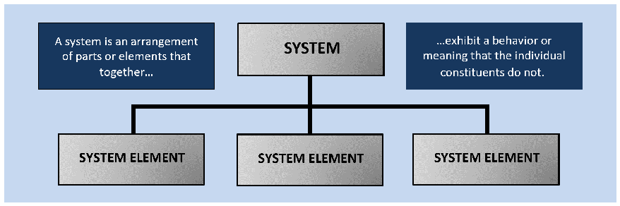
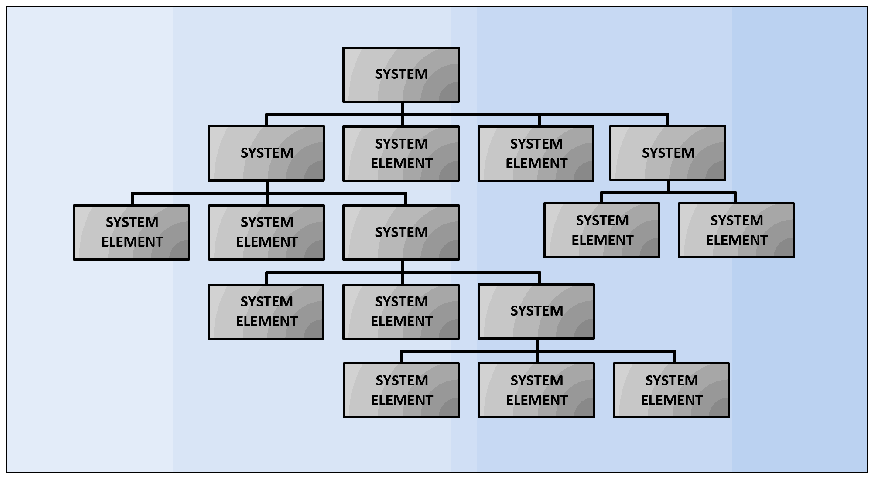

NIST SP 800-160 Vol. 1 Rev. 1 日本語訳
英語タイトル : Engineering Trustworthy Secure Systems日本語タイトル : 信頼できるセキュアシステムのエンジニアリング
公開日 : 2022-11-16
原文URL : https://csrc.nist.gov/pubs/sp/800/160/v1/r1/final
翻訳編集 : 自動生成（有志による非公式の日本語訳）, 原文取得日 : 2026-09-30, 訳文 : 2614 / 2644 ブロック
[要約] SP 800-160 Vol. 1 Rev. 1 は、信頼できるセキュアシステムをエンジニアリングするための原則、概念、活動およびタスクを確立する基礎を示す刊行物です。これらは、システムの目的、種類、範囲、規模、複雑さ、ライフサイクルの段階を問わず適用でき、システムエンジニアリングの概要、システムセキュリティの概念、システムセキュリティエンジニアリングの枠組みを扱います。付録でセキュリティポリシーと要件、信頼できるセキュアな設計なども示し、システムライフサイクル全体を通じてシステムセキュリティを実現する活動を支援します。
NIST Special Publication NIST SP 800-160v1r1
NIST特別刊行物 NIST SP 800-160v1r1
Engineering Trustworthy Secure Systems
信頼に足るセキュアなシステムのエンジニアリング
Ron Ross
Ron Ross
Mark Winstead
Mark Winstead
Michael McEvilley
Michael McEvilley
This publication is available free of charge from: https://doi.org/10.6028/NIST.SP.800-160v1r1
本書は次から無料で入手できる：https://doi.org/10.6028/NIST.SP.800-160v1r1
NIST Special Publication NIST SP 800-160v1r1
NIST Special Publication NIST SP 800-160v1r1
Engineering Trustworthy Secure Systems
信頼に足るセキュアなシステムのエンジニアリング
Ron Ross
Ron Ross
Computer Security Division Information Technology Laboratory
コンピュータセキュリティ部門 情報技術研究所
Mark Winstead
Mark Winstead
Michael McEvilley
Michael McEvilley
The MITRE Corporation
The MITRE Corporation
This publication is available free of charge from: https://doi.org/10.6028/NIST.SP.800-160v1r1
本出版物は無料で入手できます：https://doi.org/10.6028/NIST.SP.800-160v1r1
November 2022
2022年11月
［米国商務省の紋章。公的な標章のため、この非公式サイトには掲載していない。原本 PDF を参照。］
U.S. Department of Commerce Gina M. Raimondo, Secretary
米国商務省 長官 Gina M. Raimondo
National Institute of Standards and Technology Laurie E. Locascio, NIST Director and Under Secretary of Commerce for Standards and Technology
米国国立標準技術研究所 Laurie E. Locascio, NIST所長 兼 商務省標準技術担当次官
Certain commercial entities, equipment, or materials may be identified in this document in order to describe an experimental procedure or concept adequately. Such identification is not intended to imply recommendation or endorsement by the National Institute of Standards and Technology (NIST), nor is it intended to imply that the entities, materials, or equipment are necessarily the best available for the purpose. There may be references in this publication to other publications currently under development by NIST in accordance with its assigned statutory responsibilities. The information in this publication, including concepts and methodologies, may be used by federal agencies even before the completion of such companion publications. Thus, until each publication is completed, current requirements, guidelines, and procedures, where they exist, remain operative. For planning and transition purposes, federal agencies may wish to closely follow the development of these new publications by NIST. Organizations are encouraged to review all draft publications during public comment periods and provide feedback to NIST. Many NIST cybersecurity publications, other than the ones noted above, are available at https://csrc.nist.gov/publications.
実験手順または概念を十分に説明するため、本書では特定の商業事業体、装置または材料を特定する場合がある。その特定は、米国国立標準技術研究所（NIST）による推奨または保証を意味するものではなく、また、それらの事業体、材料または装置が目的に照らして必ずしも利用可能な最良のものであることを意味するものでもない。本出版物では、NISTが法定の責務に従って現在策定中の他の出版物を参照している場合がある。概念および方法論を含む本出版物の情報は、そうした関連出版物の完成前であっても、連邦機関が使用してよい。したがって、各出版物が完成するまでは、現行の要件、ガイドラインおよび手順が存在する場合には、それらが引き続き有効である。計画および移行のため、連邦機関は、NISTによるこれらの新たな出版物の策定状況を注意深く追うことを望む場合がある。組織は、パブリックコメント期間中にすべての草案を確認し、NISTに意見を提供することが推奨される。上記以外の多くのNISTサイバーセキュリティ出版物は https://csrc.nist.gov/publications で入手できる。
Authority This publication has been developed by NIST in accordance with its statutory responsibilities under the Federal Information Security Modernization Act (FISMA) of 2014, 44 U.S.C. § 3551 et seq., Public Law (P.L.) 113-283. NIST is responsible for developing information security standards and guidelines, including minimum requirements for federal information systems, but such standards and guidelines shall not apply to national security systems without the express approval of appropriate federal officials exercising policy authority over such systems. This guideline is consistent with the requirements of the Office of Management and Budget (OMB) Circular A-130.
権限 本出版物は、2014年連邦情報セキュリティ近代化法（FISMA）、合衆国法典第44編第3551条以下、公法（P.L.）113-283に基づく法定責任に従い、NISTが作成した。NISTは、連邦情報システムに対する最低要件を含む情報セキュリティの規格およびガイドラインを策定する責任を負うが、これらの規格およびガイドラインは、国家安全保障システムに対する政策上の権限を行使する適切な連邦職員の明示的な承認なしには、当該システムに適用してはならない。本ガイドラインは、行政管理予算局（OMB）通達A-130の要件と整合している。
Nothing in this publication should be taken to contradict the standards and guidelines made mandatory and binding on federal agencies by the Secretary of Commerce under statutory authority. Nor should these guidelines be interpreted as altering or superseding the existing authorities of the Secretary of Commerce, Director of the OMB, or any other federal official. This publication may be used by nongovernmental organizations on a voluntary basis and is not subject to copyright in the United States. Attribution would, however, be appreciated by NIST.
本出版物のいかなる内容も、商務長官が法的権限に基づき連邦機関に対して義務的かつ拘束力のあるものとした規格およびガイドラインに反するものと解釈してはならない。また、本ガイドラインを、商務長官、行政管理予算局（OMB）長官、またはその他の連邦職員の既存の権限を変更または置き換えるものと解釈してもならない。本出版物は、非政府組織が任意に利用することができ、米国内では著作権の対象とならない。ただし、NISTに対するクレジット表示があれば歓迎される。
NIST Technical Series Policies Copyright, Fair Use, and Licensing Statements NIST Technical Series Publication Identifier Syntax
NIST技術シリーズの方針 著作権、フェアユースおよびライセンスに関する声明 NIST技術シリーズ出版物識別子の構文
Publication History Approved by the NIST Editorial Review Board on 2022-11-08 Supersedes NIST SP 800-160 Vol. 1 (Nov. 2016; updated 2018-03-21) https://doi.org/10.6028/NIST.SP.800-160v1
出版履歴 2022-11-08にNIST編集審査委員会が承認 NIST SP 800-160 Vol. 1（2016年11月刊、2018-03-21更新）を置き換える https://doi.org/10.6028/NIST.SP.800-160v1
How to Cite this NIST Technical Series Publication: Ross R, McEvilley M, Winstead M (2022) Engineering Trustworthy Secure Systems. (National Institute of Standards and Technology, Gaithersburg, MD), NIST Special Publication (SP) NIST SP 800-160v1r1. https://doi.org/10.6028/NIST.SP.800-160v1r1
本NIST技術シリーズ出版物の引用方法：Ross R、McEvilley M、Winstead M（2022）『Engineering Trustworthy Secure Systems』（米国国立標準技術研究所、メリーランド州ゲイサーズバーグ）、NIST Special Publication（SP）NIST SP 800-160v1r1。https://doi.org/10.6028/NIST.SP.800-160v1r1
Author ORCID iDs Ron Ross: 0000-0002-1099-9757
著者のORCID iD Ron Ross：0000-0002-1099-9757
Contact Information security-engineering@nist.gov National Institute of Standards and Technology Attn: Computer Security Division, Information Technology Laboratory 100 Bureau Drive (Mail Stop 8930) Gaithersburg, MD 20899-8930
連絡先 security-engineering@nist.gov 米国国立標準技術研究所 宛先：情報技術研究所コンピュータセキュリティ部門 100 Bureau Drive（Mail Stop 8930）Gaithersburg, MD 20899-8930
All comments are subject to release under the Freedom of Information Act (FOIA).
すべてのコメントは、情報自由法（FOIA）に基づく公開の対象となる。
Abstract
概要
This publication describes a basis for establishing principles, concepts, activities, and tasks for engineering trustworthy secure systems. Such principles, concepts, activities, and tasks can be effectively applied within systems engineering efforts to foster a common mindset to deliver security for any system, regardless of the system’s purpose, type, scope, size, complexity, or the stage of its system life cycle. The intent of this publication is to advance systems engineering in developing trustworthy systems for contested operational environments (generally referred to as systems security engineering) and to serve as a basis for developing educational and training programs, professional certifications, and other assessment criteria.
本出版物は、信頼できるセキュアシステムをエンジニアリングするための原則、概念、活動およびタスクを確立する基礎を示す。これらの原則、概念、活動およびタスクは、システムのいかなる目的、種類、範囲、規模、複雑さ、またはシステムライフサイクルの段階にかかわらず、あらゆるシステムでセキュリティを実現するという共通の考え方を醸成するために、システムエンジニアリングの取組みの中で効果的に適用できる。本出版物の意図は、敵対者と争われる運用環境（contested operational environments）向けの信頼できるシステムを開発するためのシステムエンジニアリング（一般にシステムセキュリティエンジニアリングと呼ばれる）を前進させること、ならびに教育・訓練プログラム、専門資格、その他の評価基準を策定するための基礎となることである。
Keywords
キーワード
assurance; developmental engineering; engineering trades; field engineering; implementation; information security; information security policy; inspection; integration; penetration testing; protection needs; requirements analysis; resilience; review; risk assessment; risk management; risk treatment; security architecture; security design; security requirements; specifications; stakeholders; system of systems; system component; system element; system life cycle; systems; systems engineering; systems security engineering; trustworthiness; validation; verification
保証；開発エンジニアリング；エンジニアリング上のトレードオフ；現場エンジニアリング；実装；情報セキュリティ；情報セキュリティ方針；検査；統合；侵入テスト；保護ニーズ；要求分析；レジリエンス；レビュー；リスク評価；リスク管理；リスク対応；セキュリティアーキテクチャ；セキュリティ設計；セキュリティ要求；仕様；ステークホルダー；システムのシステム；システムコンポーネント；システム要素；システムライフサイクル；システム；システムエンジニアリング；システムセキュリティエンジニアリング；信頼性；妥当性確認；検証
Reports on Computer Systems Technology
コンピュータシステム技術に関する報告書
The Information Technology Laboratory (ITL) at the National Institute of Standards and Technology (NIST) promotes the U.S. economy and public welfare by providing technical leadership for the Nation’s measurement and standards infrastructure. ITL develops tests, test methods, reference data, proof of concept implementations, and technical analyses to advance the development and productive use of information technology. ITL’s responsibilities include the development of management, administrative, technical, and physical standards and guidelines for the cost-effective security and privacy of other than national security-related information in federal information systems. The Special Publication 800-series reports on ITL’s research, guidelines, and outreach efforts in information system security, and its collaborative activities with industry, government, and academic organizations.
米国国立標準技術研究所（NIST）の情報技術研究所（ITL）は、米国の計測および標準インフラに技術的リーダーシップを提供することで、米国経済と公共の福祉を促進している。ITLは、試験、試験方法、参照データ、概念実証実装および技術分析を開発し、情報技術の開発と生産的利用を推進する。ITLの責務には、連邦情報システムにおける国家安全保障関連以外の情報について、費用対効果の高いセキュリティとプライバシーを実現するための、管理面、運営面、技術面および物理面の標準とガイドラインの策定が含まれる。Special Publication 800シリーズは、情報システムセキュリティに関するITLの研究、ガイドラインおよび普及活動、ならびに産業界、政府および学術機関との共同活動を報告するものである。
Patent Disclosure Notice
特許開示に関する通知
NOTICE: ITL has requested that holders of patent claims whose use may be required for compliance with the guidance or requirements of this publication disclose such patent claims to ITL. However, holders of patents are not obligated to respond to ITL calls for patents and ITL has not undertaken a patent search in order to identify which, if any, patents may apply to this publication.
注意：ITLは、本書のガイダンスまたは要件への準拠のためにその使用が必要となる可能性のある特許請求項の保有者に対し、当該特許請求項をITLに開示するよう要請している。ただし、特許保有者はITLによる特許の募集に応じる義務を負わず、またITLは、本書に適用される特許があるかどうか、あるとすればどれかを特定するための特許調査を実施していない。
As of the date of publication and following call(s) for the identification of patent claims whose use may be required for compliance with the guidance or requirements of this publication, no such patent claims have been identified to ITL.
本書の発行日時点において、本書のガイダンスまたは要件への準拠のためにその使用が必要となる可能性のある特許請求項の特定の募集を行った結果、そのような特許請求項はITLに対して特定されていない。
No representation is made or implied by ITL that licenses are not required to avoid patent infringement in the use of this publication.
ITLは、本書の使用において特許侵害を回避するためにライセンスが不要であることを、明示的にも黙示的にも表明しない。
Disclaimer
免責事項
This publication should be used as a supplement to International Standard ISO/IEC/IEEE 15288 and other supporting international standards. It is recommended that organizations using this publication obtain the appropriate international standards to understand the context of the material in Appendices G through K. Content from ISO/IEC/IEEE 15288 referenced in this publication is used with permission from the Institute of Electrical and Electronics Engineers. It is noted as follows:
本書は、国際規格ISO/IEC/IEEE 15288およびその他の関連する国際規格の補足として使用すべきである。本書を使用する組織は、付録GからKまでの内容の文脈を理解するために、適切な国際規格を入手することが推奨される。本書で参照しているISO/IEC/IEEE 15288の内容は、Institute of Electrical and Electronics Engineersの許諾を得て使用している。その旨を次のとおり記す。
Reprinted with permission from IEEE, Copyright IEEE 2015, All rights reserved.
IEEEの許諾を得て転載。Copyright IEEE 2015, All rights reserved.
The reprinted material has been updated to reflect any changes in the international standard.
転載した内容は、国際規格における変更を反映するよう更新している。
Table of Contents
目次
List of Tables
表一覧
List of Figures
図一覧
Preface
序文
On May 12, 2021, the President signed an Executive Order (EO) on Improving the Nation’s Cybersecurity [1]. The Executive Order stated,
2021年5月12日、大統領は国家のサイバーセキュリティの改善に関する大統領令（EO）に署名した［1］。同大統領令は次のように述べている。
The United States faces persistent and increasingly sophisticated malicious cyber campaigns that threaten the public sector, the private sector, and ultimately the American people’s security and privacy. The Federal Government must improve its efforts to identify, deter, protect against, detect, and respond to these actions and actors.
米国は、公共部門、民間部門、そして最終的には米国民のセキュリティとプライバシーを脅かす、執拗でますます高度化する悪意あるサイバー攻撃活動に直面している。連邦政府は、こうした行為と行為者を特定し、抑止し、防御し、検知し、対応する取組みを改善しなければならない。
The Executive Order further described the holistic nature of the cybersecurity challenges confronting the Nation with computing technology embedded in every type of system from general-purpose computing systems that support businesses to cyber-physical systems that control the operations in power plants and provide electricity to the American people. The Federal Government must bring the full scope of its authorities and resources to bear in order to protect and secure its computer systems, whether the systems are cloud-based, on-premises, or hybrid. The scope of protection and security must include systems that process data (i.e., information technology [IT]) and systems that run the machinery that ensure our safety (i.e., operational technology [OT]).
同EOは、企業を支援する汎用コンピューティングシステムから、発電所の運転を制御して米国民に電力を供給するサイバーフィジカルシステムまで、あらゆる種類のシステムにコンピューティング技術が組み込まれていることを踏まえ、国家が直面するサイバーセキュリティ課題の全体性についても説明した。連邦政府は、クラウド、オンプレミスまたはハイブリッドのいずれであっても、コンピュータシステムを保護しセキュアにするため、その権限と資源を全面的に活用しなければなりない。保護とセキュリティの対象には、データを処理するシステム（すなわち情報技術［IT］）と、私たちの安全を確保する機械を動かすシステム（すなわち運用技術［OT］）の両方が含まれる。
In response to the EO, there is a need to:
同EOへの対応として、次のことが必要である。
•Identify stakeholder assets and protection needs
•ステークホルダーの資産と保護ニーズを特定する
•Provide protection commensurate with the significance of asset loss and correlated with threat and adversary capabilities
•資産損失の重大性に見合い、脅威および敵対者の能力に対応した保護を提供する
•Develop scenarios and model the complexity of systems to provide a rigorous basis to reason about, manage, and address the uncertainty associated with that complexity
•システムの複雑さについて推論し、管理し、その複雑さに伴う不確実性に対処するための厳密な基盤となるシナリオを作成し、システムをモデル化する
•Adopt an engineering-based approach that addresses the principles of trustworthy secure design and apply those principles throughout the system life cycle
•信頼できるセキュア設計の原則を扱うエンジニアリングベースのアプローチを採用し、システムライフサイクル全体にわたり適用する
Building trustworthy, secure systems cannot occur in a vacuum with stovepipes for software, hardware, information technology, and the human element (e.g., designers, operators, users, attackers of these systems). Rather, it requires a transdisciplinary approach to protection, a determination across all assets where loss could occur, and an understanding of adversity, including how adversaries attack and compromise systems. As such, this publication addresses considerations for the engineering-driven actions necessary to develop defensible and survivable systems, including the components that compose and the services that depend on those systems. The objective is to address security issues from the perspective of stakeholder requirements and protection needs and to use established engineering processes to ensure that such requirements and needs are addressed with appropriate fidelity and rigor across the entire life cycle of the system.
信頼できるセキュアシステムの構築は、ソフトウェア、ハードウェア、情報技術および人的要素（設計者、運用者、利用者、システム攻撃者など）が縦割りになった状態で、孤立して行えるものではない。資産損失が生じ得るすべての資産を特定し、敵対者の攻撃方法やシステム侵害の方法を含む敵対状況を理解した上で、分野横断的に保護に取り組む必要がある。そのため本出版物では、システムを構成するコンポーネントと、そのシステムに依存するサービスを含め、防御可能で存続可能なシステムを開発するために必要なエンジニアリング主導の活動を扱う。目的は、ステークホルダーの要求事項と保護ニーズの観点からセキュリティ課題に対処し、確立されたエンジニアリングプロセスを用いて、システムのライフサイクル全体にわたり、適切な忠実度と厳密さでそれらの要求事項とニーズを満たすことである。
Engineering trustworthy, secure systems is a significant undertaking that requires a substantial investment in the requirements, architecture, and design of systems, components, applications, and networks. A trustworthy system provides compelling evidence to support claims that it meets its requirements to deliver the protection and performance needed by stakeholders. Introducing a disciplined, structured, and standards-based set of systems security engineering activities and tasks provides an important starting point and forcing function to initiate needed change.
信頼できるセキュアシステムのエンジニアリングは大規模な取組みであり、システム、コンポーネント、アプリケーションおよびネットワークの要求事項、アーキテクチャ、設計に相当の投資が必要である。信頼できるシステムは、ステークホルダーが必要とする保護および性能を実現するための要求事項を満たしているという主張を裏付ける、説得力ある証拠を提示する。規律ある構造化された標準ベースのシステムセキュリティエンジニアリング活動とタスクを導入することは、必要な変革を開始するための重要な出発点となり、その変革を促す役割を果たす。
“Providing satisfactory security controls in a computer system is in itself a system design problem. A combination of hardware, software, communications, physical, personnel and administrative-procedural safeguards is required for comprehensive security. In particular, software safeguards alone are not sufficient.”
「コンピュータシステムに満足できるセキュリティ管理策を提供すること自体が、システム設計の問題である。包括的なセキュリティには、ハードウェア、ソフトウェア、通信、物理、人員および管理・手続上の保護策を組み合わせる必要がある。特に、ソフトウェアによる保護策だけでは十分でない。」
“Security Controls for Computer Systems,” (The Ware Report), Rand Corporation Defense Science Board Task Force on Computer Security, February 1970
「Security Controls for Computer Systems」（Ware報告書）、Rand Corporation、国防科学委員会コンピュータセキュリティ作業部会、1970年2月
“Mission assurance requires systems that behave with predictability and proportionality.”
「ミッション保証には、予測可能性と比例性をもって振る舞うシステムが必要である。」
General Michael Hayden Former Director National Security Agency (NSA) and Central Intelligence Agency (CIA) Syracuse University, October 2009
Michael Hayden将軍 元国家安全保障局（NSA）長官および中央情報局（CIA）長官 Syracuse University、2009年10月
“In the past, it has been assumed that to show that a system is safe, it is sufficient to provide assurance that the process for identifying the hazards has been as comprehensive as possible, and that each identified hazard has one or more associated controls. While historically this approach has been used reasonably effectively to ensure that known risks are controlled, it has become increasingly apparent that evolution to a more holistic approach is needed as systems become more complex and the cost of designing, building, and operating them become more of an issue.”
「従来、システムが安全であることを示すには、ハザードを特定するプロセスが可能な限り包括的であり、特定された各ハザードに1つ以上の関連する管理策があれば十分であると考えられてきた。このアプローチは、既知のリスクを管理する上で歴史的にかなり有効だった。しかし、システムが複雑化し、設計、構築、運用のコストが一層問題となるにつれて、より包括的なアプローチへの移行が必要であることが明らかになってきた。」
Preface, National Aeronautics and Space Administration (NASA) System Safety Handbook, Volume 1, November 2011
NASAシステム安全ハンドブック第1巻「序文」、2011年11月
“This whole economic boom in cybersecurity seems largely to be a consequence of poor engineering.”
「サイバーセキュリティをめぐるこの経済ブーム全体は、主としてエンジニアリングの質の低さから生じているように思われる。」
Carl Landwehr Communications of the Association for Computing Machinery (ACM), February 2015
Carl Landwehr、Association for Computing Machinery（ACM）Communications、2015年2月
“Cybersecurity requires more than government action. Protecting our Nation from malicious cyber actors requires the Federal Government to partner with the private sector. The private sector must adapt to the continuously changing threat environment, ensure its products are built and operate securely, and partner with the Federal Government to foster a more secure cyberspace…Incremental improvements will not give us the security we need; instead, the Federal Government needs to make bold changes and significant investments in order to defend the vital institutions that underpin the American way of life.”
「サイバーセキュリティには政府の行動だけでは不十分である。悪意あるサイバー行為者から国家を守るには、連邦政府が民間部門と連携しなければならない。民間部門は絶えず変化する脅威環境に適応し、自社製品がセキュアに構築され運用されるようにし、より安全なサイバー空間を実現するため連邦政府と協力しなければならない。……漸進的な改善では必要なセキュリティを実現できない。アメリカ人の生活様式を支える重要機関を防御するため、連邦政府は大胆な変革と大規模な投資を行う必要がある。」
Executive Order (EO) on Improving the Nation’s Cybersecurity, May 2021
「国家のサイバーセキュリティの改善」に関する大統領令（EO）、2021年5月
“[Systems] security engineering must be fundamental to systems engineering, not just a specialty discipline. Security concepts must be fundamental to [an] engineering education, and security proficiency must be fundamental in development teams. Security fundamentals must be clearly understood by stakeholders and effectively evaluated in a way that considers broad goals with security functions and outcomes.”
「［システム］セキュリティエンジニアリングは、単なる専門分野ではなく、システムエンジニアリングの基本でなければならない。セキュリティ概念はエンジニアリング教育の基本であり、セキュリティ能力は開発チームの基本でなければならない。ステークホルダーがセキュリティの基本を明確に理解し、広範な目標とセキュリティ機能・成果を考慮した方法で効果的に評価できなければならない。」
Security in the Future of Systems Engineering (FuSE), a Roadmap of Foundational Concepts, INCOSE International Symposium, July 2021
「システムエンジニアリングの未来におけるセキュリティ（FuSE）：基礎概念のロードマップ」、INCOSE国際シンポジウム、2021年7月
Acknowledgments
謝辞
The authors gratefully acknowledge and appreciate the significant contributions from individuals and organizations in the public and private sectors whose constructive comments improved the overall quality, thoroughness, and usefulness of this publication. In particular, we wish to thank Jeff Brewer, Ken Cureton, Jordan Denmark, Rick Dove, Holly Dunlap, Jim Foti, Michael Hankins, Daryl Hild, M. Lee, Tom Llanso, Jimmie McEver, Perri Nejib, Cory Ocker, Daniel Patrick Pereira, Victoria Pillitteri, Greg Ritter, Thom Schoeffling, Theresa Soloway, Nick Stegman, Gary Stoneburner, Gregory Touhill, Isabel Van Wyk, Adam Williams, Drew Wilson, Carol Woody, William Young, and Michael Zisa. The authors also wish to acknowledge members of the International Council for Systems Engineering (INCOSE), including members of the Systems Security Engineering and the Resilient Systems Working Groups, for numerous discussions on the content of the document. Finally, the authors wish to thank the students participating in INCOSE tutorials and MITRE Systems Security Engineering courses whose comments and valuable insights helped to guide and inform many of the proposed changes in this publication.
著者は、本出版物の全体的な品質、網羅性および有用性を高める建設的な意見を寄せてくださった、官民両部門の個人および組織による多大な貢献に深く感謝する。特に、Jeff Brewer、Ken Cureton、Jordan Denmark、Rick Dove、Holly Dunlap、Jim Foti、Michael Hankins、Daryl Hild、M. Lee、Tom Llanso、Jimmie McEver、Perri Nejib、Cory Ocker、Daniel Patrick Pereira、Victoria Pillitteri、Greg Ritter、Thom Schoeffling、Theresa Soloway、Nick Stegman、Gary Stoneburner、Gregory Touhill、Isabel Van Wyk、Adam Williams、Drew Wilson、Carol Woody、William YoungおよびMichael Zisa各氏に謝意を表す。また、システムセキュリティエンジニアリングおよびレジリエントシステム作業部会のメンバーを含むINCOSE（国際システムズエンジニアリング協議会）の方々との、本書の内容に関する多くの議論にも感謝する。最後に、INCOSEのチュートリアルおよびMITREのシステムセキュリティエンジニアリング講座に参加した学生の皆さんの意見と貴重な洞察が、本出版物で提案する多くの変更の方向付けに役立ったことに感謝する。
Historical Contributions The authors gratefully acknowledge the contributions of Janet Carrier Oren, one of the original authors of NIST Special Publication 800-160, Volume 1. The authors also wish to acknowledge the following organizations and individuals for their historic contributions to this publication: Organizations: National Security Agency; Naval Postgraduate School; Department of Defense Office of Acquisition, Technology, and Logistics; Department of Homeland Security Science and Technology Office, Cyber Security Division; International Council on Systems Engineering; United States Air Force; Air Force Institute of Technology; Northrop Grumman Corporation; The MITRE Corporation; The Boeing Company; Lockheed Martin Corporation. Individuals: Beth Abramowitz, Max Allway, Kristen Baldwin, Dawn Beyer, Debora Bodeau, Paul Clark, Keesha Crosby, Judith Dahmann, Kelley Dempsey, Holly Dunlap, Jennifer Fabius, Daniel Faigin, Jeanne Firey, Robin Gandhi, Rich Graubart, Kevin Greene, Richard Hale, Daryl Hild, Kesha Hill, Danny Holtzman, Cynthia Irvine, Brett Johnson, Ken Kepchar, Stephen Khou, Alvi Lim, Logan Mailloux, Dennis Mangsen, Doug Maughn, Rosalie McQuaid, Joseph Merkling, John Miller, Thuy Nguyen, Perri Nejib, Lisa Nordman, Dorian Pappas, Paul Popick, Roger Schell, Thom Schoeffling, Matthew Scholl, Peter Sell, Gary Stoneburner, Glenda Turner, Edward Yakabovicz, and William Young. Finally, the authors respectfully acknowledge the seminal work in computer security that began in the 1960s. The vision, insights, and dedicated efforts of those early pioneers in computer security serve as the philosophical and technical foundation for the security principles, concepts, methods, and practices employed in this publication to address the critically important problem of engineering trustworthy secure systems.
過去の貢献 著者は、NIST Special Publication 800-160第1巻の原著者の一人であるJanet Carrier Oren氏の貢献に深く感謝する。また、本出版物への歴史的な貢献を果たした次の組織および個人にも謝意を表す。組織：国家安全保障局；海軍大学院；国防総省調達・技術・兵站担当局；国土安全保障省科学技術局サイバーセキュリティ部門；国際システムズエンジニアリング協議会；米国空軍；空軍工科大学；Northrop Grumman Corporation；The MITRE Corporation；The Boeing Company；Lockheed Martin Corporation。個人：Beth Abramowitz、Max Allway、Kristen Baldwin、Dawn Beyer、Debora Bodeau、Paul Clark、Keesha Crosby、Judith Dahmann、Kelley Dempsey、Holly Dunlap、Jennifer Fabius、Daniel Faigin、Jeanne Firey、Robin Gandhi、Rich Graubart、Kevin Greene、Richard Hale、Daryl Hild、Kesha Hill、Danny Holtzman、Cynthia Irvine、Brett Johnson、Ken Kepchar、Stephen Khou、Alvi Lim、Logan Mailloux、Dennis Mangsen、Doug Maughn、Rosalie McQuaid、Joseph Merkling、John Miller、Thuy Nguyen、Perri Nejib、Lisa Nordman、Dorian Pappas、Paul Popick、Roger Schell、Thom Schoeffling、Matthew Scholl、Peter Sell、Gary Stoneburner、Glenda Turner、Edward YakaboviczおよびWilliam Young各氏。最後に、1960年代に始まったコンピュータセキュリティの先駆的な研究に敬意を表す。初期の先駆者たちの先見性、洞察、献身的な取組みは、本出版物で信頼できるセキュアシステムをエンジニアリングするという極めて重要な問題に対処するために用いるセキュリティ原則、概念、方法および実務の哲学的・技術的基盤である。
VIEWING SECURITY FROM THE PROPER PERSPECTIVE
適切な視点からセキュリティを見る
“For the first few decades as a burgeoning discipline, cybersecurity has been dominated by the development of widgets to address some aspect of the problem. Systems have become increasingly complex and interconnected, creating even more attack opportunities, which in turn creates even more opportunities to create defensive widgets that will bring some value in detecting or preventing an aspect of the attack space. Eventually, this becomes a game of whack-a-mole in which a simulated mole pops up from one of many holes and the objective is to whack the mole before it pops back in its hole. The moles represent new attacks, and the holes represent a huge array of potential vulnerabilities – both known and as-yet-undiscovered.
「新興分野であった最初の数十年間、サイバーセキュリティは、問題の一側面に対処する小道具（ウィジェット）の開発に支配されてきた。システムはますます複雑かつ相互接続され、攻撃の機会が増えた。その結果、攻撃領域の一部を検知または防止して何らかの価値をもたらす防御用ウィジェットを作る機会もさらに増えている。やがてこれは、多数の穴の一つから模擬のモグラが顔を出し、穴に戻る前にそのモグラを叩くことが目的のモグラたたきになる。モグラは新たな攻撃を、穴は既知のものも未発見のものも含む膨大な潜在的脆弱性を表す。
Underlying [the discipline of] engineering is science. Sometimes engineering gets ahead of science, such as in bridge building, where the fundamentals of material science were not well understood. Many bridges were built; many fell down; some stayed up; designs of the ones that stayed up were copied. Eventually, for engineering to advance beyond some point, science must catch up with engineering. The science underlying cybersecurity [and more generally, security] engineering is complex and difficult. On the other hand, there is no time like the present to start, because it is both urgent and important to the future.…”
エンジニアリングの根底には［その分野の］科学がある。橋の建設のように、材料科学の基礎が十分に理解される前にエンジニアリングが先行することもある。多くの橋が建設され、多くが崩落し、いくつかは残った。残った橋の設計が模倣された。エンジニアリングがある段階を越えて発展するには、やがて科学が追いつかなければならない。サイバーセキュリティ［より一般にはセキュリティ］エンジニアリングを支える科学は複雑で難しい。一方、今始めることが将来にとって重要かつ緊急であり、今ほど適切な時はない。……」
-- O. Sami Saydjari Engineering Trustworthy Systems McGraw-Hill, August 2018
— O. Sami Saydjari『Engineering Trustworthy Systems』McGraw-Hill、2018年8月
THE IMPORTANCE OF SCIENCE AND ENGINEERING
科学とエンジニアリングの重要性
When crossing a bridge, we have a reasonable expectation that the bridge will not collapse and will get us to our destination without incident. For bridge builders, the focus is on equilibrium, static and dynamic loads, vibrations, and resonance. The science of physics combines with civil engineering principles and concepts to produce a product that we deem trustworthy, giving us a level of confidence that the bridge is fit-for-purpose.
橋を渡るとき、橋が崩落せず、何事もなく目的地まで運んでくれると期待するのは当然である。橋の建設者は、平衡、静的・動的荷重、振動、共振に注目する。物理学の科学と土木エンジニアリングの原則・概念を組み合わせ、目的に適合しているという確信を与える、信頼できると考える製品を生み出す。
For system developers, there are also fundamental principles and concepts that can be found in mathematics, computer science, computer and electrical engineering, systems engineering, and software engineering that when properly employed, provide the necessary trustworthiness to engender that same level of confidence. Trustworthy secure systems are achieved by making a significant and substantial investment in strengthening the underlying systems and system components by employing transdisciplinary systems engineering efforts guided and informed by well-defined security requirements and secure architectures and designs. Such efforts have been proven over time to produce sound engineering-based solutions to complex and challenging systems security problems. Only under those circumstances can we build systems that are adequately secure and exhibit a level of trustworthiness that is sufficient for the purpose for which the system was built.
システム開発者にとっても、数学、コンピュータ科学、コンピュータ・電気エンジニアリング、システムエンジニアリングおよびソフトウェアエンジニアリングに、適切に活用すれば同じ確信をもたらす信頼性の基礎となる原則と概念がある。信頼できるセキュアシステムは、明確に定義されたセキュリティ要求事項とセキュアなアーキテクチャ・設計に導かれ、それらに基づく分野横断的なシステムエンジニアリングを通じて、基盤となるシステムとシステムコンポーネントを強化するために大規模な投資を行うことで実現する。こうした取組みは、複雑で困難なシステムセキュリティ問題に対し、健全なエンジニアリングベースの解決策を生み出すことが実証されている。そのような条件の下で初めて、目的に十分なセキュリティと信頼性を備えるシステムを構築できる。
“Scientists study the world as it is, engineers create the world that never has been.”
「科学者は世界をあるがままに研究し、エンジニアはこれまで存在しなかった世界を創造する。」
Theodore von Kármán 1962 National Medal of Science Recipient
Theodore von Kármán、1962年国家科学賞受賞者
CRITICAL SYSTEM BEHAVIORS OF THE FUTURE
将来のシステムにおける重要な振る舞い
“To deliver system behavior, the systems engineer must define a group of subsystems and precisely how those subsystems are to interact with each other. It is the subsystems and their interactions which produce the system-level behavior. Many of us recognize a vehicle that can take a 60-degree curve at 200 miles per hour as possessing a valuable system behavior. Would we as quickly recognize safe, private, trusted, and available as system behaviors? These behaviors require the same careful system-level design and trades to achieve optimal solutions as the performance system behavior I mentioned above. And there is a clear need—investors want the system to keep their data private, to be safe, and to be trustworthy so that their control is not compromised by a cyber threat, and to be highly available.
「システムの振る舞いを実現するには、システムエンジニアがサブシステムの集合と、それらが相互にどう作用するかを正確に定義しなければならない。システムレベルの振る舞いを生み出すのは、サブシステムとその相互作用である。時速200マイルで60度のカーブを曲がる車が、価値あるシステムの振る舞いを備えていることは多くの人が認識するだろう。安全、プライバシー、信頼性、可用性もシステムの振る舞いだと、同じようにすぐ認識できるだろうか。これらの振る舞いを実現するには、前述の性能上の振る舞いと同様に、最適な解決策を得るための慎重なシステムレベル設計とトレードオフが必要である。そして、明確な必要性がある。投資家は、サイバー脅威によって制御を侵害されないよう、システムがデータのプライバシー、安全性、信頼性を保ち、高い可用性を備えることを望んでいる。
If we systems engineers are willing to recognize these behaviors as system behaviors, then we are accountable for delivering them as part of our job. If we choose to view these behaviors as attributes of the parts of our system but not the system as a whole, then we are likely to consider them as jobs for the “specialty engineers.” I’ve looked back into past behaviors of our system engineering community. What I find are examples of systems engineers giving our ‘specialty engineering’ colleagues these challenges by way of the requirements-allocation process. I think we have been wrong to do this. Our “specialty” colleagues are likely to take these allocated requirements and focus on building safe, private, trusted, available parts of a system—rather than in delivering safe, private, trusted, and available system behaviors. It is true you can build a safer system by building safe parts. However, you can’t build a truly safe system without having safe parts interacting with each other in a safe manner. The same can be said for other system behaviors (private, trusted, available, and so on).”
システムエンジニアである私たちがこれらをシステムの振る舞いとして認識するなら、それを実現する責任は私たちの仕事の一部である。システム全体の振る舞いではなく、構成部品の属性と見なせば、「専門エンジニア」の仕事として扱うことになるであろう。システムエンジニアリングの過去を振り返ると、要求事項の割当てプロセスを通じて、システムエンジニアがこれらの課題を「専門分野」の同僚に渡してきた例がある。これは誤りだったと思う。専門分野の同僚は、割り当てられた要求事項を受け、安全で、プライバシーが守られ、信頼でき、可用性の高いシステムの振る舞いを実現するのではなく、そのようなシステム部品を作ることに注力しがちである。安全な部品を作ればより安全なシステムを構築できるのは確かである。しかし、安全な方法で相互に作用する安全な部品がなければ、本当に安全なシステムは構築できない。同じことは、プライバシー、信頼性、可用性など、他のシステムの振る舞いにも当てはまる。」
-- John A. Thomas President, INCOSE INCOSE Insight, July 2013.
— John A. Thomas、INCOSE会長、INCOSE Insight、2013年7月
1. Introduction
1. 序論
Today’s systems1 are inherently complex. The growth in the size, number, and types of components and technologies2 that compose those systems as well as the system dependencies result in a range of consequences from inconvenience to catastrophic loss due to adversity3 within the operating environment. Managing the complexity of trustworthy secure systems requires achieving the appropriate level of confidence in the feasibility, correctness-in-concept, philosophy, and design of a system to produce only the intended behaviors and outcomes. This provides the foundation to address stakeholder protection needs and security concerns with sufficient confidence that the system functions only as intended while subjected to different types of adversity and to realistically bound those expectations with respect to constraints and uncertainty. The failure to address complexity and security will leave the Nation susceptible to potentially serious, severe, or catastrophic consequences.
今日のシステム1は本質的に複雑である。システムを構成するコンポーネントや技術2の規模、数、種類の拡大に加え、システム間の依存関係によって、運用環境の逆境3が不便から壊滅的損失に至るさまざまな結果をもたらす。信頼できるセキュアシステムの複雑さを管理するには、意図した振る舞いと結果のみを生み出せるという、システムの実現可能性、概念の正しさ、基本方針および設計への適切な確信を得る必要がある。これがステークホルダーの保護ニーズとセキュリティ上の懸念に対処する基盤となり、さまざまな逆境にさらされてもシステムが意図どおりにのみ機能するという十分な確信をもたらす。同時に、制約と不確実性を踏まえて、その期待を現実的に限定する。複雑さとセキュリティに対処しなければ、国家は深刻、重大または壊滅的になり得る結果にさらされるおそれがある。
The term security is used in this publication to mean freedom from the conditions that can cause a loss of assets with unacceptable consequences.4 Stakeholders must define the scope of security in terms of the assets to which security applies and the consequences against which security is assessed.5 Systems engineering provides a foundation for a disciplined and structured approach to building assured, trustworthy secure systems. As a systems engineering subdiscipline, systems security engineering addresses security-relevant considerations intended to produce secure outcomes. The engineering efforts are conducted at the appropriate level of fidelity and rigor needed to achieve trustworthiness and assurance objectives.
本出版物では、セキュリティとは、許容できない結果を伴う資産損失を引き起こし得る状態からの自由を意味する4。ステークホルダーは、セキュリティの対象となる資産と、セキュリティを評価する際に考慮する結果を用いて、セキュリティの範囲を定義しなければなりない5。システムエンジニアリングは、保証された信頼できるセキュアシステムを構築するための、規律ある構造化されたアプローチの基盤となる。システムエンジニアリングの下位分野であるシステムセキュリティエンジニアリングは、セキュアな成果を実現するため、セキュリティに関連する考慮事項に取り組む。エンジニアリング作業は、信頼性および保証の目標を達成するために必要な適切な忠実度と厳密さで実施される。
Peter Neumann described the concept of trustworthiness in [2] as follows:
Peter Neumannは［2］で信頼性の概念を次のように説明している。
“By trustworthiness, we mean simply worthy of being trusted to fulfill whatever critical requirements may be needed for a particular component, subsystem, system, network, application, mission, enterprise, or other entity. Trustworthiness requirements might typically involve (for example) attributes of security, reliability, performance, and survivability under a wide range of potential adversities. Measures of trustworthiness are meaningful only to the extent that (a) the requirements are sufficiently complete and well defined, and (b) can be accurately evaluated.”
「信頼性とは、単に、特定のコンポーネント、サブシステム、システム、ネットワーク、アプリケーション、ミッション、企業その他の主体について必要となる重要な要求事項を果たすものとして、信頼に値することを意味する。信頼性要求事項には通常、広範な逆境におけるセキュリティ、信頼度、性能および存続可能性の属性などが含まれる。信頼性の尺度が意味を持つのは、（a）要求事項が十分に完全かつ明確に定義され、（b）正確に評価できる場合に限られる。」
Systems security engineering provides complementary engineering capabilities that extend the concept of trustworthiness to deliver trustworthy secure systems. Trustworthiness is not only about demonstrably meeting a set of requirements. The requirements must also be complete, consistent, and correct. From a security perspective, a trustworthy system meets a set of well-defined requirements, including security requirements. Through evidence and expert judgment, trustworthy secure systems can limit and prevent the effects of modern adversities. Such adversities come in malicious and non-malicious forms and can emanate from a variety of sources, including physical and electronic. Adversities can include attacks from determined and capable adversaries, human errors of omission and commission, accidents and incidents, component faults and failures, abuses and misuses, and natural and human-made disasters.
システムセキュリティエンジニアリングは、信頼性の概念を拡張して信頼できるセキュアなシステムを実現する、補完的なエンジニアリング能力を提供する。信頼性とは、一連の要求事項を満たすことを実証できるというだけのことではない。要求事項自体も、完全で、一貫性があり、正しくなければならない。セキュリティの観点からは、信頼できるシステムとは、セキュリティ要求事項を含む明確に定義された一連の要求事項を満たすシステムである。証拠と専門家の判断を通じて、信頼できるセキュアなシステムは現代の逆境の影響を制限し、防止することができる。そうした逆境には悪意のあるものと悪意のないものがあり、物理的なものや電子的なものを含むさまざまな発生源から生じうる。逆境には、意志が固く能力のある敵対者による攻撃、不作為と作為による人的過誤、事故とインシデント、コンポーネントの障害と故障、乱用と誤用、自然災害と人為的災害が含まれうる。
“Security is embedded in systems. Rather than two engineering groups designing two systems, one intended to protect the other, systems engineering specifies and designs a single system with security embedded in the system and its components.”
「セキュリティはシステムに組み込まれている。一方が他方を保護することを意図した二つのシステムを二つのエンジニアリンググループが設計するのではなく、システムエンジニアリングは、システムとそのコンポーネントにセキュリティが組み込まれた単一のシステムを規定し設計する。」
-- An Objective of Security in the Future of Systems Engineering [7]
-- An Objective of Security in the Future of Systems Engineering ［7］
1.1. Purpose and Applicability
1.1. 目的および適用範囲
This publication is intended to:
本出版物の目的は次のとおりである。
•Provide a basis for establishing a discipline for systems security engineering as part of systems engineering in terms of its principles, concepts, activities, and tasks
•原則、概念、活動およびタスクの観点から、システムズエンジニアリングの一部としてのシステムセキュリティエンジニアリングの分野を確立するための基礎を提供する
•Foster a common mindset to deliver security for any system, regardless of its purpose, type, scope, size, complexity, or stage of the system life cycle
•目的、種類、範囲、規模、複雑さまたはシステムライフサイクル上の段階を問わず、あらゆるシステムでセキュリティを実現するための共通の考え方を促進する
•Demonstrate how selected systems security engineering principles, concepts, activities, and tasks can be effectively applied to systems engineering activities
•選定したシステムセキュリティエンジニアリングの原則、概念、活動およびタスクを、システムエンジニアリング活動に効果的に適用できることを示す
•Advance the field of systems security engineering as a discipline that can be applied and studied
•適用・研究可能な専門分野として、システムセキュリティエンジニアリングの発展を促す
•Serve as a basis for the development of educational and training programs, including individual certifications and other professional assessment criteria
•個人認定その他の専門的評価基準を含む、教育・訓練プログラムの策定基盤となる
The considerations set forth in this publication are applicable to all federal systems other than those systems designated as national security systems as defined in 44 U.S.C., Section 3542.6 These considerations have been broadly developed from a technical and technical management perspective to complement similar considerations for national security systems and may be used for such systems with the approval of federal officials who exercise policy authority over such systems. State, local, and tribal governments, as well as private sector entities, are encouraged to consider using the material in this publication, as appropriate.
本書に示す考慮事項は、44 U.S.C., Section 3542で定義される国家安全保障システムに指定されたシステムを除く、すべての連邦システムに適用される。6 これらの考慮事項は、国家安全保障システムに関する同様の考慮事項を補完するよう、技術および技術管理の観点から広範に策定されたものであり、国家安全保障システムに対する政策上の権限を有する連邦政府職員の承認を得て、そうしたシステムに使用してもよい。州政府、地方政府、部族政府および民間部門の組織も、必要に応じて本書の内容の利用を検討することが推奨される。
The applicability statement is not meant to limit the technical and management application of these considerations. That is, the security design principles, concepts, and techniques described in this publication are part of a trustworthy secure design approach as described in Appendix D and can be applied in any of the following cases:
適用に関する記述は、これらの考慮事項を技術面および管理面で適用する範囲を限定するものではない。すなわち、本出版物に記載するセキュリティ設計の原則、概念および技法は、付録Dに記載する信頼できるセキュア設計アプローチの一部であり、次のいずれにも適用できる。
•Development of a new capability or system
•新たな能力またはシステムの開発
The engineering effort includes such activities as concept exploration, preliminary or applied research to refine the concepts and/or feasibility of technologies employed in a new system, and an assessment of alternative solutions. This effort is initiated during the concept and development stages of the system life cycle.
エンジニアリング作業には、概念の検討、新システムで採用する技術の概念および／または実現可能性を精緻化するための予備研究または応用研究、代替案の評価などが含まれる。この作業はシステムライフサイクルの概念段階および開発段階で開始される。
•Modification of an existing capability or system
•既存の能力またはシステムの変更
•Reactive modifications to fielded systems: The engineering effort occurs in response to adversity that diminishes or prevents the system from achieving the design intent. This effort can occur during the production, utilization, or support stages of the system life cycle and may be performed concurrently with or independent of day-to-day system operations.
•配備済みシステムへの事後対応的な変更：このエンジニアリング活動は、システムが設計意図を達成する能力を低下させる、または達成を妨げる逆境に対応して行われる。この活動は、システムライフサイクルの生産、利用、または支援の段階で発生する場合があり、日常のシステム運用と並行して、または独立して実施される場合がある。
•Planned upgrades to fielded systems while continuing to sustain day-to-day operations: Planned system upgrades may enhance an existing system capability, provide a new capability, or constitute a technology refresh of an existing capability. This effort occurs during the production, utilization, or support stages of the system life cycle.
•日常運用を維持しながら行う、配備済みシステムの計画的なアップグレード：計画的なシステムのアップグレードは、既存のシステム能力を強化する場合、新たな能力を提供する場合、または既存の能力の技術更新となる場合がある。この活動は、システムライフサイクルの生産、利用、または支援の段階で発生する。
•Planned upgrades to fielded systems that result in new systems: The engineering effort is conducted as if developing a new system with a system life cycle that is distinct from the life cycle of a fielded system. The upgrades are performed in a development environment that is independent of the fielded system.
•新たなシステムをもたらす、配備済みシステムの計画的なアップグレード：このエンジニアリング活動は、配備済みシステムのライフサイクルとは別個のシステムライフサイクルを持つ新規システムを開発する場合と同様に実施される。アップグレードは、配備済みシステムから独立した開発環境で実施される。
•Evolution of an existing capability or system
•既存の能力またはシステムの進化
The engineering effort involves migrating or adapting a system or system implementation from one operational environment or set of operating conditions to another operational environment or set of operating conditions.7
このエンジニアリング活動には、システムまたはシステム実装を、ある運用環境または運用条件の集合から別の運用環境または運用条件の集合へ移行または適合させることが含まれる。7
•Retirement of an existing capability or system
•既存の能力またはシステムの廃止
The engineering effort removes system functions, services, elements, or the entire system from operation and may include the transition of system functions and services to another system. The effort occurs during the retirement stage of the system life cycle and may be conducted while sustaining day-to-day operations.
エンジニアリング作業では、システム機能、サービス、要素、またはシステム全体を運用から取り除く。システム機能やサービスを別のシステムへ移行する場合もある。この作業はシステムライフサイクルの廃止段階に行い、日々の運用を維持しながら実施することもできる。
•Development of a dedicated, domain-specific, or special-purpose capability or system
•専用の、ドメイン固有の、または特殊目的の能力またはシステムの開発
•Security-dedicated or security-purposed system: The engineering effort delivers a system that satisfies a security-dedicated need or provides a security-oriented purpose and does so as a stand-alone system that may monitor or interact with other systems. Such systems can include surveillance systems, physical protection systems, monitoring systems, and security service provisioning systems.
•セキュリティ専用またはセキュリティ目的のシステム：エンジニアリング作業により、セキュリティ専用のニーズを満たす、またはセキュリティ指向の目的を果たすシステムを、他のシステムを監視したり他のシステムと相互作用したりすることがある単独のシステムとして提供する。このようなシステムには、監視システム、物理的防護システム、モニタリングシステム、セキュリティサービス提供システムなどがある。
•High-confidence, dedicated-purpose system: The engineering effort delivers a system that satisfies the need for real-time vehicular control, industrial or utility processes, weapons, nuclear power plants, and other special-purpose needs. Such systems may include multiple operational states or modes with varying forms of manual, semi-manual, automated, or autonomous modes. These systems have highly deterministic properties, strict timing constraints, functional interlocks, and severe or catastrophic consequences of failure.
•高信頼・専用目的のシステム：エンジニアリング作業により、リアルタイムの車両制御、産業プロセスまたはユーティリティプロセス、兵器、原子力発電所、その他の特殊目的のニーズを満たすシステムを提供する。このようなシステムは、手動、半手動、自動化、自律など、さまざまな形態の複数の運用状態またはモードを含む場合がある。これらのシステムは、高度に決定論的な性質、厳格なタイミング制約、機能的インターロックを持ち、故障すると深刻または壊滅的な結果をもたらす。
•Development of a system of systems
•システム・オブ・システムズの開発
The engineering effort occurs across a set of constituent systems, each with its own stakeholders, primary purpose, and planned evolution. The composition of the constituent systems into a system of systems as noted in [9] produces a capability that would otherwise be difficult or impractical to achieve. This effort can occur across a variety of system of systems from a relatively informal, unplanned system of systems concept and evolution that emerges over time via voluntary participation to a more formal execution with the most formal being a system of systems concept that is directed, structured, planned, and achieved via a centrally managed engineering effort. Any resulting emergent behavior often introduces opportunities and additional challenges for systems security engineering.
エンジニアリング作業は、それぞれに独自のステークホルダー、主要目的および計画された進化を持つ複数の構成システムにまたがる。［9］に記載されるように、構成システムをシステム・オブ・システムズとして組み合わせることで、個々のシステムでは困難または実現不可能な能力を実現する。この作業の対象は、自発的な参加を通じて時間とともに形成・進化する非公式で未計画の構想から、中央で管理されるエンジニアリング作業により指示、構造化、計画され実現する、最も正式な構想まで多岐にわたる。そこで生じる創発的な振る舞いは、システムセキュリティエンジニアリングに新たな機会と課題をもたらすことがある。
1.2. Target Audience
1.2. 対象読者
This publication is intended for systems engineers, security engineers, and other engineering professionals. The term systems security engineer is used to include systems engineers and security professionals who apply the concepts and principles and perform the activities and tasks described in this publication.8 This publication can also be used by professionals who perform other system life cycle activities or tasks, including:
本書は、システムエンジニア、セキュリティエンジニア、その他のエンジニアリング専門家を対象としている。システムセキュリティエンジニアという用語は、本書で述べる概念と原則を適用し、活動とタスクを実施するシステムエンジニアとセキュリティ専門家を含む意味で用いる。8本書は、次のような、その他のシステムライフサイクルの活動またはタスクを実施する専門家も利用できる。
•Individuals with security governance, risk management, and oversight responsibilities
•セキュリティガバナンス、リスク管理および監督を担当する人
•Individuals with security verification, validation, testing, evaluation, auditing, assessment, inspection, and monitoring responsibilities
•セキュリティ検証、妥当性確認、試験、評価、監査、アセスメント、検査およびモニタリングを担当する人
•Individuals with acquisition, budgeting, and project management responsibilities
•調達、予算編成およびプロジェクト管理を担当する人
•Individuals with operations, maintenance, sustainment, logistics, and support responsibilities
•運用、保守、維持、兵站および支援を担当する人
•Providers of technology-related products, systems, or services
•技術関連の製品、システムまたはサービスの提供者
•Educators in academic institutions that offer systems engineering, computer engineering, computer science, software engineering, and computer security programs
•システムエンジニアリング、コンピュータエンジニアリング、コンピュータサイエンス、ソフトウェアエンジニアリング、コンピュータセキュリティの課程を提供する教育機関の教育者
1.3. How to Use this Publication
1.3. 本書の使い方
This publication is intended to serve as a reference and educational resource for systems engineers, engineering specialties, architects, designers, and any individuals involved in the development of trustworthy secure systems and system components. It is meant to be flexible in its application to meet the diverse needs of organizations. There is no expectation that all of the technical content in this publication will be used as part of a systems engineering effort. Rather, the concepts and principles for trustworthy secure design in Appendices D through F as well as the systems life cycle processes and security-relevant activities and tasks in Appendices G through K can be selectively employed by organizations – relying on the experience and expertise of the engineering teams to determine what is correct for their purposes. Applying the content of this publication enables the achievement of security outcomes that are consistent with the systems engineering perspective on system life cycle processes.
本出版物は、システムエンジニア、専門エンジニア、アーキテクト、設計者、および信頼できるセキュアシステムやシステムコンポーネントの開発に関与するすべての人のための参考資料・教育資料として使用することを想定している。多様な組織ニーズに合わせて柔軟に適用できる。本出版物の技術的内容すべてをシステムエンジニアリング作業に用いる必要はない。むしろ、付録D～Fにある信頼できるセキュア設計の概念・原則や、付録G～Kにあるシステムライフサイクルプロセスとセキュリティ関連の活動・タスクは、エンジニアリングチームの経験と専門知識に基づき、目的に適した内容を組織が選択して活用できる。本出版物の内容を適用することで、システムライフサイクルプロセスに関するシステムエンジニアリングの視点と整合するセキュリティ成果を実現できる。
The system life cycle processes described in this publication can take advantage of any system or software development methodology. The processes are equally applicable to waterfall, spiral, DevOps, agile, and other approaches. The processes can be applied recursively, iteratively, concurrently, sequentially, or in parallel and to any system regardless of its size, complexity, purpose, scope, operational environment, or special nature. The full extent of the application of the content in this publication is guided by stakeholder capability needs, protection needs, and concerns with particular attention paid to considerations of cost, schedule, and performance.
本出版物に記載するシステムライフサイクルプロセスは、あらゆるシステムまたはソフトウェア開発方法論を利用できる。ウォーターフォール、スパイラル、DevOps、アジャイルその他のアプローチに同じように適用できる。プロセスは、再帰的、反復的、並行、逐次または並列に適用でき、規模、複雑さ、目的、範囲、運用環境または特殊性を問わず、あらゆるシステムに適用できる。本出版物の内容をどこまで適用するかは、ステークホルダーの能力ニーズ、保護ニーズおよび懸念に基づき、とりわけコスト、スケジュール、性能を考慮して決定する。
1.4. Organization of this Publication
1.4. 本出版物の構成
The remainder of this publication is organized as follows:
本出版物の残りの部分は、次のように構成されている。
•Chapter 2 presents an overview of systems engineering and the fundamental concepts associated with engineering trustworthy secure systems. This includes basic concepts that address the structure and types of systems, systems engineering foundations, and the concepts of trust and trustworthiness of systems and system components.
•第2章では、システムエンジニアリングの概要と、信頼できるセキュアシステムのエンジニアリングに関する基本概念を示す。システムの構造と種類、システムエンジニアリングの基礎、システムおよびシステムコンポーネントの信頼と信頼性の概念を扱う。
•Chapter 3 describes foundational system security concepts and an engineering perspective to building trustworthy secure systems. This includes the concepts of security and system security, the nature and character of systems, the concepts of assets and asset loss, reasoning about asset loss, defining protection needs, system security viewpoints, demonstrating system security, and an introduction to systems security engineering.
•第3章では、システムセキュリティの基礎概念と、信頼できるセキュアシステムを構築するためのエンジニアリングの視点を説明する。セキュリティおよびシステムセキュリティの概念、システムの性質と特徴、資産および資産損失の概念、資産損失に関する推論、保護ニーズの定義、システムセキュリティの視点、システムセキュリティの実証、システムセキュリティエンジニアリングの概要を扱う。
•Chapter 4 provides a systems security engineering framework that includes a problem context, solution context, and trustworthiness context.
•第4章では、問題のコンテキスト、ソリューションのコンテキストおよび信頼性のコンテキストを含む、システムセキュリティエンジニアリング枠組みを示す。
The following sections provide additional information to support the engineering of trustworthy secure systems:
信頼できるセキュアシステムのエンジニアリングを支援する追加情報を、次の各節に示す。
•References
•参考文献
•Appendix A: Glossary
•付録A：用語集
•Appendix B: Acronyms
•付録B：略語
•Appendix C: Security Policy and Requirements
•付録C：セキュリティポリシーと要件
•Appendix D: Trustworthy Secure Design
•付録D：信頼できるセキュア設計
•Appendix E: Principles for Trustworthy Secure Design
•付録E：信頼できるセキュア設計の原則
•Appendix F: Trustworthiness and Assurance
•付録F：信頼性と保証
•Appendix G: System Life Cycle Processes Overview
•付録G：システムライフサイクルプロセスの概要
•Appendix H: Technical Processes
•付録H：技術プロセス
•Appendix I: Technical Management Processes
•付録I：技術管理プロセス
•Appendix J: Organizational Project-Enabling Processes
•付録J：組織のプロジェクト実現支援プロセス
•Appendix K: Agreement Processes
•付録K：合意プロセス
•Appendix L: Change Log
•付録L：変更履歴
ENGINEERING-DRIVEN SOLUTIONS
エンジニアリング主導の解決策
The effectiveness of any engineering discipline first requires a thorough understanding of the problem and consideration of all feasible solutions before acting to solve the identified problem. To maximize the effectiveness of systems security engineering, the security requirements for the protection against asset loss must be driven by business, mission, and all other stakeholder asset loss concerns. The security requirements are defined and managed as a well-defined set of engineering requirements and cannot be addressed independently or after the fact.
いかなるエンジニアリング分野においても、その有効性を得るには、まず問題を徹底的に理解し、特定された問題の解決に着手する前に実行可能なすべての解決策を検討する必要がある。システムセキュリティエンジニアリングの有効性を最大化するには、資産損失からの保護に関するセキュリティ要件を、ビジネス、ミッション、およびその他すべてのステークホルダーの資産損失に関する懸念に基づいて定めなければならない。セキュリティ要件は、明確に定義されたエンジニアリング要件の集合として定義・管理されるものであり、独立に、または事後的に対処することはできない。
In the context of systems security engineering, the term protection has a broad scope and is primarily focused on the concept of assets and asset loss resulting in unacceptable consequences. The protection capability provided by a system goes beyond prevention and aims to control the events, conditions, and consequences that constitute asset loss. It is achieved in the form of the specific capability and constraints on system architecture, design, function, implementation, construction, selection of technology, methods, and tools and must be “engineered in” as part of the system life cycle process.
システムセキュリティエンジニアリングの文脈において、保護という用語は広い範囲をもち、主として資産と、受け入れがたい結果をもたらす資産損失という概念に焦点を当てる。システムが提供する保護能力は、防止にとどまらず、資産損失を構成する事象、状態、および結果を制御することを目指す。保護能力は、システムのアーキテクチャ、設計、機能、実装、構築、技術・手法・ツールの選択に関する特定の能力と制約という形で実現され、システムライフサイクルプロセスの一部として「作り込む」必要がある。
Understanding stakeholder asset protection needs (including assets that they own and assets that they do not own but must protect) and expressing those needs through a set of well-defined security requirements is an investment in the organization’s mission and business success in the modern age of global commerce, powerful computing systems, and network connectivity.
ステークホルダーの資産保護ニーズ（ステークホルダーが所有する資産、および所有していないが保護しなければならない資産を含む）を理解し、それらのニーズを明確に定義された一連のセキュリティ要件として表現することは、グローバルな商取引、強力なコンピューティングシステム、ネットワーク接続性の現代において、組織のミッションとビジネスの成功に対する投資である。
2. Systems Engineering Overview
2. システムエンジニアリングの概要
This chapter presents system, systems engineering, trust, and trustworthiness concepts that provide the foundation for engineering trustworthy secure systems.
本章では、信頼できるセキュアシステムをエンジニアリングする基礎となる、システム、システムエンジニアリング、信頼および信頼性の概念を示す。
2.1. System Concepts
2.1. システムの概念
Many system concepts are important to inform engineering trustworthy secure systems. This includes what constitutes a system, the structure of a system, categories of systems, and the concept of a system of systems.
信頼できるセキュアシステムのエンジニアリングに役立つシステム概念は数多くある。システムを構成するもの、システムの構造、システムの分類、システム・オブ・システムズの概念などである。
2.1.1. Systems and System Structure
2.1.1. システムとシステム構造
A system9 is an arrangement of parts or elements that together exhibit a behavior or meaning that the individual constituents do not. The properties of a system (i.e., attributes, qualities, or characteristics) emerge from the system’s parts or elements and their individual properties, as well as the relationships and interactions between and among the parts or elements, the system, and its environment [3]. An engineered system is designed or adapted to interact with an anticipated operational environment to achieve one or more intended purposes while complying with applicable constraints [3]. Figure 1 shows the basic structure of a system, including its constituent system elements.10 11
システム9とは、個々の構成要素にはない振る舞いまたは意味を全体として示す部品・要素の配置である。システムの特性（属性、品質または特徴）は、システムの部品・要素とそれぞれの特性だけでなく、部品・要素、システムおよび環境の間の関係と相互作用から創発する［3］。エンジニアリングシステムは、適用される制約を満たしつつ、意図する1つ以上の目的を達成するため、想定された運用環境と相互作用するよう設計または適応されたシステムである［3］。図1は、構成システム要素を含むシステムの基本構造を示している。10 ¹¹

図1. 基本的なシステムとシステム要素の関係。水色の背景に「SYSTEM」（システム）の箱があり、その左右に濃紺の文字の箱が並ぶ。左は「A system is an arrangement of parts or elements that together…」（システムとは、部品・要素の配置であって、それらが一体となって…）、右は「…exhibit a behavior or meaning that the individual constituents do not.」（…個々の構成要素にはない振る舞いまたは意味を示すものである）である。「SYSTEM」から木構造の線が下へ伸び、「SYSTEM ELEMENT」（システム要素）と記した3つの箱に接続する。
Fig. 1. Basic System and System Element Relationship
図1. 基本的なシステムとシステム要素の関係
The purpose of a system is to deliver one or more capabilities. The capabilities may directly or indirectly interact with, control, or monitor physical, mechanical, hydraulic, or pneumatic devices or other systems or capabilities, or it may provide the ability to create, access, manipulate, transmit, store, or share resources, such as data and information.
システムの目的は1つ以上の能力を提供することである。その能力は、物理、機械、油圧、空気圧装置、他のシステムまたは能力と直接または間接に相互作用し、それらを制御・監視する場合がある。また、データや情報などの資源を作成、アクセス、操作、送信、保存または共有する機能を提供する場合もある。
Figure 2 is a general hierarchical model for the representation of a system. Not all systems, such as networks, are hierarchical in nature. Non-hierarchical systems have models that can more accurately reflect the relationships of their constituent elements. A system element may itself be considered a system (i.e., comprised of other system elements). Realizing a system of interest involves recursively resolving its structure to the point where understandable and manageable system elements can be implemented (i.e., developed, bought, or reused) and subsequently integrating those elements into the system.
図2は、システムを表現するための一般的な階層モデルである。ネットワークなど、すべてのシステムが階層構造を持つわけではない。非階層型システムでは、構成要素間の関係をより正確に表すモデルが適切な場合がある。システム要素自体が、他のシステム要素から構成されるシステムである場合もある。対象システムを実現するには、理解・管理可能なシステム要素を実装（開発、購入または再利用）できる段階まで、その構造を再帰的に分解し、続いて各要素をシステムに統合する。

図2. システムおよびその要素のモデル。灰色の箱を木構造の線で結んだ階層図である。最上位の「SYSTEM」（システム）の下に「SYSTEM」「SYSTEM ELEMENT」（システム要素）「SYSTEM ELEMENT」「SYSTEM」の4つが並ぶ。1つ目の「SYSTEM」の下には「SYSTEM ELEMENT」2つと「SYSTEM」1つがある。その「SYSTEM」の下には「SYSTEM ELEMENT」2つと「SYSTEM」1つがあり、さらにその「SYSTEM」の下に「SYSTEM ELEMENT」が3つある。最上位の下の4つ目の「SYSTEM」の下には「SYSTEM ELEMENT」が2つある。
Fig. 2. Model for a System and its Elements
図2. システムおよびその要素のモデル
A system of systems is a system whose interacting system elements are themselves systems. It provides a unique capability that the constituent systems cannot provide on their own. A system of systems may include inter-system infrastructure, facilities, and processes necessary to enable the constituent systems to integrate or interoperate [10].
システム・オブ・システムズとは、相互作用するシステム要素自体がシステムであるシステムである。構成システム単独では実現できない独自の能力を提供する。構成システムの統合または相互運用を可能にするため、システム間のインフラストラクチャ、施設およびプロセスを含むことがある［10］。
2.1.2. Interfacing, Enabling, and Interoperating Systems
2.1.2. インターフェースシステム、実現支援システムおよび相互運用システム
Interfacing systems are systems that interact with the system of interest. Interfacing systems have an interface for exchanging data, energy, or other resources with the system of interest. An interfacing system exchanges resources with the system of interest during one or more system life cycle stages, such as a system that interfaces for maintenance purposes or a system used to develop the system of interest. The relationships with interfacing systems can be either bi-directional or one way. Interfacing systems have two specific subsets: enabling systems and interoperating systems.
インターフェースシステムとは、対象システムと相互作用するシステムである。対象システムとの間でデータ、エネルギーその他の資源を交換するインターフェースを備える。保守用に接続するシステムや、対象システムの開発に使用するシステムなど、システムライフサイクルの1つ以上の段階で対象システムと資源を交換する。インターフェースシステムとの関係は双方向または一方向である。インターフェースシステムには、実現支援システムと相互運用システムという2つの特別な下位分類がある。
•Enabling systems provide the essential services required to create and sustain the system of interest. Examples of enabling systems include software development environments, production systems, training systems, and maintenance systems.
•実現支援システムは、対象システムの作成および維持に必要な不可欠なサービスを提供する。例として、ソフトウェア開発環境、生産システム、訓練システム、保守システムがある。
•Interoperating systems interact with the system of interest for the purpose of jointly performing a function.
•相互運用システムは、機能を共同で実行する目的で対象システムと相互作用する。
Figure 3 illustrates the relationship between the system of interest and its interfacing systems in both operational and non-operational (external) environments.
図3は、運用環境および非運用（外部）環境における対象システムとインターフェースシステムとの関係を示している。
![Fig. 3. System of Interest and Interfacing Systems. An inner rectangle labeled “OPERATIONAL ENVIRONMENT” at the top sits inside an outer area labeled “NON-OPERATIONAL ENVIRONMENT” at the bottom. Inside the rectangle, a blue triangle labeled “SYSTEM OF INTEREST” contains three ovals labeled “System Element”, joined to each other by lines. Two ovals labeled “Enabling System” inside the operational environment are connected by lines to the upper sides of the triangle; two more “Enabling System” ovals outside the rectangle, at left and right in the non-operational environment, are connected by horizontal lines to the triangle. Three ovals labeled “Interoperating System” below the triangle, inside the operational environment, are each connected to the base of the triangle by a vertical line and to one another by horizontal lines.](assets/160v1r1/p0025-figure-02.png)
図3. 対象システムとインターフェースシステム。下部に「NON-OPERATIONAL ENVIRONMENT」（非運用環境）と記した外側の領域の中に、上部に「OPERATIONAL ENVIRONMENT」（運用環境）と記した内側の長方形がある。長方形の中には「SYSTEM OF INTEREST」（対象システム）と記した青い三角形があり、その中の「System Element」（システム要素）と記した3つの楕円が互いに線で結ばれている。運用環境内にある「Enabling System」（実現支援システム）の楕円2つは三角形の上側の辺に線で接続する。長方形の外の非運用環境の左右にある別の「Enabling System」の楕円2つは、水平の線で三角形に接続する。三角形の下、運用環境内にある「Interoperating System」（相互運用システム）の楕円3つは、それぞれ縦の線で三角形の底辺に接続し、互いに水平の線で結ばれている。
Fig. 3. System of Interest and Interfacing Systems
図3. 対象システムとインターフェースシステム
2.2. Systems Engineering Foundations
2.2. システムエンジニアリングの基礎
Systems engineering is a transdisciplinary12 and integrative approach to enabling the successful realization, use, and retirement of engineered systems. It employs systems principles and concepts, as well as scientific, technological, and management methods to achieve such systems [12]. Systems engineering is system-holistic in nature, whereby the contributions across multiple engineering and specialty disciplines are evaluated and balanced to produce a coherent system capability. Systems engineering applies systems science and systems thinking13 to satisfy the often-conflicting needs and priorities of stakeholders within the constraints of cost, schedule, performance, and effectiveness. The objective is to limit uncertainty and thereby manage risk. Systems engineering is outcome-oriented and leverages engineering processes to realize a system while effectively managing complexity and serving as the principal integrating mechanism for the technical, management, and support activities related to the engineering effort. Finally, systems engineering is data- and analytics-driven to ensure that all decisions and trades are guided and informed by data produced by analyses conducted with an appropriate level of fidelity and rigor.
システムエンジニアリングは、エンジニアリングシステムの実現、利用および廃止を成功させるための、分野横断的12かつ統合的なアプローチである。システムの原則と概念に加え、科学、技術および管理の方法を用いてシステムを実現する［12］。システムエンジニアリングはシステム全体を扱い、複数のエンジニアリング分野および専門分野の貢献を評価・調整して、一貫したシステム能力を生み出す。システム科学とシステム思考13を適用し、コスト、スケジュール、性能および有効性の制約下で、しばしば相反するステークホルダーのニーズと優先事項を満たす。目的は不確実性を抑え、それによってリスクを管理することである。システムエンジニアリングは成果指向であり、エンジニアリングプロセスを活用してシステムを実現するとともに、複雑さを効果的に管理し、エンジニアリング作業に関連する技術、管理および支援活動を統合する主要な仕組みとして機能する。さらに、データと分析に基づいており、適切な忠実度と厳密さで実施した分析から得られるデータに基づいて、すべての意思決定とトレードオフを導く。
Systems engineering efforts are complex, system-specific, and context-dependent,14 requiring close coordination between the engineering team and stakeholders throughout the system life cycle stages.15 While systems engineering is typically considered in terms of its developmental role as part of capability acquisition, systems engineering efforts and responsibilities do not end once a system completes development and is transitioned to the operational environment for day-to-day use. Stakeholders responsible for the system’s utilization, support, and retirement provide data to the systems engineering team on an ongoing basis. This data captures the experiences, problems, and issues associated with the operation, maintenance, and sustainment of the system. Stakeholders also advise the engineering team on system enhancements and improvements made or desired. In addition, field engineering provides on-site, full-system life cycle engineering support for operations, maintenance, and sustainment organizations.
システムエンジニアリング作業は複雑で、システム固有かつコンテキストに依存するため14、システムライフサイクルの全段階を通じてエンジニアリングチームとステークホルダーが緊密に連携する必要がある。15システムエンジニアリングは通常、能力調達の一環としての開発上の役割から捉えられるが、システムが開発を終えて日常利用のため運用環境に移行した後も、作業と責任は続く。システムの利用、支援および廃止を担うステークホルダーは、継続的にシステムエンジニアリングチームへデータを提供する。このデータには、システムの運用、保守および維持に関する経験、問題および課題が記録される。また、システムの強化・改善として実施済みのものや望まれるものについて、ステークホルダーはエンジニアリングチームに助言する。さらに、現場エンジニアリングは、運用、保守および維持を担う組織に対し、現地でシステムライフサイクル全体にわたるエンジニアリング支援を提供する。
There are many additional resources available that provide more in-depth examinations of systems engineering.16 Such discussions are beyond the scope of this publication.
システムエンジニアリングをさらに詳しく扱う資料は多数ある。16その議論は本出版物の範囲外である。
2.3. Trust and Trustworthiness
2.3. 信頼と信頼性
The concepts of trust and trustworthiness are foundational to engineering trustworthy secure systems, to the decisions made to grant trust, and to the extent that trust is granted based on demonstrated trustworthiness. Trust is a belief that an entity meets certain expectations and can be relied upon. The terms belief and can imply that trust may be granted to an entity whether the entity is trustworthy or not. A trustworthy entity is one for which sufficient evidence exists to support its claimed trustworthiness. Thus, trustworthiness is the demonstrated ability and, therefore, the worthiness of an entity to be trusted to satisfy expectations, including satisfying expectations in the face of adversity. Since trustworthiness is something demonstrated, it is based on evidence that supports a claim or judgment of an entity being worthy of trust [2] [20] [21].
信頼と信頼性の概念は、信頼できるセキュアシステムのエンジニアリング、信頼を付与する意思決定、ならびに実証された信頼性に基づいてどの程度信頼を付与するかの基礎である。信頼とは、ある主体が一定の期待を満たし、依拠できるという信念である。「信念」および「できる」という表現は、その主体が信頼できるかどうかにかかわらず、信頼が付与され得ることを意味する。信頼できる主体とは、その主張された信頼性を裏付ける十分な証拠が存在する主体である。したがって信頼性とは、実証された能力であり、ひいては、逆境に直面した場合も含め期待を満たすことについて、主体が信頼されるに値することである。信頼性は実証されるものであるため、主体が信頼に値するという主張または判断を裏付ける証拠に基づく［2］［20］［21］。
Since trust is not necessarily based on a judgment of trustworthiness, the decision to trust an entity should consider the significance (i.e., consequences, effects, and impacts) of expectations not being fulfilled because of non-performance – whether due to incompetence, deficiency, or failure. Trust that is granted without establishing the required trustworthiness is a significant contributor to risk. The concepts of trust and trustworthiness are discussed in Appendix F.
信頼は必ずしも信頼性の判断に基づかないため、主体を信頼する決定では、能力不足、欠陥または故障による不履行のために期待が満たされなかった場合の重大性（結果、影響およびインパクト）を考慮すべきである。必要な信頼性を確立しないまま信頼を付与することは、リスクの重大な要因である。信頼と信頼性の概念については付録Fで説明する。
ENGINEERING FOR TRUST
信頼のためのエンジニアリング
In January 2022, INCOSE released the Systems Engineering Vision 2035 [16]. It is intended to inspire, guide, and inform the strategic direction for the global systems engineering community. A core element identified for the future state of systems engineering is increased confidence in systems to improve the practice of engineering trusted systems.
2022年1月、INCOSEはSystems Engineering Vision 2035 [16]を公表した。これは、世界のシステムエンジニアリングコミュニティの戦略的方向性を喚起し、導き、示すことを意図したものである。システムエンジニアリングの将来像において特定された中核要素は、信頼されるシステムのエンジニアリングの実践を改善するために、システムに対する確信を高めることである。
As noted in [7], a key problem to address in realizing Vision 2035 is that “systems security has moved from its traditional focus on trust to a more singular focus on risk.” The need is to prove a level of system security through evidence-based assurance.
[7]で指摘されているとおり、Vision 2035を実現するうえで対処すべき主要な問題は、「システムセキュリティが、従来の信頼への焦点から、より単一的なリスクへの焦点へと移行した」ことである。必要なのは、エビデンスに基づく保証によってシステムセキュリティの水準を証明することである。
3. System Security Concepts
3. システムセキュリティの概念
This chapter describes the aspects necessary for a systems engineering perspective on security. A systems engineering perspective on security requires an understanding of the concept of security (Section 3.1), the concept of an adequately secure system (Section 3.2), and the characteristics of systems (Section 3.3). It also requires an understanding of the concept of assets (Section 3.4), the concepts of loss and loss control (Section 3.5), how to reason about asset loss (Section 3.6), and how to determine protection needs (Section 3.7). In satisfying such needs, specific viewpoints (Section 3.8) and how security is demonstrated are considered, including what is adequate (Section 3.9). The systems engineering subdiscipline that encompasses these considerations is referred to as systems security engineering (Section 3.10).
本章では、セキュリティに対するシステムズエンジニアリングの観点に必要な側面を説明する。セキュリティに対するシステムズエンジニアリングの観点には、セキュリティの概念（3.1節）、十分にセキュアなシステムの概念（3.2節）、システムの特性（3.3節）への理解が必要である。また、資産の概念（3.4節）、損失および損失制御の概念（3.5節）、資産損失に関する推論の方法（3.6節）、保護ニーズの決定方法（3.7節）も理解する必要がある。こうしたニーズを満たすにあたり、特定の視点（3.8節）と、十分性を含むセキュリティの実証方法（3.9節）を考慮する。これらの考慮事項を包含するシステムズエンジニアリングの下位分野を、システムセキュリティエンジニアリング（3.10節）と呼ぶ。
3.1. The Concept of Security
3.1. セキュリティの概念
A system with freedom from those conditions that can cause a loss of assets with unacceptable consequences must provide the intended behaviors and outcomes and also avoid any unintended behaviors and outcomes that constitute a loss. The term intended is reflected in two cases, both of which must be satisfied:
許容できない結果を伴う資産損失を引き起こす状態から自由なシステムは、意図された振る舞いと結果を提供すると同時に、損失を構成する意図しない振る舞いと結果を回避しなければならない。「意図」は次の2つの場合に反映され、両方を満たす必要がある。
•User intent: The system behaviors and outcomes expected by the user
•利用者の意図：利用者が期待するシステムの振る舞いと結果
•Design intent: The system behaviors and outcomes to be achieved by the design
•設計意図：設計によって実現すべきシステムの振る舞いと結果
A system that delivers a capability per the design intent but inconsistent with the user intent constitutes a loss. For example, vehicle control loss might result from a failure in the vehicle’s steering control function (i.e., failure to meet the design intent) or through an attack that takes control away from the driver (i.e., failure to meet the user intent).
設計意図どおりの能力を提供しても、利用者の意図と一致しないシステムは損失を構成する。例えば、車両の操舵制御機能の故障（設計意図を満たさない）や、運転者から制御を奪う攻撃（利用者の意図を満たさない）によって、車両の制御喪失が生じることがある。
The primary security objective is to ensure that only the intended behaviors and outcomes occur, both with the system and within the system.17 Every security need and concern derive from this objective, which is based on the concept of authorization for what is and is not allowed.18 As such, the primary security control objective is enforcing constraints in the form of rules for allowed and disallowed behaviors and outcomes. This control objective – and a foundational principle of trustworthy secure design – is Mediated Access. If access is not mediated (i.e., controlled though enforcing constraints) following a set of non-conflicting rules, then no basis exists upon which to claim that security is achieved.
主要なセキュリティ目標は、システムに関しても、システム内でも、意図された振る舞いと結果のみが生じるようにすることである。17すべてのセキュリティニーズと懸念は、許可されるものと許可されないものに関する認可の概念に基づくこの目標から導かれる。18したがって、主要なセキュリティ管理目標は、許可される振る舞いおよび結果と許可されない振る舞いおよび結果に関する規則の形で、制約を実施することである。この管理目標は、信頼できるセキュアな設計の基礎原則でもあり、仲介アクセス（Mediated Access）である。アクセスが、互いに矛盾しない一連の規則に従って仲介されていない（すなわち、制約の実施によって制御されていない）場合、セキュリティが達成されていると主張する根拠は存在しない。
The rules for mediated access are stated in a set of security policies19 that reflect or are derived from laws, directives, regulations, life cycle concepts,20 requirements, or other specifically stated stakeholder objectives. A security policy includes a scope of control that establishes bounds within which the policy applies. Security policy rules are stated in terms of subjects (active entities), objects (passive entities), and the operations that the subject can perform or invoke on the object.21 The rules govern subject-to-object and subject-to-subject behaviors and outcomes. Each security policy rule must be accurate, consistent, compatible, and complete with respect to stakeholder objectives for the defined scope of control.22 Inconsistency, incompatibility, inaccuracy, or incompleteness in the security policy rules lead to protection gaps. It is equally important that the security protection capabilities of the system are aligned with and can achieve the expectations of the policy.
仲介アクセスの規則は、法律、指令、規制、ライフサイクル概念、20要求事項またはその他明示されたステークホルダー目標を反映するか、それらから導出される一連のセキュリティ方針19に定められる。セキュリティ方針には、方針が適用される境界を定める制御範囲が含まれる。セキュリティ方針の規則は、主体（アクティブな実体）、客体（パッシブな実体）、および主体が客体に対して実行または呼び出すことができる操作を用いて記述される。21規則は、主体と客体の間、および主体間の振る舞いと結果を規定する。個々のセキュリティ方針の規則は、定義された制御範囲におけるステークホルダー目標に対して、正確で、一貫し、両立し、完全でなければならない。22セキュリティ方針の規則に不整合、非両立、不正確または不完全があると、保護の隙間が生じる。システムのセキュリティ保護能力が方針の期待と整合し、それを達成できることも同様に重要である。
Privileges23 define the set of allowed and disallowed behavior and outcomes granted to a subject. Privileges are the basis for making mediated access decisions. A restrictive default practice for security policy enforcement is to design the enforcement mechanism to allow only what the policy explicitly allows and to deny everything else. For a system to be deemed trustworthy secure, there must be sufficient confidence that the system is capable of enforcing the security policy on a continuous basis for the duration of the time that the policy is in effect (Appendix F).
特権23は、主体に付与される、許可される振る舞いおよび結果と許可されない振る舞いおよび結果の集合を定義する。特権は、仲介アクセスの決定を行うための基礎である。セキュリティ方針の実施における制限的なデフォルトの慣行は、方針が明示的に許可するものだけを許可し、それ以外はすべて拒否するよう、実施メカニズムを設計することである。システムが信頼できるセキュアなものと見なされるためには、方針が有効である期間にわたって、システムがセキュリティ方針を継続的に実施できるという十分な確信がなければならない（付録F）。
3.2. The Concept of an Adequately Secure System
3.2. 十分にセキュアなシステムの概念
Adequate security is a concept that enables meaningful judgments about the idealistic nature of security objectives. The definition of security expresses an ideal that encapsulates three essential characteristics of a secure system:
十分なセキュリティは、セキュリティ目標の理想的な性質について有意義な判断を可能にする概念である。セキュリティの定義は、セキュアなシステムに不可欠な次の3つの特性から成る理想を表している。
•It enables the delivery of the required system capability despite intentional and unintentional forms of adversity.
•意図的および非意図的な逆境の下でも、必要なシステム能力を提供できる。
•It enforces constraints to ensure that only the desired behaviors and outcomes associated with the required system capability are realized while satisfying the first characteristic.
•第1の特性を満たしつつ、必要なシステム能力に関連する望ましい振る舞いと結果のみを実現するための制約を実施する。
•It enforces constraints based on a set of rules to ensure that only authorized human-to-machine and machine-to-machine interactions and operations are allowed to occur while satisfying the second characteristic.
•第2の特性を満たしつつ、規則に基づく制約を実施し、認可された人・機械間および機械間の相互作用と操作のみを許可する。
These characteristics are to be achieved to the extent practicable, resulting in a gap between the ideal secure system and the security performance that the system can dependably achieve.24 The judgment that a system is adequately secure25 requires an evidence-based determination that security performance is optimized against all other performance objectives and constraints. The scope of conditions relevant to security and the acceptable level of security are specific to stakeholder needs. To be adequately secure, the system:
これらの特性は実行可能な範囲で達成されるため、理想的なセキュアシステムと、システムが確実に達成できるセキュリティ性能との間には隔たりが生じる。24システムが十分にセキュアである25との判断には、セキュリティ性能が他のすべての性能目標および制約に照らして最適化されていることを、証拠に基づいて判定する必要がある。セキュリティに関連する条件の範囲と許容できるセキュリティの水準は、ステークホルダーのニーズに固有である。十分にセキュアであるためには、システムは次を満たす。
•Meets minimum tolerable levels26 of security, as determined by experience, analysis, or a combination of both
•経験、分析またはその両方に基づいて定めた、最低限許容できる水準26のセキュリティを満たす
•Is as secure as reasonably practicable (ASARP)
•合理的に実行可能な範囲で可能な限りセキュアである（ASARP）
As secure as reasonably practicable means that an incremental improvement in security would require a disproportionate deterioration of meeting other system cost, schedule, or performance objectives; would violate system constraints; or would require unacceptable concessions such as an unacceptable change in the way operations are performed.
合理的に実行可能な範囲で可能な限りセキュアであるとは、セキュリティを段階的に向上させるために、他のシステム目標であるコスト、スケジュールまたは性能の達成を不釣合いに悪化させる、システム制約に違反する、または運用方法の許容できない変更などの容認できない譲歩を要する状態をいう。
An adequately secure system does not necessarily preclude all of the conditions that can lead to or result in undesirable consequences. The minimum tolerable levels of security performance and interpretations of as secure as reasonably practicable may not be fixed for the life of a system. The information gathered while the system is in use and the lessons learned may guide and inform modifications that raise the bar on either or both (tolerability and practicability).
十分にセキュアなシステムでも、望ましくない結果を引き起こし、またはもたらすすべての状態を必ず排除するとは限りない。セキュリティ性能の最低許容水準および合理的に実行可能な範囲で可能な限りセキュアであることの解釈は、システムの全ライフサイクルで固定されているとは限りない。システムの使用中に得られた情報と教訓は、許容度および実行可能性の一方または両方の基準を引き上げる変更の指針となる。
The concept of adequately secure is, therefore, inherently context-dependent, and subjective in nature. It is based on assertions and expectations about the system security objectives and determining how well those objectives have been achieved. Figure 4 illustrates the trade-offs between system security and the cost, schedule, and technical performance of the system.
したがって、十分にセキュアであるという概念は本質的にコンテキストに依存し、主観的である。システムセキュリティ目標に関する主張と期待、およびそれらの目標がどの程度達成されたかの判断に基づく。図4は、システムセキュリティとコスト、スケジュール、システムの技術性能との間のトレードオフを示している。
![Fig. 4. System Security and Cost/Schedule/Technical Performance. A graph with the vertical axis “Security Performance” and the horizontal axis “System Cost/Schedule/Technical Performance”. The plot area is divided left to right into bands labeled “Intolerable” (dark shading), “Marginal” (medium gray), and “Tolerable/Desirable” (light gray). A curve falls from upper left to lower right through points D (in the Intolerable band), C (at the boundary of the Marginal and Tolerable/Desirable bands), B, and A. A small blue shaded area just below point C is marked by an arrow labeled “ASARP Region”. Text in the Tolerable/Desirable band reads “The set of identified alternatives resides in this portion of the parameter space”. Below the graph: “(A) Large increases in system security can be achieved by addressing basic security issues. Little cost, schedule, or technical impact.” “(B) Basic security issues have been addressed but significant security can still be “bought” without failing to meet cost, schedule, or technical performance requirements.” “(C) Limit of ASARP regime has been reached but significant increases in security can be “bought” without exceeding tolerable limits of cost, schedule, or technical performance requirements.” “(D) Limit of achievable security has been met. Increased security cannot be “bought” at any cost.” “Adapted from [23].”](assets/160v1r1/p0030-figure-01.png)
図4. システムセキュリティとコスト・スケジュール・技術性能。縦軸を「Security Performance」（セキュリティ性能）、横軸を「System Cost/Schedule/Technical Performance」（システムのコスト／スケジュール／技術性能）とするグラフである。描画領域は左から「Intolerable」（許容できない、濃い陰影）、「Marginal」（限界的、中間の灰色）、「Tolerable/Desirable」（許容可能／望ましい、薄い灰色）の帯に分かれる。曲線は左上から右下へ下がり、D（Intolerableの帯）、C（MarginalとTolerable/Desirableの境界）、B、Aの点を通る。点Cのすぐ下の青い小さな領域を、「ASARP Region」（ASARP領域）と記した矢印が指す。Tolerable/Desirableの帯には「The set of identified alternatives resides in this portion of the parameter space」（特定された代替案の集合はパラメータ空間のこの部分にある）とある。グラフの下には次の説明がある。「(A) 基本的なセキュリティ問題に対処することで、システムセキュリティを大きく向上させられる。コスト、スケジュール、技術への影響は小さい。」「(B) 基本的なセキュリティ問題には対処済みだが、コスト、スケジュール、技術性能の要件を満たせなくなることなく、なお大きなセキュリティを『購入』できる。」「(C) ASARPの領域の限界に達したが、コスト、スケジュール、技術性能の要件の許容限度を超えることなく、セキュリティの大きな向上を『購入』できる。」「(D) 達成可能なセキュリティの限界に達した。いくら費用をかけてもセキュリティの向上は『購入』できない。」「Adapted from [23].」（[23]を基に作成）
Fig. 4. System Security and Cost/Schedule/Technical Performance
図4. システムセキュリティとコスト・スケジュール・技術性能
Judging the adequacy of system security requires an understanding of system states. All systems operate in and transition between a set of states. These states and transitions may correspond to or be defined by characteristics of the system, such as how the system functions (e.g., start, run, idle, recovery), how the system is used (e.g., operational, training, maintenance, peacetime, wartime), and by environmental conditions (e.g., under fire or not, temperature ranges). There are security characteristics that determine whether each state or transition is secure, insecure, or indeterminate (i.e., unknown whether secure or insecure). Adequate security depends on being able to distinguish among secure, insecure, and indeterminate states and to keep the system operating in secure states by applying the principles of Protective Failure and Protective Recovery.
システムセキュリティの十分性を判断するには、システム状態を理解する必要がある。すべてのシステムは一連の状態で動作し、その間を遷移する。状態と遷移は、システムの機能（起動、実行、アイドル、復旧など）、利用方法（運用、訓練、保守、平時、戦時など）、環境条件（攻撃下にあるか否か、温度範囲など）といったシステム特性に対応する、またはそれらによって定義される場合がある。各状態または遷移がセキュア、非セキュアまたは未確定（セキュアか非セキュアか不明）のいずれであるかを判断するセキュリティ特性がある。十分なセキュリティは、セキュア、非セキュアおよび未確定の状態を区別し、保護的障害および保護的復旧の原則を適用して、システムをセキュアな状態で動作させ続けられるかに依存する。
System states may be secure states (i.e., what states are desired and allowed) and insecure states (i.e., what states are not desired nor allowed). Ideally, a secure system is a system that begins execution in a secure state and does not transition to an insecure state. That is, every state transition results in the same or another secure state. Each state transition must also be secure. Figure 5 illustrates a subset of these idealized secure system state transitions.
システム状態には、望ましく許可されるセキュアな状態と、望ましくなく許可されない非セキュアな状態がある。理想的には、セキュアなシステムはセキュアな状態で実行を開始し、非セキュアな状態に遷移しない。つまり、すべての状態遷移によって、同じ状態または別のセキュアな状態に移る。各状態遷移自体もセキュアでなければならない。図5は、理想化したセキュアシステム状態遷移の一部を示している。
![Fig. 5. Idealized Notional Secure System State Transitions. A state diagram with five ovals: “Initial Secure State”, “Secure Halt State”, “Secure Runtime States”, “Secure Failure State”, and “Secure Recovery State”. Arrows: Initial Secure State to Secure Runtime States and to Secure Failure State; Secure Runtime States to itself (a loop), to Secure Halt State, and to Secure Failure State; Secure Halt State to Initial Secure State; Secure Failure State to Secure Recovery State and, by a curve around the left, to Secure Halt State; Secure Recovery State to Secure Runtime States and, by an outer curve around the left, to Secure Halt State.](assets/160v1r1/p0031-figure-01.png)
図5. 理想化した概念上のセキュアシステム状態遷移。「Initial Secure State」（初期セキュア状態）、「Secure Halt State」（セキュア停止状態）、「Secure Runtime States」（セキュア実行時状態）、「Secure Failure State」（セキュア障害状態）、「Secure Recovery State」（セキュア回復状態）の5つの楕円からなる状態遷移図である。矢印は次のとおりである。Initial Secure StateからSecure Runtime StatesとSecure Failure Stateへ。Secure Runtime Statesから自身へ（ループ）、Secure Halt Stateへ、Secure Failure Stateへ。Secure Halt StateからInitial Secure Stateへ。Secure Failure StateからSecure Recovery Stateへ、また左側を回る曲線でSecure Halt Stateへ。Secure Recovery StateからSecure Runtime Statesへ、また左側の外周を回る曲線でSecure Halt Stateへ。
Fig. 5. Idealized Notional Secure System State Transitions
図5. 理想化した概念上のセキュアシステム状態遷移
Protective failure requires the ability to (1) detect that the system is in an insecure state and (2) detect a transition that will place the system into an insecure state for the purposes of responding to avoid the propagation of new failure. Protective failure calls for responsive and corrective actions, including (when needed) transitioning to a secure halt state with a protected recovery to allow for the continuation of operations in a reconstituted, reconfigured, or alternative secure operational mode. Other stakeholder objectives may necessitate the continuation of operations in a less-than-fully-secure state and should be reflected as necessary in such things as policy and requirements (Section C.3).
保護的障害には、（1）システムが非セキュアな状態にあることを検出し、（2）新たな障害の伝播を避ける対応を行うため、システムを非セキュアな状態へ移す遷移を検出する能力が必要である。保護的障害には、対応措置および是正措置が必要である。必要に応じて、セキュアな停止状態へ移行し、保護された復旧を行って、再構成、再設定または代替のセキュアな運用モードで運用を継続できるようにする。他のステークホルダー目標により、完全にセキュアとはいえない状態で運用を継続する必要がある場合は、その必要性を方針や要求事項などに適宜反映すべきである（C.3節）。
Protective recovery requires the ability to take reactive, responsive, or corrective action to securely transition from an insecure state to a secure state (or a less insecure state). The secure state achieved after completing protective recovery actions includes those actions that limit or prevent any further state transition and those that constitute a type of degraded capability, mode, or operation.
保護的復旧には、非セキュアな状態からセキュアな状態（または非セキュア度の低い状態）へ安全に遷移するため、事後対応、応答または是正措置を取る能力が必要である。保護的復旧措置の完了後に達成されるセキュアな状態には、それ以上の状態遷移を制限または防止する措置と、能力、モードまたは運用の劣化を伴う種類の措置が含まれる。
3.3. Characteristics of Systems
3.3. システムの特性
The characteristics of systems, their interrelationships with other systems, and their roles within a system of systems all impact security and determinations of adequate security and system trustworthiness. These system characteristics can include:
システムの特性、他のシステムとの相互関係、およびシステム・オブ・システムズ内での役割は、いずれもセキュリティならびに十分なセキュリティとシステムの信頼性に関する判断に影響する。システムの特性には、次のものがある。
•System type, function, and primary purpose
•システムの種類、機能および主要目的
•System technological, mechanical, physical, and human element characteristics
•システムの技術的、機械的、物理的および人的要素に関する特性
•System states and modes of operation
•システムの状態および運用モード
•Criticality or importance of the system
•システムの重要度または重要性
•Ramifications of the system’s failure to meet its performance expectations, to function correctly, to produce only the intended behaviors and outcomes, and to provide for its own protection (i.e., self-protection)27
•性能上の期待を満たせない、正しく機能しない、意図された振る舞いと結果のみを生み出せない、または自己を保護できない（すなわち自己保護）場合の影響27
•System concept for the delivery of a capability
•能力を提供するためのシステム概念
•Approach to acquisition of the system
•システムの調達アプローチ
•Approach to managerial and operational governance
•管理および運用ガバナンスのアプローチ
•Value, sensitivity, and criticality of assets entrusted to and used by the system
•システムに委ねられ、システムが使用する資産の価値、機微性および重要度
•The system’s interfaces and the interfacing systems that interact through those interfaces
•システムのインターフェース、およびそれらを介して相互作用するインターフェースシステム
•Role as a constituent system in one or more system of systems
•1つ以上のシステム・オブ・システムズにおける構成システムとしての役割
3.4. The Concept of Assets
3.4. 資産の概念
An asset is an item of value. There are many different types of assets. Assets are broadly categorized as either tangible or intangible. Tangible assets include physical items, such as hardware, computing platforms, other technology components, and humans. Intangible assets include humans, firmware, software, capabilities, functions, services, trademarks, intellectual property, data, copyrights, patents, image, or reputation.28 Within asset categories, assets can be further identified and described in terms of common asset classes as illustrated in Table 1.
資産とは価値のあるものである。資産には多くの種類がある。資産は大きく有形資産と無形資産に分類される。有形資産には、ハードウェア、コンピューティングプラットフォーム、その他の技術コンポーネント、人などの物理的なものが含まれる。無形資産には、人、ファームウェア、ソフトウェア、能力、機能、サービス、商標、知的財産、データ、著作権、特許、イメージおよび評判が含まれる。28資産の各分類内では、表1に示す一般的な資産クラスに基づき、さらに識別・記述できる。
Table 1. Common Asset Classes
表1. 一般的な資産クラス
| ASSET CLASS | DESCRIPTION | LOSS PROTECTION CRITERIA |
|---|---|---|
| MATERIAL RESOURCES AND INFRASTRUCTURE | This asset class includes physical property (e.g., buildings, facilities, equipment) and physical resources (e.g., water, fuel). It also includes the basic physical and organizational structures and facilities (i.e., infrastructure) needed for an activity or the operation of an enterprise or society.29 An infrastructure may be comprised of assets in other classes. For example, the National Airspace System | Material resources are protected from loss if they are not stolen, damaged, or destroyed or are able to function or be used as intended, as needed, and when needed. Infrastructure is protected from loss if it meets performance expectations while delivering only the authorized and intended |
| 資産クラス | 説明 | 損失保護基準 |
|---|---|---|
| 物的資源およびインフラストラクチャ | この資産クラスには、物的財産（建物、施設、設備など）と物的資源（水、燃料など）が含まれる。また、活動または企業・社会の運営に必要な基本的な物理的・組織的構造や施設（すなわちインフラストラクチャ）も含む。29 インフラストラクチャは、他の資産クラスに属する資産で構成される場合がある。例えば、National Airspace System | 物的資源は、盗まれず、損傷または破壊されない場合、または必要に応じ、必要なときに意図どおりに機能もしくは利用できる場合、損失から保護されている。 インフラストラクチャは、認可された意図どおりの |
| ASSET CLASS | DESCRIPTION | LOSS PROTECTION CRITERIA |
|---|---|---|
| (NAS) may be considered infrastructure that itself is a system and contains other elements that are forms of systems and infrastructures, such as Air Traffic Control, navigational aids, weather aids, airports, and the aircraft that maneuver within the NAS. | capability and producing only the authorized and intended outcomes. | |
| SYSTEM CAPABILITY | This asset class is the set of capabilities or services provided by the system. Generally, system capability is determined by (1) the nature of the system (e.g., entertainment, vehicular, medical, financial, industrial, or recreational) and (2) the use of the system to achieve mission or business objectives. | System capability is protected from loss if the system meets its performance expectations while delivering only the authorized and intended capability and producing only the authorized and intended outcomes. |
| HUMAN RESOURCES | This asset class includes personnel who are part of the system and are directly or indirectly involved with or affected by the system. The consequences of loss associated with the system may significantly change the importance of this asset class (e.g., the effect on personnel due to a failure of a guidance system in an aircraft is significantly different from the effect on personnel due to the breach of a system that compromises individual credit card information). | Human resources are protected from loss if they are not injured, suffer illness, or killed. |
| INTELLECTUAL PROPERTY30 | This asset class includes trade secrets, recipes, technology,31 and other items that constitute an advantage over competitors. The advantage is domain-specific and may be referred to as a competitive advantage, technological advantage, or combative advantage. | Intellectual property is protected from loss if it is not stolen, corrupted, destroyed, copied, substituted in an unauthorized manner, or reverse-engineered in an unauthorized manner. |
| DATA AND INFORMATION | This asset class includes all types of data and information (aggregations of data) and all encodings and representations of data and information (e.g., digital, optical, audio, visual). There are general sensitivity classes of data and information that do not fall within the above categories, such as classified information, Controlled Unclassified Information (CUI), and unclassified data and information. | Data and information are protected from loss due to unauthorized alteration, exfiltration, infiltration, and destruction. |
| DERIVATIVE NON-TANGIBLES | This asset class is comprised of derivative, non-tangible assets, such as image, reputation, and trust. These assets are defined, assessed, and affected – positively and negatively – by the success or failure to provide adequate protection for assets in the other classes. | Non-tangible assets are protected from loss by ensuring the adequate protection of assets in the other classes. |
| 資産クラス | 説明 | 損失保護基準 |
|---|---|---|
| （NAS）は、それ自体がシステムであり、航空交通管制、航法支援、気象支援、空港、NAS内を移動する航空機など、システムやインフラストラクチャの形態をとる他の要素を含むインフラストラクチャと見なすことができる。 | 能力を提供し、認可された意図どおりの結果のみを生み出す。 | |
| システム能力 | この資産クラスは、システムが提供する能力またはサービスの集合である。一般に、システム能力は（1）システムの性質（娯楽、車両、医療、金融、産業、またはレクリエーションなど）と、（2）ミッションまたは事業目標を達成するためのシステムの利用によって決まる。 | システム能力は、システムが性能上の期待を満たし、認可され意図された能力のみを提供して、認可され意図された結果のみを生み出す場合、損失から保護されている。 |
| 人的資源 | この資産クラスには、システムの一部であり、システムに直接または間接に関与する、またはシステムの影響を受ける人員が含まれる。システムに関連する損失の結果によって、この資産クラスの重要性は大きく変わる場合がある（例えば、航空機の誘導システムの故障が人員に及ぼす影響は、個人のクレジットカード情報を侵害するシステム侵害が人員に及ぼす影響とは大きく異なる）。 | 人的資源は、負傷せず、疾病を患わず、死亡しない場合、損失から保護されている。 |
| 知的財産30 | この資産クラスには、営業秘密、レシピ、技術31など、競合他社に対する優位性を構成するものが含まれる。この優位性は特定の領域に固有であり、競争上の優位性、技術上の優位性、または戦闘上の優位性と呼ばれる場合がある。 | 知的財産は、盗まれず、改ざん、破壊、複製、不正な置換、または不正なリバースエンジニアリングを受けない場合、損失から保護されている。 |
| データおよび情報 | この資産クラスには、あらゆる種類のデータおよび情報（データの集合）と、データおよび情報のあらゆる符号化および表現（例：デジタル、光学、音声、映像）が含まれる。上記の区分に当てはまらない一般的な機微性区分として、機密情報、管理対象非機密情報（CUI）、非機密のデータおよび情報がある。 | データおよび情報は、不正な変更、流出、侵入、および破壊による損失から保護されている。 |
| 派生的な無形資産 | この資産クラスは、イメージ、評判、信頼などの派生的な無形資産で構成される。これらの資産は、他の資産クラスに属する資産に対して適切な保護を提供できたかどうかによって、定義され、評価され、良くも悪くも影響を受ける。 | 無形資産は、他の資産クラスの資産を適切に保護することによって、損失から保護される。 |
Assets may also be considered as individual items or as an aggregate or group of items that spans asset types or asset classes (e.g., personnel data, fire control function, environmental sensor capability). This publication uses the term asset of interest to emphasize and establish bounds on the scope of reasoning for a specific asset, asset type, or asset class. The valuation of an asset is a key input in decision-making about investments to protect an asset (Section 3.6). For those cases where an asset is associated with multiple stakeholders, there may be differing, contradictory, competing, or conflicting views about the valuation that must be resolved.
資産は個別の項目として、または複数の資産種別・クラスにまたがる項目の集合・グループとしても捉えられる（人員データ、火器管制機能、環境センサー能力など）。本出版物では、特定の資産、資産種別または資産クラスに関する推論の範囲を強調し、明確にするため、「対象資産」という用語を用いる。資産の評価額は、資産保護のための投資に関する意思決定における重要な入力情報である（3.6節）。複数のステークホルダーが関係する資産では、評価額に関して異なる、矛盾する、競合する、または対立する見解が存在することがあり、解決が必要である。
3.5. The Concepts of Loss and Loss Control
3.5. 損失および損失制御の概念
Loss is the experience of having an asset taken away or destroyed or the failure to keep or to continue to have an asset in a desired state or form.32 A loss typically results from an adverse event or condition that causes unacceptable ramifications, consequences, or impacts. A specific loss is determined and assessed independent of the causal events and conditions necessary to produce the loss (i.e., the triggering event, such as an error of omission, or the exploitation event, such as an attack). Examples of resultant adverse events or conditions and their ramifications, impacts, or consequences include:
損失とは、資産を奪われたり破壊されたりする経験、または望ましい状態・形態の資産を維持・保有し続けられないことである。32損失は通常、許容できない影響、結果またはインパクトを引き起こす有害事象または状態から生じる。特定の損失は、その損失を生じさせる原因事象・状態（不作為による誤りなどの誘因事象、攻撃などの悪用事象）とは独立して判断・評価する。結果として生じる有害事象・状態とその影響、インパクトまたは結果の例を以下に示す。
•Adverse event or condition: Data is stolen or inadvertently disclosed on a public website and is no longer solely in the possession of the owner or entities authorized by the owner.
•有害事象または状態：データが盗まれた、または誤って公開ウェブサイトに開示され、所有者または所有者が認可した主体だけが保有する状態ではなくなる。
•Ramification, impact, or consequence: Market share and competitive advantage is taken away because the data that was lost or stolen provided detailed instructions for a precision machining method that no other company possessed.
•影響、インパクトまたは結果：失われた、または盗まれたデータに、他社が保有していない精密機械加工方法の詳細な手順が含まれていたため、市場シェアと競争上の優位性を失う。
•Adverse event or condition: A vehicle gets a flat tire, which no longer supports the vehicle weight.
•有害事象または状態：車両がパンクし、車両の重量を支えられなくなる。
•Ramification, impact, or consequence: One cannot drive the vehicle and needs alternate transportation to get to work, the store, or go on vacation.
•影響、インパクトまたは結果：車両を運転できなくなり、通勤、買い物または旅行のために代替交通手段が必要になる。
•Adverse event or condition: Confidence in the system of interest operating correctly is lost or questioned.
•有害事象または状態：対象システムが正しく動作するという信頼が失われ、または疑問視される。
•Ramification, impact, or consequence: Trust in the system and its outputs is lost, whether the loss of confidence is justified or not.
•影響、インパクトまたは結果：信頼の喪失が正当かどうかにかかわらず、システムとその出力に対する信頼を失う。
While the loss condition or event is negative relative to the intended norm, the effect of the loss can be either neutral/inconsequential or negative/consequential. For example, a flat tire on a vehicle that is used only for off-road excursion is neutral/inconsequential if no such excursion is planned or affected.
損失の状態または事象は意図された標準に照らせば否定的であるが、損失の影響は中立・重要でない場合も、否定的・重大な場合もある。例えば、オフロード走行にのみ使用する車両のパンクは、その走行が予定されておらず影響も受けない場合、中立で重要ではない。
Loss may occur because of a single or combination of intentional or unintentional causes, events, and conditions. These may include the authorized or unauthorized use of the system; intentional acts of disruption or subversion; human and machine faults, errors, and failures; human acts of misuse and abuse; and the by-product of emergence, side effects, and feature interaction. These losses may be inconsequential to the mission or business objectives that the system supports. The objectives may still be achieved despite suffering an immediate or eventual loss that impacts other stakeholder objectives.
損失は、単独または複数の意図的・非意図的な原因、事象および状態によって発生することがある。これには、システムの認可・不正使用、意図的な妨害・転覆行為、人や機械の故障・誤り、不具合、人による誤用・乱用、創発、副作用および機能間相互作用の副産物が含まれる。こうした損失が、システムの支援するミッションまたは事業目標に影響しないこともある。他のステークホルダー目標に影響する即時または将来の損失が生じても、目標を達成できる場合がある。
The potential to experience loss suggests the need for loss control objectives that serve as the basis for judgments about effectively addressing the prevention and limiting of loss. This includes the resultant adverse events and conditions and their ramifications. The loss control objectives also serve as the basis to acquire evidence of assurance that the system as designed, built, used, and sustained will adequately protect against loss while achieving its design intent. The loss control objectives reflect an ideal to preserve the assets’ characteristics (i.e., state, condition, form, utility) to the extent practicable despite the potential for those characteristics to be changed. The objectives accept uncertainty in the form of limits to what can be done (i.e., not all losses can be avoided) and limits to the effectiveness of what is done (i.e., anything done has its scope of effectiveness and set of potential failure modes).
損失が生じる可能性があるため、損失の防止と制限に効果的に対処できているかを判断する基礎となる損失制御目標が必要である。これには、結果として生じる有害事象・状態とその影響も含まれる。損失制御目標は、設計、構築、利用、維持されるシステムが、設計意図を達成しながら損失を十分に防御することを裏付ける保証証拠を得る基礎にもなる。損失制御目標は、資産の特性（状態、状況、形態、有用性など）が変化する可能性を認めながら、実行可能な範囲でそれらを維持する理想を表す。また、実行可能な限界（すべての損失を回避できるわけではない）と、実施策の有効性の限界（あらゆる対策には有効範囲と潜在的な故障モードがある）という形で、不確実性を受け入れる。
Due to uncertainty, it is not possible to guarantee that some form of loss will not occur. There is a need to emphasize protection against the effects of loss, including cascading or ripple events (i.e., the immediate effect of a loss causes some additional unintended or undesired effects or causes additional losses to occur). Thus, holistically protecting against loss and the unintended or undesired effects of loss considers the full spectrum of possible loss across types of losses and loss effects associated with each asset class. This is important considering that all forms of adversity are not knowable. Therefore, it is prudent to ensure that there is focus on the effect to be controlled rather than on the cause when protecting against loss.
不確実性があるため、何らかの形の損失が発生しないことを保証することはできない。連鎖的事象または波及的事象（すなわち、損失の直接的な影響によって、意図しない、または望ましくない影響がさらに生じ、あるいは追加の損失が発生すること）を含め、損失の影響に対する保護を重視する必要がある。したがって、損失および損失の意図しない、または望ましくない影響から包括的に保護するには、各資産クラスに関連する損失の種類と損失の影響にわたり、起こり得る損失の全範囲を考慮する。あらゆる形態の逆境を把握できるわけではないため、これは重要である。そのため、損失から保護する際は、原因ではなく、制御すべき影響に焦点を当てることが賢明である。
The loss control objectives in Table 2 address the possibilities to control the potential for loss and the effects of loss given the limits of certainty, feasibility, and practicality. Collectively, the loss control objectives include the concerns attributed to security and to system survivability, safety, and resilience. Note that satisfying loss control objectives may require trade-offs. Avoiding or limiting the loss of one asset may come at the expense of not avoiding or limiting the loss of another asset, as well as having trade-offs with other objectives (e.g., cost and schedule).
表2の損失制御目標は、確実性、実現可能性および実用性の限界を踏まえ、損失発生の可能性と損失の影響を制御する方法を示す。損失制御目標全体は、セキュリティ、システムの存続可能性、安全性およびレジリエンスに関連する懸念を含む。損失制御目標を満たすには、トレードオフが必要な場合がある。ある資産の損失を回避・制限すると、別の資産の損失を回避・制限できなくなることや、コスト・スケジュールなど他の目標とのトレードオフが生じることがある。
Table 2. Loss Control Objectives
表2. 損失制御目標
| LOSS CONTROL OBJECTIVE | DISCUSSION |
|---|---|
| LOSS PREVENTION (Prevent the loss from occurring) | • This is the case where a loss is totally avoided. That is, despite the presence of adversity: - The system continues to provide only the intended behavior and produces only the intended outcomes. - The desired properties of the system and assets used by the system are retained. - The assets continue to exist. • Loss avoidance may be achieved by any combination of: - Preventing or removing the event or events that cause the loss - Preventing or removing the condition or conditions that allow the loss to occur - Not suffering an adverse effect despite the events or conditions • Terms such as avoid, continue, delay, divert, eliminate, harden, prevent, redirect, remove, tolerate, and withstand are typically used to characterize approaches to achieving this objective such that a loss does not occur despite the system being subjected to adversity. • The term tolerate refers to the objective of fault/failure tolerance, whereby adversity in the form of faults, errors, and failures is rendered inconsequential and does not alter or prevent the realization of authorized and intended system behavior and outcomes (i.e., the faults, errors, and failures are tolerated). |
| LOSS LIMITATION | • This covers cases where a loss can or has occurred, and the extent of loss is to be limited. • The extent of loss can be limited in terms of any combination of the following: |
| 損失制御目標 | 説明 |
|---|---|
| 損失防止（損失の発生を防ぐ） | • 損失を完全に回避できる場合である。すなわち、逆境が存在しても次のとおりである。 - システムは意図された振る舞いのみを提供し続け、意図された結果のみを生み出す。 - システムの望ましい特性と、システムが利用する資産が保たれる。 - 資産が引き続き存在する。 • 損失回避は、次の任意の組合せで実現できる。 - 損失を引き起こす事象を防止または除去する。 - 損失の発生を許す状態を防止または除去する。 - 事象または状態が存在しても、有害な影響を受けない。 • 回避、継続、遅延、転換、排除、強化、防止、方向転換、除去、許容、耐えるなどの用語は、システムが逆境にさらされても損失が生じないというこの目標を達成するアプローチを特徴づけるために、一般に用いられる。 • 許容という用語は、障害・故障許容の目標を指す。これは、不具合、誤り、および故障という形の逆境を重要でないものとし、認可され意図されたシステムの振る舞いと結果の実現を変化させず、妨げないことである（すなわち、不具合、誤り、および故障を許容する）。 |
| 損失制限 | • 損失が発生しうる、または発生した場合に、損失の範囲を制限することを扱う。 • 損失の範囲は、次の任意の組合せで制限できる。 |
| LOSS CONTROL OBJECTIVE | DISCUSSION |
|---|---|
| (Limit the extent of the loss) | - Limited dispersion (e.g., migration, propagation, spreading, ripple, domino, or cascading effects) - Limited duration (e.g., milliseconds, minutes, hours, days) - Limited capacity (e.g., diminished utility, delivery of function, service, or capability) - Limited volume (e.g., bits or bytes of data/information) • Decisions to limit the extent of loss may require prioritizing what constitutes acceptable loss across a set of losses, whereby the objective to limit the loss for one asset requires accepting a loss of some other asset. • The extreme case of loss limitation is to avoid destruction of the asset. • Terms such as tolerate, withstand, remove, continue, constrain, stop/halt, and restart fall into this category in the case where the loss occurs and the system can, or enables the ability to, limit the effect of the loss. • Loss recovery and loss delay are two means to limit loss: - Loss Recovery: Action is taken by the system or enabled by the system to recover (or allow the recovery of) some or all of its ability to function (i.e., behave, interact, produce outcomes) and to recover assets used by the system (e.g., re-imaging, reloading, or recreating data and information, including software in the system). The restoration of the asset, fully or partially, can limit the dispersion, duration, capacity, or volume of the loss. - Loss Delay: The loss event is avoided until the adverse effect is lessened or when a delay enables a more robust response or quicker recovery. • System and environmental conditions may be assumed to result in loss, but measures are taken to limit impacts. • Terms such as contain, recover, restore, reconstitute, reconfigure, and restart are typically used to characterize approaches to achieving this objective. |
| 損失制御目標 | 説明 |
|---|---|
| （損失の範囲を制限する） | - 拡散の制限（例：移行、伝播、拡大、波及、ドミノ効果、連鎖的影響） - 継続時間の制限（例：ミリ秒、分、時間、日） - 容量の制限（例：有用性、機能・サービス・能力の提供の低下） - 量の制限（例：データ・情報のビット数やバイト数） • 損失の範囲を制限する決定では、一連の損失の中で何を許容できる損失とするかに優先順位を付ける必要がある場合があり、ある資産の損失を制限する目標のために、別の資産の損失を受け入れることがある。 • 損失制限の極端な場合は、資産の破壊を回避することである。 • 許容、耐える、除去、継続、制約、停止・中断、再起動などの用語は、損失が発生し、システムがその影響を制限できる、または制限できるようにする場合に、この区分に該当する。 • 損失回復と損失遅延は、損失を制限する二つの手段である。 - 損失回復：システムが、機能する（すなわち、振る舞う、相互作用する、結果を生み出す）能力の一部または全部を回復するための措置、およびシステムが利用する資産を回復するための措置（例：システム内のソフトウェアを含むデータおよび情報の再イメージ化、再ロード、再作成）を、システムが講じる、またはシステムによって可能にされる。資産の全部または一部を復元することで、損失の拡散、継続時間、容量、または量を制限できる。 - 損失遅延：有害な影響が弱まるまで、または遅延によってより堅牢な対応や迅速な復旧が可能になるまで、損失事象を回避する。 • システムおよび環境の状態が損失をもたらすと想定される場合でも、影響を制限するための措置を講じる。 • 封じ込め、回復、復元、再構成、再設定、再起動などの用語は、この目標を達成するアプローチを特徴づけるために、一般に用いられる。 |
3.6. Reasoning about Asset Loss
3.6. 資産損失に関する推論
As shown in Figure 6, the elements of a structured approach to reason about asset loss include the (1) context of loss, (2) confidence in addressing loss, (3) significance of loss, (4) addressing loss, and (5) cause of loss. The elements provide an asset-protection basis to determine the objectives for a secure system, optimize the system protection capability, and judge the overall suitability and effectiveness of the implemented protections.33 The elements are also grouped into two objectives to facilitate reasoning about the asset of interest:
図6に示すとおり、資産損失について推論するための構造化アプローチの要素は、（1）損失の文脈、（2）損失への対処における確信、（3）損失の重大性、（4）損失への対処、（5）損失の原因である。これらの要素は、セキュアなシステムの目的を決定し、システムの保護能力を最適化し、実装された保護策の全体的な適切性と有効性を判断するための、資産保護上の基礎を提供する。33これらの要素は、対象資産についての推論を容易にするため、次の二つの目的にもまとめられる。
•Objective 1: Determine asset protection needs
•目的1：資産保護ニーズを決定する
•Context of Loss: The scope and criteria that bounds reasoning about asset loss
•損失の文脈：資産損失に関する推論の境界を定める範囲と基準
•Significance of Loss: The effect of asset loss (or consequences) based on its valuation34
•損失の重大性：資産の評価に基づく資産損失の影響（または結果）34
•Confidence in Addressing Loss: The assurance to be achieved based on claims-driven and evidence-based arguments about the effectiveness of what is done to address potential and actual loss
•損失への対処における確信：潜在的および実際の損失に対処するために行われることの有効性について、主張主導かつエビデンスに基づく論証によって達成すべき保証
•Objective 2: Satisfy asset protection needs
•目的2：資産保護ニーズを満たす
•Cause of Loss: The events, conditions, or circumstances that describe what has happened before and what can happen in the future that constitute the potential for loss to occur
•損失の原因：過去に起きたこと、および将来起こり得ることを記述する事象、状態、または状況であって、損失が発生する可能性を構成するもの
•Addressing Loss: The various actions taken to exercise control over loss to the extent practicable. The control objectives are to prevent loss from occurring and to limit the extent and duration for those losses that do occur. Limiting loss includes recovery from loss to the extent practicable.
•損失への対処：実行可能な範囲で損失を制御するために講じるさまざまな行動。制御の目的は、損失の発生を防止すること、および発生した損失についてはその程度と期間を限定することである。損失の限定には、実行可能な範囲での損失からの回復が含まれる。
![Fig. 6. Reasoning about Asset Protection. A central circle labeled “ASSET OF INTEREST” is surrounded by five ovals: “Context of Loss” (top), “Significance of Loss” (right), “Cause of Loss” (lower right), “Addressing Loss” (lower left), and “Confidence in Addressing Loss” (left). The background is split into an upper panel labeled “Determine Asset Protection Needs”, containing Context of Loss, Significance of Loss, and Confidence in Addressing Loss, and a lower panel labeled “Satisfy Asset Protection Needs”, containing Addressing Loss and Cause of Loss.](assets/160v1r1/p0037-figure-01.png)
図6. 資産保護に関する推論。中央の「ASSET OF INTEREST」（対象資産）の円を、5つの楕円が囲む。上に「Context of Loss」（損失の文脈）、右に「Significance of Loss」（損失の重大性）、右下に「Cause of Loss」（損失の原因）、左下に「Addressing Loss」（損失への対処）、左に「Confidence in Addressing Loss」（損失への対処における確信）がある。背景は上下に分かれ、上の「Determine Asset Protection Needs」（資産保護ニーズの決定）の領域に損失の文脈、損失の重大性、損失への対処における確信が、下の「Satisfy Asset Protection Needs」（資産保護ニーズの充足）の領域に損失への対処と損失の原因がある。
Fig. 6. Reasoning about Asset Protection
図6. 資産保護に関する推論
The asset of interest is the asset class, asset type, or individual asset being addressed. Reasoning about loss is based on the asset of interest. Distinguishing the asset of interest from all other assets provides clarity in the interpretation of loss for the asset of interest and the associated judgments of the suitability and effectiveness of protections employed. A focus on a specific asset class, type, or discrete element also enables precise traceability to requirements that support the analysis needed to determine the protection-relevant impact of changes to requirements.
対象資産とは、対処の対象となる資産クラス、資産種別または個別資産である。損失に関する推論は対象資産を基に行う。対象資産を他のすべての資産から区別すると、その資産に関する損失の解釈と、採用した保護策の適切性・有効性に関する判断が明確になる。特定の資産クラス、種別または個別要素に焦点を当てることで、要求事項の変更が保護に及ぼす影響の分析を支える要求事項まで、正確にトレーサビリティを確保できる。
The context of loss establishes the boundary, scope, and time frame for the reasoning, analyses, assessments, and conclusions about the asset of interest. The context of loss also provides a basis to relate and trace asset dependencies and interactions and to group assets for protection. The context of loss time frame is particularly important because the asset of interest has a life cycle35 that is different from the system of interest.36 For example, the asset of interest may be created, configured, or modified outside of the scope of control of the system of interest yet be within the scope of the engineering effort. The asset of interest, once within the scope of control of the system of interest, may have differing protection needs associated with the state or mode of the system (e.g., the system operational mode protection may differ from the system training mode). Additionally, system life cycle assets (Section 3.8) may only exist within a development or production system and their associated supporting environments. The effect of the loss for these assets may transfer to a loss associated with the system of interest. Therefore, the context of loss includes the life cycle of the asset, the state and mode of the system, and other time-based periods or characteristics during which loss is addressed.
損失の文脈は、対象資産に関する推論、分析、評価、および結論のための境界、範囲、および時間枠を定める。損失の文脈は、資産の依存関係と相互作用を関連付けて追跡し、保護のために資産をグループ化するための基礎も提供する。対象資産は対象システムとは異なるライフサイクル35をもつため、損失の文脈の時間枠は特に重要である。36例えば、対象資産は、対象システムの制御範囲外で作成、構成、または変更されながら、エンジニアリング作業の範囲内にあることがある。対象資産は、いったん対象システムの制御範囲内に入ると、システムの状態やモードに応じて異なる保護ニーズをもつことがある（例えば、システムの運用モードにおける保護は、システムの訓練モードとは異なることがある）。さらに、システムライフサイクル資産（3.8節）は、開発システムまたは生産システムとそれらに関連する支援環境の中にしか存在しないことがある。これらの資産の損失の影響は、対象システムに関連する損失へと波及することがある。したがって、損失の文脈には、資産のライフサイクル、システムの状態とモード、および損失に対処するその他の時間に基づく期間や特性が含まれる。
TIME FRAME OF LOSS – AN EXAMPLE
損失の時間枠：一例
A financial portfolio (i.e., an asset or collection of assets) with specific investment objectives and risk acceptance considerations may be created by a financial advisor for a client, funded by the client, and subsequently managed using multiple systems across one or more institutional investment firms throughout the portfolio’s life cycle. Each asset of interest within the portfolio may have differing protection needs at different times depending on the type of asset, market conditions, regulatory jurisdiction, risk position, and other asset management factors that are imposed on the system.
特定の投資目標とリスク受容の考慮事項を持つ金融ポートフォリオ（資産または資産の集合）は、顧客向けに金融アドバイザーが作成し、顧客が資金を提供した後、ポートフォリオのライフサイクルを通じて、1つ以上の機関投資会社にまたがる複数のシステムを用いて管理される場合がある。ポートフォリオ内の各対象資産は、資産の種類、市場状況、規制管轄、リスクポジション、その他システムに課される資産管理要因に応じて、時期ごとに異なる保護ニーズを持つ場合がある。
The significance of loss is the adverse effect (consequence) on the asset of interest or the resultant adverse effect associated with the asset. The significance of loss is best described as an experience that is to be avoided, thereby warranting an investment to protect against the loss occurring and to minimize the extent of the adverse effect should the loss occur. The significance of loss is determined and assessed as an effects-based judgment. That is, it is determined without any consideration of how or why the loss occurs, the probability or likelihood of the loss occurring, and any intent or the absence of intent related to the loss.37
損失の重大性とは、対象資産に及ぶ有害な影響（結果）、または資産に関連して生じる有害な影響である。損失の重大性は、回避すべき経験として記述するのが最適である。これにより損失発生を防ぎ、発生した場合の有害な影響を最小化する投資が正当化される。損失の重大性は、影響に基づく判断として決定・評価する。つまり、損失がどのように、またはなぜ生じるか、発生の確率・可能性、損失に関する意図の有無を考慮せずに決定する。37
The significance of loss answers the following questions:
損失の重大性は、次の問いに答える。
•What are the ramifications, effects, and problems that result from suffering a loss of the asset of interest?
•対象資産を失うことで、どのような影響、結果および問題が生じるか。
•What is the severity of those ramifications, effects, and problems?
•それらの影響、結果および問題はどの程度深刻か。
The significance of loss requires clarity in what loss means for the asset of interest. Examples of terms used to describe asset loss include ability, accessibility, accuracy, assurance, advantage (technological, competitive, combatant), capability, control, correctness, existence, investment, ownership, performance, possession, precision, quality, satisfaction, and time.
損失の重大性を定めるには、対象資産について損失が何を意味するかを明確にする必要がある。資産損失を表す語の例には、能力（ability）、アクセス可能性、正確性、保証、優位性（技術、競争、戦闘上）、ケイパビリティ、制御、正しさ、存在、投資、所有、性能、占有、精度、品質、満足度および時間がある。
SIGNIFICANCE OF LOSS – AN EXAMPLE
損失の重大性：一例
The significance of loss due to a flat tire is determined and assessed without consideration for how or why the tire became flat (e.g., puncture, manufacturing defect, impact with curb or other object) and without any consideration of malicious intent (e.g., tire cut, valve stem loosened). Regardless of how or why the tire became flat, the significance of loss remains the same (e.g., loss of control if the vehicle is moving, inability to drive if the vehicle is stationary, time lost to replace or repair the tire to make the vehicle operable). The significance of loss due to a flat tire includes the inability to steer the vehicle, and the resultant adverse effect may be to impact some other object (i.e., a crash). The adverse effect of the loss of steering (loss of control) is specific, while the adverse effect of a crash is general (many other circumstances may result in a crash without any loss of the ability to steer the vehicle).
パンクによる損失の重大性は、タイヤがパンクした理由（穴、製造上の欠陥、縁石などへの衝突）や悪意の有無（タイヤを切る、バルブを緩めるなど）を考慮せずに決定・評価する。原因を問わず、損失の重大性は同じである（走行中なら制御を失う、停車中なら運転できない、タイヤ交換・修理で走行可能に戻すまで時間を失うなど）。パンクによる損失の重大性には車両を操舵できなくなることが含まれ、結果として別の物体に衝突する（すなわち事故）可能性がある。操舵喪失（制御喪失）の有害な影響は特定できるが、事故の有害な影響は一般的である（操舵能力を失わなくても、他の多くの状況で事故は起こり得る）。
Confidence in addressing loss ensures that protections have a body of objective evidence that demonstrates the effectiveness, sufficiency, and suitability of protective measures to satisfy asset protection needs. Confidence in addressing loss is cumulative. It begins with determining the loss concerns for the asset of interest and continuously builds as those concerns are better understood and addressed across the context of loss, the significance of loss, the causes of loss, and how loss is addressed. The evidence basis that provides confidence is informed by the verification and validation activities that occur throughout the life cycles of the assets and the system, including requirements elicitation and analysis. A key informing element to those activities is to ensure that the results contribute to the confidence sought.
損失対処への確信は、資産保護ニーズを満たす保護措置の有効性、十分性および適切性を実証する客観的証拠を、保護策が備えることを保証する。この確信は累積的に築かれる。対象資産の損失に関する懸念を特定することから始まり、損失のコンテキスト、重大性、原因、対処方法にまたがって懸念の理解と対応を深めるにつれて継続的に高まる。確信を与える証拠基盤は、要求事項の抽出・分析を含め、資産とシステムのライフサイクル全体で実施する検証・妥当性確認活動から情報を得る。それらの活動において重要なのは、結果が求める確信に寄与するようにすることである。
The cause of loss38 is the individual or combination of events, conditions, and circumstances that result in some form of loss of an asset. The causes of asset loss constitute a continuum that includes intentional, unintentional, accidental, incidental, misuse, abuse, error, defect, fault, weakness, and failure events and conditions [26]. This continuum spans all human-based, machine-based, physical-based, and nature-based drivers of loss. The following considerations apply to reasoning about the causes of loss:
損失の原因38とは、資産の何らかの損失をもたらす単独または複数の事象、状態および状況である。資産損失の原因は、意図的、非意図的、偶発的、付随的、誤用、乱用、誤り、欠陥、不具合、弱点および故障の事象・状態を含む連続体を構成する［26］。この連続体は、人、機械、物理的要因および自然に基づく損失要因すべてに及ぶ。損失原因を推論する際には、次を考慮する。
•Single events and conditions that alone can produce the loss
•単独で損失を生じさせる事象および状態
•Combinations, sequences, and aggregate events and conditions
•複数の事象・状態の組合せ、連続および集積
•Events and conditions that are desirable, intended, and even planned yet produce unanticipated, unforeseen, and unpredictable results
•望ましく、意図され、計画されていたにもかかわらず、予期せず、予見できず、予測できない結果をもたらす事象および状態
•Cascading and ripple events and conditions
•連鎖的・波及的な事象および状態
Finally, the causes of asset loss answer the following questions:
最後に、資産損失の原因は次の問いに答える。
•How can loss occur?
•損失はどのように発生し得るか。
•How has loss occurred in the past?
•過去に損失はどのように発生したか。
However, determining how loss can occur does not require asking or answering the question, “What is likely or probable to happen?”39
ただし、損失がどのように発生し得るかを判断するのに、「何が起こる可能性が高いか、あるいは起こりそうか」という問いを立てたり、それに答えたりする必要はない。39
Addressing loss occurs through the protective measures that enforce constraints to ensure that only authorized and intended behaviors and outcomes of the system occur. These include:
損失への対処は、システムの認可された意図どおりの振る舞いと結果のみが生じることを確実にするための制約を強制する保護手段によって行われる。それには次のものが含まれる。
•Protective measures that are provided by the machine portion of the system (i.e., the system architecture and design, the use of engineered features and devices within the architecture and design)
•システムの機械部分が提供する保護措置（システムアーキテクチャと設計、およびその中の設計済み機能・装置の利用）
•Protective measures that are provided by the human in the system (i.e., personnel, practices, procedures, the use of tools to support the human as a system element, and the human role in designing and building the machine part of the system)
•システム内の人が提供する保護措置（人員、慣行、手順、人をシステム要素として支援するツールの利用、システムの機械部分を設計・構築する際の人の役割）
•Protective measures that are provided by the physical environment (i.e., controlled access areas, facility access points, physical monitoring, environmental controls, fire suppression)
•物理環境が提供する保護措置（アクセス管理区域、施設の出入口、物理的モニタリング、環境制御、消火設備など）
The terminology used to describe means and methods includes mechanisms, configurations, controls, safeguards, countermeasures, features, techniques, overrides, practices, procedures, processes, and inhibits. These may be applied in accordance with governing policies, regulations, laws, practices, standards, and techniques.
手段と方法を表す用語には、機構、構成、管理策、保護策、対抗策、機能、技法、オーバーライド、慣行、手順、プロセスおよび抑止策が含まれる。これらは、準拠すべき方針、規制、法律、慣行、規格および技法に従って適用してよい。
ASSET-BASED PROTECTION – ENGINEERING FOR SUCCESS
資産ベースの保護 – 成功のためのエンジニアリング
Do not focus on what is likely to happen. Instead, focus on what can happen, and be prepared. That is what systems security engineering means by adopting a preemptive and reactive strategy (Section D.2) in the form of a concept of secure function that addresses the spectrum of asset loss and associated consequences. This means proactively planning and designing to prevent the loss of an asset that you are not willing to accept, to be able to minimize the consequences should such a loss occur, and to be in an informed position to reactively recover from the loss when it does happen.
何が起こりそうかに焦点を当てるのではなく、何が起こり得るかに焦点を当て、備えておくこと。それが、資産損失とそれに伴う結果の全範囲に対処するセキュアな機能のコンセプトという形で、先制的かつ事後対応的な戦略（D.2節）を採用することの、システムセキュリティエンジニアリングにおける意味である。すなわち、受け入れる意思のない資産損失を防止し、そのような損失が発生した場合にはその結果を最小化でき、損失が実際に起きたときには十分な情報に基づいて事後的に回復できるよう、先を見越して計画・設計することを意味する。
3.7. Determining Protection Needs
3.7. 保護ニーズの決定
Stakeholders need to achieve their mission or business objectives in a secure manner that preserves assets and limits the extent of asset loss. Asset protection must be continuous, thereby making it possible for stakeholders to have a realistic expectation of continuous success in the ability of their systems to support and achieve their objectives.
ステークホルダーは、資産を保全し資産損失の範囲を制限する、安全な方法でミッションまたは事業目標を達成する必要がある。資産保護は継続的でなければならず、それによってステークホルダーは、自らのシステムが目標を支援・達成し続ける能力について、継続的な成功を現実的に期待できる。
The scope and expectations for the protection of assets is foundational to achieving the design intent for a trustworthy secure system. Protection needs typically correlate to the severity of consequences associated with the loss of an asset. The protection needs are determined from all needs, concerns, priorities, and constraints to protect and preserve stakeholder and system assets. There are three perspectives for protection needs: (1) the stakeholder perspective, (2) the system perspective, and (3) the trades perspective. Figure 7 illustrates the key input sources used to define protection needs and the outputs derived from the specification of those needs.
資産保護の範囲と期待は、信頼できるセキュアシステムの設計意図を達成する基礎である。保護ニーズは通常、資産損失に伴う結果の重大性に対応する。ステークホルダーとシステムの資産を保護・保全するため、あらゆるニーズ、懸念、優先事項および制約から保護ニーズを決定する。保護ニーズには、（1）ステークホルダーの視点、（2）システムの視点、（3）トレードオフの視点という3つの視点がある。図7は、保護ニーズの定義に用いる主要な入力情報源と、その仕様から得られる出力を示す。
![Fig. 7. Defining Protection Needs. At left, “INPUT SOURCES – Where protection needs originate” lists three perspectives. STAKEHOLDER PERSPECTIVE: Assets; Mission or business needs; Security objectives; Concept of operations; Laws, regulations, policies; Organizational constraints. SYSTEM PERSPECTIVE: System assets; Architecture, design, and implementation decisions; System self-protection; Secure system management. TRADES PERSPECTIVE: Engineering; Requirements; Risk treatment trades; Engineering trades. An arrow from each perspective points into a central box labeled “PROTECTION NEEDS”. Two arrows lead from that box to the right, under “OUTCOMES – How protection needs are expressed”: “Security Requirements” (Functional requirements; Non-functional requirements; Assurance requirements) and “Security Policy” (Security policy objectives; Organizational policy; System-level policy).](assets/160v1r1/p0041-figure-02.png)
図7. 保護ニーズの定義。左側に「INPUT SOURCES – Where protection needs originate」（入力源：保護ニーズの出所）として3つの視点が並ぶ。STAKEHOLDER PERSPECTIVE（ステークホルダーの視点）：資産、ミッションまたはビジネスのニーズ、セキュリティ目標、運用構想、法律・規制・ポリシー、組織の制約。SYSTEM PERSPECTIVE（システムの視点）：システム資産、アーキテクチャ・設計・実装の決定、システムの自己保護、セキュアなシステム管理。TRADES PERSPECTIVE（トレードの視点）：エンジニアリング、要件、リスク対応のトレード、エンジニアリングのトレード。各視点から中央の「PROTECTION NEEDS」（保護ニーズ）の箱へ矢印が向かう。その箱から右へ2本の矢印が出て、「OUTCOMES – How protection needs are expressed」（成果：保護ニーズの表現方法）の下にある「Security Requirements」（セキュリティ要件：機能要件、非機能要件、保証要件）と「Security Policy」（セキュリティポリシー：セキュリティポリシーの目標、組織のポリシー、システムレベルのポリシー）を指す。
Fig. 7. Defining Protection Needs
図7. 保護ニーズの定義
The purpose of establishing the need for protection is to decide what assets to protect and to determine the priority given to such protection. This can be accomplished without considering a cause or condition against which to protect. As shown in Figure 8, the need for protection is derived from the relationship among the asset of interest, context of loss, type of loss, and the consequences of loss. This approach establishes the need for protection that – once validated by stakeholders across all assets of interest – provides the basis for developing security objectives and requirements.40
保護の必要性を確立する目的は、保護対象とする資産を決定し、その保護に与える優先度を定めることである。これは、保護の対象とする原因または状態を考慮せずに実施できる。図8に示すように、保護の必要性は、対象資産、損失の文脈、損失の種類、および損失の結果の関係から導かれる。このアプローチは、すべての対象資産についてステークホルダーが妥当性を確認すれば、セキュリティ目標および要件を策定する基礎となる保護の必要性を確立する。40
![Fig. 8. Relationship among Asset, Loss, and Consequence. A large oval labeled “CONTEXT” contains a two-headed horizontal arrow and a downward arrow pointing to an oval below labeled “CONSEQUENCE”. At left, “Asset Types”: Capability; Humans; Components; Data/information; Assemblies; Subsystems; Systems; Systems of systems; Image; Reputation; Trust; Advantage; Trade secrets; Service or function. At right, “Asset Loss Forms”: Advantage; Assurance; Control; Correctness; Existence; Investment; Ownership; Performance; Possession; Quality; Satisfaction; Time; Accuracy; Precision. A banner at the bottom reads “Context is at the core of the interpretation of loss” and “A correlation between an asset and a form of loss is necessary to properly differentiate and reason”.](assets/160v1r1/p0042-figure-01.png)
図8. 資産、損失、および結果の関係。「CONTEXT」（文脈）と記した大きな楕円の中に左右両方向の矢印と下向きの矢印があり、下向きの矢印は下の「CONSEQUENCE」（結果）の楕円を指す。左に「Asset Types」（資産の種別）として、能力、人、コンポーネント、データ／情報、アセンブリ、サブシステム、システム、システム・オブ・システムズ、イメージ、評判、信頼、優位性、企業秘密、サービスまたは機能が並ぶ。右に「Asset Loss Forms」（資産損失の形態）として、優位性、保証、制御、正確性、存在、投資、所有権、性能、占有、品質、満足、時間、精度、精密さが並ぶ。下部の帯には「Context is at the core of the interpretation of loss」（文脈は損失の解釈の中核にある）と「A correlation between an asset and a form of loss is necessary to properly differentiate and reason」（適切に区別し推論するには、資産と損失の形態との対応付けが必要である）とある。
Fig. 8. Relationship among Asset, Loss, and Consequence
図8. 資産、損失、および結果の関係
To summarize, the following considerations impact the identification of protection needs:
要約すると、保護ニーズの特定には次の考慮事項が影響する。
•Assets have different classes and types.
•資産には、異なるクラスおよび種類がある。
•Assets are associated with stakeholders and the system.
•資産は、ステークホルダーおよびシステムに関連付けられる。
•Some assets are associated with stakeholders (i.e., stakeholder assets) and have a purpose, use, and existence that is independent of the system being designed.
•ステークホルダーに関連付けられた資産（すなわち、ステークホルダー資産）があり、それらは設計対象のシステムとは独立した目的、用途、および存在をもつ。
•Some assets are associated with the system, are dependent on characteristics of the system design and behavior, and are typically unknown to stakeholders.
•システムに関連付けられた資産があり、それらはシステムの設計と振る舞いの特性に依存し、通常ステークホルダーには知られていない。
•Loss interpretation is dual-faceted.
•損失の解釈には二つの側面がある。
•The effect on the asset of interest
•対象資産への影響
•The effect on those who value the asset of interest
•対象資産を価値あるものとみなす人々への影響
•Loss interpretation is temporal and state-based.
•損失の解釈は時間的かつ状態に基づく。
•Spans a continuum within and across asset types and classes
•資産の種別および分類の内部と相互にわたって連続的な広がりをもつ
•May change across the life cycle of the asset and the state in which the asset exists or is utilized
•資産のライフサイクル、および資産が存在または利用される状態によって変化することがある
•Asset-based judgments are subjective.
•資産に基づく判断は主観的である。
•Asset valuation
•資産の評価
•Asset loss ramifications
•資産損失の波及影響
•Asset protection suitability, effectiveness, and dependability
•資産保護の適切性、有効性、および信頼性
The stakeholder perspective is based on the assets that belong to stakeholders. Therefore, those stakeholders determine the protection needs. The system perspective is based on the assets necessary for the system to function. These assets are determined by system design decisions and the criticality and priority41 of the asset in providing or supporting the functions of the system. Stakeholders are typically unaware of the existence of system assets and are not able to make decisions about the protection needs for system assets. The protection of system assets is an element of trustworthy secure system design.
ステークホルダーの視点は、ステークホルダーに属する資産に基づく。したがって、保護ニーズはそれらのステークホルダーが決定する。システムの視点は、システムが機能するために必要な資産に基づく。これらの資産は、システムの設計上の決定と、システムの機能の提供または支援における当該資産の重要度および優先度41によって決まる。ステークホルダーは通常、システム資産の存在を認識しておらず、システム資産の保護ニーズについて判断を下すことができない。システム資産の保護は、信頼できるセキュアなシステムの設計の一要素である。
Protection needs are continuously reassessed and adjusted as variances, changes, and trades occur throughout the system life cycle. These include the maturation of the system design and life cycle concepts, improved understanding of the operational environment (e.g., a more thorough understanding of adversities), and changes in understanding of the consequences of asset loss. Revisiting protection needs is a necessary part of the iterative nature of systems engineering. Systems security engineering is necessary to ensure completeness in understanding the problem space, exploring all feasible solutions, and engineering a trustworthy secure system.
保護ニーズは、システムライフサイクル全体を通じて、差異、変更、およびトレードオフが生じるたびに継続的に再評価し、調整する。これには、システム設計およびライフサイクル構想の成熟、運用環境に関する理解の向上（例えば、逆境のより徹底した理解）、ならびに資産損失の結果に関する理解の変化が含まれる。保護ニーズの見直しは、システムズエンジニアリングの反復的な性質に不可欠である。システムセキュリティエンジニアリングは、問題空間を漏れなく理解し、実行可能なすべての解決策を検討し、信頼できるセキュアなシステムを設計するために必要である。
3.8. System Security Viewpoints
3.8. システムセキュリティの視点
Three predominant viewpoints of system security include system function, security function, and life cycle assets. These viewpoints shape the considerations that are used as trustworthy secure design considerations for any system type, intended use, and consequence of system failure.
システムセキュリティの主要な三つの視点には、システム機能、セキュリティ機能、およびライフサイクル資産がある。これらの視点は、あらゆる種類のシステム、意図された用途、およびシステム障害の結果に対する、信頼できるセキュアな設計上の考慮事項を形作る。
Every system is delivered to satisfy stakeholder capability needs. These needs constitute the system function – the system’s purpose or role as fulfilled by the totality of the capability it delivers combined with its intended use. The system function is the predominant viewpoint and establishes the context for the security function and the associated system life cycle assets.
すべてのシステムは、利害関係者の能力ニーズを満たすために提供される。これらのニーズはシステム機能を構成する。すなわち、システムが提供する能力の総体とその意図された用途を合わせたものとして実現される、システムの目的または役割である。システム機能は主要な視点であり、セキュリティ機能および関連するシステムライフサイクル資産の背景を定める。
The stakeholder capability needs include the protection capability needs. The protection needs parallel the concept of stakeholder capability needs and constitute the system’s security function – the totality of the system’s purpose or role to securely satisfy stakeholder capability needs. The security function enforces security-driven constraints as part of the overall system design. The purpose of the constraints is to avoid, reduce, and tolerate susceptibilities, defects, weaknesses, and flaws in the system that may constitute vulnerabilities that can be exploited or triggered. These vulnerabilities can reside within the system’s structure or behaviors and can have the effect of countering, defeating, or minimizing the ability of the system to effectively satisfy its design intent to deliver the required capability. Thus, the constraints also enable the synthesis of the security function within the system function in a non-conflicting manner.
ステークホルダーの能力ニーズには、保護能力ニーズが含まれる。保護ニーズはステークホルダーの能力ニーズの概念に対応し、システムのセキュリティ機能を構成する。すなわち、ステークホルダーの能力ニーズを安全に満たすためのシステムの目的または役割の総体である。セキュリティ機能は、システム全体の設計の一部として、セキュリティに起因する制約を実施する。その制約の目的は、悪用または誘発され得る脆弱性を構成する可能性のある、システムの感受性、欠陥、弱点、および不備を回避、低減、または許容することである。こうした脆弱性は、システムの構造または振る舞いに存在し、必要な能力を提供するという設計意図をシステムが効果的に満たす能力を損なう、妨げる、または最小化するおそれがある。したがって、これらの制約により、相互に矛盾しない形でシステム機能にセキュリティ機能を組み込むことも可能になる。
The security function of the system has both passive and active aspects:
システムのセキュリティ機能には、受動的側面と能動的側面の両方がある。
•Passive aspects of the security function do not exhibit behavior (i.e., are non-functional in nature). They include the system architecture and design elements. The passive aspects are
•セキュリティ機能の受動的側面は、振る舞いを示さない（すなわち、本質的に非機能的である）。受動的側面には、システムアーキテクチャおよび設計要素が含まれる。受動的側面は、
part of the system structure and are, therefore, embodied in the architecture of the system. For example, the functional architecture may segment system functions (including security functions) into different subsystems, reducing the possibility of interference among functions as well as limiting the propagation of erroneous behavior. Passive aspects inherently reduce the susceptibility of the system to exposure, hazard, and vulnerability, thereby limiting if not eliminating the potential for loss scenarios. The employment of passive aspects generally enables greater confidence in the protection capability of the system.
システム構造の一部であり、したがってシステムのアーキテクチャに具現化される。例えば、機能アーキテクチャでは、システム機能（セキュリティ機能を含む）を異なるサブシステムに分割し、機能間の干渉の可能性を低減するとともに、誤った振る舞いの伝播を制限できる。受動的側面は本質的に、システムが曝露、危険、および脆弱性にさらされる度合いを低減し、それによって損失シナリオの可能性を制限し、場合によっては排除する。受動的側面を採用することで、一般にシステムの保護能力に対する確信が高まる。
•Active aspects of the security function exhibit behavior (i.e., are functional in nature). They include engineered features and devices, referred to as controls, countermeasures, features, inhibits, mechanisms, overrides, safeguards, or services. The active aspects are employed or allocated within the system architecture, have a specific design, and have capabilities and limitations that affect their suitability and effectiveness relative to their intended use.
•セキュリティ機能の能動的側面は振る舞いを示す（すなわち、機能的な性質を持つ）。これには、制御、対抗策、機能、抑止機構、メカニズム、オーバーライド、セーフガード、またはサービスと呼ばれる、設計された機能や装置が含まれる。能動的側面はシステムアーキテクチャ内で採用または割り当てられ、固有の設計を持ち、その適合性および有効性に影響する能力と限界を、意図された用途との関係で有する。
Passive and active aspects of security function factor into trades, as discussed in Section D.4.4. Active aspects may also require additional hardware or loads on existing hardware; increasing demands for size, weight, and power (SWaP); and making active aspects a challenge for SWaP-restricted systems (e.g., satellites).
セキュリティ機能の受動的側面と能動的側面は、D.4.4節で説明するトレードオフに影響する。能動的側面では、追加のハードウェアや既存ハードウェアへの負荷が必要となる場合があり、サイズ、重量、電力（SWaP）への要求が増大するため、衛星などSWaPに制約のあるシステムでは採用が困難になることがある。
Life cycle assets are associated with the system but are not engineered into or delivered with the system. Their association with the system means that they can be the direct cause of loss or a conduit/means through which a loss can occur. Life cycle assets have several types:
ライフサイクル資産はシステムに関連付けられるが、システムに組み込まれたり、システムとともに提供されたりするものではない。システムとの関連性があるため、損失の直接的な原因となる場合も、損失が発生する経路または手段となる場合もある。ライフサイクル資産には、次の種類がある。
•Systems that interact with the system of interest, including conceptual systems
•対象システムと相互作用するシステム（概念上のシステムを含む）
•Intellectual property in various forms, including proprietary algorithms, technologies, and technology solutions
•独自のアルゴリズム、技術、および技術ソリューションを含む、さまざまな形態の知的財産
•Data and information associated with the system
•システムに関連するデータおよび情報
•Developmental, manufacturing, fabrication, and production capabilities and systems used to utilize, operate, and sustain the system42
•システムの利用、運用、および維持に用いられる開発、製造、加工、および生産の能力とシステム42
3.9. Demonstrating System Security
3.9. システムセキュリティの実証
Demonstrating that a system is adequately secure (Section 3.2) assures stakeholders that their objectives, needs, concerns, and associated constraints have been addressed. Such demonstration must consider the system as an emergent43 whole that consists of:
システムが適切にセキュアであることを実証する（セクション3.2）ことで、利害関係者の目的、ニーズ、懸念事項、および関連する制約が対処されていることを利害関係者に保証する。その実証では、次から成る創発的な43全体としてシステムを考慮しなければならない。
•The required capability it delivers
•システムが提供する必要な能力
•The protection capability
•保護能力
•The limits of certainty44
•確実性の限界44
In particular, the limits of certainty apply to requirements and accepting the potential errors, inconsistencies, or gaps in the completeness and coverage of those requirements. Therefore, the requirements and associated verification and validation methods, while a necessary aspect of demonstrating adequate security, are not sufficient to deem a system as adequately secure. The level of confidence provided must be commensurate with the asset loss consequences addressed. The evidence basis for demonstrating confidence must be recorded, traced, maintained, and evolved as variances that are relevant to demonstrating adequate security occur throughout the system life cycle. Additionally, the evidence basis must be meaningful to subject-matter experts across the subjective, competing, and often contradicting needs and beliefs of stakeholders.
特に、確実性の限界は、要件および、要件の完全性と網羅性における潜在的な誤り、不整合、または欠落を受け入れることに当てはまる。したがって、要件ならびに関連する検証および妥当性確認の方法は、適切なセキュリティを実証する上で必要な側面ではあるものの、それだけではシステムを適切にセキュアと判断するには不十分である。得られる確信の水準は、対処する資産損失の結果に見合うものでなければならない。確信を実証するための証拠基盤は、適切なセキュリティの実証に関連する差異がシステムライフサイクル全体で生じるたびに、記録し、追跡可能な状態にし、維持し、発展させなければならない。さらに、証拠基盤は、利害関係者の主観的で相互に競合し、しばしば矛盾するニーズや信念を扱う専門家にとって意味のあるものでなければならない。
Demonstrating this justified confidence or assurance is achieved by an evidentiary basis provided by systems analyses and other evidence-producing activities.45 The evidentiary basis is used within an approach for structured reasoning, as demonstrated in assurance cases (Section 4.3). The reasoning considers the system needs and capabilities, contributing system quantitative and qualitative factors, and how these capabilities and factors produce an evidentiary base upon which further analyses are conducted in the context of system security. In turn, these analyses support substantiated and reasoned conclusions that serve as the basis for consensus among stakeholders that the system is adequately secure (Appendix F).
この正当化された確信または保証は、システム分析およびその他の証拠を生み出す活動によって提供される証拠基盤によって実現される。45この証拠基盤は、保証ケース（セクション4.3）に示されるような、構造化された推論のアプローチで用いられる。この推論では、システムのニーズと能力、システムに寄与する定量的および定性的要因、ならびにこれらの能力と要因がどのように証拠基盤を形成し、その上でシステムセキュリティの観点からさらなる分析が行われるかを考慮する。次に、これらの分析は、システムが適切にセキュアであるという利害関係者間の合意の根拠となる、裏付けのある論理的な結論を支援する（付録F）。
No system can provide absolute security due to the limits of human certainty, the uncertainty that exists in the life cycle of every system, and the constraints of cost, schedule, performance, feasibility, and practicality. As such, trade-offs made routinely across contradictory, competing, and conflicting needs and constraints are optimized to achieve adequate security, which reflects a decision made by stakeholders.
人間の確実性の限界、あらゆるシステムのライフサイクルに存在する不確実性、ならびにコスト、スケジュール、性能、実現可能性、および実用性の制約により、絶対的なセキュリティを提供できるシステムはない。そのため、矛盾し、競合し、相反するニーズや制約の間で日常的に行われるトレードオフは、利害関係者の判断を反映する適切なセキュリティを達成できるよう最適化される。
3.10. Systems Security Engineering
3.10. システムセキュリティエンジニアリング
As a subdiscipline of systems engineering, systems security engineering is a transdisciplinary and integrative approach to enabling the successful realization, use, and retirement of engineered trustworthy secure systems. Systems security engineering employs systems, security, and other principles and concepts, as well as scientific, technological, and management methods. Systems security engineering ensures that these principles, concepts, methods, and practices are applied during the system life cycle to achieve stakeholder objectives for assured trustworthiness and asset protection despite adversity. It also helps to reduce and control the causes and conditions that can lead to vulnerability and, as a result, reduces the effect that adversity can have on the system.
システムズエンジニアリングの下位分野として、システムセキュリティエンジニアリングは、設計された信頼できるセキュアなシステムの実現、使用、および廃止を成功させるための、分野横断的かつ統合的なアプローチである。システムセキュリティエンジニアリングでは、システム、セキュリティ、その他の原則および概念に加えて、科学的、技術的、および管理上の方法を用いる。システムセキュリティエンジニアリングは、逆境下でも保証された信頼性と資産保護に関する利害関係者の目的を達成するため、システムライフサイクル中にこれらの原則、概念、方法、および実践が適用されるようにする。また、脆弱性につながり得る原因や状態を低減し、制御するのに役立ち、その結果、逆境がシステムに及ぼす影響を低減する。
Systems security engineering overlaps with other subdisciplines and leverages multiple specialties to accomplish systems security engineering activities and tasks. These specialties include computer security; communications security; transmission security; electronic emissions security; anti-tamper protection; physical security; information, software, hardware, and supply chain assurance; and technology specialties, such as biometrics and cryptography.
システムセキュリティエンジニアリングは他の下位分野と重なり、複数の専門領域を活用して、システムセキュリティエンジニアリングの活動およびタスクを遂行する。これらの専門領域には、コンピューターセキュリティ、通信セキュリティ、伝送セキュリティ、電磁放射セキュリティ、耐改ざん保護、物理セキュリティ、情報・ソフトウェア・ハードウェア・サプライチェーンの保証、ならびにバイオメトリクスや暗号などの技術専門領域が含まれる。
Systems security engineering also leverages contributions from other enabling engineering disciplines and specialties to analyze and manage complexity, interconnectedness, dynamicity, and susceptibility associated with hardware, software, and firmware-based technologies.46 This includes the development, manufacturing, handling, and distribution of technologies throughout the system life cycle.47
システムセキュリティエンジニアリングは、ハードウェア、ソフトウェア、およびファームウェアに基づく技術に伴う複雑性、相互接続性、動的性、および感受性を分析・管理するため、他の実現エンジニアリング分野や専門領域からの貢献も活用する。46これには、システムライフサイクル全体にわたる技術の開発、製造、取扱い、および流通が含まれる。47
Figure 9 illustrates the relationships among systems engineering, systems security engineering, and contributing security and other specialty engineering areas.
図9は、システムズエンジニアリング、システムセキュリティエンジニアリング、および貢献するセキュリティその他の専門エンジニアリング分野間の関係を示す。
![Fig. 9. Systems Engineering and Other Specialty Engineering Disciplines. An oval “SYSTEMS ENGINEERING” at top is joined by a two-headed arrow to an oval “SYSTEMS SECURITY ENGINEERING” below it. Two-headed arrows connect SYSTEMS SECURITY ENGINEERING to five ovals in an arc below: “Security Specialty”, “Other Specialty”, “Security Specialty”, “Other Specialty”, and “Security Specialty”. Text at upper left, “SYSTEMS SECURITY ENGINEERING”: “A specialty engineering discipline of systems engineering”; “Applies scientific, mathematical, engineering, and measurement principles and concepts to direct, coordinate, and orchestrate activities of security engineering and other contributing engineering specialties”; “Provides a fully integrated system-level perspective of system security”. Text at upper right, “SECURITY AND OTHER SPECIALTIES”: “Performs and contributes to systems security engineering activities and tasks”; “Integrates contributions through systems security engineering activities and tasks”; “Reflects the need and means to achieve a transdisciplinary, SE-oriented approach to engineering trustworthy secure systems”. Footer: “Source: Adapted from Bringing Systems Engineering and Security Together, INCOSE SSE Working Group, February 2014.”](assets/160v1r1/p0046-figure-01.png)
図9. システムズエンジニアリングとその他の専門エンジニアリング分野。上の「SYSTEMS ENGINEERING」（システムズエンジニアリング）の楕円と、その下の「SYSTEMS SECURITY ENGINEERING」（システムセキュリティエンジニアリング）の楕円が両方向の矢印で結ばれる。SYSTEMS SECURITY ENGINEERINGから、下に弧状に並ぶ5つの楕円「Security Specialty」（セキュリティ専門分野）、「Other Specialty」（その他の専門分野）、「Security Specialty」、「Other Specialty」、「Security Specialty」へ、それぞれ両方向の矢印が伸びる。左上の「SYSTEMS SECURITY ENGINEERING」の説明：システムズエンジニアリングの専門エンジニアリング分野である。科学、数学、エンジニアリング、測定の原理と概念を適用し、セキュリティエンジニアリングおよび貢献するその他の専門エンジニアリング分野の活動を指揮、調整、統括する。システムセキュリティについて統合されたシステムレベルの視点を提供する。右上の「SECURITY AND OTHER SPECIALTIES」（セキュリティおよびその他の専門分野）の説明：システムセキュリティエンジニアリングの活動とタスクを実施し、それに貢献する。システムセキュリティエンジニアリングの活動とタスクを通じて貢献を統合する。信頼できるセキュアなシステムのエンジニアリングに向けた、分野横断的でSE（システムズエンジニアリング）指向のアプローチを実現する必要性と手段を反映する。下部の注記：「Source: Adapted from Bringing Systems Engineering and Security Together, INCOSE SSE Working Group, February 2014.」（出典：INCOSE SSEワーキンググループ「Bringing Systems Engineering and Security Together」（2014年2月）を基に作成）
Fig. 9. Systems Engineering and Other Specialty Engineering Disciplines
図9. システムズエンジニアリングとその他の専門エンジニアリング分野
As part of a transdisciplinary systems engineering effort to deliver a trustworthy secure system, systems security engineering:
信頼できるセキュアなシステムを提供するための分野横断的なシステムズエンジニアリングの取り組みの一環として、システムセキュリティエンジニアリングは次を行う。
•Works with stakeholders to ensure that security objectives, protection needs and concerns, assurance needs, security requirements (including measures of effectiveness [MOEs] and measures of performance [MOPs]), and associated validation methods are defined
•利害関係者と協力し、セキュリティ目的、保護ニーズおよび懸念事項、保証ニーズ、セキュリティ要件（有効性尺度[MOE]および性能尺度[MOP]を含む）、ならびに関連する妥当性確認方法を定義する
•Defines system security requirements48 and associated verification methods
•システムセキュリティ要件48および関連する検証方法を定義する
•Develops security views and viewpoints of the system architecture and design
•システムアーキテクチャおよび設計のセキュリティビューとビューポイントを策定する
•Identifies and assesses susceptibilities and vulnerabilities to life cycle hazards and adversities
•ライフサイクル上の危険および逆境に対する感受性と脆弱性を特定し、評価する
•Designs preemptive and reactive features and functions included within a balanced strategy to control asset loss and associated loss consequences
•資産損失と関連する損失の結果を制御するため、バランスの取れた戦略に含める予防的および事後対応的な特徴と機能を設計する
•Provides security considerations to inform systems engineering efforts with the objective to reduce errors, flaws, and weaknesses that may constitute a security vulnerability
•セキュリティ上の脆弱性を構成し得る誤り、欠陥、および弱点を低減する目的で、システムズエンジニアリングの取り組みに情報を与えるセキュリティ上の考慮事項を提供する
•Performs system security analyses and interprets the results of other system analyses in support of decision-making for engineering trades and risk management
•システムセキュリティ分析を実施し、エンジニアリング上のトレードオフやリスク管理の意思決定を支援するため、他のシステム分析の結果を解釈する
•Identifies, quantifies, and evaluates the costs and benefits of security features, functions, and considerations to inform assessments of alternative solutions, engineering trade-offs, and risk treatment49 decisions
•代替ソリューション、エンジニアリング上のトレードオフ、およびリスク対応49の意思決定に関する評価に情報を与えるため、セキュリティの特徴、機能、および考慮事項のコストと便益を特定し、定量化し、評価する
•Demonstrates through evidence-based reasoning that security and trustworthiness claims for the system have been satisfied to the desired level of assurance
•証拠に基づく推論を通じて、システムに関するセキュリティおよび信頼性の主張が、望ましい保証水準で満たされていることを実証する
•Leverages security and other specialties to address all feasible solutions
•実行可能なすべての解決策に対処するため、セキュリティその他の専門領域を活用する
SECURITY – AN EMERGING PROPERTY OF AN ENGINEERING PROCESS
セキュリティ ― エンジニアリングプロセスの創発特性
A system is engineered to achieve a capability driven by stakeholder mission and business needs. Security is an emergent property of a system that is achieved through a principled engineering process that reflects the stakeholder’s protection needs and concerns. The engineered security capability contributes to the overall system capability that satisfies stakeholder mission and business needs. No system can provide absolute security due to the limits of human certainty, the uncertainty that exists in the life cycle of every system, and the constraints of cost, schedule, performance, feasibility, and practicality. As such, trade-offs made routinely across contradictory, competing, and conflicting needs and constraints are optimized to provide adequate security.
システムは、利害関係者のミッションおよび事業上のニーズによって導かれる能力を達成するよう設計される。セキュリティは、利害関係者の保護ニーズおよび懸念を反映した、原則に基づくエンジニアリングプロセスを通じて実現されるシステムの創発特性である。設計されたセキュリティ能力は、利害関係者のミッションおよび事業上のニーズを満たすシステム全体の能力に寄与する。人間の確実性の限界、あらゆるシステムのライフサイクルに存在する不確実性、ならびにコスト、スケジュール、性能、実現可能性、および実用性の制約により、絶対的なセキュリティを提供できるシステムはない。そのため、矛盾し、競合し、相反するニーズや制約の間で日常的に行われるトレードオフは、適切なセキュリティを提供するよう最適化される。
4. Systems Security Engineering Framework
4. システムセキュリティエンジニアリングの枠組み
The systems security engineering framework [29] provides a conceptual view of the key contexts within which systems security engineering activities are conducted. It defines, bounds, and focuses activities and tasks toward achieving stakeholder security objectives and presents a coherent, well-formed, evidence-based case to support judgments about achievement of the objectives.50 The framework is independent of system type and engineering or acquisition process model. It is not to be interpreted as a sequence of flows or steps but rather as a set of interacting contexts, each with its own checks and balances. The systems security engineering framework emphasizes an integrated, holistic security perspective across all system life cycle stages and is applied to satisfy the milestone objectives of each life cycle stage.
システムセキュリティエンジニアリングの枠組み[29]は、システムセキュリティエンジニアリング活動が実施される主要なコンテキストを概念的に示す。この枠組みは、利害関係者のセキュリティ目的の達成に向けて活動およびタスクを定義し、その境界を定め、焦点を絞るとともに、目的の達成に関する判断を支援する、一貫性のある適切に構成された証拠に基づくケースを提示する。50この枠組みは、システムの種類やエンジニアリングまたは調達プロセスモデルに依存しない。これは一連のフローやステップとして解釈するものではなく、それぞれに独自のチェック・アンド・バランスを持つ、相互に作用するコンテキストの集合である。この枠組みは、すべてのシステムライフサイクル段階にわたる統合的かつ全体論的なセキュリティの視点を重視し、各ライフサイクル段階のマイルストーン目的を満たすために適用される。
The framework defines three contexts for conducting activities and tasks: (1) the problem context, (2) the solution context, (3) and the trustworthiness context. The three contexts help to ensure that the engineering is driven by a sufficiently complete understanding of the problem. This understanding drives the effort to provide the solution and is supported by a set of activities to design and realize the solution. It also demonstrates the worthiness of the solution in providing adequate security across competing and often conflicting constraints.
この枠組みは、活動およびタスクを実施するための3つのコンテキスト、すなわち(1)問題コンテキスト、(2)ソリューションコンテキスト、(3)信頼性コンテキストを定義する。この3つのコンテキストは、十分に完全な問題理解に基づいてエンジニアリングが進められるようにする。この理解がソリューション提供の取り組みを導き、ソリューションの設計と実現のための一連の活動によって支えられる。また、競合し、しばしば相反する制約の下で適切なセキュリティを提供するソリューションの妥当性も実証する。
While the framework appears to follow a sequential execution across the three contexts, it is intended to be implemented in a closed loop iterative and recursive manner. This approach facilitates a refinement of the problem statement, the proposed solution, and the trustworthiness objectives as the design evolves from concept to the realized solution. The closed loop feedback facilitates interactions among the three framework contexts and the requisite system security analyses to continuously identify and address variances that are introduced into the engineering effort. The feedback loop also helps to achieve continuous process improvement for the system, including viewing the outputs of one life cycle phase (i.e., the solution to the phase) as the inputs to the next phase (i.e., the problem for the next phase).
この枠組みは3つのコンテキストにわたる逐次的な実行に見えるが、閉ループで反復的かつ再帰的に実装することを意図している。このアプローチにより、設計が概念から実現されたソリューションへと進むにつれ、問題記述、提案ソリューション、および信頼性の目的を洗練できる。閉ループのフィードバックは、3つの枠組みコンテキスト間の相互作用と、エンジニアリングの取り組みに導入された差異を継続的に特定し対処するために必要なシステムセキュリティ分析を促進する。このフィードバックループは、システムの継続的なプロセス改善にも役立つ。これには、あるライフサイクル段階の出力（すなわち、その段階のソリューション）を次の段階の入力（すなわち、次段階の問題）として捉えることが含まれる。
The three framework contexts share a common foundational base of system security analyses, including system analyses with security interpretations of the analyses results (Section H.6). System security analyses produce data to support engineering and stakeholder decision-making.51 Such analyses are differentiated for application within the problem, solution, and trustworthiness contexts and employ a variety of concepts, principles, techniques, means, methods, processes, practices, and tools. System security analyses:
3つの枠組みコンテキストは、分析結果をセキュリティの観点から解釈するシステム分析を含む、システムセキュリティ分析の共通の基盤を共有する（セクションH.6）。システムセキュリティ分析は、エンジニアリングおよび利害関係者の意思決定を支援するデータを生み出す。51こうした分析は、問題、ソリューション、および信頼性の各コンテキストでの適用に応じて区別され、さまざまな概念、原則、技法、手段、方法、プロセス、実践、およびツールを用いる。システムセキュリティ分析は次のとおりである。
•Provide relevant data and technical interpretations of system issues from the system security perspective
•システムセキュリティの観点から、システムの問題に関する関連データおよび技術的解釈を提供する
•Are differentiated in their application to align with the scope and objectives of where they are applied within the systems security engineering framework
•システムセキュリティエンジニアリングの枠組み内で適用される範囲および目的に沿うよう、その適用方法が区別される
•Are performed with a level of fidelity, rigor, and formality to produce data with a level of confidence that matches the assurance required by the stakeholders and engineering team (Appendix F)
•利害関係者およびエンジニアリングチームが必要とする保証に見合う確信水準のデータを作成できるよう、適切な忠実度、厳密さ、および形式性をもって実施される（付録F）。
Figure 10 illustrates the systems security engineering framework and its key components.
図10は、システムセキュリティエンジニアリングの枠組みとその主要な構成要素を示す。
![Fig. 10. Systems Security Engineering Framework. Three columns, “PROBLEM”, “SOLUTION”, and “TRUSTWORTHINESS”, with a large arrow running across the tops of all three from left to right. PROBLEM contains “Define Security Objectives”, “Define Security Requirements”, “Define Success Measures”, “Define Life Cycle Security Concepts”, and “Produce Evidence for Security Aspects of the Problem”. SOLUTION contains “Define the Security Aspects of the Solution”, “Realize the Security Aspects of the Solution”, and “Produce Evidence for Security Aspects of the Solution”. TRUSTWORTHINESS contains “Develop Assurance Case for Acceptable Security” and “Demonstrate Assurance Case Is Satisfied”. Block arrows lead from PROBLEM to SOLUTION and from SOLUTION to TRUSTWORTHINESS; small curved arrows loop back from SOLUTION to PROBLEM and from TRUSTWORTHINESS to SOLUTION. Beneath the columns is a band “SYSTEM SECURITY ANALYSES – CONCEPTS, PRINCIPLES, MEANS, METHODS, PROCESSES, PRACTICES, TOOLS, TECHNIQUES”, and below it a bar “Closed Loop Feedback, Variances, Change, and Continuous Improvement”. A large curved line loops around the bottom of both, with arrowheads pointing up into the PROBLEM column on the left and the TRUSTWORTHINESS column on the right.](assets/160v1r1/p0049-figure-02.png)
図10. システムセキュリティエンジニアリングの枠組み。「PROBLEM」（問題）、「SOLUTION」（解決策）、「TRUSTWORTHINESS」（信頼性）の3つの列があり、3列の上部を左から右へ大きな矢印が横切る。PROBLEMには「Define Security Objectives」（セキュリティ目標の定義）、「Define Security Requirements」（セキュリティ要件の定義）、「Define Success Measures」（成功尺度の定義）、「Define Life Cycle Security Concepts」（ライフサイクルセキュリティ構想の定義）、「Produce Evidence for Security Aspects of the Problem」（問題のセキュリティ面の証拠の作成）がある。SOLUTIONには「Define the Security Aspects of the Solution」（解決策のセキュリティ面の定義）、「Realize the Security Aspects of the Solution」（解決策のセキュリティ面の実現）、「Produce Evidence for Security Aspects of the Solution」（解決策のセキュリティ面の証拠の作成）がある。TRUSTWORTHINESSには「Develop Assurance Case for Acceptable Security」（許容可能なセキュリティの保証ケースの作成）と「Demonstrate Assurance Case Is Satisfied」（保証ケースが満たされていることの実証）がある。太い矢印がPROBLEMからSOLUTIONへ、SOLUTIONからTRUSTWORTHINESSへ向かい、小さな曲線の矢印がSOLUTIONからPROBLEMへ、TRUSTWORTHINESSからSOLUTIONへ戻る。列の下に「SYSTEM SECURITY ANALYSES – CONCEPTS, PRINCIPLES, MEANS, METHODS, PROCESSES, PRACTICES, TOOLS, TECHNIQUES」（システムセキュリティ分析：概念、原則、手段、方法、プロセス、実践、ツール、技法）の帯があり、その下に「Closed Loop Feedback, Variances, Change, and Continuous Improvement」（閉ループのフィードバック、差異、変更、継続的改善）の帯がある。大きな曲線がこれらの帯の下を回り、左端はPROBLEMの列へ、右端はTRUSTWORTHINESSの列へ上向きの矢印で入る。
Fig. 10. Systems Security Engineering Framework
図10. システムセキュリティエンジニアリングの枠組み
4.1. The Problem Context
4.1. 問題コンテキスト
The problem context defines the basis for an adequately secure system. It focuses on stakeholders’ concerns about unacceptable losses given their mission, operational capability, and performance needs and concerns, as well as all associated cost, schedule, performance, and risk-driven constraints. The problem context enables the engineering team to focus on acquiring as complete an understanding of the stakeholder problem as practical, to explore all feasible solution class options, and to select the solution class option or options to be pursued. The problem context includes:
問題コンテキストは、適切にセキュアなシステムの基盤を定める。利害関係者のミッション、運用能力および性能に関するニーズと懸念に照らして許容できない損失への懸念に加え、関連するすべてのコスト、スケジュール、性能、およびリスクに起因する制約に焦点を当てる。問題コンテキストによって、エンジニアリングチームは、実務上可能な限り完全に利害関係者の問題を理解し、実行可能なすべてのソリューションクラスの選択肢を検討し、追求するソリューションクラスの選択肢を選定できる。問題コンテキストには次が含まれる。
•Defining security objectives
•セキュリティ目的の定義
•Defining security requirements
•セキュリティ要件の定義
•Determining measures of success
•成功尺度の決定
•Determining life cycle security concepts52
•ライフサイクルセキュリティ構想52の決定
The security objectives are foundational, establishing and scoping what it means to be adequately secure in terms of protection against asset loss and the significance of such loss. The security objectives have associated measures of success. These measures of success constitute specific and measurable criteria relative to operational performance measures and stakeholder concerns. Measures of success include both the strength of protection and the level of assurance in the protection capability that has been engineered. These measures influence developing security requirements and assurance claims.
セキュリティ目的は基盤となるものであり、資産損失に対する保護およびその損失の重大性という観点から、適切にセキュアであることの意味を確立し、その範囲を定める。セキュリティ目的には成功尺度が関連付けられる。これらの成功尺度は、運用性能尺度および利害関係者の懸念に照らした具体的かつ測定可能な基準を構成する。成功尺度には、設計された保護の強度と、保護能力に対する保証の水準の両方が含まれる。これらの尺度は、セキュリティ要件および保証主張の策定に影響する。
Protection needs are determined based on the security objectives, life cycle concepts, and stakeholder concerns. The protection needs are subsequently transformed into stakeholder security requirements and associated constraints, as well as the measures needed to validate that all requirements have been met. A well-defined and stakeholder-validated problem definition and context provide the foundation for all systems engineering and systems security engineering and supporting activities.
保護ニーズは、セキュリティ目的、ライフサイクル構想、および利害関係者の懸念に基づいて決定される。その後、保護ニーズは利害関係者のセキュリティ要件と関連する制約に変換され、すべての要件が満たされたことを妥当性確認するために必要な尺度も定められる。明確に定義され、利害関係者によって妥当性確認された問題定義および問題コンテキストは、すべてのシステムズエンジニアリング、システムセキュリティエンジニアリング、およびそれらを支援する活動の基盤となる。
The problem context may be interpreted within a life cycle phase as being informed by solutions from earlier life cycle stages, thereby providing a more accurate statement of the problem and its associated constraints. For example, the stakeholder requirements may be the solution of an early life cycle phase, which then constrains activities completed in later life cycle stages.
問題コンテキストは、ライフサイクル段階内で、前段階のソリューションから情報を得るものと解釈できる。これにより、問題と関連制約をより正確に記述できる。例えば、利害関係者要件は初期ライフサイクル段階のソリューションとなり、その後のライフサイクル段階で完了する活動を制約する場合がある。
4.2. The Solution Context
4.2. ソリューションコンテキスト
The solution context establishes the security aspects and constraints for the architecture and design of the system that (1) satisfies the requirements and objectives of the problem context, (2) realizes the design for the system, and (3) produces sufficient evidence to demonstrate that the requirements and objectives of the problem context have been satisfied.53 The solution context is based on a balanced preemptive and reactive system security protection strategy54 that exercises control over events, conditions, asset loss, and the significance of loss to the degree possible, practicable, and acceptable to stakeholders. The solution context includes:
ソリューションコンテキストは、(1)問題コンテキストの要件および目的を満たし、(2)システムの設計を実現し、(3)問題コンテキストの要件および目的が満たされたことを実証するのに十分な証拠を生み出すシステムのアーキテクチャおよび設計について、セキュリティ上の側面と制約を定める。53ソリューションコンテキストは、可能で、実行可能で、かつ利害関係者にとって受容可能な範囲で、事象、状態、資産損失、および損失の重大性を制御する、均衡のとれた予防的かつ事後対応的なシステムセキュリティ保護戦略54に基づく。ソリューションコンテキストには次が含まれる。
•Defining the security aspects of the solution
•ソリューションのセキュリティ上の側面を定義する
•Realizing the security aspects of the solution
•ソリューションのセキュリティ上の側面を実現する
•Producing evidence for the security aspects of the solution
•ソリューションのセキュリティ上の側面に関する証拠を作成する
The security aspects of the solution include the development of a system protection strategy; allocated, decomposed, and derived security requirements; security architecture views and viewpoints; security design; security aspects, capabilities, and limitations in the system life cycle procedures; and security performance verification measures. The security aspects of the solution are realized during the implementation of the system design in accordance with the system architecture and in satisfaction of the security requirements. The evidence associated with the security aspects of the solution is obtained with a fidelity and rigor influenced by the level of assurance55 targeted by the security objectives. Assurance evidence is obtained from standard systems engineering verification methods (e.g., analysis, demonstration, inspection, testing, and evaluation) and complementary validation methods applied against the stakeholder requirements. Application of the solution context may be interpreted to provide a part of the solution, constraining the next iteration of the problem context.
ソリューションのセキュリティ上の側面には、システム保護戦略の策定、割り当て・分解・導出されたセキュリティ要件、セキュリティアーキテクチャのビューおよびビューポイント、セキュリティ設計、システムライフサイクル手順におけるセキュリティ上の側面・能力・制限、ならびにセキュリティ性能の検証尺度が含まれる。ソリューションのセキュリティ上の側面は、システムアーキテクチャに従い、セキュリティ要件を満たす形でシステム設計を実装する際に実現される。ソリューションのセキュリティ上の側面に関連する証拠は、セキュリティ目的が目標とする保証水準55の影響を受ける忠実度と厳密さで得られる。保証の証拠は、標準的なシステムズエンジニアリングの検証方法（例えば、分析、実証、検査、試験、および評価）と、利害関係者要件に照らして適用される補完的な妥当性確認方法から得られる。ソリューションコンテキストの適用は、ソリューションの一部を提供するものと解釈でき、次の問題コンテキストの反復を制約する場合がある。
4.3. The Trustworthiness Context
4.3. 信頼性コンテキスト
The trustworthiness context is a decision-making context that provides an evidence-based demonstration – through reasoning – that the system of interest is deemed trustworthy (or not) based on a set of claims derived from security objectives. This context consists of:
信頼性コンテキストは、セキュリティ目的から導かれる一連の主張に基づき、対象システムが信頼できる（または信頼できない）と判断されることを、推論を通じて証拠に基づき実証する意思決定コンテキストである。このコンテキストは次から成る。
•Developing and maintaining the assurance case
•保証ケースの作成および維持
•Demonstrating that the assurance case is satisfied
•保証ケースが満たされていることの実証
The trustworthiness context is grounded in the concept of an assurance case. An assurance case is a well-defined and structured set of arguments and a body of evidence showing that a system satisfies specific claims.56 Assurance cases provide reasoned, auditable artifacts that support the contention that a top-level claim or set of claims is satisfied, including systematic argumentation and underlying evidence and explicit assumptions that support the claims [30]. The claims may build from subclaims. For a given system life cycle stage, an outcome may sufficiently satisfy a subclaim or set of subclaims, such as a subclaim that stakeholder requirements are sufficiently comprehensive to support a claim that the realized system is adequately secure.
信頼性コンテキストは、保証ケースの概念に基づく。保証ケースとは、システムが特定の主張を満たすことを示す、明確に定義され構造化された論証と証拠一式である。56保証ケースは、トップレベルの主張または主張群が満たされているという主張を支援する、論理的で監査可能な成果物を提供する。そこには、体系的な論証、基礎となる証拠、および主張を裏付ける明示的な前提が含まれる[30]。主張は下位主張から構成できる。特定のシステムライフサイクル段階では、成果が下位主張または下位主張群を十分に満たす場合がある。例えば、利害関係者要件が、実現したシステムが適切にセキュアであるという主張を支援するのに十分包括的である、という下位主張が該当する。
Assurance cases are used to demonstrate that a system exhibits some complex emergent property, such as safety, security, resilience, reliability, or survivability. An effective security assurance case contains foundational security claims derived from security objectives, credible and relevant evidence that substantiates the claims, and valid arguments that relate the various evidence to the supported security claims. The result provides a compelling statement that adequate security has been achieved and driven by stakeholder needs and expectations.
保証ケースは、安全性、セキュリティ、レジリエンス、信頼性、または生存可能性など、システムが複雑な創発特性を示すことを実証するために用いられる。効果的なセキュリティ保証ケースには、セキュリティ目的から導かれた基盤となるセキュリティ主張、主張を裏付ける信頼性が高く関連性のある証拠、およびさまざまな証拠を裏付け対象のセキュリティ主張に結び付ける妥当な論証が含まれる。その結果、利害関係者のニーズおよび期待に導かれ、適切なセキュリティが達成されたことを説得力をもって示す。
Assurance cases typically include supporting information, such as assumptions, constraints, and inferences that affect the reasoning process. As part of assurance case development, subject-matter expert analyses determine that all security claims are substantiated by the evidence and the arguments relating the evidence to the claims. Assurance cases must be maintained in response to variances throughout the engineering effort.
保証ケースには通常、推論過程に影響する前提、制約、および推論などの補足情報が含まれる。保証ケースの策定の一環として、専門家による分析により、すべてのセキュリティ主張が、証拠および証拠と主張を結び付ける論証によって裏付けられていることを判断する。保証ケースは、エンジニアリングの取り組み全体で生じる差異に応じて維持しなければならない。
The specific form of an assurance case and the level of rigor and formality in acquiring the evidence required is a trade space consideration. It involves the target (i.e., desired) level of assurance, the nature of the consequences for which assurance is sought, and the size and complexity of the dimensions that factor into determining trustworthiness. The assurance case is an engineering construct and must be managed to ensure that the expended effort is justified by the need for the evidence in determining trustworthiness. The assurance claims are the key trustworthiness factor and are developed from the security objectives and associated measures of success independent of the system realization and its supporting evidence. Trustworthiness and assurance are discussed further in Appendix F.
保証ケースの具体的な形式と、必要な証拠を取得する際の厳密さおよび形式性の水準は、トレードスペース上の考慮事項である。これには、目標（すなわち望ましい）保証水準、保証を求める結果の性質、ならびに信頼性の判断に関わる次元の規模と複雑さが含まれる。保証ケースはエンジニアリング上の成果物であり、信頼性の判断における証拠の必要性に照らして投入した労力が正当化されるよう管理しなければならない。保証主張は信頼性を左右する重要な要因であり、システムの実現およびそれを支援する証拠とは独立して、セキュリティ目的と関連する成功尺度から策定される。信頼性および保証については付録Fでさらに説明する。
SYSTEMS SECURITY ENGINEERING FRAMEWORK – WHY IT MATTERS
システムセキュリティエンジニアリングの枠組み ― その重要性
Establishing the problem, solution, and trustworthiness contexts as key components of a systems security engineering framework helps ensure that the security of a system is based on achieving a sufficiently complete understanding of the problem as defined by a set of stakeholder security objectives, security concerns, protection needs, and security requirements. This understanding is essential to developing effective security solutions – that is, a system that is sufficiently trustworthy and adequately secure to protect stakeholder’s assets in terms of loss and the associated consequences.
システムセキュリティエンジニアリングの枠組みの主要な構成要素として、問題、ソリューション、および信頼性のコンテキストを確立することで、一連の利害関係者のセキュリティ目的、セキュリティ上の懸念、保護ニーズ、およびセキュリティ要件によって定義される問題を十分に完全に理解した上で、システムのセキュリティが実現されるよう支援する。この理解は、効果的なセキュリティソリューション、すなわち、利害関係者の資産を損失および関連する結果から保護するために十分信頼でき、適切にセキュアなシステムを策定する上で不可欠である。
References
参考文献
•[1] Executive Order 14028 (2021), Improving the Nation’s Cybersecurity. (The White House, Washington, DC), May 12, 2021. https://www.federalregister.gov/d/2021-10460
•[1] Executive Order 14028 (2021), Improving the Nation’s Cybersecurity. (The White House, Washington, DC), 2021年5月12日. https://www.federalregister.gov/d/2021-10460
•[2] Neumann P (2004) Principled Assuredly Trustworthy Composable Architectures, CDRL A001 Final Report, SRI International, Menlo Park, CA. http://www.csl.sri.com/users/neumann/chats4.pdf
•[2] Neumann P (2004) Principled Assuredly Trustworthy Composable Architectures, CDRL A001 Final Report, SRI International, Menlo Park, CA. http://www.csl.sri.com/users/neumann/chats4.pdf
•[3] Sillitto H, Martin J, McKinney D, Griego R, Dori D, Krob D, Godfrey P, Arnold E, Jackson L (2019) INCOSE-TP-2020-002-06, Systems Engineering and System Definitions. https://www.incose.org/docs/default-source/default-document-library/incose-se-definitions-tp-2020-002-06.pdf?sfvrsn=b1049bc6_0
•[3] Sillitto H, Martin J, McKinney D, Griego R, Dori D, Krob D, Godfrey P, Arnold E, Jackson L (2019) INCOSE-TP-2020-002-06, Systems Engineering and System Definitions. https://www.incose.org/docs/default-source/default-document-library/incose-se-definitions-tp-2020-002-06.pdf?sfvrsn=b1049bc6_0
•[4] International Organization for Standardization/International Electrotechnical Commission/Institute of Electrical and Electronics Engineers (2015) ISO/IEC/IEEE 15288:2015 – Systems and software engineering – Systems life cycle processes. https://www.iso.org/standard/63711.html
•[4] International Organization for Standardization/International Electrotechnical Commission/Institute of Electrical and Electronics Engineers (2015) ISO/IEC/IEEE 15288:2015 – Systems and software engineering – Systems life cycle processes. https://www.iso.org/standard/63711.html
•[5] Anderson R (2020) Security Engineering: A Guide to Building Dependable Distributed Systems (Wiley) 3rd Ed.
•[5] Anderson R (2020) Security Engineering: A Guide to Building Dependable Distributed Systems (Wiley) 3rd Ed.
•[6] National Aeronautics and Space Administration (2011) System Safety Handbook Volume 1: System Safety Framework and Concepts for Implementation, NASA/SP-2010-580, Ver. 1.0. https://ntrs.nasa.gov/api/citations/20120003291/downloads/20120003291.pdf
•[6] National Aeronautics and Space Administration (2011) System Safety Handbook Volume 1: System Safety Framework and Concepts for Implementation, NASA/SP-2010-580, Ver. 1.0. https://ntrs.nasa.gov/api/citations/20120003291/downloads/20120003291.pdf
•[7] Dove R, Willett K, McDermott T, Dunlap H, MacNamara DP, Ocker C (2021) Security in the Future of Systems Engineering (FuSE), a Roadmap of Foundational Concepts. INCOSE International Symposium. https://doi.org/10.1002/j.2334-5837.2021.00832.x
•[7] Dove R, Willett K, McDermott T, Dunlap H, MacNamara DP, Ocker C (2021) Security in the Future of Systems Engineering (FuSE), a Roadmap of Foundational Concepts. INCOSE International Symposium. https://doi.org/10.1002/j.2334-5837.2021.00832.x
•[8] Office of Management and Budget (2018) Strengthening the Cybersecurity of Federal Agencies by enhancing the High Value Asset Program. (The White House, Washington, DC), OMB Memorandum M-19-03, December 2018. https://www.whitehouse.gov/wp-content/uploads/2018/12/M-19-03.pdf
•[8] Office of Management and Budget (2018) Strengthening the Cybersecurity of Federal Agencies by enhancing the High Value Asset Program. (The White House, Washington, DC), OMB Memorandum M-19-03, 2018年12月. https://www.whitehouse.gov/wp-content/uploads/2018/12/M-19-03.pdf
•[9] Maier M (1998) Architecting Principles for Systems-of-Systems. The Aerospace Corporation. https://onlinelibrary.wiley.com/doi/abs/10.1002/%28SICI%291520-6858%281998%291%3A4%3C267%3A%3AAID-SYS3%3E3.0.CO%3B2-D
•[9] Maier M (1998) Architecting Principles for Systems-of-Systems. The Aerospace Corporation. https://onlinelibrary.wiley.com/doi/abs/10.1002/%28SICI%291520-6858%281998%291%3A4%3C267%3A%3AAID-SYS3%3E3.0.CO%3B2-D
•[10] International Organization for Standardization/International Electrotechnical Commission/Institute of Electrical and Electronics Engineers (2019) ISO/IEC/IEEE 21841:2019 – Systems and software engineering – Taxonomy of systems of systems. https://www.iso.org/standard/71957.html
•[10] International Organization for Standardization/International Electrotechnical Commission/Institute of Electrical and Electronics Engineers (2019) ISO/IEC/IEEE 21841:2019 – Systems and software engineering – Taxonomy of systems of systems. https://www.iso.org/standard/71957.html
•[11] Madni AM (2017) Transdisciplinary Systems Engineering: Exploiting Convergence in a Hyper-Connected World. Springer International Publishing. https://link.springer.com/book/10.1007/978-3-319-62184-5
•[11] Madni AM (2017) Transdisciplinary Systems Engineering: Exploiting Convergence in a Hyper-Connected World. Springer International Publishing. https://link.springer.com/book/10.1007/978-3-319-62184-5
•[12] International Council On Systems Engineering (2022) What Is Systems Engineering? https://www.incose.org/systems-engineering
•[12] International Council On Systems Engineering (2022) What Is Systems Engineering? https://www.incose.org/systems-engineering
•[13] BKCASE Editorial Board (2019) The Guide to the Systems Engineering Body of Knowledge (SEBoK), v. 2.0, ed Cloutier RJ (The Trustees of the Stevens Institute of Technology, Hoboken, NJ). https://www.sebokwiki.org/wiki/Guide_to_the_Systems_Engineering_Body_of_Knowledge_(SEBoK)
•[13] BKCASE Editorial Board (2019) The Guide to the Systems Engineering Body of Knowledge (SEBoK), v. 2.0, ed Cloutier RJ (The Trustees of the Stevens Institute of Technology, Hoboken, NJ). https://www.sebokwiki.org/wiki/Guide_to_the_Systems_Engineering_Body_of_Knowledge_(SEBoK)
•[14] International Council On Systems Engineering (2022) Systems Engineering Principles. https://www.incose.org/products-and-publications/se-principles
•[14] International Council On Systems Engineering (2022) Systems Engineering Principles. https://www.incose.org/products-and-publications/se-principles
•[15] International Council on Systems Engineering (2015) System Engineering Handbook – A Guide for System Engineering Life Cycle Processes and Activities, INCOSE TP-2003-002-04. https://www.incose.org/products-and-publications/se-handbook
•[15] International Council on Systems Engineering (2015) System Engineering Handbook – A Guide for System Engineering Life Cycle Processes and Activities, INCOSE TP-2003-002-04. https://www.incose.org/products-and-publications/se-handbook
•[16] International Council on Systems Engineering (2022) Systems Engineering Vision 2035. https://www.incose.org/about-systems-engineering/se-vision-2035
•[16] International Council on Systems Engineering (2022) Systems Engineering Vision 2035. https://www.incose.org/about-systems-engineering/se-vision-2035
•[17] National Aeronautics and Space Administration (2017) Systems Engineering Handbook, NASA SP-2016-6105, Rev 2. https://www.nasa.gov/sites/default/files/atoms/files/nasa_systems_engineering_handbook_0.pdf
•[17] National Aeronautics and Space Administration (2017) Systems Engineering Handbook, NASA SP-2016-6105, Rev 2. https://www.nasa.gov/sites/default/files/atoms/files/nasa_systems_engineering_handbook_0.pdf
•[18] National Aeronautics and Space Administration (2016) Expanded Guidance for NASA Systems Engineering. Vol. 1: Systems Engineering Practices. https://ntrs.nasa.gov/citations/20170007238
•[18] National Aeronautics and Space Administration (2016) Expanded Guidance for NASA Systems Engineering. Vol. 1: Systems Engineering Practices. https://ntrs.nasa.gov/citations/20170007238
•[19] National Aeronautics and Space Administration (2016) Expanded Guidance for NASA Systems Engineering. Vol. 2: Crosscutting Topics, Special Topics, and Appendices. https://ntrs.nasa.gov/citations/20170007239
•[19] National Aeronautics and Space Administration (2016) Expanded Guidance for NASA Systems Engineering. Vol. 2: Crosscutting Topics, Special Topics, and Appendices. https://ntrs.nasa.gov/citations/20170007239
•[20] Schroeder MD, Clark DD, and Saltzer JH (1977) The Multics Kernel Design Project. Proceedings of Sixth ACM Symposium on Operating Systems Principles. https://web.mit.edu/Saltzer/www/publications/rfc/csr-rfc-140.pdf
•[20] Schroeder MD, Clark DD, and Saltzer JH (1977) The Multics Kernel Design Project. Proceedings of Sixth ACM Symposium on Operating Systems Principles. https://web.mit.edu/Saltzer/www/publications/rfc/csr-rfc-140.pdf
•[21] Levin T, Irvine C, Benzel T, Bhaskara G, Clark P, and Nguyen T (2007) Design Principles and Guidelines for Security, Technical Report NPS-CS-07-014. Naval Postgraduate School. https://nps.edu/web/c3o/technical-reports
•[21] Levin T, Irvine C, Benzel T, Bhaskara G, Clark P, and Nguyen T (2007) Design Principles and Guidelines for Security, Technical Report NPS-CS-07-014. Naval Postgraduate School. https://nps.edu/web/c3o/technical-reports
•[22] Herley C (2016) Unfalsifiability of Security Claims. Microsoft Research, Proceedings of the National Academy of Sciences. https://doi.org/10.1073/pnas.1517797113
•[22] Herley C (2016) Unfalsifiability of Security Claims. Microsoft Research, Proceedings of the National Academy of Sciences. https://doi.org/10.1073/pnas.1517797113
•[23] National Aeronautics and Space Administration (2014) System Safety Handbook Vol. 2: System Safety Concepts, Guidelines, and Implementation Examples, NASA/SP-2014-612, Ver. 1.0. https://ntrs.nasa.gov/api/citations/20150015500/downloads/20150015500.pdf
•[23] National Aeronautics and Space Administration (2014) System Safety Handbook Vol. 2: System Safety Concepts, Guidelines, and Implementation Examples, NASA/SP-2014-612, Ver. 1.0. https://ntrs.nasa.gov/api/citations/20150015500/downloads/20150015500.pdf
•[24] International Organization for Standardization/International Electrotechnical Commission/Institute of Electrical and Electronics Engineers (2017) ISO/IEC/IEEE 24765:2017 – Systems and software engineering – Vocabulary. https://www.iso.org/standard/71952.html
•[24] International Organization for Standardization/International Electrotechnical Commission/Institute of Electrical and Electronics Engineers (2017) ISO/IEC/IEEE 24765:2017 – Systems and software engineering – Vocabulary. https://www.iso.org/standard/71952.html
•[25] International Organization for Standardization (2013) ISO 16290:2013 – Space systems – Definition of the Technology Readiness Levels (TRLs) and their criteria of assessment. https://www.iso.org/standard/56064.html
•[25] International Organization for Standardization (2013) ISO 16290:2013 – Space systems – Definition of the Technology Readiness Levels (TRLs) and their criteria of assessment. https://www.iso.org/standard/56064.html
•[26] Avizienis A, Laprie J, Randell B, and Landwehr C (2004) Basic Concepts and Taxonomy of Dependable and Secure Computing. IEEE Transactions on Dependable and Secure Computing, Vol. 1, No. 1.
•[26] Avizienis A, Laprie J, Randell B, and Landwehr C (2004) Basic Concepts and Taxonomy of Dependable and Secure Computing. IEEE Transactions on Dependable and Secure Computing, Vol. 1, No. 1.
•[27] International Organization for Standardization/International Electrotechnical Commission/Institute of Electrical and Electronics Engineers (2019) ISO/IEC/IEEE 21840:2019 – Systems and software engineering – Guidelines for the utilization of ISO/IEC/IEEE 15288 in the context of system of systems (SoS). https://www.iso.org/standard/71956.html
•[27] International Organization for Standardization/International Electrotechnical Commission/Institute of Electrical and Electronics Engineers (2019) ISO/IEC/IEEE 21840:2019 – Systems and software engineering – Guidelines for the utilization of ISO/IEC/IEEE 15288 in the context of system of systems (SoS). https://www.iso.org/standard/71956.html
•[28] International Organization for Standardization (2009) ISO Guide 73:2009 – Risk management – Vocabulary. https://www.iso.org/standard/44651.html
•[28] International Organization for Standardization (2009) ISO Guide 73:2009 – Risk management – Vocabulary. https://www.iso.org/standard/44651.html
•[29] McEvilley M (2015) Towards a Notional Framework for Systems Security Engineering. NDIA 18th Annual Systems Engineering Conference.
•[29] McEvilley M (2015) Towards a Notional Framework for Systems Security Engineering. NDIA 18th Annual Systems Engineering Conference.
•[30] International Organization for Standardization/International Electrotechnical Commission (2011) ISO/IEC 15026-2:2011 – Systems and software engineering – Systems and software assurance – Part 2: Assurance case. https://www.iso.org/standard/80625.html
•[30] International Organization for Standardization/International Electrotechnical Commission (2011) ISO/IEC 15026-2:2011 – Systems and software engineering – Systems and software assurance – Part 2: Assurance case. https://www.iso.org/standard/80625.html
•[31] International Organization for Standardization /International Electrotechnical Commission/Institute of Electrical and Electronics Engineers (2018) ISO/IEC/IEEE 29148:2018, Systems and software engineering – Life cycle processes – Requirements engineering. https://www.iso.org/standard/72089.html
•[31] International Organization for Standardization /International Electrotechnical Commission/Institute of Electrical and Electronics Engineers (2018) ISO/IEC/IEEE 29148:2018, Systems and software engineering – Life cycle processes – Requirements engineering. https://www.iso.org/standard/72089.html
•[32] International Council on Systems Engineering (2022) Guide to Writing Requirements, Rev. 3.1. https://connect.incose.org/pages/store.aspx
•[32] International Council on Systems Engineering (2022) Guide to Writing Requirements, Rev. 3.1. https://connect.incose.org/pages/store.aspx
•[33] Young W, Leveson NG (2014) An Integrated Approach to Safety and Security based on Systems Theory. Communications of the ACM. Volume 57, Issue 2, 2014, pp. 31-35. https://dl.acm.org/doi/10.1145/2556938
•[33] Young W, Leveson NG (2014) An Integrated Approach to Safety and Security based on Systems Theory. Communications of the ACM. Volume 57, Issue 2, 2014, pp. 31-35. https://dl.acm.org/doi/10.1145/2556938
•[34] Department of Defense Standard Practice (2012) MIL-STD-882E System Safety.
•[34] Department of Defense Standard Practice (2012) MIL-STD-882E System Safety.
•[35] Uchenick GM, Vanfleet WM (2005) Multiple Independent Levels of Safety and Security: High Assurance Architecture for MSLS/MLS. IEEE Military Communications Conference, pp. 610-614 Vol. 1.
•[35] Uchenick GM, Vanfleet WM (2005) Multiple Independent Levels of Safety and Security: High Assurance Architecture for MSLS/MLS. IEEE Military Communications Conference, pp. 610-614 Vol. 1.
•[36] Leveson NG (2011) Engineering a Safer World – Systems Thinking Applied to Safety, Chapter 14, MIT Press, ISBN 978-0-262-01662-9. https://direct.mit.edu/books/book/2908/Engineering-a-Safer-WorldSystems-Thinking-Applied
•[36] Leveson NG (2011) Engineering a Safer World – Systems Thinking Applied to Safety, Chapter 14, MIT Press, ISBN 978-0-262-01662-9. https://direct.mit.edu/books/book/2908/Engineering-a-Safer-WorldSystems-Thinking-Applied
•[37] Anderson J (1972) Computer Security Technology Planning Study, Technical Report ESD-TR-73- 51. Air Force Electronic Systems Division, Hanscom AFB. https://csrc.nist.gov/csrc/media/publications/conference-paper/1998/10/08/proceedings-of-the-21st-nissc-1998/documents/early-cs-papers/ande72a.pdf
•[37] Anderson J (1972) Computer Security Technology Planning Study, Technical Report ESD-TR-73- 51. Air Force Electronic Systems Division, Hanscom AFB. https://csrc.nist.gov/csrc/media/publications/conference-paper/1998/10/08/proceedings-of-the-21st-nissc-1998/documents/early-cs-papers/ande72a.pdf
•[38] Department of Defense (DoD) Standard (1985) 5200.28-STD Trusted Computer System Evaluation Criteria. https://csrc.nist.gov/csrc/media/publications/conference-paper/1998/10/08/proceedings-of-the-21st-nissc-1998/documents/early-cs-papers/dod85.pdf
•[38] Department of Defense (DoD) Standard (1985) 5200.28-STD Trusted Computer System Evaluation Criteria. https://csrc.nist.gov/csrc/media/publications/conference-paper/1998/10/08/proceedings-of-the-21st-nissc-1998/documents/early-cs-papers/dod85.pdf
•[39] Hild D, McEvilley M, Winstead M (2021) Principles for Trustworthy Design of Cyber-Physical Systems. MITRE Technical Report, MTR210263. https://figshare.com/articles/preprint/Design_Principles_for_Cyber_Physical_Systems_pdf/15175605
•[39] Hild D, McEvilley M, Winstead M (2021) Principles for Trustworthy Design of Cyber-Physical Systems. MITRE Technical Report, MTR210263. https://figshare.com/articles/preprint/Design_Principles_for_Cyber_Physical_Systems_pdf/15175605
•[40] Saleh JH, Marais KB, and Favaro FM (2014) System safety principles: A multidisciplinary engineering perspective. Journal of Loss Prevention in the Process Industries, Vol. 29.
•[40] Saleh JH, Marais KB, and Favaro FM (2014) System safety principles: A multidisciplinary engineering perspective. Journal of Loss Prevention in the Process Industries, Vol. 29.
•[41] Sheard S, Konrad M, Weinstock C, and Nichols W (2018) A Complexity Measure for System Safety Assurance. INCOSE International Symposium, Adelaide Australia. https://onlinelibrary.wiley.com/doi/abs/10.1002/j.2334-5837.2017.00373.x
•[41] Sheard S, Konrad M, Weinstock C, and Nichols W (2018) A Complexity Measure for System Safety Assurance. INCOSE International Symposium, Adelaide Australia. https://onlinelibrary.wiley.com/doi/abs/10.1002/j.2334-5837.2017.00373.x
•[42] Neumann P (2000) Practical Architectures for Survivable Systems and Networks. Technical Report, Final Report, Phase Two, Project 1688, SRI International, Menlo Park, California. http://www.csl.sri.com/neumann/survivability.html
•[42] Neumann P (2000) Practical Architectures for Survivable Systems and Networks. Technical Report, Final Report, Phase Two, Project 1688, SRI International, Menlo Park, California. http://www.csl.sri.com/neumann/survivability.html
•[43] Smith RE (2012) A Contemporary Look at Saltzer and Schroeder’s 1975 Design Principles. IEEE Security & Privacy, Vol. 10, No. 6, November/December 2012.
•[43] Smith RE (2012) A Contemporary Look at Saltzer and Schroeder’s 1975 Design Principles. IEEE Security & Privacy, Vol. 10, No. 6, 2012年11月/12月.
•[44] Saltzer JH, Kaashoek MF (2009) Principles of Computer System Design. Morgan Kaufmann Publishers, Burlington, MA.
•[44] Saltzer JH, Kaashoek MF (2009) Principles of Computer System Design. Morgan Kaufmann Publishers, Burlington, MA.
•[45] Moller N, Hansson SO (2008) Principles of Engineering Safety: Risk and Uncertainty Reduction. Reliability Engineering & System Safety, Vol. 93, No. 6, June 2008.
•[45] Moller N, Hansson SO (2008) Principles of Engineering Safety: Risk and Uncertainty Reduction. Reliability Engineering & System Safety, Vol. 93, No. 6, 2008年6月.
•[46] Saltzer JH, Schroeder MD (1975) The Protection of Information in Computer Systems. Proceedings of the IEEE Vol. 63, No. 9, September 1975. https://www.cs.virginia.edu/~evans/cs551/saltzer
•[46] Saltzer JH, Schroeder MD (1975) The Protection of Information in Computer Systems. Proceedings of the IEEE Vol. 63, No. 9, 1975年9月. https://www.cs.virginia.edu/~evans/cs551/saltzer
•[47] Jackson S, Ferris T (2013) Resilience Principles for Engineered Systems. Systems Engineering, Vol. 16, No. 2, July 2013. https://onlinelibrary.wiley.com/doi/abs/10.1002/sys.21228
•[47] Jackson S, Ferris T (2013) Resilience Principles for Engineered Systems. Systems Engineering, Vol. 16, No. 2, 2013年7月. https://onlinelibrary.wiley.com/doi/abs/10.1002/sys.21228
•[48] Simovici DA, Djeraba C (2008) Partially Ordered Sets. Mathematical Tools for Data Mining: Set Theory, Partial Orders, Combinatorics, Springer.
•[48] Simovici DA, Djeraba C (2008) Partially Ordered Sets. Mathematical Tools for Data Mining: Set Theory, Partial Orders, Combinatorics, Springer.
•[49] Adcock R, Jackson S, Singer J, Hybertson D (2020) Principles of Systems Thinking. Stevens Institute of Technology. https://www.sebokwiki.org/wiki/Principles_of_Systems_Thinking
•[49] Adcock R, Jackson S, Singer J, Hybertson D (2020) Principles of Systems Thinking. Stevens Institute of Technology. https://www.sebokwiki.org/wiki/Principles_of_Systems_Thinking
•[50] Schroeder MD (1972) Cooperation of mutually suspicious subsystems in a computer utility. Ph.D. dissertation, M.I.T., Cambridge, MA. https://web.mit.edu/~saltzer/www/publications/TRs+TMs/Multics/TR-104.pdf
•[50] Schroeder MD (1972) Cooperation of mutually suspicious subsystems in a computer utility. Ph.D. dissertation, M.I.T., Cambridge, MA. https://web.mit.edu/~saltzer/www/publications/TRs+TMs/Multics/TR-104.pdf
•[51] Department of Defense (2007) MIL-HDBK-454B, General Guidelines for Electronic Equipment. https://www.dla.mil/Portals/104/documents/landAndMaritime/v/va/pSMC/documents/lM_MIL_HDBK_454B_151030.pdf
•[51] Department of Defense (2007) MIL-HDBK-454B, General Guidelines for Electronic Equipment. https://www.dla.mil/Portals/104/documents/landAndMaritime/v/va/pSMC/documents/lM_MIL_HDBK_454B_151030.pdf
•[52] National Security Agency (2002) Technical Report: Information Assurance Technical Framework (IATF), Release 3.1. https://ntrl.ntis.gov/NTRL/dashboard/searchResults/titleDetail/ADA606355.xhtml
•[52] National Security Agency (2002) Technical Report: Information Assurance Technical Framework (IATF), Release 3.1. https://ntrl.ntis.gov/NTRL/dashboard/searchResults/titleDetail/ADA606355.xhtml
•[53] Ross R, Pillitteri V, Graubart R, Bodeau D, and McQuaid R (2021) Developing Cyber Resilient Systems: A Systems Security Engineering Approach. (National Institute of Standards and Technology, Gaithersburg, MD), NIST SP 800-160 Volume 2, Revision 1. https://csrc.nist.gov/publications/detail/sp/800-160/vol-2-rev-1/final
•[53] Ross R, Pillitteri V, Graubart R, Bodeau D, and McQuaid R (2021) Developing Cyber Resilient Systems: A Systems Security Engineering Approach. (National Institute of Standards and Technology, Gaithersburg, MD), NIST SP 800-160 Volume 2, Revision 1. https://csrc.nist.gov/publications/detail/sp/800-160/vol-2-rev-1/final
•[54] Lampson BW (1973) A Note on the Confinement Problem. Communications of the ACM 16, 10, pp. 613-615, October 1973. https://dl.acm.org/doi/10.1145/362375.362389
•[54] Lampson BW (1973) A Note on the Confinement Problem. Communications of the ACM 16, 10, pp. 613-615, 1973年10月. https://dl.acm.org/doi/10.1145/362375.362389
•[55] Popek G (1974) The Principle of Kernel Design. NCC, AFIPS Cong. Proc., Vol. 43.
•[55] Popek G (1974) The Principle of Kernel Design. NCC, AFIPS Cong. Proc., Vol. 43.
•[56] Benjamin A, et al. (2014) Developing Probabilistic Safety Performance Margins for Unknown and Underappreciated Risks,” PSAM-12 International Conf. on Probabilistic Safety and Management, June 2014.
•[56] Benjamin A, et al. (2014) Developing Probabilistic Safety Performance Margins for Unknown and Underappreciated Risks,” PSAM-12 International Conf. on Probabilistic Safety and Management, 2014年6月.
•[57] Pagani LP (2004) On the Quantification of Safety Margins. PhD Dissertation, Massachusetts Institute of Technology.
•[57] Pagani LP (2004) On the Quantification of Safety Margins. PhD Dissertation, Massachusetts Institute of Technology.
•[58] Neumann P (2017) Fundamental Trustworthiness Principles. SRI International, Menlo Park CA.
•[58] Neumann P (2017) Fundamental Trustworthiness Principles. SRI International, Menlo Park CA.
•[59] Bryant WD, Ball RE (2020) Developing the Fundamentals of Aircraft Cyber Combat Survivability: Part 2. Joint Aircraft Survivability Program Office, Aircraft Survivability Journal, Spring 2020.
•[59] Bryant WD, Ball RE (2020) Developing the Fundamentals of Aircraft Cyber Combat Survivability: Part 2. Joint Aircraft Survivability Program Office, Aircraft Survivability Journal, 2020年春.
•[60] Ball RE (2003) The Fundamentals of Aircraft Combat Survivability Analysis and Design. 2nd Edition. AIAA Education Series. https://arc.aiaa.org/doi/book/10.2514/4.862519
•[60] Ball RE (2003) The Fundamentals of Aircraft Combat Survivability Analysis and Design. 2nd Edition. AIAA Education Series. https://arc.aiaa.org/doi/book/10.2514/4.862519
•[61] International Organization for Standardization/International Electrotechnical Commission/Institute of Electrical and Electronics Engineers (2019) ISO/IEC/IEEE 15026-1:2019, Systems and software engineering – Systems and software assurance – Part 1: Concepts and vocabulary. https://www.iso.org/standard/73567.html
•[61] International Organization for Standardization/International Electrotechnical Commission/Institute of Electrical and Electronics Engineers (2019) ISO/IEC/IEEE 15026-1:2019, Systems and software engineering – Systems and software assurance – Part 1: Concepts and vocabulary. https://www.iso.org/standard/73567.html
•[62] Office of the Under Secretary of Defense For Acquisition, Technology, and Logistics, Defense Science Board (2017) Task Force on Cyber Supply Chain. https://dsb.cto.mil/reports/2010s/DSBCyberSupplyChainExecutiveSummary-Distribution_A.pdf
•[62] Office of the Under Secretary of Defense For Acquisition, Technology, and Logistics, Defense Science Board (2017) Task Force on Cyber Supply Chain. https://dsb.cto.mil/reports/2010s/DSBCyberSupplyChainExecutiveSummary-Distribution_A.pdf
•[63] Saydjari OS (2018) Engineering Trustworthy Systems: Get Cybersecurity Design Right the First Time, McGraw-Hill. https://books.apple.com/us/book/engineering-trustworthy-systems-get-cybersecurity-design/id1413527360
•[63] Saydjari OS (2018) Engineering Trustworthy Systems: Get Cybersecurity Design Right the First Time, McGraw-Hill. https://books.apple.com/us/book/engineering-trustworthy-systems-get-cybersecurity-design/id1413527360
•[64] Rinehart DJ, Knight JC, and Rowanhill J (2017) Understanding What it Means for Assurance Cases to Work. NASA/CR–2017-219582. https://catalog.libraries.psu.edu/catalog/20766348
•[64] Rinehart DJ, Knight JC, and Rowanhill J (2017) Understanding What it Means for Assurance Cases to Work. NASA/CR–2017-219582. https://catalog.libraries.psu.edu/catalog/20766348
•[65] Goal Structuring Notation Community Standard, Version 2 (2018) The Assurance Case Working Group. https://scsc.uk/r141B:1?t=1
•[65] Goal Structuring Notation Community Standard, Version 2 (2018) The Assurance Case Working Group. https://scsc.uk/r141B:1?t=1
•[66] National Aeronautics and Space Administration (2019) AdvoCATE: Assurance Case Automation Toolset. https://ti.arc.nasa.gov/tech/rse/research/advocate
•[66] National Aeronautics and Space Administration (2019) AdvoCATE: Assurance Case Automation Toolset. https://ti.arc.nasa.gov/tech/rse/research/advocate
•[67] Joint Task Force (2018) Risk Management Framework for Information Systems and Organizations: A System Life Cycle Approach for Security and Privacy. (National Institute of Standards and Technology, Gaithersburg, MD), NIST Special Publication (SP) 800-37, Rev. 2. https://doi.org/10.6028/NIST.SP.800-37r2
•[67] Joint Task Force (2018) Risk Management Framework for Information Systems and Organizations: A System Life Cycle Approach for Security and Privacy. (National Institute of Standards and Technology, Gaithersburg, MD), NIST Special Publication (SP) 800-37, Rev. 2. https://doi.org/10.6028/NIST.SP.800-37r2
•[68] Joint Task Force (2020) Security and Privacy Controls for Information Systems and Organizations. (National Institute of Standards and Technology, Gaithersburg, MD), NIST Special Publication (SP) 800-53, Rev. 5. Includes updates as of December 10, 2020. https://doi.org/10.6028/NIST.SP.800-53r5
•[68] Joint Task Force (2020) Security and Privacy Controls for Information Systems and Organizations. (National Institute of Standards and Technology, Gaithersburg, MD), NIST Special Publication (SP) 800-53, Rev. 5. 2020年12月10日時点の更新を含む。 https://doi.org/10.6028/NIST.SP.800-53r5
•[69] Snyder D, Powers JD, Bodine-Baron E, Fox B, Kendrick L, Powell MH (2015) Improving the Cybersecurity of U.S. Air Force Military Systems Throughout Their Life Cycles. Rand Corporation. https://www.rand.org/content/dam/rand/pubs/research_reports/RR1000/RR1007/RAND_RR1007.pdf
•[69] Snyder D, Powers JD, Bodine-Baron E, Fox B, Kendrick L, Powell MH (2015) Improving the Cybersecurity of U.S. Air Force Military Systems Throughout Their Life Cycles. Rand Corporation. https://www.rand.org/content/dam/rand/pubs/research_reports/RR1000/RR1007/RAND_RR1007.pdf
•[70] Department of Defense Instruction 5200.39 (2020) Critical Program Information (CPI) Identification and Protection Within Research, Development, Test, and Evaluation (RDT&E). https://www.esd.whs.mil/Portals/54/Documents/DD/issuances/dodi/520039p.pdf
•[70] Department of Defense Instruction 5200.39 (2020) Critical Program Information (CPI) Identification and Protection Within Research, Development, Test, and Evaluation (RDT&E). https://www.esd.whs.mil/Portals/54/Documents/DD/issuances/dodi/520039p.pdf
•[71] International Organization for Standardization/International Electrotechnical Commission/Institute of Electrical and Electronics Engineers (2011) ISO/IEC/IEEE 42010 – Systems and Software Engineering – Architecture description. https://www.iso.org/standard/50508.html
•[71] International Organization for Standardization/International Electrotechnical Commission/Institute of Electrical and Electronics Engineers (2011) ISO/IEC/IEEE 42010 – Systems and Software Engineering – Architecture description. https://www.iso.org/standard/50508.html
•[72] International Organization for Standardization (2020) ISO 19014:2020 – Earth-moving machinery – Functional safety – Part 4: Design and evaluation of software and data transmission for safety-related parts of the control system. https://www.iso.org/standard/70718.html
•[72] International Organization for Standardization (2020) ISO 19014:2020 – Earth-moving machinery – Functional safety – Part 4: Design and evaluation of software and data transmission for safety-related parts of the control system. https://www.iso.org/standard/70718.html
•[73] International Organization for Standardization (1989) ISO 7498-2:1989 – Information processing systems – Open Systems Interconnection – Basic Reference Model – Part 2: Security Architecture. https://www.iso.org/standard/14256.html
•[73] International Organization for Standardization (1989) ISO 7498-2:1989 – Information processing systems – Open Systems Interconnection – Basic Reference Model – Part 2: Security Architecture. https://www.iso.org/standard/14256.html
•[74] Institute of Electrical and Electronics Engineers (2012) Std. 828-2012 – IEEE Standard for Configuration Management in Systems and Software Engineering, IEEE Computer Society. https://standards.ieee.org/standard/828-2012.html
•[74] Institute of Electrical and Electronics Engineers (2012) Std. 828-2012 – IEEE Standard for Configuration Management in Systems and Software Engineering, IEEE Computer Society. https://standards.ieee.org/standard/828-2012.html
•[75] International Organization for Standardization (1998) ISO 14258:1998 – Industrial automation systems – Concepts and rules for enterprise models. https://www.iso.org/standard/24020.html
•[75] International Organization for Standardization (1998) ISO 14258:1998 – Industrial automation systems – Concepts and rules for enterprise models. https://www.iso.org/standard/24020.html
•[76] International Organization for Standardization (2011) ISO 27026:2011 – Space systems – Programme management – Breakdown of project management structures. https://www.iso.org/standard/43961.html
•[76] International Organization for Standardization (2011) ISO 27026:2011 – Space systems – Programme management – Breakdown of project management structures. https://www.iso.org/standard/43961.html
•[77] American National Standards Institute/American Institute of Aeronautics and Astronautics (2018) G-043B-2018, Guide to The Preparation of Operational Concept Documents. https://webstore.ansi.org/Standards/AIAA/ANSIAIAA043B2018
•[77] American National Standards Institute/American Institute of Aeronautics and Astronautics (2018) G-043B-2018, Guide to The Preparation of Operational Concept Documents. https://webstore.ansi.org/Standards/AIAA/ANSIAIAA043B2018
•[78] International Organization for Standardization (2015) ISO 9000:2015 – Quality management systems – Fundamentals and vocabulary. https://www.iso.org/standard/45481.html
•[78] International Organization for Standardization (2015) ISO 9000:2015 – Quality management systems – Fundamentals and vocabulary. https://www.iso.org/standard/45481.html
•[79] International Organization for Standardization/International Electrotechnical Commission/Institute of Electrical and Electronics Engineers (2017) ISO/IEC/IEEE 15939:2017 – Systems and software engineering – Measurement process. https://www.iso.org/standard/71197.html
•[79] International Organization for Standardization/International Electrotechnical Commission/Institute of Electrical and Electronics Engineers (2017) ISO/IEC/IEEE 15939:2017 – Systems and software engineering – Measurement process. https://www.iso.org/standard/71197.html
•[80] International Organization for Standardization/International Electrotechnical Commission (2009) ISO/IEC 10746-2:2009 – Information technology – Open distributed processing – Reference model: Foundations – Part 2. https://www.iso.org/standard/55723.html
•[80] International Organization for Standardization/International Electrotechnical Commission (2009) ISO/IEC 10746-2:2009 – Information technology – Open distributed processing – Reference model: Foundations – Part 2. https://www.iso.org/standard/55723.html
•[81] International Organization for Standardization/International Electrotechnical Commission/Institute of Electrical and Electronics Engineers (2021) ISO/IEC/IEEE DIS 24748-6 – Systems and Software Engineering – Life Cycle Management – Part 6: Systems and Software Integration. https://www.iso.org/standard/81563.html
•[81] International Organization for Standardization/International Electrotechnical Commission/Institute of Electrical and Electronics Engineers (2021) ISO/IEC/IEEE DIS 24748-6 – Systems and Software Engineering – Life Cycle Management – Part 6: Systems and Software Integration. https://www.iso.org/standard/81563.html
•[82] E-Government Act [incl. FISMA] (P.L. 107-347), December 2002. https://www.govinfo.gov/app/details/PLAW-107publ347
•[82] E-Government Act [incl. FISMA] (P.L. 107-347), 2002年12月. https://www.govinfo.gov/app/details/PLAW-107publ347
•[83] International Organization for Standardization (2012) ISO 13008:2012 – Information and documentation – Digital records conversion and migration process. https://www.iso.org/standard/52326.html
•[83] International Organization for Standardization (2012) ISO 13008:2012 – Information and documentation – Digital records conversion and migration process. https://www.iso.org/standard/52326.html
•[84] International Organization for Standardization/Technical Report (2001) ISO/TR 18307:2001 – Health informatics – Interoperability and compatibility in messaging and communication standards – Key characteristics. https://www.iso.org/standard/33396.html
•[84] International Organization for Standardization/Technical Report (2001) ISO/TR 18307:2001 – Health informatics – Interoperability and compatibility in messaging and communication standards – Key characteristics. https://www.iso.org/standard/33396.html
•[85] International Organization for Standardization/International Electrotechnical Commission (2020) ISO/IEC 19989-3:2020(en) – Information security – Criteria and methodology for security evaluation of biometric systems – Part 3, Presentation attack detection. https://www.iso.org/obp/ui/fr/#iso:std:iso-iec:19989:-3:ed-1:v1:en
•[85] International Organization for Standardization/International Electrotechnical Commission (2020) ISO/IEC 19989-3:2020(en) – Information security – Criteria and methodology for security evaluation of biometric systems – Part 3, Presentation attack detection. https://www.iso.org/obp/ui/fr/#iso:std:iso-iec:19989:-3:ed-1:v1:en
•[86] International Organization for Standardization/International Electrotechnical Commission/Institute of Electrical and Electronics Engineers (2017) ISO/IEC/IEEE 12207:2017 – Systems and software engineering – Software life cycle processes. https://www.iso.org/standard/63712.html
•[86] International Organization for Standardization/International Electrotechnical Commission/Institute of Electrical and Electronics Engineers (2017) ISO/IEC/IEEE 12207:2017 – Systems and software engineering – Software life cycle processes. https://www.iso.org/standard/63712.html
•[87] International Organization for Standardization (2019) ISO 17757:2019 – Earth-moving machinery and mining – Autonomous and semi-autonomous machine system safety. https://www.iso.org/standard/76126.html
•[87] International Organization for Standardization (2019) ISO 17757:2019 – Earth-moving machinery and mining – Autonomous and semi-autonomous machine system safety. https://www.iso.org/standard/76126.html
•[88] International Organization for Standardization/International Electrotechnical Commission/Institute of Electrical and Electronics Engineers (2019) ISO/IEC/IEEE 21839:2019 – Systems and software engineering – System of systems (SoS) considerations in life cycle stages of a system. https://www.iso.org/standard/71955.html
•[88] International Organization for Standardization/International Electrotechnical Commission/Institute of Electrical and Electronics Engineers (2019) ISO/IEC/IEEE 21839:2019 – Systems and software engineering – System of systems (SoS) considerations in life cycle stages of a system. https://www.iso.org/standard/71955.html
•[89] Committee on National Security Systems (2022) Instruction No. 4009, Committee on National Security Systems (CNSS) Glossary. https://www.cnss.gov/CNSS/issuances/Instructions.cfm
•[89] Committee on National Security Systems (2022) Instruction No. 4009, Committee on National Security Systems (CNSS) Glossary. https://www.cnss.gov/CNSS/issuances/Instructions.cfm
•[90] International Organization for Standardization/International Electrotechnical Commission (2016) ISO/IEC TR 29110-1:2016, Systems and software engineering – Lifecycle profiles for Very Small Entities (VSEs) – Part 1: Overview. https://www.iso.org/standard/62711.html
•[90] International Organization for Standardization/International Electrotechnical Commission (2016) ISO/IEC TR 29110-1:2016, Systems and software engineering – Lifecycle profiles for Very Small Entities (VSEs) – Part 1: Overview. https://www.iso.org/standard/62711.html
•[91] International Organization for Standardization/International Electrotechnical Commission (2011) ISO/IEC 25010:2011 – Systems and software engineering – Systems and software Quality Requirements and Evaluation (SQuaRE) – System and software quality models. https://www.iso.org/standard/35733.html
•[91] International Organization for Standardization/International Electrotechnical Commission (2011) ISO/IEC 25010:2011 – Systems and software engineering – Systems and software Quality Requirements and Evaluation (SQuaRE) – System and software quality models. https://www.iso.org/standard/35733.html
•[92] International Organization for Standardization/International Electrotechnical Commission/Institute of Electrical and Electronics Engineers (2021) ISO/IEC/IEEE 24774:2021 – Systems and software engineering – Life cycle management – Specification for process description. https://www.iso.org/standard/78981.html
•[92] International Organization for Standardization/International Electrotechnical Commission/Institute of Electrical and Electronics Engineers (2021) ISO/IEC/IEEE 24774:2021 – Systems and software engineering – Life cycle management – Specification for process description. https://www.iso.org/standard/78981.html
•[93] International Organization for Standardization/Society of Automotive Engineers (2021) ISO/SAE 21434:2021 – Road vehicles – Cybersecurity engineering. https://www.iso.org/standard/70918.html
•[93] International Organization for Standardization/Society of Automotive Engineers (2021) ISO/SAE 21434:2021 – Road vehicles – Cybersecurity engineering. https://www.iso.org/standard/70918.html
•[94] International Organization for Standardization/International Electrotechnical Commission/Institute of Electrical and Electronics Engineers (2018) ISO/IEC/IEEE 24748-2:2018 – Systems and software engineering – Life cycle management – Part 2: Guidelines for the application of ISO/IEC/IEEE 15288 (System life cycle processes). https://www.iso.org/standard/70816.html
•[94] International Organization for Standardization/International Electrotechnical Commission/Institute of Electrical and Electronics Engineers (2018) ISO/IEC/IEEE 24748-2:2018 – Systems and software engineering – Life cycle management – Part 2: Guidelines for the application of ISO/IEC/IEEE 15288 (System life cycle processes). https://www.iso.org/standard/70816.html
•[95] Institute of Electrical and Electronics Engineers (2014) IEEE Std 15288.1TM-2014 – Standard for Application of Systems Engineering on Defense Programs, IEEE Computer Society. https://ieeexplore.ieee.org/stamp/stamp.jsp?arnumber=7105318
•[95] Institute of Electrical and Electronics Engineers (2014) IEEE Std 15288.1TM-2014 – Standard for Application of Systems Engineering on Defense Programs, IEEE Computer Society. https://ieeexplore.ieee.org/stamp/stamp.jsp?arnumber=7105318
•[96] International Organization for Standardization/International Electrotechnical Commission/Institute of Electrical and Electronics Engineers (2018) ISO/IEC/IEEE 24748-1:2018 – Systems and software engineering – Life cycle management – Part 1: Guidelines for life cycle management. https://www.iso.org/standard/72896.html
•[96] International Organization for Standardization/International Electrotechnical Commission/Institute of Electrical and Electronics Engineers (2018) ISO/IEC/IEEE 24748-1:2018 – Systems and software engineering – Life cycle management – Part 1: Guidelines for life cycle management. https://www.iso.org/standard/72896.html
•[97] International Council on Systems Engineering (2022) Needs, Requirements, Verification, Validation Lifecycle Manual. https://connect.incose.org/pages/store.aspx
•[97] International Council on Systems Engineering (2022) Needs, Requirements, Verification, Validation Lifecycle Manual. https://connect.incose.org/pages/store.aspx
•[98] International Organization for Standardization/International Electrotechnical Commission (2015) ISO/IEC 15026-3:2015 – Systems and software engineering – Systems and software assurance – Part 3: System integrity levels. https://www.iso.org/standard/64842.html
•[98] International Organization for Standardization/International Electrotechnical Commission (2015) ISO/IEC 15026-3:2015 – Systems and software engineering – Systems and software assurance – Part 3: System integrity levels. https://www.iso.org/standard/64842.html
[99] International Organization for Standardization/International Electrotechnical Commission (2021) ISO/IEC 15026-4:2021 – Systems and software engineering – Systems and software assurance – Part 4: Assurance in the life cycle. https://www.iso.org/standard/74396.html
[99] International Organization for Standardization/International Electrotechnical Commission (2021) ISO/IEC 15026-4:2021 – Systems and software engineering – Systems and software assurance – Part 4: Assurance in the life cycle. https://www.iso.org/standard/74396.html
[100] International Organization for Standardization/International Electrotechnical Commission (2008) ISO/IEC 21827:2008 – Information technology – Security techniques – Systems Security Engineering – Capability Maturity Model® (SSE-CMM®). https://www.iso.org/standard/44716.html
[100] International Organization for Standardization/International Electrotechnical Commission (2008) ISO/IEC 21827:2008 – Information technology – Security techniques – Systems Security Engineering – Capability Maturity Model® (SSE-CMM®). https://www.iso.org/standard/44716.html
[101] International Organization for Standardization/Technical Specification (2010) ISO/TS 18152:2010 – Ergonomics of human-system interaction – Specification for the process assessment of human-system issues. https://www.iso.org/standard/56174.html
[101] International Organization for Standardization/Technical Specification (2010) ISO/TS 18152:2010 – Ergonomics of human-system interaction – Specification for the process assessment of human-system issues. https://www.iso.org/standard/56174.html
[102] International Organization for Standardization/International Electrotechnical Commission (2010) ISO/IEC TR 25060:2010 – Systems and software engineering – Systems and software product Quality Requirements and Evaluation (SQuaRE) – Common Industry Format (CIF) for usability: General framework for usability-related information. https://www.iso.org/standard/35786.html
[102] International Organization for Standardization/International Electrotechnical Commission (2010) ISO/IEC TR 25060:2010 – Systems and software engineering – Systems and software product Quality Requirements and Evaluation (SQuaRE) – Common Industry Format (CIF) for usability: General framework for usability-related information. https://www.iso.org/standard/35786.html
[103] International Organization for Standardization/International Electrotechnical Commission (2014) ISO/IEC 25063:2014 – Systems and software engineering – Systems and software product Quality Requirements and Evaluation (SQuaRE) – Common Industry Format (CIF) for usability: Context of use description. https://www.iso.org/standard/35789.html
[103] International Organization for Standardization/International Electrotechnical Commission (2014) ISO/IEC 25063:2014 – Systems and software engineering – Systems and software product Quality Requirements and Evaluation (SQuaRE) – Common Industry Format (CIF) for usability: Context of use description. https://www.iso.org/standard/35789.html
[104] International Organization for Standardization (2010) ISO 9241-210:2010 – Ergonomics of human-system interaction – Part 210: Human-centered design for interactive systems. https://www.iso.org/standard/52075.html
[104] International Organization for Standardization (2010) ISO 9241-210:2010 – Ergonomics of human-system interaction – Part 210: Human-centered design for interactive systems. https://www.iso.org/standard/52075.html
[105] International Organization for Standardization/International Electrotechnical Commission (2019) ISO/IEC 25030:2019 – Software Engineering – Software product Quality Requirements and Evaluation (SQuaRE) – Quality Requirements. https://www.iso.org/standard/72116.html
[105] International Organization for Standardization/International Electrotechnical Commission (2019) ISO/IEC 25030:2019 – Software Engineering – Software product Quality Requirements and Evaluation (SQuaRE) – Quality Requirements. https://www.iso.org/standard/72116.html
[106] International Organization for Standardization/International Electrotechnical Commission (2009) ISO/IEC 15408-1:2009 – Information technology – Security techniques – Evaluation criteria for IT security – Part 1: Introduction and general model. https://www.iso.org/standard/72891.html
[106] International Organization for Standardization/International Electrotechnical Commission (2009) ISO/IEC 15408-1:2009 – Information technology – Security techniques – Evaluation criteria for IT security – Part 1: Introduction and general model. https://www.iso.org/standard/72891.html
[107] International Organization for Standardization/International Electrotechnical Commission (2008) ISO/IEC 15408-2:2008 – Information technology – Security techniques – Evaluation criteria for IT security – Part 2: Security functional requirements. https://www.iso.org/standard/72892.html
[107] International Organization for Standardization/International Electrotechnical Commission (2008) ISO/IEC 15408-2:2008 – Information technology – Security techniques – Evaluation criteria for IT security – Part 2: Security functional requirements. https://www.iso.org/standard/72892.html
[108] International Organization for Standardization/International Electrotechnical Commission (2008) ISO/IEC 15408-3:2008 – Information technology – Security techniques – Evaluation criteria for IT security – Part 3: Security assurance requirements. https://www.iso.org/standard/46413.html
[108] International Organization for Standardization/International Electrotechnical Commission (2008) ISO/IEC 15408-3:2008 – Information technology – Security techniques – Evaluation criteria for IT security – Part 3: Security assurance requirements. https://www.iso.org/standard/46413.html
[109] International Organization for Standardization/International Electrotechnical Commission (2011) ISO/IEC 27034-1:2011 – Information technology – Security techniques – Application security – Part 1: Overview and concepts. https://www.iso.org/standard/44378.html
[109] International Organization for Standardization/International Electrotechnical Commission (2011) ISO/IEC 27034-1:2011 – Information technology – Security techniques – Application security – Part 1: Overview and concepts. https://www.iso.org/standard/44378.html
[110] International Council on Systems Engineering (2010) Systems Engineering Measurement Primer – INCOSE TP-2010-005-02. https://www.incose.org/docs/default-source/ProductsPublications/systems-engineering-measurement-primer---december-2010.pdf
[110] International Council on Systems Engineering (2010) Systems Engineering Measurement Primer – INCOSE TP-2010-005-02. https://www.incose.org/docs/default-source/ProductsPublications/systems-engineering-measurement-primer---december-2010.pdf
[111] International Organization for Standardization/International Electrotechnical Commission (2021) ISO/IEC 27036-1:2021 – Cybersecurity – Supplier relationships – Part 1: Overview and concepts. https://www.iso.org/standard/82905.html
[111] International Organization for Standardization/International Electrotechnical Commission (2021) ISO/IEC 27036-1:2021 – Cybersecurity – Supplier relationships – Part 1: Overview and concepts. https://www.iso.org/standard/82905.html
[112] International Organization for Standardization/International Electrotechnical Commission (2022) ISO/IEC 27036-2:2022 – Cybersecurity – Supplier relationships – Part 2: Requirements. https://www.iso.org/standard/82060.html
[112] International Organization for Standardization/International Electrotechnical Commission (2022) ISO/IEC 27036-2:2022 – Cybersecurity – Supplier relationships – Part 2: Requirements. https://www.iso.org/standard/82060.html
[113] International Organization for Standardization/International Electrotechnical Commission (2013) ISO/IEC 27036-3:2013 – Information technology – Security techniques – Information security for supplier relationships – Part 3: Guidelines for information and communication technology supply chain security. https://www.iso.org/standard/59688.html
[113] International Organization for Standardization/International Electrotechnical Commission (2013) ISO/IEC 27036-3:2013 – Information technology – Security techniques – Information security for supplier relationships – Part 3: Guidelines for information and communication technology supply chain security. https://www.iso.org/standard/59688.html
[114] International Organization for Standardization/International Electrotechnical Commission (2015) ISO/IEC 16350:2015 – Information technology – Systems and software engineering – Application management. https://www.iso.org/standard/57922.html
[114] International Organization for Standardization/International Electrotechnical Commission (2015) ISO/IEC 16350:2015 – Information technology – Systems and software engineering – Application management. https://www.iso.org/standard/57922.html
[115] International Organization for Standardization/International Electrotechnical Commission (2006) ISO/IEC 14764:2006 – Software Engineering – Software Life Cycle Processes – Maintenance. https://www.iso.org/standard/39064.html
[115] International Organization for Standardization/International Electrotechnical Commission (2006) ISO/IEC 14764:2006 – Software Engineering – Software Life Cycle Processes – Maintenance. https://www.iso.org/standard/39064.html
[116] International Organization for Standardization (2018) ISO 10004:2018 – Quality management – Customer satisfaction – Guidelines for monitoring and managing. https://www.iso.org/standard/71582.html
[116] International Organization for Standardization (2018) ISO 10004:2018 – Quality management – Customer satisfaction – Guidelines for monitoring and managing. https://www.iso.org/standard/71582.html
[117] International Organization for Standardization/International Electrotechnical Commission/Institute of Electrical and Electronics Engineers (2019) ISO/IEC/IEEE 42020:2019 – Software, systems and enterprise – Architecture processes. https://www.iso.org/standard/68982.html
[117] International Organization for Standardization/International Electrotechnical Commission/Institute of Electrical and Electronics Engineers (2019) ISO/IEC/IEEE 42020:2019 – Software, systems and enterprise – Architecture processes. https://www.iso.org/standard/68982.html
[118] Institute of Electrical and Electronics Engineers (2018) Std. P1012, IEEE Standard for System, Software, and Hardware Verification and Validation, IEEE Computer Society. https://standards.ieee.org/ieee/1012/7324
[118] Institute of Electrical and Electronics Engineers (2018) Std. P1012, IEEE Standard for System, Software, and Hardware Verification and Validation, IEEE Computer Society. https://standards.ieee.org/ieee/1012/7324
[119] International Organization for Standardization/International Electrotechnical Commission (2013) ISO/IEC 29119-1:2013 – Software Testing: Concepts and Definitions. https://www.iso.org/standard/45142.html
[119] International Organization for Standardization/International Electrotechnical Commission (2013) ISO/IEC 29119-1:2013 – Software Testing: Concepts and Definitions. https://www.iso.org/standard/45142.html
[120] International Organization for Standardization/International Electrotechnical Commission (2021) ISO/IEC 29119-2:2021 – Software and systems engineering – Software testing – Part 2: Test processes. https://www.iso.org/standard/79428.html
[120] International Organization for Standardization/International Electrotechnical Commission (2021) ISO/IEC 29119-2:2021 – Software and systems engineering – Software testing – Part 2: Test processes. https://www.iso.org/standard/79428.html
[121] International Organization for Standardization/International Electrotechnical Commission (2021) ISO/IEC 29119-3:2021 – Software and systems engineering – Software testing – Part 3: Test documentation. https://www.iso.org/standard/79429.html
[121] International Organization for Standardization/International Electrotechnical Commission (2021) ISO/IEC 29119-3:2021 – Software and systems engineering – Software testing – Part 3: Test documentation. https://www.iso.org/standard/79429.html
[122] International Organization for Standardization/International Electrotechnical Commission (2021) ISO/IEC 29119-4:2021 – Software and systems engineering – Software testing – Part 4: Test techniques. https://www.iso.org/standard/60245.html
[122] International Organization for Standardization/International Electrotechnical Commission (2021) ISO/IEC 29119-4:2021 – Software and systems engineering – Software testing – Part 4: Test techniques. https://www.iso.org/standard/60245.html
[123] Roedler G, Jones C (2005) Technical Measurement, International Council on Systems Engineering, INCOSE TP-2003-020-01. https://www.incose.org/docs/default-source/ProductsPublications/technical-measurement-guide---dec-2005.pdf?sfvrsn=4&sfvrsn=4
[123] Roedler G, Jones C (2005) Technical Measurement, International Council on Systems Engineering, INCOSE TP-2003-020-01. https://www.incose.org/docs/default-source/ProductsPublications/technical-measurement-guide---dec-2005.pdf?sfvrsn=4&sfvrsn=4
[124] International Organization for Standardization/International Electrotechnical Commission (2021) ISO/IEC 16085:2021 – Systems and software engineering – Life cycle processes – Risk management. https://www.iso.org/standard/74371.html
[124] International Organization for Standardization/International Electrotechnical Commission (2021) ISO/IEC 16085:2021 – Systems and software engineering – Life cycle processes – Risk management. https://www.iso.org/standard/74371.html
[125] International Organization for Standardization (2018) ISO 31000:2018 – Risk management – Guidelines. https://www.iso.org/standard/65694.html
[125] International Organization for Standardization (2018) ISO 31000:2018 – Risk management – Guidelines. https://www.iso.org/standard/65694.html
[126] International Organization for Standardization (2017) ISO 10007:2017 – Quality management systems – Guidelines for configuration management. https://www.iso.org/standard/70400.html
[126] International Organization for Standardization (2017) ISO 10007:2017 – Quality management systems – Guidelines for configuration management. https://www.iso.org/standard/70400.html
[127] Electronic Industries Alliance (2019) EIA 649C, Configuration Management Standard. https://www.sae.org/standards/content/eia649c
[127] Electronic Industries Alliance (2019) EIA 649C, Configuration Management Standard. https://www.sae.org/standards/content/eia649c
[128] International Organization for Standardization/International Electrotechnical Commission/Institute of Electrical and Electronics Engineers (2019) ISO/IEC/IEEE 15289:2019 – Systems and software engineering – Content of life-cycle information items (documentation). https://www.iso.org/standard/74909.html
[128] International Organization for Standardization/International Electrotechnical Commission/Institute of Electrical and Electronics Engineers (2019) ISO/IEC/IEEE 15289:2019 – Systems and software engineering – Content of life-cycle information items (documentation). https://www.iso.org/standard/74909.html
[129] International Organization for Standardization/International Electrotechnical Commission/Institute of Electrical and Electronics Engineers (2015) ISO/IEC/IEEE 26531:2015 – Systems and software engineering – Content management for product life-cycle, user and service management documentation. https://www.iso.org/standard/43090.html
[129] International Organization for Standardization/International Electrotechnical Commission/Institute of Electrical and Electronics Engineers (2015) ISO/IEC/IEEE 26531:2015 – Systems and software engineering – Content management for product life-cycle, user and service management documentation. https://www.iso.org/standard/43090.html
[130] International Organization for Standardization (2015) ISO 9001:2015 – Quality management systems – Requirements. https://www.iso.org/standard/62085.html
[130] International Organization for Standardization (2015) ISO 9001:2015 – Quality management systems – Requirements. https://www.iso.org/standard/62085.html
[131] Institute of Electrical and Electronics Engineers (2014) IEEE Std. 730-2014 – IEEE Standard for Software Quality Assurance Processes. https://standards.ieee.org/ieee/730/5284
[131] Institute of Electrical and Electronics Engineers (2014) IEEE Std. 730-2014 – IEEE Standard for Software Quality Assurance Processes. https://standards.ieee.org/ieee/730/5284
[132] Department of Defense (2020) DoD Directive 8140.01 – Cyberspace Workforce Management. https://www.esd.whs.mil/Portals/54/Documents/DD/issuances/dodd/814001p.PDF?ver=si7QmZONMCW2tStUt4ws3Q%3D%3D [133] Petersen R, Santos D, Smith MC, Wetzel KA, Witte G (2020) Workforce Framework for Cybersecurity (NICE Framework). (National Institute of Standards and Technology, Gaithersburg, MD), NIST SP 800-181 Revision 1. https://csrc.nist.gov/publications/detail/sp/800-181/rev-1/final [134] International Organization for Standardization/International Electrotechnical Commission (2015) ISO/IEC 33002:2015 – Information technology – Process assessment – Requirements for performing process assessment. https://www.iso.org/standard/54176.html
[132] Department of Defense (2020) DoD Directive 8140.01 – Cyberspace Workforce Management. https://www.esd.whs.mil/Portals/54/Documents/DD/issuances/dodd/814001p.PDF?ver=si7QmZONMCW2tStUt4ws3Q%3D%3D [133] Petersen R, Santos D, Smith MC, Wetzel KA, Witte G (2020) Workforce Framework for Cybersecurity (NICE Framework). (National Institute of Standards and Technology, Gaithersburg, MD), NIST SP 800-181 Revision 1. https://csrc.nist.gov/publications/detail/sp/800-181/rev-1/final [134] International Organization for Standardization/International Electrotechnical Commission (2015) ISO/IEC 33002:2015 – Information technology – Process assessment – Requirements for performing process assessment. https://www.iso.org/standard/54176.html
[133] Petersen R, Santos D, Smith MC, Wetzel KA, Witte G (2020) Workforce Framework for Cybersecurity (NICE Framework). (National Institute of Standards and Technology, Gaithersburg, MD), NIST SP 800-181 Revision 1. https://csrc.nist.gov/publications/detail/sp/800-181/rev-1/final
[133] Petersen R, Santos D, Smith MC, Wetzel KA, Witte G (2020) Workforce Framework for Cybersecurity (NICE Framework). (National Institute of Standards and Technology, Gaithersburg, MD), NIST SP 800-181 Revision 1. https://csrc.nist.gov/publications/detail/sp/800-181/rev-1/final
[134] International Organization for Standardization/International Electrotechnical Commission (2015) ISO/IEC 33002:2015 – Information technology – Process assessment – Requirements for performing process assessment. https://www.iso.org/standard/54176.html
[134] International Organization for Standardization/International Electrotechnical Commission (2015) ISO/IEC 33002:2015 – Information technology – Process assessment – Requirements for performing process assessment. https://www.iso.org/standard/54176.html
[135] Stember, M (1991) Advancing the social sciences through the interdisciplinary enterprise The Social Science Journal, 28:1, 1-14.
[135] Stember, M (1991) Advancing the social sciences through the interdisciplinary enterprise The Social Science Journal, 28:1, 1-14.
Appendix A. Acronyms
付録A. 略語
ACM Association for Computing Machinery
ACM Association for Computing Machinery（計算機学会）
AIAA American Institute of Aeronautics and Astronautics
AIAA American Institute of Aeronautics and Astronautics（米国航空宇宙学会）
ANSI American National Standards Institute
ANSI American National Standards Institute（米国国家規格協会）
ASARP As Secure As Reasonably Practicable
ASARP As Secure As Reasonably Practicable（合理的に実行可能な限りセキュアに）
CDS Cross-Domain Solutions
CDS Cross-Domain Solutions（クロスドメイン・ソリューション）
CNSS Committee on National Security Systems
CNSS Committee on National Security Systems（国家安全保障システム委員会）
COTS Commercial Off-The-Shelf
COTS Commercial Off-The-Shelf（市販既製品）
CUI Controlled Unclassified Information
CUI Controlled Unclassified Information（管理対象非機密情報）
DoD Department of Defense
DoD Department of Defense（国防総省）
EIA Electronic Industries Alliance
EIA Electronic Industries Alliance（電子工業会）
EO Executive Order
EO Executive Order（大統領令）
FISMA Federal Information Security Modernization Act
FISMA Federal Information Security Modernization Act（連邦情報セキュリティ近代化法）
FOIA Freedom of Information Act
FOIA Freedom of Information Act（情報公開法）
FuSE Future of Systems Engineering
FuSE Future of Systems Engineering（システムズエンジニアリングの未来）
GSN Goal Structuring Notation
GSN Goal Structuring Notation（ゴール構造化記法）
IEC International Electrotechnical Commission
IEC International Electrotechnical Commission（国際電気標準会議）
IEEE Institute of Electrical and Electronics Engineers
IEEE Institute of Electrical and Electronics Engineers（米国電気電子学会）
INCOSE International Council on Systems Engineering
INCOSE International Council on Systems Engineering（国際システムズエンジニアリング評議会）
ISO International Organization for Standardization
ISO International Organization for Standardization（国際標準化機構）
IT Information Technology
IT Information Technology（情報技術）
ITL Information Technology Laboratory
ITL Information Technology Laboratory（情報技術研究所）
MOE Measures of Effectiveness
MOE Measures of Effectiveness（有効性尺度）
MOP Measures of Performance
MOP Measures of Performance（性能尺度）
NASA National Aeronautics and Space Administration
NASA National Aeronautics and Space Administration（米国航空宇宙局）
NICE National Initiative for Cybersecurity Education
NICE National Initiative for Cybersecurity Education（サイバーセキュリティ教育国家イニシアチブ）
NIST National Institute of Standards and Technology
NIST National Institute of Standards and Technology（米国国立標準技術研究所）
NDIA National Defense Industrial Association
NDIA National Defense Industrial Association（全米防衛産業協会）
OMB Office of Management and Budget
OMB Office of Management and Budget（行政管理予算局）
OT Operational Technology
OT Operational Technology（運用技術）
SEBoK Systems Engineering Body of Knowledge
SEBoK Systems Engineering Body of Knowledge（システムズエンジニアリング知識体系）
SecDOP Security Design Order of Precedence
SecDOP Security Design Order of Precedence（セキュリティ設計優先順位）
SoS System of Systems
SoS System of Systems（システム・オブ・システムズ）
SP Special Publication
SP Special Publication（特別刊行物）
SSE Systems Security Engineering
SSE Systems Security Engineering（システムセキュリティエンジニアリング）
SWaP Size, Weight, and Power
SWaP Size, Weight, and Power（サイズ、重量、および電力）
USC United States Code
USC United States Code（合衆国法典）
Appendix B. Glossary
付録B. 用語集
abstraction — View of an object that focuses on the information relevant to a particular purpose and ignores the remainder of the information. [24]
abstraction — 特定の目的に関連する情報に焦点を当て、それ以外の情報を無視した、対象の見方。[24]
acquirer — Stakeholder that acquires or procures a product or service from a supplier. [4]
acquirer — 供給者から製品またはサービスを取得または調達するステークホルダー。[4]
acquisition — Process of obtaining a system, product, or service. [4]
acquisition — システム、製品、またはサービスを入手するプロセス。[4]
activity — Set of cohesive tasks of a process. [4]
activity — プロセスの、まとまりのあるタスクの集合。[4]
adequate security (systems) — Meets minimum tolerable levels of security as determined by analysis, experience, or a combination of both and is as secure as reasonably practicable (i.e., incremental improvement in security would require an intolerable or disproportionate deterioration of meeting other system objectives, such as those for system performance, or would violate system constraints).
adequate security (systems) — 分析、経験、またはその両方によって定められた最低限許容可能なセキュリティ水準を満たし、合理的に実行可能な範囲で安全である（すなわち、セキュリティを段階的に改善すると、システム性能など他のシステム目的の達成が許容できないほど、または不釣り合いに損なわれるか、システムの制約に違反することになる）。
adverse consequence — An undesirable consequence associated with a loss. [61]
adverse consequence — 損失に伴う望ましくない結果。[61]
adversity — The conditions that can cause a loss of assets (e.g., threats, attacks, vulnerabilities, hazards, disruptions, and exposures).
adversity — 資産の損失を引き起こし得る状況（例：脅威、攻撃、脆弱性、ハザード、中断、エクスポージャー）。
agreement — Mutual acknowledgement of terms and conditions under which a working relationship is conducted (e.g., memorandum of agreement or contract). [4]
agreement — 業務関係が遂行される際の条項および条件についての相互確認（例：合意覚書または契約）。[4]
anomaly — Condition that deviates from expectations based on requirements specifications, design documents, user documents, or standards, or from someone’s perceptions or experiences. [24]
anomaly — 要件仕様書、設計文書、利用者向け文書、標準、または誰かの認識や経験に基づく期待から逸脱した状態。[24]
anti-tamper — Systems engineering activities intended to prevent or delay exploitation of critical program information in U.S. defense systems in domestic and export configurations to impede countermeasure development, unintended technology transfer, or alteration of a system due to reverse engineering. [70] See tampering.
anti-tamper — 米国の国防システムの国内向けおよび輸出向け構成において、重要プログラム情報の悪用を防止または遅延させ、対抗策の開発、意図しない技術移転、またはリバースエンジニアリングによるシステムの改変を妨げることを意図したシステムエンジニアリング活動。[70] 「tampering」を参照。
architecture — Fundamental concepts or properties related to a system in its environment embodied in its elements, relationships, and in the principles of its design and evolution. [71] See security architecture.
architecture — システムが置かれた環境における、その要素、関係、ならびに設計および進化の原則に具現化された、システムに関する基本的な概念または特性。[71] 「security architecture」を参照。
architecture (system) — Fundamental concepts or properties of a system in its environment embodied in its elements, relationships, and in the principles of its design and evolution. [71]
architecture (system) — システムが置かれた環境における、その要素、関係、ならびに設計および進化の原則に具現化された、システムの基本的な概念または特性。[71]
architecture description — A work product used to express an architecture. [71]
architecture description — アーキテクチャを表現するために用いられる作業成果物。[71]
architecture framework — Conventions, principles, and practices for the description of architectures established within a specific domain of application and/or community of stakeholders. [71]
architecture framework — 特定の適用領域および／またはステークホルダーのコミュニティの中で確立された、アーキテクチャを記述するための規約、原則、および実践。[71]
architecture view — A work product expressing the architecture of a system from the perspective of specific system concerns. [71]
architecture view — システムのアーキテクチャを、特定のシステム関心事の観点から表現する作業成果物。[71]
architecture viewpoint — A work product establishing the conventions for the construction, interpretation, and use of architecture views to frame specific system concerns. [71]
architecture viewpoint — 特定のシステム関心事を枠付けるために、アーキテクチャビューの作成、解釈、および利用に関する規約を確立する作業成果物。[71]
artifact — Work products that are produced and used during a project to capture and convey information (e.g., models, source code). [72]
artifact — 情報を捉えて伝達するためにプロジェクト中に作成され使用される作業成果物（例：モデル、ソースコード）。[72]
aspect — The parts, features, and characteristics used to describe, consider, interpret, or assess something.
aspect — あるものを記述し、検討し、解釈し、またはアセスメントするために用いられる部分、機能、および特性。
asset — Anything that has value to a person or organization. [24]
asset — 個人または組織にとって価値のあるあらゆるもの。[24]
Note 1: Assets have interrelated characteristics that include value, criticality, and the degree to which they are relied upon to achieve organizational mission and business objectives. From these characteristics, appropriate protections are to be engineered into solutions employed by the organization.
注1：資産には、価値、重要度、および組織のミッションと事業目的の達成のために依拠される程度など、相互に関連した特性がある。これらの特性に基づき、組織が採用するソリューションには適切な保護を組み込む必要がある。
Note 2: An asset may be tangible (e.g., physical item such as hardware, software, firmware, computing platform, network device, or other technology components) or intangible (e.g., information, data, trademark, copyright, patent, intellectual property, image, or reputation).
注2：資産は、有形のもの（例：ハードウェア、ソフトウェア、ファームウェア、コンピューティングプラットフォーム、ネットワークデバイス、その他の技術コンポーネントなどの物理的なもの）の場合も、無形のもの（例：情報、データ、商標、著作権、特許、知的財産、画像、評判）の場合もある。
assurance — Grounds for justified confidence that a claim has been or will be achieved. [61]
assurance — 主張が達成された、または達成されるという正当な確信の根拠。[61]
Note 1: Assurance is typically obtained relative to a set of specific claims. The scope and focus of such claims may vary (e.g., security claims, safety claims), and the claims themselves may be interrelated.
注1：保証は通常、一組の個別の主張に対して得られる。そのような主張の範囲と焦点はさまざまであり（例：セキュリティに関する主張、安全性に関する主張）、主張同士が相互に関連している場合もある。
Note 2: Assurance is obtained through techniques and methods that generate credible evidence to substantiate claims.
注2：保証は、主張を裏付ける信頼できる証拠を生み出す技法と方法によって得られる。
assurance case — A reasoned, auditable artifact created that supports the contention that its top-level claim (or set of claims) is satisfied, including systematic argumentation and its underlying evidence and explicit assumptions that support the claim(s). [61]
assurance case — 最上位の主張（または主張の集合）が満たされているという言明を裏付ける、論理的で監査可能な成果物であり、体系的な論証、その根拠となる証拠、および主張を支える明示的な前提を含む。[61]
assurance evidence — The information upon which decisions regarding assurance, trustworthiness, and risk of the solution are substantiated.
assurance evidence — ソリューションの保証、信頼性、およびリスクに関する判断を裏付ける情報。
Note: Assurance evidence is specific to an agreed-upon set of claims. The security perspective focuses on assurance evidence for security-relevant claims, whereas other engineering disciplines may have their own focus (e.g., safety).
注：保証の証拠は、合意された一組の主張に固有のものである。セキュリティの観点では、セキュリティに関連する主張に対する保証の証拠に焦点を当てるが、他のエンジニアリング分野には、それぞれ固有の焦点がある場合がある（例：安全性）。
availability — Property of being accessible and usable on demand by an authorized entity. [73]
availability — 許可されたエンティティの要求に応じてアクセスおよび使用が可能である特性。[73]
baseline — Formally approved version of a configuration item, regardless of media, formally designated and fixed at a specific time during the configuration item’s life cycle. [74]
baseline — 構成アイテムの、正式に承認された版であり、媒体を問わず、構成アイテムのライフサイクル中の特定の時点で正式に指定され固定されたもの。[74]
Note: The engineering process generates many artifacts that are maintained as a baseline over the course of the engineering effort and after its completion. The configuration control processes of the engineering effort manage baselined artifacts. Examples include stakeholder requirements baseline, system requirements baseline, architecture/design baseline, and configuration baseline.
注：エンジニアリングプロセスでは多くの成果物が作成され、それらはエンジニアリング作業の期間中およびその完了後にベースラインとして維持される。エンジニアリング作業の構成管理プロセスは、ベースライン化された成果物を管理する。例として、ステークホルダー要件ベースライン、システム要件ベースライン、アーキテクチャ／設計ベースライン、構成ベースラインがある。
behavior — The way that an entity functions as an action, reaction, or interaction. How a system element, system, or system of systems acts, reacts, and interacts. [75]
behavior — エンティティが、動作、反応、または相互作用として機能する様子。システム要素、システム、またはシステム・オブ・システムズがどのように動作し、反応し、相互作用するか。[75]
body of evidence — The totality of evidence used to substantiate trust, trustworthiness, and risk relative to the system.
body of evidence — システムに関する信頼、信頼性、およびリスクを裏付けるために用いられる証拠の全体。
breakdown structure — Framework for efficiently controlling some aspect of the activities for a program or project. [76]
breakdown structure — プログラムまたはプロジェクトの活動の何らかの側面を効率的に管理するための枠組み。[76]
Note: Examples include work breakdown structure, the decomposition of the defined scope of a project into progressively lower levels consisting of elements of work, and product breakdown structure (i.e., decomposition of a product into its components).
注：例として、作業分解構成（WBS）、すなわちプロジェクトの定義済み範囲を作業要素からなる段階的に下位のレベルへ分解したものや、製品分解構成、すなわち製品をその構成要素に分解したものがある。
claim — A true-false statement about the limitations on the values of an unambiguously defined property called the claim’s property; and limitations on the uncertainty of the property’s values falling within these limitations during the claim’s duration of applicability under stated conditions. [61]
claim — 明確に定義された特性（主張の特性と呼ぶ）の値に対する制限についての真偽を問える記述、および、定められた条件の下で主張が適用される期間中にその特性の値がこれらの制限の範囲内に収まることに関する不確かさへの制限についての記述。[61]
complex system — A system in which there are non-trivial relationships between cause and effect: each effect may be due to multiple causes; each cause may contribute to multiple effects; causes and effects may be related as feedback loops, both positive and negative; and cause-effect chains are cyclic and highly entangled rather than linear and separable. [3]
complex system — 原因と結果の間に自明でない関係があるシステム。各結果が複数の原因によるものである場合があり、各原因が複数の結果に寄与する場合があり、原因と結果が正負双方のフィードバックループとして関連する場合があり、因果の連鎖が直線的で分離可能なものではなく循環的で高度に絡み合っている。[3]
component — See system element.
component — 「system element」を参照。
concept of operations — Verbal and graphic statement, in broad outline, of an organization’s assumptions or intent in regard to an operation or series of operations of new, modified, or existing organizational systems. [77]
concept of operations — 新規、変更後、または既存の組織のシステムの運用または一連の運用に関する、組織の前提または意図を大まかに述べた、言葉と図による記述。[77]
Note 1: The concept of operations is frequently embodied in long-range strategic plans and annual operational plans. In the latter case, the concept of operations in the plan covers a series of connected operations to be conducted simultaneously or in succession to achieve an organizational performance objective.
注1：運用構想は、長期的な戦略計画や年次の運用計画に具体化されることが多い。後者の場合、計画中の運用構想は、組織のパフォーマンス目標を達成するために同時にまたは連続して実施される一連の関連する運用を対象とする。
Note 2: The concept of operations provides the basis for bounding the operating space, system capabilities, interfaces, and operating environment.
注2：運用構想は、運用空間、システムの能力、インターフェース、および運用環境の範囲を定める基礎となる。
concept of secure function — A strategy for the achievement of secure system function that embodies the preemptive and reactive protection capabilities of the system.
concept of secure function — セキュアなシステム機能を達成するための戦略であり、システムの先制的および事後的な保護能力を具現化するもの。
Note 1: This strategy strives to prevent, minimize, or detect the events and conditions that can lead to the loss of an asset and the resultant adverse consequences; prevent, minimize, or detect the loss of an asset or adverse asset consequences; continuously deliver system capability at some acceptable level despite the impact of threats or uncertainty; and recover from adverse asset consequences to restore full system capability or recover to some acceptable level of system capability.
注1：この戦略は、資産の損失とそれに伴う悪影響につながり得る事象や状況を防止、最小化、または検知すること、資産の損失または資産に対する悪影響を防止、最小化、または検知すること、脅威や不確かさの影響を受けても許容可能な水準でシステム能力を継続的に提供すること、および、資産に対する悪影響から復旧してシステム能力を完全に回復する、または許容可能な水準のシステム能力まで復旧することを目指す。
Note 2: The concept of secure function is adapted from historical and other secure system concepts, such as the Philosophy of Protection, the Theory of Design and Operation, and the Theory of Compliance.
注2：セキュア機能の概念は、保護の哲学、設計と運用の理論、コンプライアンスの理論など、歴史的な概念やその他のセキュアシステムの概念を基にしている。
concern — Matter of interest or importance to a stakeholder. [71]
concern — ステークホルダーにとって関心または重要性のある事柄。[71]
concern (system) — Interest in a system relevant to one or more of its stakeholders. [71]
concern (system) — 1人以上のステークホルダーに関係する、システムへの関心。[71]
configuration item — Item or aggregation of hardware, software, or both that is designated for configuration management and treated as a single entity in the configuration management process. [4]
configuration item — 構成管理の対象として指定され、構成管理プロセスにおいて単一のエンティティとして扱われる、ハードウェア、ソフトウェア、またはその両方のアイテムあるいは集合体。[4]
consequence — Effect (change or non-change), usually associated with an event or condition or with the system and usually allowed, facilitated, caused, prevented, changed, or contributed to by the event, condition, or system. [61]
consequence — 結果（変化または無変化）。通常、事象、状況、またはシステムに関連し、通常、その事象、状況、またはシステムによって許容、促進、引き起こし、防止、もしくは変更され、またはそれらが寄与して生じる。[61]
constraints — Limitation on the system, its design, its implementation, or the process used to develop or modify a system. Limitation that restricts the design solution, implementation, or execution of the system. [31]
constraints — システム、その設計、その実装、またはシステムの開発や変更に用いるプロセスに対する制約。設計上の解決策、実装、またはシステムの実行を制限する制約。[31]
Note: A constraint is a factor that is imposed on the solution by force or compulsion and may limit or modify the design.
注：制約は、強制または強要によってソリューションに課される要因であり、設計を制限または修正することがある。
control — Purposeful action on or within a process to meet specified objectives. The mechanism that achieves the action.
control — 指定された目的を満たすために、プロセスに対して、またはプロセス内で行う意図的な行為。その行為を実現するメカニズム。
criticality — Degree of impact that a requirement, module, error, fault, failure, or other item has on the development or operation of a system.
criticality — 要件、モジュール、エラー、フォールト、故障、またはその他の項目が、システムの開発または運用に及ぼす影響の度合い。
customer — Organization or person that receives a product. [78]
customer — 製品を受け取る組織または個人。[78]
cyber-physical system — A system integrating computation with physical processes whose behavior is defined by both the computational (digital and other forms) and the physical parts of the system. [27]
cyber-physical system — 計算と物理プロセスを統合したシステムであり、その振る舞いが、システムの計算部分（デジタルなどの形態）と物理部分の両方によって定義されるもの。[27]
data — Representation of facts, concepts, or instructions in a manner suitable for communication, interpretation, or processing by humans or by automatic means. Collection of values assigned to base measures, derived measures, and/or indicators. [79]
data — 人間または自動的な手段による伝達、解釈、または処理に適した形での、事実、概念、または指示の表現。基本測定量、派生測定量、および／または指標に割り当てられた値の集合。[79]
derived requirement — A requirement deduced or inferred from the collection and organization of requirements into a particular system configuration and solution. [31]
derived requirement — 要件を特定のシステム構成および解決策に関して収集し整理することから導出または推論される要件。[31]
Note 1: The next higher-level requirement is referred to as a parent requirement, while the derived requirement from this parent is called a child requirement.
注1：1つ上位のレベルの要件は親要件と呼ばれ、この親要件から導出された要件は子要件と呼ばれる。
Note 2: A derived requirement is typically identified during the elicitation of stakeholder requirements, requirements analysis, trade studies or validation.
注2：導出要件は通常、ステークホルダー要件の引き出し、要件分析、トレードスタディ、または妥当性確認の際に特定される。
design — Process to define the architecture, system elements, interfaces, and other characteristics of a system or system element. [24] Result of the process to be consistent with the selected architecture, system elements, interfaces, and other characteristics of a system or system element. [4]
design — システムまたはシステム要素のアーキテクチャ、システム要素、インターフェース、およびその他の特性を定義するプロセス。[24] そのプロセスの結果であり、選択されたアーキテクチャ、システム要素、インターフェース、およびシステムまたはシステム要素のその他の特性と整合するもの。[4]
Note 1: Information, including the specification of system elements and their relationships, which is sufficiently complete to support a compliant implementation of the architecture.
注1：システム要素の仕様とそれらの関係を含む、アーキテクチャに準拠した実装を支援するのに十分なほど完全な情報。
Note 2: Design provides the detailed implementation-level physical structure, behavior, temporal relationships, and other attributes of system elements.
注2：設計は、システム要素の、詳細な実装レベルの物理的構造、振る舞い、時間的関係、その他の属性を提供する。
design characteristics — Design attributes or distinguishing features that pertain to a measurable description of a product or service. [24]
design characteristics — 製品またはサービスの測定可能な記述に関連する、設計上の属性または際立った特徴。[24]
design margin — The margin allocated during design based on assessments of uncertainty and unknowns. This margin is often consumed as the design matures. [17]
design margin — 不確かさや未知の事項の評価に基づいて、設計時に割り当てられるマージン。このマージンは、設計が成熟するにつれて消費されることが多い。[17]
domain — A set of elements, data, resources, and functions that share a commonality in combinations of (1) roles supported, (2) rules governing their use, and (3) protection needs. [24]
domain — (1) サポートされる役割、(2) その使用を規定する規則、(3) 保護ニーズの組合せに共通性を持つ、要素、データ、リソース、および機能の集合。[24]
Note: Security domains may reflect one or any combination of the following: capability, functional, or service distinctions; data flow and control flow associated with capability, functional, or service distinctions; data and information sensitivity; data and information security; or administrative, management, operational, or jurisdictional authority. Security domains that are defined in the context of one or more of these items reflect a protection-focused partitioning of the system that translates to relationships driven by trust concerns.
注：セキュリティドメインは、次のいずれか、またはその任意の組合せを反映したものとなる場合がある。すなわち、能力、機能、またはサービスの区別、能力、機能、またはサービスの区別に関連するデータフローおよび制御フロー、データおよび情報の機微性、データおよび情報のセキュリティ、あるいは管理、運用、または司法上の権限である。これらの項目の1つ以上に関して定義されたセキュリティドメインは、保護を重視したシステムの分割を反映し、信頼に関する懸念に基づく関係として表される。
emergence — The behaviors and outcomes that result from how individual system elements compose to form the system as a whole.
emergence — 個々のシステム要素がどのように合成されてシステム全体を形成するかによって生じる、振る舞いと結果。
Note: The behavior and outcomes produced by the system are not those of the individual system elements that comprise the system. Rather, the emergent system behavior and outcomes, or properties, result from the composition of multiple system elements.
注：システムが生み出す振る舞いと結果は、システムを構成する個々のシステム要素のものではない。むしろ、創発的なシステムの振る舞い、結果、または特性は、複数のシステム要素の合成によって生じる。
enabling system — System that supports a system of interest during its life cycle stages but does not necessarily contribute directly to its function during operation. [4]
enabling system — ライフサイクル段階の間、対象システムを支援するが、運用中の対象システムの機能に必ずしも直接寄与しないシステム。[4]
engineered system — A system designed or adapted to interact with an anticipated operational environment to achieve one or more intended purposes while complying with applicable constraints. [3]
engineered system — 想定される運用環境と相互作用し、適用される制約を遵守しつつ、1つ以上の意図された目的を達成するように設計または適応されたシステム。[3]
engineering team — The individuals on the systems engineering team with security responsibilities, systems security engineers that are part of the systems engineering team, or a combination thereof.
engineering team — セキュリティ上の責任を負うシステムエンジニアリングチームの構成員、システムエンジニアリングチームの一員であるシステムセキュリティエンジニア、またはその両方の組合せ。
environment — Context determining the setting and circumstances of all influences upon a system. [71]
environment — システムに及ぶすべての影響の設定と状況を決定する背景。[71]
error — The difference between desired and actual performance or behavior of a system or system element.
error — システムまたはシステム要素の、望ましい性能または振る舞いと実際の性能または振る舞いとの差。
event — Occurrence or change of a particular set of circumstances. [28]
event — 特定の一連の状況の発生または変化。[28]
evidence — Grounds for belief or disbelief; data on which to base proof or to establish truth or falsehood.
evidence — 信じる、または信じない根拠。証明の基礎、あるいは真偽を立証するための基礎となるデータ。
Note 1: Evidence can be objective or subjective. Evidence is obtained through measurement, the results of analyses, experience, and the observation of behavior over time.
注1：証拠は客観的なものの場合も主観的なものの場合もある。証拠は、測定、分析の結果、経験、および時間経過に伴う振る舞いの観察によって得られる。
Note 2: The security perspective places focus on credible evidence used to obtain assurance, substantiate trustworthiness, and assess risk.
注2：セキュリティの観点では、保証を得て、信頼性を裏付け、リスクをアセスメントするために用いられる、信頼できる証拠に重点を置く。
facility — Physical means or equipment for facilitating the performance of an action (e.g., buildings, instruments, tools). [4]
facility — 行為の遂行を容易にする物理的な手段または設備（例：建物、機器、工具）。[4]
flaw — Imperfection or defect.
flaw — 不完全さまたは欠陥。
generalized reference monitor concept — An abstract model of the necessary and sufficient properties that must be achieved by any mechanism that enforces a constraint. [36] [37]
generalized reference monitor concept — 制約を強制するあらゆるメカニズムが達成しなければならない、必要十分な特性の抽象モデル。[36] [37]
incident — Anomalous or unexpected event, set of events, condition, or situation at any time during the life cycle of a project, product, service, or system. [4]
incident — プロジェクト、製品、サービス、またはシステムのライフサイクル中のいずれかの時点で生じる、異常なまたは予期しない事象、一連の事象、状態、または状況。[4]
information — Knowledge that is exchangeable amongst users, about things, facts, concepts, and so on, in a universe of discourse. [80]
information — 論議領域における、物事、事実、概念などに関する、利用者間で交換可能な知識。[80]
Note: Although information will necessarily have a representation form to make it communicable, it is the interpretation of this representation (the meaning) that is relevant. The representation form is arguably considered data.
注：情報は、伝達可能にするために必然的に何らかの表現形式を持つが、関連するのはこの表現の解釈（意味）である。表現形式はデータとみなされるのが妥当である。
information item — Separately identifiable body of information that is produced, stored, and delivered for human use. [81]
information item — 人間が使用するために作成、保管、および提供される、個別に識別可能な情報のまとまり。[81]
information system — A discrete set of information resources organized for the collection, processing, maintenance, use, sharing, dissemination, or disposition of information. [82] See system.
information system — 情報の収集、処理、維持、使用、共有、配布、または廃棄のために組織化された、個別の情報資源の集合。[82] 「system」を参照。
interface — Wherever two or more logical, physical, or both system elements or software system elements meet and act on or communicate with each other. [4]
interface — 2つ以上の論理的もしくは物理的なシステム要素、またはソフトウェアのシステム要素が出会い、互いに作用し、または通信し合う接点。[4]
interoperating system — System that exchanges information with the system of interest and uses the information that has been exchanged. [4]
interoperating system — 対象システムと情報を交換し、交換された情報を利用するシステム。[4]
integrity — Quality of being complete and unaltered. [83]
integrity — 完全で改変されていない状態であること。[83]
life cycle — Evolution of a system, product, service, project, or other human-made entity from conception through retirement. [4]
life cycle — システム、製品、サービス、プロジェクト、その他の人工的な実体の、構想から廃棄までの進展。[4]
life cycle model — Framework of processes and activities concerned with the life cycle that may be organized into stages, which also acts as a common reference for communication and understanding. [4]
life cycle model — ライフサイクルに関するプロセスと活動の枠組みであり、段階に編成される場合があり、コミュニケーションと理解のための共通の基準としても機能する。[4]
life cycle security concepts — The processes, methods, and procedures associated with the system throughout its life cycle and provide distinct contexts for the interpretation of system security. Life cycle security concepts apply during program management, development, engineering, acquisition, manufacturing, fabrication, production, operations, sustainment, training, and retirement.
life cycle security concepts — ライフサイクル全体を通じてシステムに関連し、システムセキュリティの解釈に明確に異なる文脈を与えるプロセス、方法、および手順。ライフサイクルセキュリティの概念は、プログラム管理、開発、エンジニアリング、取得、製造、加工、生産、運用、維持、訓練、および廃棄の間に適用される。
likelihood — Chance of something happening. [28]
likelihood — 何かが起こる可能性。[28]
margin — A spare amount or measure or degree allowed or given for contingencies or special situations. The allowances carried to account for uncertainties and risks. [39] See design margin and operational margin.
margin — 不測の事態や特殊な状況に備えて許容または付与される、余裕の量、尺度、または程度。不確かさとリスクを見込んで確保される余裕。[39] 「design margin」および「operational margin」を参照。
mechanism — A process or system that is used to produce a particular result. The fundamental processes involved in or responsible for an action, reaction, or other natural phenomenon. A natural or established process by which something takes place or is brought about.
mechanism — 特定の結果を生み出すために用いられるプロセスまたはシステム。行為、反応、その他の自然現象に関与し、またはそれらを担う基本的なプロセス。何かが起こる、または引き起こされる、自然なまたは確立されたプロセス。
Note 1: Generally, a means to an end.
注1：一般に、目的のための手段。
Note 2: A mechanism can be technology- or non-technology-based (e.g., apparatus, device, instrument, procedure, process, system, operation, method, technique, means, or medium).
注2：メカニズムは、技術に基づくものの場合も、技術に基づかないものの場合もある（例：装置、デバイス、器具、手順、プロセス、システム、操作、方法、技法、手段、媒体）。
See security mechanism.
「security mechanism」を参照。
module — Program unit that is discrete and identifiable with respect to compiling, combining with other units, and loading. Discrete and identifiable element with a well-defined interface and well-defined purpose or role whose effect is described as relations among inputs, outputs, and retained state. [24]
module — コンパイル、他のユニットとの結合、およびロードに関して、個別に識別できるプログラム単位。明確に定義されたインターフェースと明確に定義された目的または役割を持つ、個別に識別できる要素であり、その作用は入力、出力、および保持される状態の間の関係として記述される。[24]
monitoring — Continual checking, supervising, critically observing or determining the status in order to identify change from the performance level required or expected. [28]
monitoring — 要求または期待される性能水準からの変化を特定するために、状態を継続的に確認、監督、批判的に観察、または判定すること。[28]
operational concept — Verbal and graphic statement of an organization’s assumptions or intent in regard to an operation or series of operations of a specific system or a related set of specific new, existing, or modified systems. [77]
operational concept — 特定のシステム、または関連する一連の特定の新規、既存、もしくは変更後のシステムの運用または一連の運用に関する、組織の前提または意図についての、言葉と図による記述。[77]
Note: The operational concept is designed to give an overall picture of the operations using one or more specific systems or set of related systems in the organization’s operational environment from the perspectives of users and operators.
注：運用コンセプトは、組織の運用環境において1つ以上の特定のシステムまたは関連するシステム群を用いる運用の全体像を、利用者と運用者の観点から示すように設計される。
See concept of operations.
「concept of operations」を参照。
operational environment — Context determining the setting and circumstance of all influences on a delivered system.
operational environment — 納入されたシステムに及ぶすべての影響の設定と状況を決定する背景。
Note: Operational environments include physical (e.g., land, air, maritime, space) and cyberspace contexts.
注：運用環境には、物理的な背景（例：陸、空、海、宇宙）とサイバー空間の背景が含まれる。
operational margin — The margin that is designed explicitly to provide space between the worst normal operating condition and the point at which failure occurs (derives from physical design margin). [3] [6]
operational margin — 通常運用の最悪の状態と故障が発生する点との間に余裕を持たせるために明示的に設計されたマージン（物理的な設計マージンに由来する）。[3] [6]
operator — Individual or organization that performs the operations of a system. [4]
operator — システムの運用を行う個人または組織。[4]
Note 1: The role of operator and the role of user can be vested, simultaneously or sequentially, in the same individual or organization.
注1：運用者の役割と利用者の役割は、同時にまたは順次、同一の個人または組織に与えられる場合がある。
Note 2: An individual operator combined with knowledge, skills, and procedures can be considered an element of the system.
注2：知識、技能、および手順を備えた個々の運用者は、システムの要素とみなすことができる。
Note 3: An operator may perform operations on a system that is operated or of a system that is operated, depending on whether or not operating instructions are placed within the system boundary.
注3：運用者は、運用手順がシステム境界の内部に置かれているかどうかに応じて、運用されるシステムに対して、またはそのシステムの一部として、運用を行う場合がある。
organization — Group of people and facilities with an arrangement of responsibilities, authorities, and relationships. [4] [78]
organization — 責任、権限、および関係の取決めを持つ、人と施設の集まり。[4] [78]
Note: An identified part of an organization (even as small as a single individual) or an identified group of organizations can be regarded as an organization if it has responsibilities, authorities, and relationships. A body of persons organized for some specific purpose – such as a club, union, corporation, or society – is an organization.
注：組織の識別された一部（個人1人という小さな単位でも）や、識別された組織の集まりは、責任、権限、および関係を持つなら、組織とみなすことができる。クラブ、労働組合、法人、協会など、特定の目的のために組織された人々の集団は、組織である。
outcome Result of the performance (or non-performance) of a function or process(es). [84]
outcome 機能またはプロセスの実行（または未実行）の結果。[84]
party Organization entering into an agreement. [4]
party 合意を締結する組織。[4]
penetration testing Testing used in vulnerability analysis for vulnerability assessment, trying to reveal vulnerabilities of the system based on the information about the system gathered during the relevant evaluation activities. [85]
penetration testing 関連する評価活動で収集したシステム情報に基づき、システムの脆弱性を明らかにしようとする、脆弱性評価のための脆弱性分析で用いる試験。[85]
problem Difficulty, uncertainty, or otherwise realized and undesirable event, set of events, condition, or situation that requires investigation and corrective action. [4]
problem 調査および是正措置を必要とする、困難、不確実性、またはその他の顕在化した望ましくない事象、事象群、状態、もしくは状況。[4]
process Set of interrelated or interacting activities that use inputs to deliver an intended result. [78]
process 入力を用いて意図した結果をもたらす、相互に関連または作用する活動の集合。[78]
process purpose High-level objective of performing the process and the likely outcomes of effective implementation of the process. [4]
process purpose プロセスを実行する上位レベルの目的、およびプロセスを効果的に実装した場合に見込まれる成果。[4]
Note: The purpose of implementing the process is to provide benefits to the stakeholders.
注：プロセスを実装する目的は、利害関係者に便益をもたらすことである。
process outcome Observable result of the successful achievement of the process purpose. [86]
process outcome プロセスの目的が達成されたことを示す、観察可能な結果。[86]
product Result of a process. [78]
product プロセスの結果。[78]
Note: There are four generic product categories: hardware (e.g., engine mechanical part); software (e.g., computer program); services (e.g., transport); and processed materials (e.g., lubricant). Hardware and processed materials are generally tangible products, while software or services are generally intangible.
注：一般的な製品カテゴリーは4つある。ハードウェア（例えば、エンジンの機械部品）、ソフトウェア（例えば、コンピュータープログラム）、サービス（例えば、輸送）、および加工材料（例えば、潤滑剤）である。ハードウェアと加工材料は一般に有形の製品である一方、ソフトウェアやサービスは一般に無形である。
project Endeavor with defined start and finish criteria undertaken to create a product or service in accordance with specified resources and requirements. [4]
project 指定された資源および要件に従って製品またはサービスを作成するために実施される、定義済みの開始基準および終了基準を持つ取り組み。[4]
Note: A project is sometimes viewed as a unique process comprising co-coordinated and controlled activities and composed of activities from the Technical Management and Technical Processes defined in this document.
注：プロジェクトは、本文書で定義された技術管理および技術プロセスの活動から構成され、調整・管理される活動を含む独自のプロセスと見なされる場合がある。
protection needs Informal statement or expression of the stakeholder security requirements focused on protecting information, systems, and services associated with mission and business functions throughout the system life cycle.
protection needs システムライフサイクル全体にわたり、ミッションおよび事業機能に関連する情報、システム、およびサービスを保護することに焦点を当てた、利害関係者のセキュリティ要件の非公式な記述または表明。
Note: Requirements elicitation and security analyses transform the protection needs into a formalized statement of stakeholder security requirements that are managed as part of the validated stakeholder requirements baseline.
注：要件の抽出およびセキュリティ分析により、保護ニーズは、妥当性確認済みの利害関係者要件ベースラインの一部として管理される、正式な利害関係者セキュリティ要件の記述に変換される。
qualification Process of demonstrating whether an entity is capable of fulfilling specified requirements. [86]
qualification ある実体が指定された要件を満たす能力を持つかどうかを実証するプロセス。[86]
quality assurance Part of quality management focused on providing confidence that quality requirements will be fulfilled. [78]
quality assurance 品質要件が満たされるという確信を与えることに焦点を置く品質マネジメントの一部。[78]
quality characteristic Inherent characteristic of a product, process, or system related to a requirement. [78]
quality characteristic 要件に関連する、製品、プロセス、またはシステムに固有の特性。[78]
Note: Critical quality characteristics commonly include those related to health, safety, security, assurance, reliability, availability, and supportability.
注：重要な品質特性には通常、健康、安全性、セキュリティ、保証、信頼性、可用性、および支援可能性に関するものが含まれる。
quality management — Coordinated activities to direct and control an organization with regard to quality. [78]
quality management — 品質に関して組織を指揮し管理するための調整された活動。[78]
reference monitor concept — An abstract model of the necessary and sufficient properties that must be achieved by any mechanism that performs an access mediation control function. [21] [37]
reference monitor concept — アクセス仲介の制御機能を果たすあらゆるメカニズムが達成しなければならない必要十分な特性の抽象モデル。[21] [37]
reference validation mechanism — An implementation of the reference monitor concept that validates each access to resources against a list of authorized accesses allowed. [37]
reference validation mechanism — 許可されたアクセスの一覧と照合して資源への各アクセスを検証する、リファレンスモニタ概念の実装。[37]
requirement — Statement that translates or expresses a need and its associated constraints and conditions. [31] A condition or capability that must be met or possessed by a system or system element to satisfy an agreement, standard, specification, or other formally imposed documents. [131]
requirement — ニーズとそれに関連する制約および条件を変換または表現した記述。[31] 合意、標準、仕様、またはその他の正式に課された文書を満たすために、システムまたはシステム要素が満たさなければならない、または備えていなければならない条件または能力。[131]
requirements engineering — An interdisciplinary function that mediates between the domains of the acquirer and supplier to establish and maintain the requirements to be met by the system, software, or service of interest. [31]
requirements engineering — 取得者と供給者の領域を仲介し、対象のシステム、ソフトウェア、またはサービスが満たす要件を確立し維持する学際的な機能。[31]
Note: Requirements engineering is concerned with discovering, eliciting, developing, analyzing, verifying, validating, managing, communicating, and documenting requirements.
注：要件エンジニアリングは、要件の発見、抽出、開発、分析、検証、妥当性確認、管理、伝達、および文書化に関わる。
resource — Asset used or consumed during the execution of a process. [4]
resource — プロセスの実行中に使用または消費される資産。[4]
Note 1: Includes diverse entities, such as funding, personnel, facilities, capital equipment, tools, and utilities, such as power, water, fuel, and communication infrastructures.
注1：資金、要員、施設、資本設備、ツール、および電力、水、燃料、通信基盤などのユーティリティといった、多様なエンティティを含む。
Note 2: Resources include those that are reusable, renewable, or consumable.
注2：資源には、再利用可能なもの、再生可能なもの、消費されるものが含まれる。
retirement — Withdrawal of active support by the operation and maintenance organization, partial or total replacement by a new system, or installation of an upgraded system. [4]
retirement — 運用・保守組織による能動的な支援の撤回、新しいシステムによる部分的または全面的な置換え、またはアップグレードされたシステムの導入。[4]
risk — Effect of uncertainty on objectives. [28]
risk — 目的に対する不確かさの影響。[28]
Note 1: An effect is a deviation from the expected, positive or negative. A positive effect is also known as an opportunity.
注1：影響とは、期待されることからの乖離であり、好ましいものも好ましくないものもある。好ましい影響は機会とも呼ばれる。
Note 2: Objectives can have different aspects (i.e., financial, health and safety, and environmental goals) and can apply at different levels (i.e., strategic, organization-wide, project, product, and process).
注2：目的にはさまざまな側面（すなわち、財務、健康と安全、環境に関する目標）があり、さまざまなレベル（すなわち、戦略、組織全体、プロジェクト、製品、プロセス）で適用できる。
Note 3: Risk is often characterized by reference to potential events and consequences or a combination of these.
注3：リスクは、起こり得る事象と結果、またはそれらの組合せに言及することで特徴付けられることが多い。
Note 4: Risk is often expressed in terms of a combination of the consequences of an event (including changes in circumstances) and the associated likelihood of occurrence.
注4：リスクは、事象（状況の変化を含む）の結果と、それに伴う発生の起こりやすさとの組合せで表現されることが多い。
Note 5: Uncertainty is the state, even partial, of deficiency of information related to the understanding or knowledge of an event, its consequence, or likelihood.
注5：不確かさとは、事象、その結果、または起こりやすさの理解または知識に関する情報が、たとえ部分的であっても欠如している状態をいう。
risk analysis — Process to comprehend the nature of risk and to determine the level of risk. [28]
risk analysis（リスク分析） リスクの特質を理解し、リスクレベルを決定するプロセス。[28]
risk assessment — Overall process of risk identification, risk analysis, and risk evaluation. [28]
risk assessment（リスクアセスメント） リスク特定、リスク分析、およびリスク評価を行う全体的なプロセス。[28]
risk criteria — Terms of reference against which the significance of a risk is evaluated. [28]
risk criteria — リスクの重大性を評価する際の参照基準。[28]
risk evaluation — Process of comparing the results of risk analysis with risk criteria to determine whether the risk and/or its magnitude is/are acceptable or tolerable. [28]
risk evaluation — リスク分析の結果をリスク基準と比較し、リスクおよび／またはその大きさが受容可能または許容可能かどうかを判断するプロセス。[28]
risk identification — Process of finding, recognizing, and describing risks. [28]
risk identification — リスクを見つけ、認識し、記述するプロセス。[28]
risk management — Coordinated activities to direct and control an organization with regard to risk. [28]
risk management — リスクに関して組織を指揮し管理するための、調整された活動。[28]
risk tolerance — The organization or stakeholder’s readiness to bear the risk after risk treatment in order to achieve its objectives. [28]
risk tolerance — 組織またはステークホルダーが、目的を達成するために、リスク対応後のリスクを負う用意の程度。[28]
Note: Risk tolerance can be influenced by legal or regulatory requirements.
注：リスク許容度は、法令または規制上の要件の影響を受ける場合がある。
risk treatment — Process to modify risk. [28]
risk treatment — リスクを変化させるプロセス。[28]
safety — Expectation that a system does not, under defined conditions, lead to a state in which human life, health, property, or the environment is endangered. [86]
safety — システムが、定められた条件の下で、人命、健康、財産、または環境を危険にさらす状態に至らないという期待。[86]
security — Freedom from those conditions that can cause the loss of assets with unacceptable consequences.
security — 受け入れられない結果を伴う資産の損失を引き起こし得る状況がないこと。
security architecture — A set of physical and logical security-relevant representations (i.e., views) of system architecture that conveys information about how the system is partitioned into security domains and makes use of security-relevant elements to enforce security policies within and between security domains based on how data and information must be protected.
security architecture — システムアーキテクチャの、セキュリティに関連する物理的および論理的な表現（すなわちビュー）の集合であり、システムがどのようにセキュリティドメインに分割されるか、また、データと情報をどのように保護しなければならないかに基づき、セキュリティドメイン内およびセキュリティドメイン間でセキュリティポリシーを強制するために、セキュリティに関連する要素をどのように利用するかについての情報を伝えるもの。
Note: The security architecture reflects security domains, the placement of security-relevant elements within the security domains, the interconnections and trust relationships between the security-relevant elements, and the behavior and interactions between the security-relevant elements. The security architecture, like the system architecture, may be expressed at various levels of abstraction and with different scopes.
注：セキュリティアーキテクチャは、セキュリティドメイン、セキュリティドメイン内でのセキュリティ関連要素の配置、セキュリティ関連要素間の相互接続と信頼関係、およびセキュリティ関連要素間の振る舞いと相互作用を反映する。セキュリティアーキテクチャは、システムアーキテクチャと同様に、さまざまな抽象度や範囲で表現される場合がある。
security design order of precedence — A design approach for minimizing the design basis for loss potential and using architectural features to provide structure for implementing engineered security features and devices.
security design order of precedence — 損失の可能性を生む設計基盤を最小化し、設計されたセキュリティ機能および装置の実装を支える構造を提供するためにアーキテクチャ上の特徴を用いる設計アプローチ。
security domain — Set of assets and resources subject to a common security policy. [85]
security domain — 共通のセキュリティポリシーの対象となる資産とリソースの集合。[85]
Note: A security domain is defined by rules (policy) for users, processes, systems, and services that apply to activities within the domain and activities with similar entities in other domains.
注：セキュリティドメインは、ドメイン内での活動、および他のドメインの類似エンティティとの活動に適用される、利用者、プロセス、システム、およびサービスに関する規則（ポリシー）によって定義される。
security function — The capability provided by the system or a system element. The capability may be expressed generally as a concept or specified precisely in requirements.
security function — システムまたはシステム要素が提供する能力。この能力は、概念として一般的に表現される場合も、要件で正確に規定される場合もある。
security mechanism — A device or method for achieving a security-relevant purpose.
security mechanism — セキュリティに関連する目的を達成するための装置または方法。
security policy — A set of rules that governs all aspects of security-relevant system and system element behavior.
security policy — セキュリティに関連するシステムおよびシステム要素の振る舞いのあらゆる側面を規定する規則の集合。
Note 1: System elements include technology, machine, and human elements.
注1：システム要素には、技術、機械、および人間の要素が含まれる。
Note 2: Rules can be stated at high levels of abstraction (e.g., an organizational policy that defines the acceptable behavior of employees in performing their mission and business functions) or at low levels of abstraction (e.g., an operating system policy that defines the acceptable behavior of executing processes and the use of resources by those processes).
注2：規則は、高い抽象度で（例：職員がミッションと事業機能を遂行する際の許容される振る舞いを定める組織のポリシー）、または低い抽象度で（例：実行中のプロセスの許容される振る舞いと、それらのプロセスによるリソースの使用を定めるオペレーティングシステムのポリシー）記述できる。
security relevance — The functions or constraints that are relied upon to directly or indirectly meet protection needs.
security relevance — 保護ニーズを直接的または間接的に満たすために依拠される機能または制約。
Note: The term security relevance has been used to differentiate the role of system functions that singularly or in combination exhibit behavior, produce an outcome, or provide a capability to enforce authorized and intended system behavior or outcomes.
注：security relevanceという用語は、単独で、または組み合わさって、振る舞いを示し、結果を生み出し、または許可されたシステムの振る舞いや結果、ならびに意図されたシステムの振る舞いや結果を強制する能力を提供するシステム機能の役割を区別するために用いられてきた。
security requirement — A requirement that has security relevance.
security requirement — セキュリティ関連性を持つ要件。
security risk — The effect of uncertainty on objectives pertaining to asset loss and the associated consequences. [28]
security risk — 資産の損失と関連する結果に関する目的に対する、不確かさの影響。[28]
Note: [28] defines risk as the effect of uncertainty on objectives. Furthermore, risk can be either positive or negative.
注：[28]は、リスクを目的に対する不確かさの影響と定義している。さらに、リスクは正のものも負のものもあり得る。
security service — A security capability or function provided by an entity.
security service — エンティティが提供するセキュリティ能力または機能。
security specification — The requirements for the security-relevant portion of the system.
security specification — システムのうち、セキュリティに関連する部分の要件。
Note: The security specification may be provided as a separate document or may be captured with a broader specification.
注：セキュリティ仕様は、別個の文書として提供される場合も、より広範な仕様の中に含まれる場合もある。
self-protection — The protection provided by an entity to ensure its own correct behavior and function despite adversity.
self-protection — エンティティが、逆境にもかかわらず自らの正しい振る舞いと機能を確保するために提供する保護。
Note: While an entity would ideally be able to provide all the self-protection necessary, in practice entities are limited in the extent that they can provide for their own protection without depending on one or more other entities.
注：エンティティは、理想的には必要なすべての自己防護を提供できるが、実際には、他の1つ以上のエンティティに依存せずに自らを保護できる範囲には限りがある。
service — Performance of activities, work, or duties. [4]
service — 活動、作業、または職務の遂行。[4]
Note 1: A service is self-contained, coherent, discrete, and can be composed of other services.
注1：サービスは、自己完結的で、一貫性があり、個別のものであり、他のサービスから構成される場合がある。
Note 2: A service is generally an intangible product.
注2：サービスは一般に、無形の製品である。
situational awareness — Perception of elements in the system and/or environment and a comprehension of their meaning, which could include a projection of the future status of perceived elements and the uncertainty associated with that status. [87]
situational awareness — システムおよび／または環境の要素の知覚と、その意味の理解であり、知覚された要素の将来の状態と、その状態に伴う不確かさの予測を含む場合がある。[87]
specification — An information item that identifies, in a complete, precise, verifiable manner, the requirements, design, behavior, or other expected characteristics of a system, service, or process. [128]
specification — システム、サービス、またはプロセスの、要件、設計、振る舞い、またはその他の期待される特性を、完全、正確、かつ検証可能な方法で特定する情報アイテム。[128]
See security specification.
「security specification」を参照。
stage — Period within the life cycle of an entity that relates to the state of its description or realization. [4]
stage — エンティティのライフサイクル内の期間であって、その記述または実現の状態に関連するもの。[4]
Note 1: As used in this document, stages relate to major progress and achievement milestones of the entity throughout its life cycle.
注1：本書で用いる段階は、エンティティのライフサイクル全体にわたる主要な進捗や達成のマイルストーンに関連する。
Note 2: Stages often overlap.
注2：段階はしばしば重複する。
stakeholder — Individual or organization having a right, share, claim, or interest in a system or in its possession of characteristics that meet their needs and expectations. [4]
stakeholder — システム、またはそのシステムがニーズと期待を満たす特性を備えていることに対して、権利、持分、請求権、または利害を有する個人または組織。[4]
stakeholder (system) — Individual, team, organization, or classes thereof having an interest in a system. [71]
stakeholder (system) — システムに利害を有する個人、チーム、組織、またはそれらの種類。[71]
strength of function — Criterion expressing the minimum efforts assumed necessary to defeat the specified security behavior of an implemented security function by directly attacking its underlying security mechanisms.
strength of function — 実装されたセキュリティ機能の指定されたセキュリティ上の振る舞いを、その基盤となるセキュリティメカニズムを直接攻撃することによって打ち破るために、最低限必要と想定される労力を表す基準。
Note 1: Strength of function has a prerequisite that assumes that the underlying security mechanisms are correctly implemented. The concept of strength of function may be equally applied to services or other capability-based abstraction provided by security mechanisms.
注1：機能の強度は、基盤となるセキュリティメカニズムが正しく実装されていることを前提とする。機能の強度の概念は、サービスや、セキュリティメカニズムによって提供されるその他の能力に基づく抽象にも、同様に適用できる。
Note 2: The term robustness combines the concepts of assurance of correct implementation with strength of function to provide finer granularity in determining the trustworthiness of a system.
注2：堅牢性という用語は、正しい実装の保証と機能の強度の概念を組み合わせ、システムが信頼に足るかどうかを判断する際に、より細かな粒度を提供する。
susceptibility — The inability to avoid adversity.
susceptibility — 不利益を回避できないこと。
supplier — Organization or an individual that enters into an agreement with the acquirer for the supply of a product or service. [4]
supplier — 製品またはサービスの供給について、取得者と合意を結ぶ組織または個人。[4]
Note 1: Other terms commonly used for supplier are contractor, producer, seller, or vendor.
注1：供給者の別名として、契約業者、生産者、販売者、ベンダーという用語が一般的に用いられる。
Note 2: The acquirer and the supplier are sometimes part of the same organization.
注2：取得者と供給者が同じ組織に属する場合もある。
system — An arrangement of parts or elements that together exhibit behavior or meaning that the individual constituents do not. Systems can be physical or conceptual, or a combination of both. [3] [4]
system — 個々の構成要素にはない振る舞いや意味を、全体として示す、部分または要素の配置。システムは、物理的なものでも概念的なものでも、その両方の組合せでもよい。[3] [4]
Note 1: A system is sometimes considered as a product or as the services that it provides.
注1：システムは、製品、またはそれが提供するサービスとみなされる場合がある。
Note 2: In practice, the interpretation of its meaning is frequently clarified by the use of an associative noun (e.g., aircraft system). Alternatively, the word “system” is substituted simply by a context-dependent synonym (e.g., aircraft), though this potentially obscures a system principles perspective.
注2：実際には、その意味の解釈は、関連付けられる名詞（例：航空機システム）を用いることで明確になることが多い。あるいは、「システム」という語を、単に文脈依存の同義語（例：航空機）に置き換えることもあるが、これによりシステム原則の観点が不明瞭になるおそれがある。
Note 3: A complete system includes all associated equipment, facilities, material, computer programs, services, firmware, technical documentation, and personnel required for operations and support to the degree necessary for self-sufficient use in its intended environment.
注3：完全なシステムには、意図された環境で自己完結的に使用できる程度に必要な、運用と支援に要するすべての関連する機器、施設、材料、コンピュータプログラム、サービス、ファームウェア、技術文書、および要員が含まれる。
system element — Member of a set of elements that constitute a system. [4]
system element — システムを構成する要素の集合の構成員。[4]
Note: A system element is a discrete part of a system that can be implemented to fulfill specified requirements.
注：システム要素は、規定された要件を満たすように実装できる、システムの個別の部分である。
system of interest — System whose life cycle is under consideration. [4]
system of interest — ライフサイクルが検討対象となっているシステム。[4]
system of systems — System of interest whose system elements are themselves systems; typically, these entail large-scale interdisciplinary problems with multiple, heterogeneous, distributed systems. [15] Set of systems or system elements that interact to provide a unique capability that none of the constituent systems can accomplish on its own. [88]
system of systems — システム要素自体がシステムである対象システム。通常、複数の異種の分散システムを伴う大規模な学際的問題が関係する。[15] 相互作用して、構成システムのいずれも単独では達成できない固有の能力を提供するシステムまたはシステム要素の集合。[88]
system context — The specific system elements, boundaries, interconnections, interactions, and operational environment that define a system.
system context — システムを定義する、特定のシステム要素、境界、相互接続、相互作用、および運用環境。
system life cycle — Period that begins when a system is conceived and ends when the system is no longer available for use. [24] See life cycle stages.
system life cycle — システムが構想された時点に始まり、システムが使用できなくなった時点で終わる期間。[24] 「life cycle stages」を参照。
system security requirement — System requirement that has security relevance. System security requirements define the protection capabilities provided by the system, the performance and behavioral characteristics exhibited by the system, and the evidence used to determine that the system security requirements have been satisfied.
system security requirement — セキュリティ関連性を持つシステム要件。システムセキュリティ要件は、システムが提供する保護能力、システムが示す性能と振る舞いの特性、およびシステムセキュリティ要件が満たされたと判断するために用いられる証拠を定義する。
Note 1: Due to the complexity of system security, system security requirements have several types and purposes, including (1) structural security requirements that express the passive aspects of the protection capability provided by the system architecture and (2) functional security requirements that express the active aspects of the protection capability provided by the engineered features and devices (e.g., security mechanisms, inhibits, controls, safeguards, overrides, and countermeasures).
注1：システムセキュリティの複雑さのため、システムセキュリティ要件にはいくつかの種類と目的があり、(1) システムアーキテクチャが提供する保護能力の受動的な側面を表す構造的セキュリティ要件と、(2) 設計された機能および装置（例：セキュリティメカニズム、インヒビット、制御、保護措置、オーバーライド、対抗策）が提供する保護能力の能動的な側面を表す機能的セキュリティ要件が含まれる。
Note 2: Each system security requirement is expressed in a manner that makes verification possible via analysis, observation, test, inspection, measurement, or other defined and achievable means.
注2：各システムセキュリティ要件は、分析、観察、試験、検査、測定、またはその他の定義された達成可能な手段によって検証が可能となるように表現される。
systems engineering — A transdisciplinary and integrative approach to enable the successful realization, use, and retirement of engineered systems, using systems principles and concepts, and scientific, technological, and management methods. [3] Interdisciplinary approach governing the total technical and managerial effort required to transform a set of stakeholder needs, expectations, and constraints into a solution and to support that solution throughout its life. [24]
systems engineering — エンジニアリングされたシステムの実現、使用、および廃棄を成功させるために、システムの原理と概念、ならびに科学的、技術的、および管理的な方法を用いる、分野横断的かつ統合的なアプローチ。[3] ステークホルダーのニーズ、期待、および制約を、ソリューションへと変換し、そのソリューションをその寿命全体にわたって支援するために必要な、技術面および管理面の総合的な取り組みを統括する、学際的なアプローチ。[24]
systems security engineer — Individual who practices the discipline of systems security engineering, regardless of their formal title. Additionally, the term systems security engineer refers to multiple individuals who operate on the same team or cooperating teams.
systems security engineer — 正式な肩書にかかわらず、システムセキュリティエンジニアリングの分野を実践する個人。さらに、システムセキュリティエンジニアという用語は、同じチームまたは協力するチームで業務を行う複数の個人を指す。
systems security engineering — A transdisciplinary and integrative approach to enable the successful secure realization, use, and retirement of engineered systems using systems, security, and other principles and concepts, as well as scientific, technological, and management methods. Systems security engineering is a subdiscipline of systems engineering.
systems security engineering — エンジニアリングされたシステムのセキュアな実現、使用、および廃棄を成功させるために、システム、セキュリティ、およびその他の原理と概念、ならびに科学的、技術的、および管理的な方法を用いる、分野横断的かつ統合的なアプローチ。システムセキュリティエンジニアリングは、システムエンジニアリングの下位分野である。
tampering — An intentional but unauthorized act resulting in the modification of a system, components of systems, its intended behavior, or data. [89]
tampering — システム、システムのコンポーネント、その意図された振る舞い、またはデータの改変をもたらす、意図的だが許可されていない行為。[89]
task — Required, recommended, or permissible action intended to contribute to the achievement of one or more outcomes of a process. [4]
task — プロセスの1つ以上の成果の達成に寄与することを意図した、必須、推奨、または許容される行為。[4]
threat — Potential cause of unacceptable asset loss and the undesirable consequences or impact of such a loss.
threat — 受け入れられない資産の損失と、その損失による望ましくない結果または影響の、潜在的な原因。
Note: The specific causes of asset loss can arise from a variety of conditions and events related to adversity, typically referred to as disruptions, hazards, or threats. Regardless of the specific term used, the basis of asset loss constitutes all forms of intentional, unintentional, accidental, incidental, misuse, abuse, error, weakness, defect, fault, and/or failure events and associated conditions.
注：資産損失の具体的な原因は、逆境に関連するさまざまな状況や事象から生じ得る。これらは通常、中断、ハザード、または脅威と呼ばれる。用いられる具体的な用語にかかわらず、資産損失の根拠となるのは、意図的、非意図的、偶発的、付随的、誤用、濫用、エラー、弱点、欠陥、フォールト、および／または故障に関するあらゆる形態の事象と、それに関連する状況である。
traceability — Discernible association among two or more logical entities, such as requirements, system elements, verifications, or tasks. [90]
traceability — 要件、システム要素、検証、タスクなど、2つ以上の論理的エンティティの間の識別可能な関連付け。[90]
traceability matrix — A matrix that records the relationship between two or more products of the development process (e.g., a matrix that records the relationship between the requirements and the design of a given software component). [24]
traceability matrix — 開発プロセスの2つ以上の成果物間の関係を記録する表（例：あるソフトウェアコンポーネントの要件と設計の関係を記録する表）。[24]
trade-off — Decision-making actions that select from various requirements and alternative solutions on the basis of net benefit to the stakeholders. [4]
trade-off — ステークホルダーにとっての正味の便益に基づき、さまざまな要件や代替ソリューションの中から選択する意思決定行為。[4]
trade-off analysis — Determining the effect of decreasing one or more key factors and simultaneously increasing one or more other key factors in a decision, design, or project.
trade-off analysis — 意思決定、設計、またはプロジェクトにおいて、1つ以上の主要な要因を減らし、同時に1つ以上の他の主要な要因を増やした場合の影響を判断すること。
transdisciplinary — Creating a unity of intellectual frameworks beyond the disciplinary perspectives. [135]
transdisciplinary — 個々の学問分野の視点を超えた、知的枠組みの統一を生み出すこと。[135]
trust — A belief that an entity meets certain expectations and therefore, can be relied upon. [39]
trust — エンティティが一定の期待を満たしており、したがって依拠できるという信念。[39]
Note: The term belief implies that trust may be granted to an entity whether the entity is trustworthy or not.
注：信念という語は、そのエンティティが信頼に足るかどうかにかかわらず、信頼が付与され得ることを意味する。
trust relationship — An agreed upon relationship between two or more system elements that is governed by criteria for secure interaction, behavior, and outcomes relative to the protection of assets.
trust relationship — 資産の保護に関して、セキュアな相互作用、振る舞い、および結果の基準によって規律される、2つ以上のシステム要素の間で合意された関係。
Note: This refers to trust relationships between system elements implemented by hardware, firmware, and software.
注：これは、ハードウェア、ファームウェア、およびソフトウェアによって実装される、システム要素間の信頼関係を指す。
trustworthiness — Worthy of being trusted to fulfill whatever critical requirements may be needed for a particular component, subsystem, system, network, application, mission, enterprise, or other entity. [2]
trustworthiness — 特定のコンポーネント、サブシステム、システム、ネットワーク、アプリケーション、ミッション、エンタープライズ、その他のエンティティに必要となり得るあらゆる重要な要件を満たすことについて、信頼に値すること。[2]
Note: From a security perspective, a trustworthy system meets specific security requirements in addition to meeting other critical requirements.
注：セキュリティの観点では、信頼できるシステムは、他の重要な要件を満たすことに加えて、特定のセキュリティ要件を満たす。
trustworthy — The degree to which the behavior of a component is demonstrably compliant with its stated requirements.
trustworthy — コンポーネントの振る舞いが、明示された要件に適合していることを実証できる度合い。
user — Individual or group that interacts with a system or benefits from a system during its utilization. [91]
user — システムの利用中にシステムと相互作用する、またはシステムから便益を得る個人またはグループ。[91]
Note: The role of user and the role of operator are sometimes vested, simultaneously or sequentially, in the same individual or organization.
注：利用者の役割と運用者の役割は、同時にまたは順次、同一の個人または組織に与えられる場合がある。
validation — Confirmation, through the provision of objective evidence, that the requirements for a specific intended use or application have been fulfilled. [78]
validation — 特定の意図された使用または用途に対する要件が満たされていることの、客観的証拠の提示による確認。[78]
Note: A system is able to accomplish its intended use, goals, and objectives (i.e., meet stakeholder requirements) in the intended operational environment. The right system was built.
注：システムが、意図された運用環境において、その意図された使用、ゴール、および目的を達成できる（すなわち、ステークホルダー要件を満たす）。正しいシステムが構築された。
verification — Confirmation, through the provision of objective evidence, that specified requirements have been fulfilled. [78]
verification — 規定された要件が満たされていることの、客観的証拠の提示による確認。[78]
Note: Verification is a set of activities that compares a system or system element with the required characteristics. This includes but is not limited to specified requirements, design description, and the system itself. The system was built correctly.
注：検証は、システムまたはシステム要素を、必要とされる特性と比較する一連の活動である。これには、規定された要件、設計記述、およびシステム自体が含まれるが、これらに限定されない。システムは正しく構築された。
view — Representation of a whole system from the perspective of a related set of concerns. [92]
view — 関連する一連の関心事の観点からの、システム全体の表現。[92]
Note: A view can cover the entire system being examined or only a part of that system.
注：ビューは、検討対象のシステム全体を対象とする場合も、そのシステムの一部のみを対象とする場合もある。
viewpoint Specification of the conventions for constructing and using a view. [92]
viewpoint（ビューポイント） ビューの構築および使用に関する規約の仕様。[92]
vulnerability A weakness that can be exploited or triggered to produce an adverse effect. The inability to withstand adversity.
vulnerability（脆弱性） 悪影響を生じさせるために悪用または誘発され得る弱点。逆境に耐えられないこと。
Note: Vulnerability can exist in anywhere throughout the life cycle of a system, such as in the CONOPS, procedures, processes, requirements, design, implementation, utilization, and sustainment of the system.
注：脆弱性は、CONOPS、手順、プロセス、要件、設計、実装、使用、およびシステムの維持など、システムのライフサイクル全体のあらゆる箇所に存在し得る。
weakness Defect or characteristic that may lead to undesirable behavior. [93]
weakness（弱点） 望ましくない振る舞いにつながる可能性のある欠陥または特性。[93]
Note: Examples include a missing requirement or specification; architectural or design flaw; implementation weakness, including hardware or software defect; or the use of an outdated or deprecated function, including outdated cryptographic algorithms.
注：例として、要件または仕様の欠落、アーキテクチャまたは設計上の欠陥、ハードウェアもしくはソフトウェアの欠陥を含む実装上の弱点、または古い暗号アルゴリズムなど、旧式もしくは非推奨の機能の使用がある。
Appendix C. Security Policy and Requirements
付録C. セキュリティポリシーおよび要件
This appendix discusses security policy and requirements considerations57 in support of Appendix D, Appendix E, and Appendix H. Covered topics include the rules and scope of control for security policy (Section C.1), stakeholder and system security requirements (Section C.2), and the relationship among security requirements, policy, and mechanisms (Section C.3).
本付録では、付録D、付録E、および付録Hを支援するため、セキュリティポリシーおよび要件に関する考慮事項57を説明する。対象となる話題には、セキュリティポリシーの規則と制御範囲（セクションC.1）、利害関係者およびシステムのセキュリティ要件（セクションC.2）、ならびにセキュリティ要件、ポリシー、および機構の関係（セクションC.3）が含まれる。
C.1. Security Policy
C.1. セキュリティポリシー
A security policy is a set of rules (Section C.1.1) that governs behavior and outcomes within a defined scope of control (Section C.1.2). The policy generally includes a set of policies that reflect the needs and expectations established by an authority with a specific scope and purpose (Section C.1.2). The policy rules have a hierarchy, from security policy top-level objectives that are refined and allocated to organizational security policies, which in turn are refined and allocated to system security policies.
セキュリティポリシーは、定義された制御範囲（セクションC.1.2）内の振る舞いと結果を規律する一連の規則（セクションC.1.1）である。ポリシーには通常、特定の範囲と目的を持つ権限者が定めたニーズおよび期待を反映する一連のポリシーが含まれる（セクションC.1.2）。ポリシー規則には階層があり、最上位のセキュリティポリシー目的が具体化され、組織セキュリティポリシーに割り当てられ、さらにそれらが具体化されてシステムセキュリティポリシーに割り当てられる。
C.1.1. Rules
C.1.1. 規則
Security policy rules are stated in terms of authorized relationships that involve subjects (i.e., active entities) and objects (i.e., passive entities). The rules govern the operations that a subject can perform or invoke on other subjects (i.e., subject-to-subject operations) and the operations that a subject can perform or invoke on objects (i.e., subject-to-object operations). The rules must be accurate, consistent, compatible, and complete with respect to stakeholder security objectives within the defined scope of control. Inaccurate, inconsistent, incompatible, or incomplete rule sets will allow undesired behavior and outcomes.
セキュリティポリシー規則は、主体（すなわち、能動的実体）と客体（すなわち、受動的実体）を含む、認可された関係として記述される。規則は、主体が他の主体に対して実行または呼び出すことのできる操作（すなわち、主体間操作）と、主体が客体に対して実行または呼び出すことのできる操作（すなわち、主体・客体間操作）を規律する。規則は、定義された制御範囲内の利害関係者セキュリティ目的に関して、正確で、一貫性があり、互換性があり、かつ完全でなければならない。不正確、一貫性のない、互換性のない、または不完全な規則集合は、望ましくない振る舞いや結果を許すことになる。
C.1.2. Scope of Control
C.1.2. 制御範囲
Security policies reflect and are derived from laws, directives, regulations, life cycle concepts,58 requirements, or stakeholder objectives. Each policy includes a scope of control that establishes the bounds within which the policy applies. A typical scope of applicability includes:
セキュリティポリシーは、法律、指令、規制、ライフサイクル構想58、要件、または利害関係者の目的を反映し、それらから導かれる。各ポリシーには、その適用範囲の境界を定める制御範囲が含まれる。一般的な適用範囲には次が含まれる。
•Security Policy (Protection) Objectives: A set of objectives that captures a preferred state or what is to be achieved. These objectives include assets to be protected, statements of intent to protect the assets within the specific scope of stakeholder responsibility, and the protection scope. Security policy objectives are the basis for deriving all other security policy forms.
•セキュリティポリシー（保護）目的：望ましい状態または達成すべき事項を捉える一連の目的。これらの目的には、保護対象の資産、利害関係者の責任範囲内で資産を保護する意図の表明、および保護範囲が含まれる。セキュリティポリシー目的は、他のすべての形式のセキュリティポリシーを導出する基礎となる。
•Organizational Security Policy: A set of rules59 that regulates how an organization achieves its objectives. The rules provide individuals with a reasonable ability to determine whether their actions either violate or comply with the security policy. Organizational security policy defines the individual’s behavior in performing their missions and business functions and is used for developing processes and procedures.
•組織セキュリティポリシー：組織が目的をどのように達成するかを規律する一連の規則。59これらの規則により、個人は自らの行動がセキュリティポリシーに違反するか、または遵守するかを合理的に判断できる。組織セキュリティポリシーは、個人がミッションおよび事業機能を遂行する際の振る舞いを定義し、プロセスおよび手順の策定に用いられる。
•System Security Policy: A policy that specifies the system security capability. It is the set of restrictions and properties that specifies how a system enforces or contributes to enforcing organizational security policy.
•システムセキュリティポリシー：システムのセキュリティ能力を規定するポリシー。これは、システムが組織セキュリティポリシーを実施する、またはその実施に寄与する方法を規定する制限および特性の集合である。
•Personnel Security Policy: A policy that defines the expectations of personnel.60 These include the behaviors of the personnel using or sustaining the system.
•人員セキュリティポリシー：人員に期待される事項を定義するポリシー。60これには、システムを使用または維持する人員の振る舞いが含まれる。
Security policy goes through an iterative refinement process that decomposes an abstract statement of security policy into more specific statements of security policy. The refinement occurs in parallel with requirements allocation and decomposition. Figure 11 illustrates security policy allocation across the organization.
セキュリティポリシーは、抽象的なポリシー記述をより具体的なセキュリティポリシー記述へと分解する、反復的な詳細化プロセスを経る。この詳細化は、要件の割り当ておよび分解と並行して行われる。図11は、組織全体にわたるセキュリティポリシーの割り当てを示す。
![Fig. 11. Allocation of Security Policy Responsibilities. A box “ORGANIZATIONAL SECURITY OBJECTIVES” has an arrow down to “ORGANIZATIONAL SECURITY POLICY”, which has arrows down to “System Security Policy” and “Personnel Security Policy”; these two are joined by a two-headed arrow. System Security Policy has an arrow down to a box reading “Configuration definitions that determine the appropriate behavior for system elements to achieve the authorized and intended behaviors and outcomes”. Personnel Security Policy has an arrow down to a box reading “Procedure definitions that determine the appropriate behavior for personnel who use and sustain the system to achieve the authorized and intended behaviors and outcomes”.](assets/160v1r1/p0081-figure-01.png)
図11. セキュリティポリシー責任の割り当て。「ORGANIZATIONAL SECURITY OBJECTIVES」（組織のセキュリティ目標）の箱から下の「ORGANIZATIONAL SECURITY POLICY」（組織セキュリティポリシー）へ矢印が向かい、そこから下の「System Security Policy」（システムセキュリティポリシー）と「Personnel Security Policy」（人員セキュリティポリシー）へ矢印が向かう。この2つは両方向の矢印で結ばれる。System Security Policyから下の箱へ矢印が向かい、その箱には「認可され意図された振る舞いと結果を達成するための、システム要素の適切な振る舞いを決める構成の定義」とある。Personnel Security Policyから下の箱へ矢印が向かい、その箱には「認可され意図された振る舞いと結果を達成するための、システムを使用・維持する人員の適切な振る舞いを決める手順の定義」とある。
Fig. 11. Allocation of Security Policy Responsibilities
図11. セキュリティポリシー責任の割り当て
C.2. Security Requirements
C.2. セキュリティ要件
A requirement is a statement that translates or expresses a specific need and its associated constraints and conditions.61 Security requirements translate or express protection needs (Section 3.7), associated constraints, and associated conditions. The constraints also reflect concerns about the system functions, system architecture, and design to ensure that they are specified in a manner that avoids and reduces susceptibilities, defects, flaws, and weaknesses (Section 3.8) and is consistent with the needs of active security functions.
要件とは、特定のニーズならびに関連する制約および条件を変換または表現する記述である。61セキュリティ要件は、保護ニーズ（セクション3.7）、関連する制約、および関連する条件を変換または表現する。これらの制約は、被影響性、欠陥、不備、および弱点（セクション3.8）を回避および低減し、能動的なセキュリティ機能のニーズと整合する方法で規定されるよう、システム機能、システムアーキテクチャ、および設計に関する懸念も反映する。
Requirements can be categorized as (1) stakeholder requirements that address the need to be satisfied in a design-independent manner and (2) system requirements that express the specific solution that will be delivered (design-dependent manner). Figure 12 illustrates the two types of requirements and their relationship to the verification and validation of the system.
要件は、(1) 設計に依存しない方法で満たすべきニーズに対処する利害関係者要件と、(2) 提供される具体的なソリューションを表現するシステム要件（設計に依存する方法）に分類できる。図12は、2種類の要件と、システムの検証および妥当性確認との関係を示す。
![Fig. 12. Stakeholder and System Requirements. Titled “REQUIREMENTS ENGINEERING”. Six small spheres point with arrows into a large sphere “STAKEHOLDER REQUIREMENTS”: “Asset Protection Needs”, “Mission and Business Needs”, and “Life Cycle Concepts” from above, and “Constraints”, “Risk Tolerance and Loss”, and “Concerns” from below. The large sphere contains an inner oval “Stakeholder Security Requirements”. A block arrow leads to a large sphere “SYSTEM REQUIREMENTS”, containing an inner oval “System Security Requirements”, and another block arrow leads to a large sphere “SYSTEM”. A dashed curved arrow above, labeled “Validation – Was the correct system built?”, runs from SYSTEM back to STAKEHOLDER REQUIREMENTS. A dashed curved arrow below, labeled “Verification – Was the system built correctly?”, runs from SYSTEM back to SYSTEM REQUIREMENTS.](assets/160v1r1/p0082-figure-01.png)
図12. 利害関係者要件とシステム要件。「REQUIREMENTS ENGINEERING」（要件エンジニアリング）と題した図である。6つの小さな球から大きな球「STAKEHOLDER REQUIREMENTS」（利害関係者要件）へ矢印が向かう。上からは「Asset Protection Needs」（資産保護ニーズ）、「Mission and Business Needs」（ミッションおよびビジネスのニーズ）、「Life Cycle Concepts」（ライフサイクル構想）、下からは「Constraints」（制約）、「Risk Tolerance and Loss」（リスク許容度と損失）、「Concerns」（懸念事項）である。大きな球の中には内側の楕円「Stakeholder Security Requirements」（利害関係者セキュリティ要件）がある。太い矢印が大きな球「SYSTEM REQUIREMENTS」（システム要件、内側に「System Security Requirements」（システムセキュリティ要件）の楕円を含む）へ向かい、さらに太い矢印が大きな球「SYSTEM」（システム）へ向かう。上側の破線の曲線の矢印は「Validation – Was the correct system built?」（妥当性確認：正しいシステムが構築されたか）と記され、SYSTEMからSTAKEHOLDER REQUIREMENTSへ戻る。下側の破線の曲線の矢印は「Verification – Was the system built correctly?」（検証：システムが正しく構築されたか）と記され、SYSTEMからSYSTEM REQUIREMENTSへ戻る。
Fig. 12. Stakeholder and System Requirements
図12. 利害関係者要件とシステム要件
Security requirements and security-relevant constraints and conditions on other requirements are informed by various items, such as those pictured in Figure 13.
セキュリティ要件ならびに他の要件に対するセキュリティ関連の制約および条件は、図13に示すようなさまざまな項目から情報を得る。
C.2.1. Stakeholder Security Requirements
C.2.1. 利害関係者セキュリティ要件
Stakeholder security requirements are those stakeholder requirements that have security relevance. These requirements specify:
利害関係者セキュリティ要件とは、セキュリティ関連性を持つ利害関係者要件である。これらの要件は次を規定する。
•The protection needed for the mission or business, data, information, processes, functions, humans, and system assets
•ミッションまたは事業、データ、情報、プロセス、機能、人間、およびシステム資産に必要な保護
•The roles, responsibilities, and security-relevant actions of individuals who perform and support the mission or business processes
•ミッションまたは事業プロセスを実行し支援する個人の役割、責任、およびセキュリティ関連の行動
•The interactions between the security-relevant solution elements
•セキュリティ関連のソリューション要素間の相互作用
•The assurance that is to be obtained in the security solution
•セキュリティソリューションで得るべき保証
Systems security considerations within activities and tasks such as those described in Appendices H, I, J, and K provide the security perspective to ensure that stakeholder security requirements are included in the stakeholder requirements and that the stakeholder security requirements are consistent with all other stakeholder requirements.
付録H、I、J、およびKに記載されているような活動やタスクに含まれるシステムセキュリティ上の考慮事項は、利害関係者セキュリティ要件が利害関係者要件に含まれ、かつ他のすべての利害関係者要件と整合するようにするための、セキュリティの視点を提供する。
![Fig. 13. Entities that Affect Security Requirements Development. Two column headers, “Needs View” and “Requirements View”, over five horizontal rows. Row 1: “External” (Laws and regulations; Technology base; Labor pool; Standards and specifications; Environment) with an arrow to “Enterprise”, an oval “Concept of Operations (CONOPS)”, and “Enterprise Strategies”. Row 2: “Organizational” (Policies and procedures; Standards and specifications; Culture/guidelines; Domain technologies) with an arrow to “Business Management” (in italics, “Security Policy Objectives”), an oval “Preliminary Life Cycle Concepts”, “Business Needs”, a two-headed arrow labeled “Mission Analysis” to “Business Requirements”, a box “Business Requirement Specification”, and “Business Needs and Requirements Definition Process”. Row 3: “Operations” (Operational processes; Constraints; Modes; Policies and rules; Mission structures) with an arrow to “Business Operations” (in italics, “Organizational Security Policy”), an oval “Life Cycle Concepts”, “Stakeholder Needs”, a two-headed arrow labeled “Requirements Analysis” to “Stakeholder Requirements”, a box “Stakeholder Requirement Specification”, and “Stakeholder Needs and Requirements Definition Process”. Row 4: “System”, stacked ovals “System Life Cycle Concepts” (with “System Security Policy” in italics), “System Needs”, a two-headed arrow labeled “Requirements Analysis” to “System Requirements”, stacked boxes “System Requirement Specification”, and “System Requirements Definition Process”. Row 5: “Subsystem”, stacked ovals “Subsystem Life Cycle Concepts”, “Subsystem Needs”, a two-headed arrow labeled “Requirements Analysis” to “Subsystem Requirements”, stacked boxes “Subsystem Requirement Specification”, and “Subsystem Requirements Definition Process”. Vertical two-headed arrows link Enterprise Strategies and the successive Needs, and the successive Requirements. Three arrows lead down from Life Cycle Concepts to System Life Cycle Concepts and from those to Subsystem Life Cycle Concepts, and likewise from Stakeholder Requirement Specification to System Requirement Specification and to Subsystem Requirement Specification. Curved gray arrows lead up from each lower concept and specification to the one above it. Blue arrows above and below each definition process label point up and down. Note at lower left: “Adapted from [32].”](assets/160v1r1/p0083-figure-01.png)
図13. セキュリティ要件の策定に影響を与える実体。「Needs View」（ニーズの視点）と「Requirements View」（要件の視点）の2つの列見出しの下に、5つの横の行がある。1行目：「External」（外部：法律と規制、技術基盤、労働力、標準と仕様、環境）から矢印が「Enterprise」（エンタープライズ）に向かう。「Concept of Operations (CONOPS)」（運用構想）の楕円と「Enterprise Strategies」（エンタープライズ戦略）がある。2行目：「Organizational」（組織：ポリシーと手順、標準と仕様、文化／ガイドライン、ドメイン技術）から矢印が「Business Management」（事業管理、斜体で「Security Policy Objectives」（セキュリティポリシーの目標））に向かい、楕円「Preliminary Life Cycle Concepts」（予備的ライフサイクル構想）、「Business Needs」（ビジネスニーズ）、「Mission Analysis」（ミッション分析）と記した両方向の矢印で結ばれた「Business Requirements」（ビジネス要件）、箱「Business Requirement Specification」（ビジネス要件仕様書）、「Business Needs and Requirements Definition Process」（ビジネスニーズおよび要件定義プロセス）が並ぶ。3行目：「Operations」（運用：運用プロセス、制約、モード、ポリシーと規則、ミッション構造）から矢印が「Business Operations」（事業運営、斜体で「Organizational Security Policy」（組織セキュリティポリシー））に向かい、楕円「Life Cycle Concepts」（ライフサイクル構想）、「Stakeholder Needs」（利害関係者ニーズ）、「Requirements Analysis」（要件分析）と記した両方向の矢印で結ばれた「Stakeholder Requirements」（利害関係者要件）、箱「Stakeholder Requirement Specification」（利害関係者要件仕様書）、「Stakeholder Needs and Requirements Definition Process」（利害関係者ニーズおよび要件定義プロセス）が並ぶ。4行目：「System」（システム）、重なった楕円「System Life Cycle Concepts」（システムライフサイクル構想、斜体で「System Security Policy」（システムセキュリティポリシー））、「System Needs」（システムニーズ）、「Requirements Analysis」と記した両方向の矢印で結ばれた「System Requirements」（システム要件）、重なった箱「System Requirement Specification」（システム要件仕様書）、「System Requirements Definition Process」（システム要件定義プロセス）が並ぶ。5行目：「Subsystem」（サブシステム）、重なった楕円「Subsystem Life Cycle Concepts」（サブシステムライフサイクル構想）、「Subsystem Needs」（サブシステムニーズ）、「Requirements Analysis」と記した両方向の矢印で結ばれた「Subsystem Requirements」（サブシステム要件）、重なった箱「Subsystem Requirement Specification」（サブシステム要件仕様書）、「Subsystem Requirements Definition Process」（サブシステム要件定義プロセス）が並ぶ。縦の両方向の矢印が、Enterprise Strategiesと各行のNeedsを、また各行のRequirementsを上下に結ぶ。Life Cycle ConceptsからSystem Life Cycle Conceptsへ、さらにそこからSubsystem Life Cycle Conceptsへ矢印が下りる。同様に、Stakeholder Requirement SpecificationからSystem Requirement Specificationへ、さらにそこからSubsystem Requirement Specificationへ矢印が下りる。灰色の曲線の矢印が、下の行の構想と仕様書から、それぞれ1つ上の行のものへ上る。各要件定義プロセスの名称の上と下には、上向きと下向きの青い矢印がある。左下の注記：「Adapted from [32].」（[32]を基に作成）
Fig. 13. Entities that Affect Security Requirements Development
図13. セキュリティ要件の策定に影響を与える実体
C.2.2. System Security Requirements
C.2.2. システムセキュリティ要件
System requirements specify the technical view of a system or solution that meets the specified stakeholder needs. The system requirements are a transformation of the validated stakeholder requirements. System requirements specify what the system or solution must do to satisfy the stakeholder requirements. System security requirements are those system requirements that have security relevance. These requirements define:
システム要件は、指定された利害関係者ニーズを満たすシステムまたはソリューションの技術的な見方を規定する。システム要件は、妥当性確認済みの利害関係者要件を変換したものである。システム要件は、利害関係者要件を満たすためにシステムまたはソリューションが何をしなければならないかを規定する。システムセキュリティ要件とは、セキュリティ関連性を持つシステム要件である。これらの要件は次を定義する。
•The protection capabilities provided by the security solution
•セキュリティソリューションが提供する保護能力
•The performance and behavioral characteristics exhibited by the security solution
•セキュリティソリューションが示す性能および振る舞いの特性
•Assurance processes, procedures, and techniques
•保証のプロセス、手順、および技法
•Constraints on the system and the processes, methods, and tools used to realize the system
•システムならびにシステムの実現に用いるプロセス、方法、およびツールに対する制約
•The evidence required to determine that the system security requirements have been satisfied62
•システムセキュリティ要件が満たされたことを判断するために必要な証拠62
Due to the complexity of system security, system security requirements have several types and purposes, including (1) structural security requirements that express the passive aspects of the protection capability provided primarily by the system architecture and (2) functional security requirements that express the active aspects of the protection capability provided by engineered features and devices (e.g., security mechanisms, controls, safeguards, inhibits, overrides, and countermeasures). Decomposition of the system security requirements is accomplished as part of the system requirements decomposition and is consistent with the different levels of hierarchical abstraction and forms of the system requirements.
システムセキュリティの複雑さにより、システムセキュリティ要件には複数の種類と目的がある。これには、(1) 主にシステムアーキテクチャが提供する保護能力の受動的側面を表す構造セキュリティ要件と、(2) 設計された機能や装置（例えば、セキュリティ機構、制御、セーフガード、抑止機構、オーバーライド、および対抗策）が提供する保護能力の能動的側面を表す機能セキュリティ要件が含まれる。システムセキュリティ要件の分解は、システム要件の分解の一環として行われ、システム要件の階層的抽象化の各レベルおよび形式と整合する。
SYSTEM STATES, POLICY, AND REQUIREMENTS
システムの状態、ポリシー、および要件
Systems operate in secure, insecure, and indeterminant states (Section 3.2). System security policy and system requirements account for these states and the state transitions, including those that reflect the design principles of Protective Failure and Protective Recovery. For example, requirements capture needs to (1) detect insecure system states; (2) detect a transition that will result in an insecure state; (3) transition to a secure halt state; (4) recover to a reconstituted, reconfigured, or alternative secure operational mode; and if necessary, (5) continue operating within insecure or indeterminant states when other needs override protection needs.
システムは、セキュア、非セキュア、および不確定の状態で動作する（セクション3.2）。システムセキュリティポリシーおよびシステム要件では、これらの状態と状態遷移を考慮する。これには、設計原則「Protective Failure」および「Protective Recovery」を反映するものも含まれる。例えば、要件の抽出では、(1) 非セキュアなシステム状態を検出すること、(2) 非セキュア状態につながる遷移を検出すること、(3) セキュアな停止状態へ遷移すること、(4) 再構成、再設定、または代替のセキュアな運用モードへ回復すること、さらに必要であれば、(5) 他のニーズが保護ニーズに優先するときに、非セキュアまたは不確定の状態で運転を継続することが必要になる。
C.3. Distinguishing Requirements, Policy, and Mechanisms
C.3. 要件、ポリシー、および機構の区別
The terms requirements, policy, and mechanisms are often used in an abstract manner that allows them to be considered as synonyms. However, when these terms are used in the context of engineering trustworthy secure systems, they are distinct in their meaning and importance to specifying, realizing, utilizing, and sustaining systems.
要件、ポリシー、および機構という用語は、同義語として扱えるよう抽象的な意味で用いられることが多い。しかし、信頼できるセキュアなシステムを設計する文脈でこれらの用語を用いる場合、システムの仕様化、実現、利用、および維持における意味と重要性はそれぞれ異なる。
The security policy states the behavior that is necessary to achieve a secure condition, whereas a security mechanism is a means to achieve the necessary behavior. The distinction between security policy and security mechanism extends to differentiating security requirements from security policy. Security requirements specify the capability, behavior, and quality attributes exhibited and possessed by security mechanisms as well as the constraints on each. Security policy specifies how the security mechanisms must behave in an operational context and the constraints on those behaviors. From the system standpoint, a human is a system element and may serve as a security mechanism. Therefore, the human is expected to behave as stated by relevant security policy and security requirements.
セキュリティポリシーはセキュアな状態を達成するために必要な振る舞いを規定し、セキュリティ機構は必要な振る舞いを実現する手段である。セキュリティポリシーとセキュリティ機構の区別は、セキュリティ要件とセキュリティポリシーを区別することにもつながる。セキュリティ要件は、セキュリティ機構が示し備える能力、振る舞い、および品質属性ならびに各機構に対する制約を規定する。セキュリティポリシーは、運用コンテキストにおいてセキュリティ機構がどのように振る舞わなければならないか、およびその振る舞いに対する制約を規定する。システムの観点では、人間はシステム要素であり、セキュリティ機構として機能する場合がある。したがって、人間には、関連するセキュリティポリシーおよびセキュリティ要件に定められたとおりに振る舞うことが期待される。
Requirements, policies, and mechanisms have an important dependency relationship. System security requirements specify the capabilities and behaviors that a security mechanism can provide. A security policy specifies the aspects that a mechanism must enforce to achieve organizational objectives. This means that a secure system cannot be achieved if the security requirements do not fully specify the minimal capability necessary to enforce the security policy. It also means that the satisfaction of requirements alone does not result in a secure system. Verification and validation activities must be done separately and coordinated to ensure the individual and combined correctness and effectiveness of the requirements and policy.
要件、ポリシー、および機構には重要な依存関係がある。システムセキュリティ要件は、セキュリティ機構が提供できる能力および振る舞いを規定する。セキュリティポリシーは、組織の目的を達成するために機構が実施しなければならない側面を規定する。これは、セキュリティ要件がセキュリティポリシーの実施に必要な最小限の能力を完全に規定しなければ、セキュアなシステムを実現できないことを意味する。また、要件を満たすだけではセキュアなシステムにならないことも意味する。要件およびポリシーそれぞれの正しさと有効性、および両者を組み合わせた正しさと有効性を確保するため、検証および妥当性確認の活動は別々に実施し、調整しなければならない。
Figure 14 illustrates the significance of the consistency relationship that must be maintained across interacting security requirements, security policy, and security mechanisms.
図14は、相互に作用するセキュリティ要件、セキュリティポリシー、およびセキュリティ機構の間で維持しなければならない整合関係の重要性を示す。
![Fig. 14. Relationship between Mechanisms and Security Policy Enforcement. In the center, a box “SYSTEM SECURITY REQUIREMENTS – Mechanism v2.1” has an arrow down to a box reading “Mechanism v2.1 – Fully satisfies its security design requirements”, from which block arrows point left and right to two rounded panels. The left panel, “Organization A”, and the right panel, “Organization B”, each contain the same chain of boxes linked by downward arrows: “Organizational Security Policy”, “System Level Security Policy”, “Configuration and Procedures”, and “Mechanism v2.1”. Beneath each panel a note reads “Organization A” (or “Organization B”): “Mechanism behavior specified by system-level policy and enforced by configuration and procedures.” Text in the center bottom reads “Same mechanism (V2.1) used by two different organizations” and “Organizational security policies differ and require different mechanism behaviors”.](assets/160v1r1/p0085-figure-01.png)
図14. 機構とセキュリティポリシー実施の関係。中央の「SYSTEM SECURITY REQUIREMENTS – Mechanism v2.1」（システムセキュリティ要件：機構v2.1）の箱から、下の「Mechanism v2.1 – Fully satisfies its security design requirements」（機構v2.1：そのセキュリティ設計要件を完全に満たす）の箱へ矢印が向かう。その箱から左右へ太い矢印が出て、角の丸い2つの枠を指す。左の枠「Organization A」（組織A）と右の枠「Organization B」（組織B）には、同じ箱の連なりが下向きの矢印で結ばれている。「Organizational Security Policy」（組織セキュリティポリシー）、「System Level Security Policy」（システムレベルのセキュリティポリシー）、「Configuration and Procedures」（構成と手順）、「Mechanism v2.1」（機構v2.1）である。各枠の下の注記には「Organization A」（または「Organization B」）とあり、「機構の振る舞いはシステムレベルのポリシーで規定され、構成と手順によって実施される」とある。中央下部の文は「Same mechanism (V2.1) used by two different organizations」（同じ機構（V2.1）を2つの異なる組織が使用する）と「Organizational security policies differ and require different mechanism behaviors」（組織セキュリティポリシーが異なり、異なる機構の振る舞いを必要とする）である。
Fig. 14. Relationship between Mechanisms and Security Policy Enforcement
図14. 機構とセキュリティポリシー実施の関係
Note that a security mechanism that fully satisfies its system security requirements may be deemed capable of enforcing the security policy that is defined for two different organizations. Each organization will use the same mechanism and configure it to behave in a manner that enforces the rules of their organizational security policy. However, if the organizations were to switch mechanisms and keep the same configuration of the mechanism, they would achieve uncertain results (unless their security policy objectives required the exact same configuration of the mechanism). From this, the following conclusions may be drawn:
システムセキュリティ要件を完全に満たすセキュリティ機構は、異なる2つの組織に対して定義されたセキュリティポリシーを実施できると見なされる場合がある点に留意する。各組織は同じ機構を使用し、自組織のセキュリティポリシー規則を実施するよう機構を設定する。ただし、組織が機構を入れ替えて機構の設定をそのままにした場合、結果は不確実となる（各組織のセキュリティポリシー目的が機構のまったく同じ設定を要求する場合を除く）。これから、次の結論が導かれる。
•Requirements express both the security protections to be provided by security mechanisms and the security-informed constraints to be enforced by security mechanisms.
•要件は、セキュリティ機構が提供するセキュリティ保護と、セキュリティ機構が実施するセキュリティを考慮した制約の両方を表現する。
•Security policy determines the behavior and outcomes that are deemed secure.
•セキュリティポリシーは、セキュアと見なされる振る舞いおよび結果を定める。
•For a mechanism to be deemed secure, the mechanism’s capability requirements must be consistent with security policy enforcement rules; the mechanism must satisfy the security requirements; and the mechanism must be configured to behave in a manner defined by the organizational security policy.
•機構がセキュアと見なされるには、その機構の能力要件がセキュリティポリシーの実施規則と整合し、機構がセキュリティ要件を満たし、かつ組織セキュリティポリシーで定められた振る舞いとなるよう機構が設定されていなければならない。
Appendix D. Trustworthy Secure Design
付録D. 信頼できるセキュアな設計
This appendix discusses the approach and considerations for applying technical63 concepts of a trustworthy secure system design. The concepts described provide a balanced and integrated approach that optimally protects against asset loss. The discussions include the design approach for trustworthy systems (Section D.1), authorized and intended behaviors and outcomes of the system (Section D.2), security design order of precedence (Section D.3), and functional design and trade space considerations (Section D.4).
本付録では、信頼できるセキュアなシステム設計の技術的63概念を適用するための手法と考慮事項を論じる。ここで述べる概念は、資産の損失から最適に保護する、均衡がとれ統合された手法を提供する。論じる内容は、信頼できるシステムの設計手法（D.1節）、システムの認可され意図された挙動と結果（D.2節）、セキュリティ設計の優先順位（D.3節）、機能設計とトレードスペースの考慮事項（D.4節）である。
A principled system design strengthens trustworthiness claims [2]. The concepts in this appendix and the principles in Appendix E provide a sound basis for reasoning about a system and enable the demonstration of system trustworthiness. Applying concepts and principles and using other enablers (e.g., standards, specifications, design patterns, security policy models, cryptographic algorithms, security protocols, strength of mechanism, and known adversities) should be planned for, appropriately scoped, and revisited throughout the system life cycle and engineering effort.
原則に基づくシステム設計は、信頼性に関する主張を強化する[2]。本付録の概念と付録Eの原則は、システムについて推論するための確かな基盤となり、システムの信頼性を実証できるようにする。概念および原則を適用し、その他の実現手段（例えば、規格、仕様、設計パターン、セキュリティポリシーモデル、暗号アルゴリズム、セキュリティプロトコル、機構の強度、および既知の逆境）を使用することは、計画し、適切な範囲を定め、システムライフサイクルおよびエンジニアリング作業全体で見直すべきである。
Finally, trustworthiness and assurance needs and considerations also inform trustworthy secure design. Appendix F provides further discussion of the concepts of trustworthiness and assurance.
最後に、信頼性および保証に関するニーズと考慮事項も、信頼できるセキュアな設計に情報を与える。付録Fでは、信頼性および保証の概念についてさらに説明する。
TRUSTWORTHY SECURE DESIGN
信頼できるセキュアな設計
Trustworthy secure design is a means to provide stakeholders with the confidence that their conflicting capability needs, concerns, priorities, and constraints are satisfied.
信頼できるセキュアな設計は、相反する能力ニーズ、懸念、優先事項、制約が満たされているという確信をステークホルダーに与える手段である。
D.1. Design Approach for Trustworthy Systems
D.1. 信頼できるシステムの設計アプローチ
The design approach for engineering trustworthy secure systems is intended to establish and maintain the ability to deliver system capabilities at an acceptable level of performance64 while minimizing the occurrence and extent of loss. This approach provides a system structure for optimal employment of the engineered features and devices. The system design must provide the intended behaviors and outcomes, avoid the unintended behaviors and outcomes, prevent loss, and limit loss when it occurs. A trustworthy secure design includes a situational awareness capability and margin65 to account for adversity due to the unknowns and uncertainty inherent in the system and in its operational environment. The situational awareness capability helps to determine accountability for the actions of all users and entities (e.g., audit, logging, event recording) and detect pending and actual failure (e.g., by crossing the threshold of the margins that have been established). The design principle of Anomaly Detection embodies this capability.
信頼できるセキュアなシステムをエンジニアリングするための設計手法は、損失の発生と程度を最小限に抑えつつ、許容可能な性能水準64でシステム能力を提供する能力を確立し維持することを目的とする。この手法は、エンジニアリングされた機能と装置を最適に活用するためのシステム構造を提供する。システム設計は、意図された挙動と結果をもたらし、意図しない挙動と結果を回避し、損失を防止し、損失が発生した場合にはそれを限定しなければならない。信頼できるセキュアな設計には、システムとその運用環境に内在する未知の事象と不確実性に起因する逆境に対処するための状況認識能力とマージン65が含まれる。状況認識能力は、すべてのユーザーとエンティティの行為に対する説明責任の判定（例：監査、ログ記録、イベント記録）と、差し迫った障害および実際の障害の検知（例：確立されたマージンのしきい値を超えたことによる検知）に役立つ。設計原則「Anomaly Detection」がこの能力を具現化している。
The design approach includes the following elements:66
設計アプローチには次の要素が含まれる。66
•Define the intended behaviors and outcomes for the system67
•システムの意図された振る舞いおよび結果を定義する67
•Identify the system states and conditions that reflect the intended behaviors and outcomes
•意図された振る舞いおよび結果を反映するシステム状態および条件を特定する
•Identify the system states and conditions that potentially lead to loss in the system
•システムに損失をもたらす可能性のあるシステム状態および条件を特定する
•Select and alter the system design to prevent loss to the extent practicable (preferred) and limit the loss that does occur (where, when, and to the extent necessary and practicable)
•実行可能な範囲で損失を防止する（優先）ため、また実際に生じる損失を（どこで、いつ、どの程度必要かつ実行可能な範囲で）制限するために、システム設計を選択し変更する
•Iterate the above elements to address how the functions that serve to prevent or limit loss may fail due to intentional or unintentional reasons
•損失を防止または制限する機能が、意図的または非意図的な理由でどのように機能しなくなるかに対処するため、上記の要素を反復する
Figure 15 illustrates the steps in the design approach in the context of the Systems Security Engineering Framework described in Chapter Four.
図15は、第4章で説明したシステムセキュリティエンジニアリングの枠組みの文脈において、設計アプローチの各ステップを示す。
![Fig. 15. Design Approach in a Systems Security Engineering Framework. The figure is split into “PROBLEM SPACE” (left) and “SOLUTION SPACE” (right). In the problem space, arrows link three boxes in sequence: “Define intended behaviors and outcomes for the system”, “Identify system states and conditions that reflect intended behaviors and outcomes”, and “Identify system states and conditions that could potentially lead to loss in the system”. An arrow leads from the third box to “Engineer to prevent and limit loss in the system” in the solution space. A line from the top of the third box returns to the first box, and a line from the bottom of the solution-space box returns to the first box.](assets/160v1r1/p0087-figure-01.png)
図15. システムセキュリティエンジニアリング枠組みにおける設計アプローチ。図は左の「PROBLEM SPACE」（問題空間）と右の「SOLUTION SPACE」（解決空間）に分かれる。問題空間では、3つの箱が矢印で順に結ばれる。「Define intended behaviors and outcomes for the system」（システムの意図された振る舞いと結果を定義する）、「Identify system states and conditions that reflect intended behaviors and outcomes」（意図された振る舞いと結果を反映するシステム状態と条件を特定する）、「Identify system states and conditions that could potentially lead to loss in the system」（システムの損失につながり得るシステム状態と条件を特定する）である。3つ目の箱から解決空間の「Engineer to prevent and limit loss in the system」（システムの損失を防止・限定するようにエンジニアリングする）へ矢印が向かう。3つ目の箱の上から1つ目の箱へ戻る線と、解決空間の箱の下から1つ目の箱へ戻る線がある。
Fig. 15. Design Approach in a Systems Security Engineering Framework
図15. システムセキュリティエンジニアリング枠組みにおける設計アプローチ
The approach to trustworthy design includes both preemptive and reactive aspects. These mutually reinforcing aspects provide the protection needed to achieve only the authorized and intended behaviors and outcomes. The preemptive aspect results in system features and system actions taken to prevent and limit loss before the loss occurs, while the reactive aspect results in system actions to limit loss and its effects once a loss has occurred. Figure 16 illustrates a balanced design strategy that includes preemptive and reactive aspects.
信頼できる設計のアプローチには、予防的側面と事後対応的側面の両方がある。相互に補強し合うこれらの側面により、認可され意図された振る舞いと結果のみを実現するために必要な保護が提供される。予防的側面では、損失発生前に損失を防止または制限するシステム機能およびシステム動作が生じる。一方、事後対応的側面では、損失発生後に損失およびその影響を制限するシステム動作が生じる。図16は、予防的側面と事後対応的側面を含む均衡の取れた設計戦略を示す。
![Fig. 16. Balanced Design Strategy for Achieving Trustworthy Secure Systems. At top, a bar “ADVERSITY” over “Events” and “Conditions”, with an arrow down to an oval “ASSET”, which has an arrow down to a bar “RESPONSE” over “Preemptive” and “Reactive”. Below RESPONSE, an inverted triangle holds a central circle “ASSET” surrounded by “Context of Loss”, “Significance of Loss”, “Cause of Loss”, “Addressing Loss”, and “Confidence in Addressing Loss”. An arrow from the triangle’s point leads down to a box reading “Response addresses adversity resulting from events and conditions – singularly and in combination – and their effect on assets to minimize the extent of asset loss and the associated consequences.” Gray feedback lines run from both sides of this box up the left and right edges, with arrows pointing into the Events/Conditions bar and into the ASSET oval.](assets/160v1r1/p0088-figure-01.png)
図16. 信頼できるセキュアなシステムを実現する均衡の取れた設計戦略。最上部の「ADVERSITY」（逆境）の帯の下に「Events」（事象）と「Conditions」（状態）があり、そこから下の楕円「ASSET」（資産）へ矢印が向かう。さらに下の「RESPONSE」（対応）の帯へ矢印が向かい、その下に「Preemptive」（予防的）と「Reactive」（事後対応的）がある。RESPONSEの下の逆三角形の中には、中央の円「ASSET」を「Context of Loss」（損失の文脈）、「Significance of Loss」（損失の重大性）、「Cause of Loss」（損失の原因）、「Addressing Loss」（損失への対処）、「Confidence in Addressing Loss」（損失への対処における確信）が囲む。三角形の先端から下の箱へ矢印が向かう。箱には「対応は、事象と状態から単独で、または組み合わさって生じる逆境と、それが資産に及ぼす影響に対処し、資産損失の程度と関連する結果を最小限にする」とある。この箱の両側から灰色のフィードバックの線が左右の端を上り、Events/Conditionsの帯とASSETの楕円へ矢印で入る。
Fig. 16. Balanced Design Strategy for Achieving Trustworthy Secure Systems
図16. 信頼できるセキュアなシステムを実現する均衡の取れた設計戦略
The preemptive aspect recognizes the conditions under which loss may occur and addresses the scenarios before loss occurs (i.e., what can happen). If the loss does occur, the results are limited due to system features and actions taken in advance. The preemptive aspect is independent of any specific knowledge of attacks and attacker objectives, instead focusing on what is possible in the system’s life cycle. The reactive aspect recognizes the limits of certainty about what can happen, and that new, unanticipated, and otherwise unforeseen adverse consequences will occur despite proactive planning and instituting of means and methods to control loss and the extent of its consequences. The reactive aspect promotes informed operational decision-making after the system is in use and a loss condition occurs, proactively providing an operations capability to address the loss condition and handle the loss. The reactive aspect complements the preemptive aspect by providing an informed basis and means for an external entity (e.g., a human operator or system) to act when failures occur. Essentially, the reactive aspect is a proactive engineering activity about providing a reactive capability.
予防的側面では、損失が発生し得る条件を認識し、損失が発生する前にシナリオに対処する（すなわち、何が起こり得るか）。損失が発生した場合でも、事前に講じられたシステム機能および措置により結果は制限される。予防的側面は、特定の攻撃や攻撃者の目的に関する知識に依存せず、システムのライフサイクルで何が起こり得るかに焦点を当てる。事後対応的側面では、何が起こり得るかについて確実性に限界があり、損失およびその結果の範囲を制御する手段や方法を積極的に計画し導入しても、新たな、予期しない、またはその他の予見不能な有害な結果が発生することを認識する。事後対応的側面は、システムが使用され損失状態が発生した後の、情報に基づく運用上の意思決定を促進し、損失状態への対処および損失の処理に必要な運用能力を積極的に提供する。事後対応的側面は、故障発生時に外部実体（例えば、人間の運用者またはシステム）が行動するための情報に基づく基盤と手段を提供し、予防的側面を補完する。要するに、事後対応的側面とは、事後対応能力を提供するための先行的なエンジニアリング活動である。
An effective design will optimize protection against loss to the extent practical while recognizing that losses will occur irrespective of the protections put in place. Optimization decisions across preemptive and reactive approaches must consider assets, stakeholders, concerns, and objectives. Achieving a proper mix requires establishing security objectives and conducting requirements elicitation and analysis to unambiguously ascertain the scope of security in terms of addressing failure and the associated consequences in its preemptive and reactive aspects.
効果的な設計では、実装した保護策にかかわらず損失が発生することを認識しながら、実務上可能な範囲で損失に対する保護を最適化する。予防的および事後対応的アプローチ間の最適化判断では、資産、利害関係者、懸念事項、および目的を考慮しなければならない。適切な組み合わせを実現するには、セキュリティ目的を確立し、要件の抽出および分析を実施して、予防的側面と事後対応的側面の両方において、故障および関連する結果に対処するという観点からセキュリティの範囲を曖昧さなく確認する必要がある。
D.2. Design Considering Emergence
D.2. 創発を考慮した設計
A system is expected to deliver the required capabilities as authorized, as intended, and at the specified level of performance. It should not deliver unauthorized or unintended capabilities. One cause of unintended behaviors and outcomes lies with the concept of emergence. Emergence refers to the behaviors and outcomes that result from how individual system elements compose to form the system beyond the collection of behaviors and outcomes of the individual system elements. This composition is covered in the design principle of Structured Decomposition and Composition and illustrated in Figure 2.
システムには、認可され意図されたとおりに、指定された性能水準で必要な能力を提供することが期待される。認可されていない能力や意図されていない能力を提供すべきではない。意図しない振る舞いおよび結果の原因の一つは、創発という概念にある。創発とは、個々のシステム要素の振る舞いおよび結果の集合を超えて、個々のシステム要素がどのように構成されてシステムを形成するかによって生じる振る舞いおよび結果を指す。この構成は構造化分解と構成の設計原則で扱い、図2に示す。
Some emergence is desired and productive; other emergence is not desired or productive, creating unknown, unforeseen, or adverse effects.68 Engineering trustworthy secure systems seeks to deliver only desired emergence. Trustworthiness judgments are based on the expectation that the system can satisfy the stated capability needs. To achieve this, the design must address emergence at all levels of system abstraction in terms of how the system is decomposed into its constituent elements and how those system elements compose to produce the system. This is covered in the design principle of Compositional Trustworthiness.
創発の中には望ましく生産的なものもあれば、望ましくなく生産的でもなく、未知の、予見されない、または有害な影響を生み出すものもある。68信頼できるセキュアなシステムのエンジニアリングは、望ましい創発のみをもたらすことを目指す。信頼性の判断は、システムが規定された能力ニーズを満たせるという期待に基づく。これを達成するには、システムがどのように構成要素に分解され、それらのシステム要素がどのように合成されてシステムを生み出すかという観点から、設計はシステム抽象化のあらゆるレベルで創発に対処しなければならない。これは設計原則「Compositional Trustworthiness」で扱う。
SECURITY IS EMERGENT
セキュリティは創発的である
The objective of security is to achieve only authorized and intended system behaviors and outcomes. This requires a fundamental understanding of how individual system elements are composed into the system as a whole. Systems are designed from that basis of understanding to limit emergent behaviors and outcomes that are not specified (including desired and undesired unspecified behaviors and outcomes).
セキュリティの目的は、認可され意図されたシステムの挙動と結果のみを実現することである。そのためには、個々のシステム要素がどのように合成されてシステム全体となるかを根本的に理解する必要がある。システムはその理解を基礎として設計され、規定されていない創発的な挙動と結果（望ましいものと望ましくないものの両方を含む、規定されていない挙動と結果）を限定する。
D.3. Security Design Order of Precedence
D.3. セキュリティ設計の優先順位
The security design order of precedence (SecDOP)69 is a design approach with the objective of minimizing the system design basis for loss potential. SecDOP emphasizes the importance of establishing a secure structural context for the employment of engineered features and devices. Using a principled engineering approach, the SecDOP eliminates susceptibility, hazard, and vulnerability to the extent practicable, thereby eliminating the associated risk. For those cases in which susceptibility, hazard, or vulnerability cannot be eliminated, the SecDOP reduces the potential of experiencing a loss to an acceptable level within the constraints of cost, schedule, and performance. The SecDOP identifies design alternatives in order of decreasing effectiveness, thus enabling a maximized return on investment.
セキュリティ設計の優先順位（SecDOP）69は、損失の可能性に関するシステム設計上の基盤を最小化することを目的とした設計手法である。SecDOPは、エンジニアリングされた機能と装置を活用するためのセキュアな構造的文脈を確立することの重要性を強調する。原則に基づくエンジニアリング手法を用いて、SecDOPは実行可能な範囲で被影響性、ハザード、脆弱性を排除し、それによって関連するリスクを排除する。被影響性、ハザード、または脆弱性を排除できない場合、SecDOPはコスト、スケジュール、性能の制約の範囲内で、損失を被る可能性を許容可能な水準まで低減する。SecDOPは設計の代替案を有効性の高い順に特定し、それによって投資収益の最大化を可能にする。
The SecDOP alternatives are:
SecDOPの代替案は次のとおりである。
•Eliminate the potential for loss through design selection
•設計選択によって損失の可能性を排除する
Susceptibility, hazard, and vulnerability are eliminated by selecting a design or material alternative that completely removes susceptibility, hazard, and vulnerability and, thus, prevents loss.
感受性、危険、および脆弱性を完全に除去し、損失を防止する設計または材料の代替案を選択することによって、感受性、危険、および脆弱性を排除する。
•Example: The design selected for a system function of interest results in the minimum number of external interfaces to other systems and the minimum number of internal interfaces that provide the required functions. Since every interface presents a potential for susceptibility, hazard, and vulnerability, a design selection with the minimum number of interfaces results in less susceptibility, hazard, and vulnerability than a design that includes additional and unnecessary internal and external interfaces.
•例：対象となるシステム機能に選択された設計では、他のシステムへの外部インタフェースの数と、必要な機能を提供する内部インタフェースの数が最小となる。すべてのインタフェースは被影響性、ハザード、脆弱性の可能性をもたらすため、インタフェースの数が最小となる設計を選択すると、追加の不要な内部・外部インタフェースを含む設計よりも、被影響性、ハザード、脆弱性が少なくなる。
•Note: The design selection also considers the need to accommodate mechanisms that provide mediated access and trusted communication as these engineered features and devices are necessary for a secure system.
•注：設計の選択では、仲介されたアクセスと信頼できる通信を提供するメカニズムを組み込む必要性も考慮する。これらのエンジニアリングされた機能と装置はセキュアなシステムに不可欠だからである。
•Reduce the potential for loss through design alteration
•設計変更によって損失の可能性を低減する
If adopting an alternative design or material to eliminate susceptibility, hazard, and vulnerability is not feasible, consider design changes or material selections that would reduce the frequency, potential, severity, and/or extent of loss caused by the susceptibility, hazard, or vulnerability.
被影響性、ハザード、脆弱性を排除するために代替の設計や材料を採用することが実行可能でない場合は、被影響性、ハザード、または脆弱性によって生じる損失の頻度、可能性、深刻度、程度の一部または全部を低減する設計変更や材料選択を検討する。
•Example: The selected design has interfaces and, therefore, has inherent susceptibilities, hazards, and vulnerabilities, both with respect to interactions with the environment and with respect to interactions within the system. The potential for loss can be reduced by altering design to segment functionality that interacts with external entities and influences from functionality strictly within system boundaries.
•例：選択された設計にはインタフェースがあり、したがって、環境との相互作用とシステム内の相互作用の両方に関して、固有の被影響性、ハザード、脆弱性を有する。外部のエンティティや影響と相互作用する機能を、厳密にシステム境界内にとどまる機能から分離するように設計を変更することで、損失の可能性を低減できる。
•Note: The design alteration also considers the need to accommodate mechanisms that provide mediated access and trusted communication, as these engineered features and devices are necessary for a secure system.
•注：設計の変更では、仲介されたアクセスと信頼できる通信を提供するメカニズムを組み込む必要性も考慮する。これらのエンジニアリングされた機能と装置はセキュアなシステムに不可欠だからである。
•Incorporate engineered features or devices to control the potential for loss
•損失の可能性を制御するために設計された機能または装置を組み込む
If preventing, limiting, or reducing the potential for loss through design alteration and material selection is not feasible or adequate, employ engineered features and devices to control loss associated with susceptibility, hazard, and vulnerability. In general, engineered features actively disrupt the loss scenario sequence and interactions, and devices reduce the potential, severity, and extent of loss.
設計変更と材料選択によって損失の可能性を防止、限定、または低減することが実行可能でないか十分でない場合は、エンジニアリングされた機能と装置を用いて、感受性、ハザード、脆弱性に関連する損失を制御する。一般に、エンジニアリングされた機能は損失シナリオの連鎖と相互作用を能動的に阻害し、装置は損失の可能性、深刻度、程度を低減する。
Two general types of engineered features and devices employed to address the potential for loss associated with the system function of interest are:
対象となるシステム機能に関連する損失の可能性に対処するために用いられる、エンジニアリングされた機能と装置には、一般に次の2種類がある。
•Mandatory security features and devices: Mandatory security features and devices apply foundational security principles to the interfaces. For example, each interface must have mediated access to control access to and use of the capability and data provided by the interface.
•必須のセキュリティ機能と装置：必須のセキュリティ機能と装置は、基礎的なセキュリティ原則をインタフェースに適用する。例えば、各インタフェースは、そのインタフェースが提供する能力とデータへのアクセスと使用を制御するために、仲介されたアクセスを備えなければならない。
•Function-specific features and devices: Function-specific security features and devices protect against a loss associated with the design’s ability to meet functional requirements and performance parameters. Engineered features such as redundant data and control flows and redundant system elements can supplement the design selection to achieve the required protection. The system may also have engineered features that enable external entities to intervene in the system to address the potential, severity, or extent of loss.
•機能固有の機能と装置：機能固有のセキュリティ機能と装置は、機能要件と性能パラメータを満たす設計の能力に関連する損失から保護する。冗長なデータフローと制御フロー、冗長なシステム要素などのエンジニアリングされた機能によって、設計の選択を補完し、必要な保護を実現できる。システムは、損失の可能性、深刻度、または程度に対処するために外部エンティティがシステムに介入できるようにする、エンジニアリングされた機能を備えることもある。
•Provide visibility and feedback to external entities
•外部実体に可視性とフィードバックを提供する
If design alteration, material selection, and engineered features and devices are not feasible or do not adequately lower the frequency, potential, severity, or extent of loss caused by the susceptibility, hazard, or vulnerability, employ engineered detection and feedback systems and warning devices to alert external entities to the presence of a susceptible, hazardous, or vulnerable condition; the occurrence of an event that will lead to a loss; or an actual loss event. External entities include operational personnel, monitoring systems, or other systems capable of responding.
設計変更、材料選択、エンジニアリングされた機能と装置が実行可能でないか、被影響性、ハザード、または脆弱性によって生じる損失の頻度、可能性、深刻度、または程度を十分に低減できない場合は、エンジニアリングされた検知・フィードバックシステムと警告装置を用いて、影響を受けやすい状態、危険な状態、または脆弱な状態の存在、損失につながる事象の発生、あるいは実際の損失事象を外部エンティティに警告する。外部エンティティには、運用担当者、監視システム、または対応可能なその他のシステムが含まれる。
•Example: Anomaly detection features can be used to provide situational awareness data and warnings to system users.
•例：異常検知機能を用いて、状況認識データと警告をシステムのユーザーに提供できる。
•Note: The visibility and feedback provided is not of value if the external entities are not able to respond appropriately. For example, the visibility and feedback must be provided in a timely manner and be in a form that can be interpreted correctly.
•注：外部エンティティが適切に対応できなければ、提供される可視性とフィードバックには価値がない。例えば、可視性とフィードバックは適時に、かつ正しく解釈できる形式で提供されなければならない。
•Incorporate signage, procedures, training, and proper equipment
•標識、手順、訓練、および適切な装備を組み込む
Incorporate procedures, training, signage, and proper equipment where design alternatives, design changes, and engineered features and devices are not feasible and warning devices cannot adequately lessen the potential, severity, or extent of loss caused by the hazard, susceptibility, or vulnerability. Procedures and training include proper warnings and cautions and may prescribe the use of equipment. The use of signage, procedures, training, and equipment as the only means to reduce the potential, severity, or extent of loss should be avoided.
設計代替案、設計変更、設計された機能および装置が実現可能でなく、かつ警告装置ではハザード、感受性、または脆弱性によって生じる損失の可能性、深刻度、または規模を十分に低減できない場合には、手順、訓練、標識、および適切な装備を組み込む。手順および訓練には適切な警告および注意事項が含まれ、装備の使用を規定することもある。損失の可能性、深刻度、または規模を低減する唯一の手段として、標識、手順、訓練、および装備を用いることは避けるべきである。
•Example: Procedures and training address the proper use of the system function of interest, the use of mediated access functions, and the relevant warnings, cautions, and warning systems.
•例：手順と訓練では、対象となるシステム機能の適切な使用、仲介されたアクセス機能の使用、および関連する警告、注意、警告システムを扱う。
ON USING SECURITY CONTROLS
セキュリティ管理策の使用について
Common practice in some communities is to select and overlay systems with security controls (i.e., management, operational, and technical safeguards or countermeasures) as a primary means to address security concerns [67] [68]. But as observed in [69], “Poor systems security engineering is very difficult to mitigate by overlaying security controls, whereas security controls overlaid on a sound, secure design can be quite effective.”
一部のコミュニティでは、セキュリティ上の懸念に対処する主要な手段として、セキュリティ管理策（すなわち、管理的、運用的、技術的な保護手段または対抗策）を選択し、システムに重ねて適用することが一般的な慣行となっている[67] [68]。しかし、[69]で述べられているように、「貧弱なシステムセキュリティエンジニアリングをセキュリティ管理策の上乗せによって緩和することは非常に困難であるが、健全でセキュアな設計の上に重ねたセキュリティ管理策は非常に効果的になり得る」。
The Security Design Order of Precedence, as part of a systems engineering practice, helps to ensure a proper integration of technical controls and operational controls.
セキュリティ設計の優先順位は、システムエンジニアリングの実践の一部として、技術的管理策と運用的管理策の適切な統合を確実にするのに役立つ。
D.4. Functional Design Considerations
D.4. 機能設計上の考慮事項
This section describes the functional design considerations for trustworthy secure systems. These considerations include (1) assured functions that provide control enforcement, control decision, and control infrastructure; (2) design criteria for mechanisms; (3) security function failure analysis; (4) situational awareness; and (5) trade space considerations.
本節では、信頼できるセキュアなシステムの機能設計上の検討事項を説明する。これらの検討事項には、(1)制御の実施、制御の判断、および制御基盤を提供する保証された機能、(2)機構の設計基準、(3)セキュリティ機能の故障分析、(4)状況認識、(5)トレードオフ空間に関する検討事項が含まれる。
D.4.1. Roles for Security-Relevant Control
D.4.1. セキュリティ関連制御の役割
All functions have the potential to influence behaviors and outcomes beyond themselves and are relevant to security.70 However, some functions have dedicated security purposes (e.g., functions that support audit capabilities). Examples include the protection control functions.
すべての機能は、それ自身を超えて挙動と結果に影響を及ぼす可能性があり、セキュリティに関連する。70ただし、一部の機能はセキュリティ専用の目的を持つ（例：監査能力を支援する機能）。その例として保護制御機能がある。
Protection control functions enforce or contribute to the control of or otherwise directly influence system or system element behaviors and outcomes. These functions may be characterized and evaluated by using the following designations:
保護制御機能は、システムまたは要素の振る舞い・結果を制御するか、その制御に寄与するか、または直接影響する。次の区分で特徴付け、評価できる。
•Protection Control Decision Functions: These functions make authorization decisions or take other actions for protection control enforcement functions. For example, a function that decides to grant or deny access to a resource based on a request (e.g., from a protection control enforcement function).
•保護制御判断機能：保護制御実施機能のために、認可の判断を行い、またはその他の措置をとる機能。例えば、要求（例：保護制御実施機能からの要求）に基づいて、リソースへのアクセスを許可するか拒否するかを決定する機能がある。
•Protection Control Enforcement Functions: These functions enforce a constraint to ensure that the system or system element exhibits only authorized and intended behaviors or
•保護制御実施機能：これらの機能は制約を実施し、システムまたはシステム要素が認可され意図された挙動または
outcomes. For example, a protection control enforcement function enforces a decision to grant or deny access to a resource.
結果。例：保護制御実施機能は、リソースへのアクセスを許可または拒否する決定を実施する。
•Protection Control Infrastructure Functions: These functions support and help protection control enforcement and control decision functions fulfill their purposes. The functions also provide data or services or perform operations upon which protection control enforcement and decision functions depend. For example, a protection control infrastructure function includes secure storage, secure communication, and anomaly detection mechanisms.
•保護制御インフラ機能：保護制御実施機能および保護制御判断機能がそれぞれの目的を果たすのを支援し、助ける機能。また、保護制御実施機能および判断機能が依存するデータやサービスを提供し、あるいは処理を実行する。例えば、保護制御インフラ機能には、セキュアな保管、セキュアな通信、異常検知機構がある。
Other functions, including control functions for other purposes besides protection, can potentially adversely affect the correct operation of the protection control functions. For the purposes of secure design and evaluation, the functions are designated other system functions. Ideally, these functions should be non-interfering. This non-interference objective may be achieved through assurance with constraints on the requirements, architecture, design, and use of these functions.
保護以外の目的の制御機能を含むその他の機能は、保護制御機能の正しい動作に悪影響を及ぼす可能性がある。セキュア設計および評価の目的上、これらの機能をその他のシステム機能と呼ぶ。理想的には、これらの機能は保護制御機能に干渉しないものであるべきである。この非干渉の目的は、これらの機能の要件、アーキテクチャ、設計および使用に対する制約を伴う保証によって達成できる場合がある。
System functions can be mapped to one or more protection control decision functions, protection control enforcement functions, or protection control infrastructure functions, or other system functions for the purpose of secure design and evaluation. The distinction guides and informs a principled design to limit interference among functions with confidence. Such confidence can be achieved by employing Trustworthy System Control, applying the design criteria described in Section D.4.2, and optimally placing a function in the system architecture to limit the side effects and interactions that may interfere with the protection control functions.
セキュア設計および評価の目的上、システム機能は、1つ以上の保護制御判断機能、保護制御実施機能、保護制御インフラ機能、またはその他のシステム機能に対応付けることができる。この区別は、機能間の干渉を確信をもって限定する、原則に基づく設計を導き、それに情報を与える。そのような確信は、信頼できるシステム制御を採用し、セクションD.4.2に記載された設計基準を適用し、保護制御機能に干渉し得る副作用や相互作用を限定するよう機能をシステムアーキテクチャ内に最適に配置することによって得られる。
System analyses can determine the extent to which functions may interfere with other functions, including identifying any needed actions to increase assurance (Appendix F). For example, to satisfy a specific size or form-factor constraint, a system function mapped to a system function designated as “other” may occupy the same privilege domain as control enforcement, control decision, or control infrastructure functions, thereby elevating the privilege of that system function. If the size or form-factor constraint does not exist, it would be prudent to allocate that system function elsewhere to avoid giving the function elevated privilege. This would increase the assurance that the enforcement, decision, and infrastructure functions are isolated from the other parts of the system and would not be adversely impacted by their behavior or provide an avenue for attack.
システム分析により、機能が他の機能に干渉し得る程度を判断でき、保証を高めるために必要な措置の特定も含まれる（付録F）。例えば、特定のサイズまたはフォームファクタの制約を満たすために、「その他」と指定されたシステム機能に対応付けられたシステム機能が、制御実施機能、制御判断機能、または制御インフラ機能と同じ特権ドメインを占めることがあり、その結果、そのシステム機能の特権が高まる。サイズまたはフォームファクタの制約がない場合は、その機能に高い特権を与えないよう、別の場所に割り当てるのが賢明である。これにより、実施機能、判断機能およびインフラ機能がシステムの他の部分から隔離され、それらの振る舞いによる悪影響を受けず、攻撃経路にもならないという保証が高まる。
D.4.2. Essential Design Criteria for Mechanisms
D.4.2. 機構に不可欠な設計基準
To effectively achieve the objectives of trustworthy secure design, mechanisms (i.e., engineered features and devices) must satisfy four essential design criteria. They must be non-bypassable, evaluatable, always invoked, and tamper-proof [35]. Generally, a design for any control function that provides protection should adhere to these criteria.71 Table 3 briefly describes the essential design criteria.
信頼できるセキュアな設計の目的を効果的に達成するには、機構（すなわち、エンジニアリングされた機能と装置）が4つの不可欠な設計基準を満たさなければならない。機構は、迂回不能、評価可能、常時起動、および改ざん防止でなければならない[35]。一般に、保護を提供するあらゆる制御機能の設計は、これらの基準に従うべきである。71表3に、不可欠な設計基準を簡潔に示す。
Table 3. Essential Design Criteria for Mechanisms
表3. 機構に不可欠な設計基準
| ESSENTIAL DESIGN CRITERIA | DESCRIPTION |
|---|---|
| NON-BYPASSABLE | The mechanism must not be circumventable. |
| EVALUATABLE | The mechanism must be sufficiently small and simple enough to be assessed to produce adequate confidence in the protection provided, the constraint (or control objective) enforced, and the correct implementation of the mechanism. The assessment includes the analysis and testing needed. (Clear Abstractions, Reduced Complexity, and Structured Decomposition and Composition) |
| ALWAYS INVOKED | The protection provided by a mechanism or feature that is not always invoked is not continuous, and, therefore, a loss may occur while the mechanism or feature is suspended or turned off. (Continuous Protection) |
| TAMPER-PROOF | The mechanism or feature and the data that the mechanism or feature depends on cannot be modified in an unauthorized manner. |
| 不可欠な設計基準 | 説明 |
|---|---|
| 迂回不能 | 機構は、回避できてはならない。 |
| 評価可能 | 機構は、提供される保護、実施される制約（または制御目的）、および機構の正しい実装について十分な確信が得られるよう、評価できる程度に小さく単純でなければならない。評価には、必要な分析と試験が含まれる。（明確な抽象化、複雑さの低減、構造化された分解と合成） |
| 常時呼び出し | 常時呼び出されない機構または機能による保護は継続的ではなく、したがって、その機構または機能が停止または無効化されている間に損失が生じる場合がある。（継続的保護） |
| 改ざん防止 | 機構または機能、およびそれらが依存するデータは、不正な方法で変更できない。 |
The design criteria described above are based on the generalized reference monitor concept. The reference monitor concept72 is an abstract model of the necessary and sufficient properties that must be achieved by any mechanism that performs an access mediation control function [21] [37]. The reference monitor concept is a foundational access control concept for assured system design. It is defined as a trustworthy abstract machine that mediates all accesses to objects by subjects [38]. As a concept for an abstract machine, the reference monitor does not address any specific implementation. A reference validation mechanism, which includes a combination of hardware and software, realizes the reference monitor concept to provide the access mediation foundation for a trustworthy secure system.
上記の設計基準は、一般化された参照モニター概念に基づいている。参照モニター概念72は、アクセス仲介制御機能を実行するあらゆる機構が達成しなければならない、必要十分な特性の抽象モデルである[21][37]。参照モニター概念は、保証されたシステム設計のための基礎的なアクセス制御概念である。これは、主体による客体へのすべてのアクセスを仲介する、信頼できる抽象機械として定義される[38]。参照モニターは、抽象機械の概念として、特定の実装を扱わない。ハードウェアとソフトウェアの組み合わせを含む参照検証機構が参照モニター概念を実現し、信頼できるセキュアなシステムにアクセス仲介の基盤を提供する。
The generalized reference monitor concept and the four essential design criteria can be used effectively as the design basis for individual system elements, collections of elements, networks, and systems where intentional and unintentional adversity can prevent the realization of a loss. The reference monitor concept drives the need for rigor in engineering activities commensurate with the trust to be placed in the system or its constituent system elements.73 The concept describes an abstract model of the necessary properties that must be realized by any mechanism that claims to achieve a constraint or set of constraints and the basis for determining the extent to which the properties are satisfied. A mechanism that achieves successful constraint has two parts: (1) a means to decide whether to constrain or not constrain and (2) enforcement of the decision. Enforcement of the decision must sufficiently:
一般化された参照モニター概念と4つの不可欠な設計基準は、意図的および非意図的な逆境が損失の実現を妨げうる、個々のシステム要素、要素の集合、ネットワーク、およびシステムの設計基盤として、効果的に用いることができる。参照モニター概念は、システムまたはその構成システム要素に置かれる信頼に見合ったエンジニアリング活動の厳密さを求める。73この概念は、制約または一連の制約を達成すると主張するあらゆる機構が実現しなければならない必要な特性の抽象モデルと、それらの特性が満たされる程度を判断するための基礎を示す。制約を成功裏に達成する機構は、(1) 制約するか否かを決定する手段と、(2) その決定の実施という2つの部分からなる。決定の実施は、次の点を十分に満たさなければならない。
•Enforce constraints to achieve only the authorized and intended system behaviors and outcomes
•認可され意図された振る舞い・結果のみを実現する制約を実施する
•Provide self-protection against targeted attacks on the mechanism enforcing the decision (including applying the essential design criteria)
•判断を実施する機構への標的型攻撃に対する自己防護を提供する（不可欠な設計基準の適用を含む）
•Be absent of self-induced, emergent, erroneous, unsafe, and non-assured control actions
•自己誘発性、創発性、誤り、安全でない、または保証されない制御動作がないこと
The protection characteristics for mechanisms must account for but not depend on having detailed knowledge of the capability, means, and methods of an adversary.
機構の保護特性は、敵対者の能力、手段、および方法を考慮に入れなければならないが、それらの詳細な知識を持つことに依存してはならない。
D.4.3. Security Function Failure Analysis
D.4.3. セキュリティ機能故障分析
The design principle of Protective Failure states that a failure of a particular system element should neither result in an unacceptable loss nor invoke another loss scenario. The failure of a security function is of special concern, given the need for security functions to always be invoked and operating correctly. Consequently, failure analyses must be performed during system design to determine the impacts of security function failure on the system capabilities.
保護的故障原則は、要素の故障が許容できない損失を起こさず、別の損失シナリオも引き起こさないことを求める。常時呼び出され正しく動くべきセキュリティ機能の故障は特に懸念される。よって設計中に故障分析を実施し、システム能力への影響を判断しなければならない。
Failure analyses consider the assets that may be impacted by security function failure and the associated loss consequences. Failure analyses also consider the function allocation to system elements and the way the system function and element combination interacts with other system function and element combinations, independent of specific events and conditions that might lead to the failure. The principles for trustworthy secure design in Appendix E serve to guide and inform the analyses.
故障分析では、セキュリティ機能の故障によって影響を受け得る資産と、それに伴う損失の結果を考慮する。また、機能のシステム要素への割当てと、システム機能と要素の組合せが他のシステム機能と要素の組合せとどのように相互作用するかを、故障につながり得る特定の事象や状態とは独立に考慮する。付録Eの信頼できるセキュアな設計の原則は、これらの分析を導き、情報を与える役割を果たす。
The outcomes of the security function failure analyses also drive assurance levels and objectives, as well as the fidelity and rigor of architecture, design, and implementation methods employed to achieve those objectives. Assurance considerations are discussed in Appendix F.
セキュリティ機能の故障分析の結果は、保証水準および保証目的、ならびにそれらの目的を達成するために採用されるアーキテクチャ、設計、実装方法の忠実度および厳密さも決定する。保証に関する検討事項は付録Fで説明する。
THE SCIENCE BEHIND SECURITY
セキュリティの背後にある科学
“Each of these [design] requirements [for mechanisms] is significant, for without them, the mechanism cannot be considered secure. The [need to be tamper-proof] is obvious, since if the reference validation mechanism can be tampered with, its validity is destroyed, as is any hope of achieving security through it. The [third] requirement of always invoking the reference validation mechanism simply states that if the reference validation is (or must be) suspended for some group of programs, then those programs must be considered part of the security apparatus and be [tamper-proof and evaluatable]. The [evaluatable] requirement is equally important. It states that because the reference validation mechanism is the security mechanism in the system, it must be possible to ascertain that it works correctly in all cases and is always invoked. If this cannot be achieved, then there is no way to know that the reference validation correctly takes place in all cases, and therefore there is no basis for certifying a system as secure.”
「これらの［メカニズムに対する設計］要件はいずれも重要である。それらがなければ、メカニズムはセキュアであるとみなせないからである。［改ざん防止の必要性］は明白である。参照検証メカニズムが改ざんされ得るならば、その妥当性は損なわれ、それを通じてセキュリティを実現する望みも失われるからである。参照検証メカニズムを常に起動するという［第3の］要件は、あるプログラム群について参照検証が停止される（または停止されなければならない）ならば、それらのプログラムはセキュリティ機構の一部とみなされ、［改ざん防止かつ評価可能］でなければならないということを述べているにすぎない。［評価可能性の］要件も同様に重要である。この要件は、参照検証メカニズムがシステムにおけるセキュリティメカニズムであるため、それがあらゆる場合に正しく動作し、常に起動されることを確認できなければならないことを述べている。これを達成できなければ、参照検証があらゆる場合に正しく行われていることを知る方法はなく、したがってシステムをセキュアであると認証する根拠はない。」
-- James P. Anderson The Anderson Report [37]
-- James P. Anderson The Anderson Report [37]
D.4.4. Situational Awareness
D.4.4. 状況認識
Situational awareness is a foundational security means objective. That is, to achieve other security objectives, situational awareness is necessary and must be accounted for in design. For example:
状況認識は、基礎となるセキュリティ上の手段目的である。すなわち、他のセキュリティ目的を達成するには状況認識が必要であり、設計において考慮しなければならない。例を以下に示す。
•Mediating access requires situational awareness in cases where rules for granting access involve timing, sequence, state, and other conditions about the system and prior access.
•アクセスの仲介には、アクセス許可の規則が、システムおよび過去のアクセスに関するタイミング、順序、状態、その他の条件に依存する場合、状況認識が必要である。
•Preventing and limiting loss are informed by comprehensive data and information about system states and conditions (Anomaly Detection).
•損失の防止および限定には、システムの状態と条件に関する包括的なデータおよび情報が役立つ（異常検知）。
Situational awareness requires the ability to accurately detect, capture, record, and analyze the needed characteristics and details of the system’s behaviors and actions at a frequency and with the granularity necessary to act and/or inform external entities for subsequent action to be taken.74 False positives and false negatives are to be avoided to the extent practicable.
状況認識には、行動を起こすため、または後続の行動のために外部エンティティに情報を提供するため、あるいはその両方のために必要な頻度と粒度で、システムの挙動と動作に関して必要な特性と詳細を正確に検知、取得、記録、分析する能力が必要である。74誤検知と検知漏れは、実行可能な範囲で回避すべきである。
Given the potential consequences of compromises of situational awareness capabilities and wrongful attribution, the mechanisms used must meet the essential design criteria (Section D.4.2) with the appropriate rigor. The system audit logs and other system records often need stringent protection, such as using Distributed Privilege for access and storing the logs and records in a separate subsystem (Domain Separation).
状況認識能力の侵害や誤った帰属がもたらし得る結果を踏まえ、使用するメカニズムは適切な厳密さをもって必須設計基準（セクション D.4.2）を満たさなければならない。システム監査ログその他のシステム記録には、アクセスに分散特権を用いることや、ログおよび記録を別個のサブシステムに保存すること（ドメイン分離）など、厳格な保護が必要となることが多い。
D.4.5. Trade Space Considerations
D.4.5. トレードオフ空間の検討
System design involves trade space decisions. Decision-making about protecting assets is guided by a determination of valuation that informs asset criticality and priority (e.g., assessing the positive effect in achieving objectives and the negative effect for any loss associated with an asset). The criticality and priority based on valuation are used in investment decisions on the type, rigor, and expected effectiveness of protection (Commensurate Protection). Decisions may also be guided by the costs and benefits from different design options.
システム設計にはトレードオフ空間に関する意思決定が伴う。資産保護に関する意思決定は、資産の重要度と優先度を判断する評価額の決定によって導かれる（例えば、目的達成におけるプラスの効果と、資産に関連する損失によるマイナスの効果を評価する）。評価額に基づく重要度と優先度は、保護の種類、厳密さ、期待される有効性に関する投資判断に用いられる（均衡した保護）。異なる設計選択肢の費用と便益も、判断の指針となり得る。
The costs associated with a trustworthy secure design approach include the cost to acquire, develop, integrate, operate, and sustain the security features; the cost of the security features and functions in terms of their system performance impact; the cost of security services used by the system; the cost of developing and managing life cycle documentation and training; and the cost of obtaining and maintaining the target level of assurance.
信頼できるセキュアな設計アプローチに伴う費用には、セキュリティ機能の取得、開発、統合、運用、維持の費用、システム性能への影響という観点でのセキュリティ機能の費用、システムが使用するセキュリティサービスの費用、ライフサイクル文書および訓練の開発・管理費用、ならびに目標とする保証レベルの獲得・維持費用が含まれる。
The cost of analysis to substantiate the trustworthiness claims of certain design choices is also an important trade space factor. Given two equally effective design options, the more attractive of the two options may be the one that has a lower relative cost to obtain the assurance needed to demonstrate satisfaction of trustworthiness claims. In all cases, assess the cost of system security at the system level; and consider trustworthiness objectives and the cost that is driven by the assurance activities necessary to achieve the trustworthiness objectives. Trustworthiness design principles such as Commensurate Rigor and Commensurate Trustworthiness inform the trade space analysis.
特定の設計選択の信頼性主張を裏付ける分析費用も、トレードオフ空間における重要な要因である。同等に有効な2つの設計選択肢がある場合、信頼性主張が満たされることを示すために必要な保証を得る相対費用が低い方が、より望ましい選択肢となることがある。いずれの場合も、システムセキュリティの費用をシステムレベルで評価し、信頼性の目的と、それを達成するために必要な保証活動によって生じる費用を考慮する。「均衡した厳密さ」や「均衡した信頼性」などの信頼性の設計原則は、トレードオフ空間の分析に役立つ。
The benefits of a design option are determined by its effectiveness in providing the required protection capability, the trustworthiness that can be placed on it, and the loss potential associated with it, given the value, criticality, exposure, and importance of the assets protected. An optimal balance between cost and benefit may be realized by using a less costly combination of engineering activities and system features and functions rather than the use of a single cost-prohibitive activity or security feature or function. Moreover, an adverse performance impact may preclude some security options.
設計オプションの便益は、保護される資産の価値、重要度、露出度、重要性を踏まえ、必要な保護能力を提供する上での有効性、そのオプションに置くことのできる信頼性、およびそれに関連する損失の可能性によって決まる。コストと便益の最適な均衡は、法外なコストのかかる単一の活動やセキュリティ機能を使用するよりも、より低コストのエンジニアリング活動とシステム機能の組み合わせを使用することで実現できる場合がある。さらに、性能への悪影響によって一部のセキュリティオプションが採用できなくなることもある。
CONSERVATION OF RISK
リスク保存
“The law of conservation of energy states that energy can neither be created nor destroyed, only change in form. This law has many important implications in engineering, including implying the impossibility of creating a perpetual motion machine … There is a parallel pseudo-principle that is often offered in a half-joking maxim – risk can neither be created nor destroyed, only moved around. It is not universally true [but] it is worthwhile considering the pseudo-principle because often, a change to a design often does end up ‘squeezing the risk balloon,’ only to discover that the risk appears elsewhere, perhaps in an unexpected place in the system, which could cause the defended system to be less secure than the engineering intended.”
「エネルギー保存の法則は、エネルギーは生成も消滅もせず、形態を変えるだけであると述べている。この法則はエンジニアリングにおいて多くの重要な含意を持ち、永久機関を作ることが不可能であることもその一つである…。これと並行する疑似原則があり、半ば冗談めかした格言としてしばしば語られる。すなわち、リスクは生成も消滅もせず、移動するだけである。これは普遍的に正しいわけではない［が］、この疑似原則を考慮する価値はある。設計の変更は、結局のところ『リスクの風船を押しつぶす』ことにしかならず、リスクが別の場所、おそらくシステム内の予期しない場所に現れ、防御対象のシステムがエンジニアリングの意図よりもセキュアでなくなる可能性があることが判明する場合が多いからである。」
-- O. Sami Saydjari Engineering Trustworthy Secure Systems [62]
-- O. Sami Saydjari Engineering Trustworthy Secure Systems [62]
Appendix E. Principles for Trustworthy Secure Design
付録E. 信頼できるセキュアな設計のための原則
This appendix describes the design principles that serve as the foundation for engineering trustworthy secure systems.75 The principles provide a basis for reasoning about a system. They should not be applied as rules to be complied with, nor should they be prioritized, sequenced, or ordered for prescriptive application or used as a basis for making judgments on conformance.
本付録では、信頼できるセキュアなシステムをエンジニアリングするための基盤となる設計原則について述べる。75これらの原則は、システムについて推論するための基礎を提供する。これらの原則は、遵守すべき規則として適用すべきではなく、規範的に適用するために優先順位付け、順序付け、序列化すべきでもなく、適合性を判断する基礎として使用すべきでもない。
The use of the design principles is subject to various priorities and constraints that may restrict or preclude their application within a specific context.76 The principles may conflict with other principles, and that conflict must be understood. In practice, the principles can be satisfied or implemented in various and often equally effective ways. The use of specific principles may change in response to changes and variances in requirements, architecture, design, and risk acceptability. Therefore, their application should be planned for, appropriately scoped, and revisited throughout the engineering effort.
設計原則の使用は、特定の文脈におけるその適用を制限または排除し得るさまざまな優先事項と制約の影響を受ける。76原則は他の原則と相反することがあり、その相反は理解されなければならない。実際には、原則はさまざまな、しばしば同等に効果的な方法で満たすこと、あるいは実装することができる。特定の原則の使用は、要件、アーキテクチャ、設計、リスク許容度の変化や差異に応じて変わり得る。したがって、原則の適用は計画され、適切に範囲を定められ、エンジニアリング作業全体を通じて見直されるべきである。
KEY SECURITY OBJECTIVE
セキュリティの主要な目的
An important objective for security is the reduction of uncertainty regarding the occurrence and effects of adverse events. Reducing the uncertainty of adverse events is achieved by eliminating hazards, susceptibility, and vulnerability to the extent possible. Where elimination cannot occur, their effects should be controlled to the extent possible. Applying the design principles for trustworthy secure systems is a means of achieving the elimination and control of the hazards, susceptibility, and vulnerability that lead to adverse events [39].
セキュリティの重要な目的の一つは、有害事象の発生と影響に関する不確実性を低減することである。有害事象の不確実性の低減は、ハザード、被影響性、脆弱性を可能な限り排除することによって達成される。排除できない場合は、それらの影響を可能な限り制御すべきである。信頼できるセキュアなシステムのための設計原則を適用することは、有害事象につながるハザード、被影響性、脆弱性の排除と制御を達成する手段である[39]。
The principles for trustworthy secure design are representative of the practices of the safety, security, reliability, survivability, and resilience communities and the specialty engineering disciplines associated with those communities. Collectively, the goals of these practices represent the end objectives that the system must satisfy for trustworthy control of adverse effects. The principles are grounded in research, development, and application experience starting with the early incorporation of mechanisms into trusted operating systems to today’s components, environments, and systems and are expected to remain universally applicable for new, emerging, and maturing approaches. The concepts and theorems from the disciplines of computer science, computer engineering, systems engineering, control systems, fault/failure tolerance, software engineering, and mathematics – as employed across the communities and specialties – constitute the means to achieve the end objectives.77 The principles for trustworthy secure design are listed in Table 4.
信頼できるセキュアな設計のための原則は、セーフティ、セキュリティ、信頼性、生存性、レジリエンスの各コミュニティの実践と、それらのコミュニティに関連する専門エンジニアリング分野の実践を代表するものである。これらの実践の目標を総合すると、有害な影響を信頼できる形で制御するためにシステムが満たさなければならない最終目的を表す。これらの原則は、高信頼オペレーティングシステムへのメカニズムの初期の組み込みから今日のコンポーネント、環境、システムに至るまでの研究、開発、適用の経験に根ざしており、新しい手法、新興の手法、成熟しつつある手法にも普遍的に適用可能であり続けると期待される。コンピュータサイエンス、コンピュータエンジニアリング、システムエンジニアリング、制御システム、フォールト／障害耐性、ソフトウェアエンジニアリング、数学の各分野の概念と定理が、各コミュニティと専門分野にわたって用いられることで、最終目的を達成する手段を構成する。77信頼できるセキュアな設計のための原則を表4に示す。
Table 4. Principles for Trustworthy Secure Design
表4. 信頼できるセキュアな設計の原則
| DESIGN PRINCIPLE | DESIGN PRINCIPLE |
|---|---|
| Anomaly Detection | Least Privilege |
| Clear Abstractions | Least Sharing |
| Commensurate Protection | Loss Margins |
| Commensurate Response | Mediated Access |
| Commensurate Rigor | Minimal Trusted Elements |
| Commensurate Trustworthiness | Minimize Detectability |
| Compositional Trustworthiness | Protective Defaults |
| Continuous Protection | Protective Failure |
| Defense in Depth | Protective Recovery |
| Distributed Privilege | Reduced Complexity |
| Diversity (Dynamicity) | Redundancy |
| Domain Separation | Self-Reliant Trustworthiness |
| Hierarchical Protection | Structured Decomposition and Composition |
| Least Functionality | Substantiated Trustworthiness |
| Least Persistence | Trustworthy System Control |
| 設計原則 | 設計原則 |
|---|---|
| Anomaly Detection | Least Privilege |
| Clear Abstractions | Least Sharing |
| Commensurate Protection | Loss Margins |
| Commensurate Response | Mediated Access |
| Commensurate Rigor | Minimal Trusted Elements |
| Commensurate Trustworthiness | Minimize Detectability |
| Compositional Trustworthiness | Protective Defaults |
| Continuous Protection | Protective Failure |
| Defense in Depth | Protective Recovery |
| Distributed Privilege | Reduced Complexity |
| Diversity (Dynamicity) | Redundancy |
| Domain Separation | Self-Reliant Trustworthiness |
| Hierarchical Protection | Structured Decomposition and Composition |
| Least Functionality | Substantiated Trustworthiness |
| Least Persistence | Trustworthy System Control |
E.1. Anomaly Detection
E.1. 異常検知
Principle: Any salient anomaly in the system or its environment is detected in a timely manner that enables effective response action. Note: The purpose of anomaly detection is to identify the need to take corrective action to address a loss condition that has occurred or that will occur if conditions that affect the system behavior are allowed to persist. Anomaly detection is critical to achieving loss control objectives to prevent and limit loss and its adverse effects. The detection of such anomalies requires monitoring system behaviors and outcomes to determine when any deviations from the design intent occur. It also requires monitoring conditions in the environment to identify or forecast those conditions that can cause an anomaly in the system if corrective action is not taken. The “timely manner” aspect of anomaly detection reflects the urgency to detect emerging loss conditions as early as possible. Early detection increases response action options, such as graduated response options, and ensures that response actions have sufficient time to have an effect. When the determination of response involves humans in the loop, early detection enables a more reasoned judgment of proper response. Anomaly detection can be implemented at varying levels of abstraction (e.g., system, sub-system, assembly, function, mechanism) and may occur in periodic, aperiodic, or event-driven manners. The basis for anomaly detection within the system is the expectation that the system behaviors, outcomes, and interactions produced are expected to remain consistent, adhere to some norm, or are deterministic across all system states and modes. The types of anomalies include those associated with the results of system behavior; state consistency; continuity of function; integrity, correctness, and trustworthiness of system elements; system configuration; and the abuse or misuse of the system. The basis for anomaly detection in the environment differs from that in the system because the environment is not under the control of the system. The environment presents a wide range of adversity to the system, and the system is designed to achieve its design intent within defined bounds of environmental conditions. Those bounds can be treated as the “norm” for anomaly detection, whereby environmental conditions that are trending beyond the norm or that reflect conditions outside of the norm may result in an adverse effect on the system, thus requiring a planned response to prepare for an impending difficulty or crisis. Anomaly detection requires capturing data to support all intended response actions for a detected anomaly, including attribution-related data. Consequently, the fidelity in data describing the anomaly must be commensurate with the consequences of the loss scenarios associated with the anomaly and of wrong responses in addressing the detected anomaly. The responses taken will often rely on attribution to uniquely identifiable entities that may be responsible for undesired actions, behaviors, or outcomes. For non-human entities, corrective actions may include component replacements, repairs, or other corrections. For human entities, these may include training, remediation, or disciplinary actions. Wrongful attribution may have undesired consequences, such as the cost of unnecessarily repairing the wrong system element while an undesired condition persists or the wrongful termination of an individual. Attribution rigor is driven by the needed proof that an entity is responsible for an anomaly. Three aspects of anomaly detection are necessary to provide criteria for an appropriate response action or set of actions: - Basis for Correctness: A system model provides a basis against which actual behavior and outcomes can be compared to confidently enable conclusions that an anomaly exists or to determine or forecast that an anomaly is about to occur. System models include normal, contingency, degraded, and other system states/modes of operation and account for the adversity to which the system is subjected. - Data Collection: Systems capture self-awareness data in the form of health, status, test, and other data indicative of actual behavior and outcomes, including traceability to support attribution. Terms for data collection include instrumentation, monitoring, logging, auditing, self-tests, and built-in tests. - Data Interpretation: The interpretation of data allows for conclusions of unacceptable or suspicious events that have happened (e.g., halt or failure condition), that are progressing (e.g., approaching a threshold of failure condition), or that can be expected to happen (i.e., in the absence of change, the failure condition will occur), including tracing to responsible entities to inform appropriate responses to events. Caution must be taken with the use of design features that may hinder anomaly detection. Poorly designed lines of defense for defense in depth have been found to conceal emerging dangerous system states and conditions, especially from human observers [40]. The system design must minimize the difference between estimated system states and conditions and actual system states and conditions. Two approaches to anomaly detection are: - Self-Anomaly Detection: An entity has no dependency on another entity to detect an anomaly within the scope of its intended design. Self-anomaly detection usually involves an axiomatic or environmentally enforced assumption about its integrity. Typically, trusted elements have the capability for self-anomaly detection. This means that at the highest level of trustworthiness, an entity must be able to assess its internal state and functionality to a meaningful extent at various stages of execution. The detected anomalies must correlate to the trustworthiness assumptions placed on the entity.
原則：システムまたはその環境における重要な異常は、有効な対応行動が可能となる適時性をもって検知される。注：異常検知の目的は、発生した損失状態、またはシステムの振る舞いに影響する条件を放置すれば発生する損失状態に対処するため、是正措置の必要性を特定することである。異常検知は、損失およびその悪影響を防止・限定する損失制御目的の達成に不可欠である。このような異常を検知するには、設計意図からの逸脱が生じた時点を判断するため、システムの振る舞いと結果を監視する必要がある。また、是正措置をとらなければシステムに異常を引き起こし得る環境条件を特定または予測するため、環境条件も監視する必要がある。「適時に」という側面は、新たに生じる損失状態をできる限り早く検知する緊急性を表す。早期検知によって、段階的対応など、選択できる対応行動が増え、対応行動が効果を発揮するための十分な時間が確保される。対応の決定に人が関与する場合、早期検知により適切な対応について、より熟慮した判断が可能となる。異常検知はさまざまな抽象度（例：システム、サブシステム、アセンブリ、機能、メカニズム）で実装でき、定期的、非定期的、またはイベント駆動型で行える。システム内の異常検知の根拠は、生成されるシステムの振る舞い、結果、相互作用が、すべてのシステム状態およびモードにわたり一貫性を保ち、何らかの規範に従うか、決定論的であると期待されることにある。異常には、システムの振る舞いの結果、状態の一貫性、機能の継続性、システム要素の完全性・正確性・信頼性、システム構成、システムの悪用または誤用に関するものがある。環境における異常検知の根拠は、環境がシステムの制御下にないため、システム内の場合とは異なる。環境はシステムに広範な逆境をもたらし、システムは定義された環境条件の範囲内で設計意図を達成するよう設計される。この範囲を異常検知の「規範」とみなすことができる。規範を超える傾向にある、または規範外の環境条件はシステムに悪影響を及ぼす可能性があり、差し迫った困難や危機に備える計画的な対応が必要となる場合がある。異常検知では、検知された異常への意図された対応行動すべてを支援するデータ（帰属に関するデータを含む）を収集する必要がある。したがって、異常を記述するデータの忠実度は、その異常に関連する損失シナリオの結果、および検知された異常への誤った対応の結果に見合っていなければならない。対応では、望ましくない行動、振る舞い、または結果に責任を負う可能性のある、一意に識別可能なエンティティへの帰属に依存することが多い。人間以外のエンティティに対する是正措置には、コンポーネントの交換、修理、その他の是正が含まれる。人間に対する是正措置には、訓練、改善措置、懲戒措置などがある。誤った帰属は、望ましくない結果を招く可能性がある。例えば、望ましくない状態が続いている間に誤ったシステム要素を不必要に修理する費用や、個人を不当に解雇することがある。帰属に必要な厳密さは、あるエンティティが異常の責任を負うことを示すために必要な証拠によって決まる。適切な対応行動または行動の組合せの基準を示すには、異常検知の次の3側面が必要である。 - 正しさの根拠：システムモデルは、実際の振る舞いと結果を比較する基準を提供し、異常の存在を確信をもって結論づけること、または異常が発生しようとしていると判断・予測することを可能にする。システムモデルには、通常、緊急時、縮退時、その他のシステム状態・運用モードが含まれ、システムが受ける逆境も考慮される。 - データ収集：システムは、健全性、状態、試験その他の実際の振る舞いと結果を示すデータを自己認識データとして捕捉する。帰属を支援する追跡可能性も含む。データ収集の用語には、計装、監視、ログ記録、監査、自己試験、組込み試験がある。 - データ解釈：データを解釈することで、発生した（例：停止または故障状態）、進行中の（例：故障しきい値に接近している）、または発生が予想される（すなわち、変化がなければ故障状態が発生する）許容できない事象や疑わしい事象を結論づけ、事象に対する適切な対応に情報を提供するため、責任を負うエンティティを追跡できる。異常検知を妨げる可能性のある設計機能の使用には注意が必要である。多層防御のための防御層が適切に設計されていないと、新たに生じる危険なシステム状態や条件が、特に人間の観察者から見えなくなることが確認されている[40]。システム設計では、推定されたシステム状態・条件と実際の状態・条件との差を最小限にしなければならない。異常検知には次の2つのアプローチがある。 - 自己異常検知：あるエンティティは、意図された設計の範囲内で異常を検知するために、他のエンティティに依存しない。自己異常検知には通常、その完全性について公理的または環境によって強制される前提が伴う。一般に、信頼された要素は自己異常検知能力を持つ。つまり、最高水準の信頼性を備えるには、エンティティが実行のさまざまな段階で内部状態と機能を意味のある範囲で評価できなければならない。検知された異常は、そのエンティティに置かれた信頼性の前提と相関していなければならない。
- Dependent Anomaly Detection: An entity-of-interest is dependent on another entity for some or all anomalies that are detected. When an entity-of-interest relies on another entity for any portion of the assessment, that entity must be at least as trustworthy as the entity-of-interest. References: [20] [40] [43]
- 依存型異常検知：対象エンティティは、検知される異常の一部またはすべてについて、別のエンティティに依存する。対象エンティティが評価のいずれかの部分を別のエンティティに依存する場合、そのエンティティは少なくとも対象エンティティと同程度に信頼できなければならない。参考文献：[20] [40] [43]
E.2. Clear Abstractions
E.2. 明確な抽象化
Principle: The abstractions used to characterize the system are simple, well-defined, accurate, precise, necessary, and sufficient. Note: Abstractions can help manage the complexity of the system [24]. Clarity in the abstract representations of the system facilitates an accurate understanding of the system and how the system functions to deliver the required capability. Clear abstractions also reduce the potential for misunderstanding or misinterpretation of what is represented by the abstraction. Applying the principle of clear abstractions means that a system has simple, well-defined interfaces and functions that provide a consistent and intuitive view of the data and how it is managed. The elegance (e.g., accuracy, precision, simplicity, necessity, sufficiency) of the system interfaces – combined with a precise definition of the functional behavior of the interfaces – promotes ease of analysis, inspection, and testing, as well as the correct and secure use of the system. Examples that reflect the application of this principle include avoidance of redundant, unused interfaces; information hiding;78 and avoidance of semantic overloading of interfaces or their parameters (e.g., not using one function to provide different functionality, depending on how it is used). It is important to ensure that the proper rigor is applied in the development of system abstractions during design. Clarity in the abstract representation of the system requires the use of well-defined syntax and semantics with elaboration as needed to ensure that the representations are well-defined, precise, necessary, and sufficient. Clear abstractions promote confidence in analysis, verification, and the correct use of the system. Abstractions can be achieved using models, including Systems Modeling Languages. References: [2] [20] [21] [24]
原則：システムを特徴づけるために使用する抽象化は、単純で、明確に定義され、正確かつ精密であり、必要十分である。注：抽象化はシステムの複雑さの管理に役立つ[24]。システムの抽象表現が明確であれば、システムと、必要な能力を提供するためのその機能を正確に理解しやすくなる。また、明確な抽象化は、抽象化によって表現された内容の誤解や誤った解釈の可能性を低減する。明確な抽象化の原則を適用するとは、データとその管理方法について一貫した直感的な見方を提供する、単純で明確に定義されたインターフェースと機能をシステムが備えることを意味する。システムインターフェースの優れた性質（例：正確さ、精密さ、単純さ、必要性、十分性）と、インターフェースの機能的振る舞いの精密な定義を組み合わせることで、分析、検査、試験が容易になり、システムの正確かつ安全な使用が促される。この原則の適用例には、冗長または未使用のインターフェースの回避、情報隠蔽、78インターフェースまたはそのパラメーターの意味的な多重化の回避（例：使用方法によって異なる機能を提供する単一の関数を使わないこと）がある。設計中にシステム抽象化を開発する際には、適切な厳密さを適用することが重要である。システムの抽象表現を明確にするには、必要に応じて詳述しながら、明確に定義され、精密で、必要十分な表現を実現するため、明確に定義された構文と意味論を用いる必要がある。明確な抽象化は、分析、検証、およびシステムの正しい使用への確信を高める。抽象化はシステムモデリング言語を含むモデルを用いて実現できる。参考文献：[2] [20] [21] [24]
E.3. Commensurate Protection
E.3. 均衡した保護
Principle: The strength and type of protection provided to a system element are commensurate with the most significant adverse effect that results from a failure of that element. Note: The strength and effectiveness of the protection for a system element must be proportional to the need. As the need increases, the protection of that element should also increase to the same degree. Need is derived from the most significant adverse effect associated with the system element or the trust that is placed in the element. The protection can come in the form of the system element’s own self-protection, from protections provided by the system architecture, or from protection provided by other elements. The needed strength of protection is independent of these design choices (or others, such as distributed versus centralized design), a concept sometimes referred to as secure distributed composition [2]. Furthermore, confidence in the effectiveness of the protections provided to a system element should also increase commensurate to the need. This is addressed by the principle of Commensurate Rigor. References: [2] [21]
原則：システム要素に提供する保護の強度と種類は、その要素の故障から生じる最も重大な悪影響に見合っている。注：システム要素の保護の強度と有効性は、必要性に比例しなければならない。必要性が高まるにつれて、その要素の保護も同程度に高めるべきである。必要性は、システム要素に関連する最も重大な悪影響、またはその要素に置かれる信頼から導かれる。保護は、システム要素自体の自己防護、システムアーキテクチャが提供する保護、または他の要素が提供する保護によって実現できる。必要な保護強度は、これらの設計選択（分散設計か集中設計かなどの選択を含む）に依存しない。この概念は、セキュアな分散合成と呼ばれることがある[2]。さらに、システム要素に提供される保護の有効性への確信も、必要性に応じて高めるべきである。これは均衡した厳密さの原則で扱う。参考文献：[2] [21]
E.4. Commensurate Response
E.4. 均衡した対応
Principle: The system design matches the aggressiveness of an engineered response action’s effect to the needed immediacy to control the effects of each loss scenario.
原則：システム設計では、損失シナリオごとの影響を制御するために必要な即時性に合わせて、設計された対応行動の作用の強さを調整する。
Note: The selected response to a detected anomaly considers three factors to determine the effect that the response has on the loss and the system: - The effectiveness and aggressiveness of the engineered response to directly address the anomaly and to prevent or limit the loss - The direct, residual, or side effect of the response on the system - The opportunities that remain to take other response actions should the selected response fail to achieve the intended result Responses can be achieved by a combination of manual, semi-automated, fully automated, or autonomous means. However, the response action is distinct from the determination that a response is necessary and from the notification or signaling that invokes the response action. Commensurate responses require consideration of the response-effect-consequence relationship associated with a specific loss. Ideally, for any given need for a response, a single action taken will be effective to resolve the loss concern and will have no associated adverse effect. Practically, due to complexity and the limits of certainty, the response action may not have the desired effect, may compound the problem, or may cause another problem. The balance required is one that determines if, when, and how a response action should be taken to be initially more aggressive or initially less aggressive. The severity of the problem and the time available for an effective response dictate a strategy for a continuum of responses, characterized by two extremes: - Graduated Response: A graduated response is initially the least aggressive or impactful action possible to prevent the loss from continuing or escalating and does so with consideration of the possible side effects associated with the response action. The graduated response allows for taking increasingly more aggressive action should the loss situation persist or escalate. - Ungraduated Response: An ungraduated response is the most aggressive and impactful action to prevent the loss from continuing or escalating and does so without consideration of the potential side effects associated with the response action. The ungraduated response recognizes the severity of the loss as justifying the most aggressive action, even if that option provides no alternatives should it fail to have the intended or desired effect or if it causes other losses to occur. Without early observability of potential loss, the option for a graduated response may not exist. A commensurate response is aided by early detection, which in turn increases the options for a graduated response. References: [40]
注：検知された異常への対応を選択する際には、その対応が損失とシステムに及ぼす影響を判断するため、次の3要因を考慮する。 - 異常に直接対処し、損失を防止または限定する設計済み対応の有効性と強さ - 対応がシステムに及ぼす直接的影響、残留影響、または副作用 - 選択した対応が意図した結果を達成できなかった場合に、他の対応行動をとる余地 対応は、手動、半自動、全自動、自律型の手段を組み合わせて実現できる。ただし、対応行動は、対応が必要であるとの判断、および対応行動を起動する通知や信号とは別のものである。均衡した対応には、特定の損失に関連する対応・影響・結果の関係を考慮する必要がある。理想的には、対応が必要な状況ごとに、単一の行動によって損失の懸念を効果的に解決でき、関連する悪影響も生じない。しかし実際には、複雑さと確実性の限界のため、対応行動が望ましい効果を上げない、問題を悪化させる、または別の問題を引き起こすことがある。必要な均衡とは、対応行動を最初からより強く、またはより弱くとるべきかどうか、いつとるか、どのようにとるかを判断することである。問題の深刻さと効果的な対応に使える時間によって、次の両極を特徴とする連続的な対応戦略が決まる。 - 段階的対応：損失の継続または拡大を防ぐため、可能な限り強度または影響の小さい行動から開始し、対応行動に伴う副作用の可能性を考慮する。損失状況が続く、または拡大する場合には、段階的対応によって行動を次第に強めることができる。 - 非段階的対応：損失の継続または拡大を防ぐため、最も強度と影響の大きい行動をとり、対応行動に伴う潜在的な副作用は考慮しない。非段階的対応では、意図した、または望ましい効果が得られない場合や、別の損失を生じさせる場合に代替策がなくても、損失の深刻さが最も強い行動を正当化するとみなす。潜在的損失を早期に可視化できなければ、段階的対応という選択肢が存在しないことがある。均衡した対応は早期検知によって支援され、それによって段階的対応の選択肢が増える。参考文献：[40]
E.5. Commensurate Rigor
E.5. 均衡した厳密さ
Principle: The rigor associated with the conduct of an engineering activity provides the confidence required to address the most significant adverse effect that can occur.
原則：エンジニアリング活動の実施に伴う厳密さは、発生し得る最も重大な悪影響に対処するために必要な確信をもたらす。
Note: Rigor determines the scope, depth, and detail of an engineering activity. Rigor is a means of providing confidence in the results of a completed engineering activity. Generally, an increase in rigor translates to an increase in confidence in the results of the activity. Further, increased confidence reduces the uncertainty that can also reduce risk or provide a better understanding of what to address to achieve risk reduction. The relationship between rigor and the criticality of data and information used to make decisions is recognized by systems analysis practices [4].
注：厳密さは、エンジニアリング活動の範囲、深さ、および詳細度を決定する。厳密さは、完了したエンジニアリング活動の結果に対する確信を与える手段である。一般に、厳密さが増すと、活動の結果に対する確信が高まる。さらに、確信の向上は不確かさを減らし、不確かさの低減によって、リスクが低減される場合や、リスク低減を達成するために何に対処すべきかについての理解が深まる場合がある。厳密さと、意思決定に用いられるデータおよび情報の重要度との関係は、システム分析の実践において認識されている[4]。
The principle of commensurate rigor helps to ensure that the concept of rigor is included as an equal factor in the trade space of capability, adverse effect, cost, and schedule in the planning and conduct of engineering activities, method and tool selection, and personnel selection. An increase in rigor may translate into an increase in the cost of personnel, methods, and tools required to complete rigorous engineering activities or an increase in schedule to accomplish the activities with the expected rigor. Any increased cost that may occur can be justified by acquiring confidence about system performance to limit loss while also addressing the system’s ability to deliver the capability. Therefore, the rigor associated with an engineering activity should be commensurate with the significance of the most adverse effect associated with the activity.
均衡した厳密さの原則は、エンジニアリング活動の計画と実施、方法およびツールの選択、ならびに要員の選択において、厳密さという概念を、能力、悪影響、コスト、スケジュールのトレードスペースにおける同等の要因として確実に含めることに役立つ。厳密さを高めると、厳密なエンジニアリング活動を完了するために必要な要員、方法、およびツールのコストが増加する場合や、期待される厳密さで活動を達成するためのスケジュールが長くなる場合がある。発生し得るコスト増は、システムの性能に対する確信を得て損失を抑えつつ、システムが能力を提供する力にも対処することで正当化できる。したがって、エンジニアリング活動に伴う厳密さは、その活動に関連する最も重大な悪影響の重大性に見合ったものであるべきである。
References: [2] [4]
参考文献：[2] [4]
E.6. Commensurate Trustworthiness
E.6. 均衡した信頼性
Principle: A system element is trustworthy to a level commensurate with the most significant adverse effect that results from a failure of that element.
原則：システム要素は、その要素の故障によって生じる最も重大な悪影響に見合ったレベルで信頼できる。
Note: A trusted element continuously exhibits properties of trust during the time that it is depended upon by other system elements. The degree of trustworthiness needed for a trusted element is determined by those entities that depend on the element. Some basis is required to support decisions about trust and trustworthiness. The basis includes expressing the trust that is to be placed in a system element, expressing the trustworthiness that is exhibited by the element, and comparing the trustworthiness of different system elements. This principle is particularly relevant when considering systems and elements with complex chains of trust dependencies.
注：信頼される要素は、他のシステム要素から依存されている間、信頼の特性を継続的に示す。信頼される要素に必要な信頼性の度合いは、その要素に依存するエンティティによって決まる。信頼と信頼性に関する判断を支えるには、何らかの根拠が必要である。その根拠には、システム要素に置かれる信頼を表現すること、その要素が示す信頼性を表現すること、および異なるシステム要素の信頼性を比較することが含まれる。この原則は、信頼の依存関係の連鎖が複雑なシステムや要素を検討する場合に特に関連する。
References: [4] [20]
参考文献：[4] [20]
E.7. Compositional Trustworthiness
E.7. 合成による信頼性
Principle: The system design is trustworthy for each aggregate composition of interacting system elements.
原則：システム設計は、相互作用するシステム要素の各集合的な構成について信頼できる。
Note: The trustworthiness of an aggregate of composed system elements cannot be assumed based on the trustworthiness assertions of each individual element in the aggregate. Further, the trustworthiness of an aggregate of composed trustworthy system elements cannot be assumed to be equal to the trustworthiness of the least trustworthy element in the aggregate. By definition, a system is a combination of interacting system elements. Each system function results from the emergent behavior of a composed set of system elements. Similarly, the trustworthiness of a composed set of system elements is an emergent property of the composition. Therefore, the trustworthiness of the composed set of system elements (i.e., aggregate) for a given system function must be determined by treating the aggregate as a single discrete element. The compositional trustworthiness principle addresses how an argument can be made for system-level trustworthiness given how the constituent elements of the system compose to form the system and do so by adhering to the composition principles.
注：合成されたシステム要素の集合体の信頼性は、その集合体に含まれる個々の要素についての信頼性の主張に基づいて想定することはできない。さらに、信頼できるシステム要素を合成した集合体の信頼性が、その集合体の中で最も信頼性の低い要素の信頼性に等しいと想定することもできない。定義上、システムは相互作用するシステム要素の組合せである。各システム機能は、合成されたシステム要素の集合の創発的な振る舞いから生じる。同様に、合成されたシステム要素の集合の信頼性は、その合成の創発的な特性である。したがって、特定のシステム機能に対する、合成されたシステム要素の集合（すなわち集合体）の信頼性は、その集合体を単一の個別の要素として扱うことで判断しなければならない。合成による信頼性の原則は、システムの構成要素がどのように合成されてシステムを形成するか、およびそれが合成の原則に従って行われるかを踏まえて、システムレベルの信頼性についてどのように論証できるかを扱う。
References: [2] [4] [36] [42]
参考文献：[2] [4] [36] [42]
E.8. Continuous Protection
E.8. 継続的保護
Principle: The protection provided for a system element must be effective and uninterrupted during the time that the protection is required.
原則：システム要素に対して提供される保護は、その保護が必要とされる間、有効で中断されないものでなければならない。
Note: The protection capability must be uninterrupted across all relevant system states, modes, and transitions for there to be assurance that the system can be effective in delivering the required capability while controlling loss. Continuous protection requires adherence to the following principles:
注：システムが損失を抑制しながら必要な能力を提供する上で有効でありうるという保証を得るためには、保護能力が、関連するすべてのシステムの状態、モード、および遷移にわたって中断されてはならない。継続的な保護には、次の原則の遵守が必要である。
- Trustworthy System Control: Every controlled action is constrained by the mechanism, and the mechanism can protect itself from tampering. Sufficient assurance of the correctness and completeness of the mechanism can be ascertained from analysis and testing. - Protective Failure and Protective Recovery: A protective state is preserved during error, fault, failure, and successful attack, as well as during the recovery of assets or of recovery to normal, degraded, or alternative operational modes. Continuous protection applies to all configurations, states, and modes of the system, as well as the transitions between those configurations, states, and modes. The system design must ensure that protections are coordinated and composed in a non-conflicting and mutually supportive manner across the non-behavioral aspects of the system structure and the behavioral aspects of system function and data flow. While the design for continuous protection applies for the entire time that the protection is required, the protection capability is sometimes intentionally disabled (e.g., Battleshort79 intentional override). The intentional disabling/override of protection is an exception case and, therefore, does not violate this principle. That is, the principle of continuous protection applies only for the entirety of time that the protection is required and not knowingly and intentionally disabled.80 References: [21]
- 信頼できるシステム制御：制御されるすべての動作はメカニズムによって制約され、そのメカニズムは改ざんから自身を保護できる。メカニズムの正確性と完全性については、分析と試験によって十分な保証を確認できる。 - 保護的な故障および保護的な復旧：エラー、フォールト、故障、攻撃の成功時、および資産の復旧中、あるいは通常、縮退、代替運用モードへの復帰中も、保護状態が維持される。継続的保護は、システムのすべての構成、状態、モードと、それらの間の遷移に適用される。システム設計では、システム構造の非振る舞い面と、システム機能およびデータフローの振る舞い面を通じて、保護が矛盾せず相互に支援する形で調整・合成されることを確実にしなければならない。継続的保護の設計は保護が必要な期間全体に適用される一方、保護能力が意図的に無効化されることもある（例：Battleshort79による意図的なオーバーライド）。保護の意図的な無効化／オーバーライドは例外であり、したがって本原則に違反しない。つまり、継続的保護の原則は、保護が必要であり、かつ認識された上で意図的に無効化されていない期間全体にのみ適用される。80参考文献：[21]
E.9. Defense In Depth
E.9. 多層防御
Principle: Loss is prevented or minimized by employing multiple coordinated mechanisms.
原則：調整された複数のメカニズムを用いることで、損失は防止または最小化される。
Note: The coordinated deployment of multiple protective mechanisms for a system helps to avoid single points of failure. The principle of defense in depth has three pillars:
注：システムに対して複数の保護メカニズムを調整して展開することは、単一障害点の回避に役立つ。多層防御の原則には3つの柱がある。
•Multiple lines of defenses or barriers should be placed along loss scenario sequences.
•損失シナリオの連鎖に沿って、複数の防御線または障壁を配置すべきである。
•Loss control should not rely on a single defensive element.
•損失の抑制は、単一の防御要素に依存してはならない。
•The successive barriers should be diverse in nature and include technical, operational, and organizational barriers [52].
•連続する障壁は、性質が多様であるべきであり、技術的障壁、運用上の障壁、および組織的障壁を含むべきである[52]。
Defense in depth requires the use of coordinated mechanisms (active) within an architectural structure (passive) that achieves the depth characteristic.81 Ideally, the initial lines of defense prevent loss, while subsequent lines of defense block loss scenario escalation and/or contain loss and potential consequences when needed. A defense-in-depth strategy examines loss scenarios for those points of opportunity to prevent or contain loss. It also leverages the opportunities to use active or passive mechanisms or constraints to meet loss control objectives.
多層防御には、深さという特性を達成するアーキテクチャ構造（受動的）の中で、調整されたメカニズム（能動的）を用いることが必要である。81理想的には、最初の防御線が損失を防ぎ、後続の防御線が損失シナリオのエスカレーションを阻止し、および／または必要に応じて損失と潜在的な結果を封じ込める。多層防御戦略は、損失を防止または封じ込める機会となる箇所について損失シナリオを検討する。また、損失抑制の目的を満たすために、能動的または受動的なメカニズムや制約を用いる機会も活用する。
The coordination of defense-in-depth mechanisms (i.e., combinations of structural, data, and control flow coordination) in conjunction with other design principles (e.g., Anomaly Detection, Commensurate Response) reflects a design strategy to satisfy the specified loss control objectives.
多層防御のメカニズムの調整（すなわち、構造、データ、制御フローの調整の組合せ）は、他の設計原則（例：異常検知、均衡した対応）と合わせて、規定された損失抑制の目的を満たすための設計戦略を反映している。
While defense in depth distributes the protection capability to many components, a defense-in-depth strategy may also consider a distributed composition to a line of defense. A protection capability provided by a single system component is a potential single point of failure or bottleneck to system performance. It may also raise other concerns. A distributed composition of a defense layer may provide additional options within the coordination of layers.
多層防御は保護能力を多くのコンポーネントに分散させるが、多層防御戦略では、防御線を分散的に構成することも検討する場合がある。単一のシステムコンポーネントが提供する保護能力は、単一障害点、またはシステム性能のボトルネックとなる可能性がある。また、その他の懸念を生じさせることもある。防御層を分散的に構成することで、層同士の調整の中で追加の選択肢が得られる場合がある。
Defense in depth is, in part, a form of the principle of Protective Failure. It helps satisfy the objective that a failure of a system element should not result in an unacceptable loss. However, it does not satisfy the objective that a failure of a system element should not invoke another loss scenario.
多層防御は、一部には、保護的故障の原則の一形態である。これは、システム要素の故障が受け入れられない損失をもたらしてはならないという目的を満たす助けとなる。しかし、システム要素の故障が別の損失シナリオを引き起こしてはならないという目的は満たさない。
References: [2] [21] [40] [47]
参考文献：[2] [21] [40] [47]
E.10. Distributed Privilege
E.10. 分散された特権
Principle: Multiple authorized entities act in a coordinated manner before an operation on the system is allowed to occur.
原則：システムに対する操作の実行が許可される前に、許可された複数のエンティティが調整された方法で行動する。
Note: Distributed privilege82 is a means to require agreement and coordination from multiple entities when performing an operation, thereby preventing a single entity from acting alone. Distributed privilege separates, divides, or in some other manner distributes the privileges required to perform an operation among multiple entities. This distribution includes a set of rules, conditions, and constraints that describe how multiple entities must interact through positive actions before a requested operation can proceed and be completed. The rules, conditions, and constraints may reflect combinations of the following:
注：分散された特権82は、操作を実行する際に複数のエンティティの合意と調整を必要とし、それによって単一のエンティティが単独で行動することを防ぐ手段である。分散された特権は、操作の実行に必要な特権を複数のエンティティに分離、分割、またはその他の方法で分散させる。この分散には、要求された操作を進めて完了させる前に、複数のエンティティが積極的な行動を通じてどのように相互作用しなければならないかを記述する規則、条件、および制約の集合が含まれる。この規則、条件、および制約は、次の組合せを反映している場合がある。
•Simultaneous Actions: Multiple different authorized entities execute a command within a specified time window.
•同時動作：許可された複数の異なるエンティティが、指定された時間枠内でコマンドを実行する。
•Sequenced Actions: Multiple different entities interact within a linear sequence of actions where each successive action is enabled only by the successful completion of a prior action.
•順序付き動作：複数の異なるエンティティが、一連の動作の線形の順序の中で相互作用し、各後続の動作は、前の動作が正常に完了した場合にのみ有効になる。
•Parallel Actions: Multiple entities execute sequences concurrently, and success is achieved either by a consensus of the results of each concurrent action or by voting among the participants.
•並列動作：複数のエンティティが並行して一連の動作を実行し、各並行動作の結果の合意、または参加者による投票によって成功が達成される。
Defeating distributed privilege requires collusion to take an unauthorized or improper action. In the case of an attack, distributed privilege forces the adversary to target all of the entities to whom privilege is distributed.
分散された特権を破るには、許可されていないまたは不適切な行為を行うための共謀が必要になる。攻撃の場合、分散された特権により、敵対者は特権が分散されているすべてのエンティティを標的にせざるを得なくなる。
References: [21] [46]
参考文献：[21] [46]
E.11. Diversity (Dynamicity)
E.11. 多様性（動的性）
Principle: The system design delivers the required capability through structural, behavioral, or data or control flow variation.
原則：システム設計は、構造、振る舞い、またはデータもしくは制御フローの変化を通じて、必要な能力を提供する。
Note: A system design that incorporates diversity helps to avoid common mode failures and introduces unpredictability to adversaries, thus complicating the planning and execution of where, when, and how to target their attacks. While the system behaviors that result from a design may be unpredictable from the viewpoint of the adversary, the design itself must be predictable and verifiable in achieving only the intended outcomes. The options for diversity include variety in the system structural and architectural design elements, the system functional and behavioral elements, the interfaces and interconnections between interfaces, the data and control flow, and the technology and component selection. Diversity can reside in:
注：多様性を取り入れたシステム設計は、共通モード故障を回避するのに役立ち、敵対者にとって予測不能な要素をもたらすことで、攻撃をどこで、いつ、どのように標的にするかの計画と実行を複雑にする。設計から生じるシステムの振る舞いは敵対者の視点からは予測不能であっても、設計そのものは、意図された結果のみを達成するうえで予測可能かつ検証可能でなければならない。多様性の選択肢には、システムの構造およびアーキテクチャ上の設計要素、システムの機能的および振る舞いに関する要素、インターフェースとインターフェース間の相互接続、データおよび制御フロー、ならびに技術とコンポーネントの選択における多様さが含まれる。多様性は次のものに存在し得る。
•Fixed or static characteristics of the system (e.g., multiple instances of a system element, multiple communication channels)
•システムの固定的または静的な特性（例：システム要素の複数のインスタンス、複数の通信チャネル）
- Variable or dynamic characteristics of the system (e.g., reconfiguration, relocation, refresh of system elements; random routing of data over different communication channels from source to destination; the ability to change aspects of the system behavior, structure, data, or configuration in a random but nonetheless verifiable manner) A design approach that includes diversity in structure, configuration, communications, protocols, and similar or dissimilar system elements (e.g., N-version, heterogeneity) increases uncertainty due to the increased complexity of the design and the behaviors and outcomes that stem from emergent effects, side effects, and feature interaction. This drives the need for confidence that the design approach will deliver only the authorized and intended functional behavior, produce only the authorized and intended outcomes, and do so in a manner that allows for control over side effects, emergence, and feature interaction. Diversity options include intentionally designed regular or irregular changes in the system (e.g., implementing the concept of dynamicity). A design incorporating dynamicity can (1) complicate the attack planning of an adversary, (2) reduce the potential for non-adversarial adversity to have an effect on the system, (3) provide the margin to deliver a required capability while reducing actual losses, and (4) protect against the effects of an attack. Dynamic change may refer to either shifting the target or shifting the behaviors of a target in performing its activities (e.g., frequency hopping complicates attempts to intercept or jam signals within wireless communications). The uncertainty and diminished predictability associated with the employment of diversity and dynamicity in design can be problematic where it impedes or prevents having confidence that the system will function and produce outcomes only as authorized and intended. It is important to differentiate where the uncertainty lies: (1) uncertainty in how the system achieves an end objective (i.e., the means to an end) or (2) uncertainty that an objective will be achieved (i.e., achieving the end). A design that employs diversity and dynamicity must be based on acquiring confidence that the system will produce only the desired results despite uncertainty in knowing exactly how the desired results are achieved. This constitutes a design trade that is specific to diversity- and dynamicity-based designs. Diversity may have a cost (e.g., hardware, software, maintenance, training, assurance) greater than the value or effectiveness that it provides. References: [20] [47] [45]
- システムの可変または動的な特性（例：システム要素の再構成、再配置、更新、送信元から宛先まで異なる通信チャネルを通じてデータをランダムにルーティングすること、検証可能性を保ちつつシステムの振る舞い、構造、データ、構成の一部をランダムに変更する能力）。構造、構成、通信、プロトコル、および同種または異種のシステム要素（例：Nバージョン、異種性）に多様性を含める設計アプローチは、設計の複雑さと、創発効果、副作用、機能間相互作用から生じる振る舞い・結果の複雑さを増すため、不確実性を高める。そのため、設計アプローチが認可された意図どおりの機能的振る舞いだけを実現し、認可された意図どおりの結果だけを生成し、副作用、創発、機能間相互作用を制御できる方法で実現するという確信が必要となる。多様性の選択肢には、システムに規則的または不規則な変化を意図的に設計すること（例：動的性の概念を実装すること）がある。動的性を取り入れた設計は、(1)敵対者の攻撃計画を困難にし、(2)敵対的でない逆境がシステムに影響する可能性を低減し、(3)実際の損失を減らしながら必要な能力を提供する余裕を確保し、(4)攻撃の影響から保護することができる。動的変更とは、標的を移動させること、または標的が活動を実行する際の振る舞いを変化させることのいずれかを指す（例：周波数ホッピングは無線通信の信号傍受や妨害を困難にする）。設計で多様性と動的性を採用した結果生じる不確実性や予測可能性の低下は、システムが認可・意図されたとおりにのみ機能し結果を生成するという確信を妨げたり不可能にしたりする場合、問題となる。どこに不確実性があるかを区別することが重要である：(1)システムが最終目的を達成する方法に関する不確実性（すなわち目的達成の手段）、または(2)目的が達成されるかどうかの不確実性（すなわち最終目的の達成）。多様性と動的性を採用する設計では、望ましい結果がどのように達成されるかを正確に把握できない不確実性があっても、システムが望ましい結果だけを生み出すという確信を得ることが前提となる。これは、多様性および動的性に基づく設計に固有のトレードオフである。多様性の費用（例：ハードウェア、ソフトウェア、保守、訓練、保証）が、その価値や有効性を上回る場合もある。参考文献：[20] [47] [45]
E.12. Domain Separation
E.12. ドメイン分離
Principle: Domains with distinctly different protection needs are physically or logically separated. Note: The separation of domains enables enhanced control and, therefore, protection of system function and the flow of data. Control relative to separated domains limits the extent to which an entity or domain is influenced by or is able to influence some other entity or domain, thereby enhancing the protection of a domain. This is achieved through the control of information flow and data between domains as well as control over the use of a system capability between domains. The differing protection needs that are used to define domains may be thought of in terms of protecting the domain from influence by external entities (i.e., susceptibility) and protecting external entities from erroneous behavior that occurs within the domain (i.e., containment). This distinction may include separating critical functions from less critical functions, such as separating the flight control functions of a transport aircraft from the environmental control functions that maintain a safe environment for the cargo and passengers being transported. Historically, domain separation has been used to enforce the separation of roles or privileges. For example, a system may separate an “administrative” or “supervisor” domain from “user” domains. The administrative domain is accessible only by system administrators with proper privileges, and distinctly administrative functions may only be executed by administrators from the administrative domain. Similarly, data intended to be accessed only by administrators and administrative functions (e.g., system configurations) is stored and accessed only within that domain, ensuring needed protection of the data. Domain separation requires a domain to be contained within its own protected subsystem so that elements of the domain are only directly accessible by procedures or functions of the protected subsystem. The concept of isolation enables the implementation of domain separation. Isolation limits the extent to which one domain can influence or can be influenced by other entities. The challenge is that the system elements within domains must at times interact with other elements and the environment to deliver a capability. Every interface that results from design decisions can diminish domain separation while achieving requirements for a system capability. External requests for resources or functions within protected subsystems are arbitrated at these interfaces. Firewall, data diodes, and cross-domain solutions (CDS) are examples of mechanisms that enable varying degrees of control over the interactions between separated domains. Encryption is another mechanism often used to provide domain separation. For example, communication between distinct subsystems within a domain may be encrypted with a key that is known only to the subsystems within the domain. Where a common storage module or subsystem is used for multiple domains, encryption may be used to limit information access to the domain that owns the key to decrypt. References: [21] [43]
原則：保護ニーズが明確に異なるドメインは、物理的または論理的に分離する。注：ドメインを分離すると制御性が高まり、それによってシステム機能とデータフローの保護が強化される。分離されたドメインに関する制御は、あるエンティティまたはドメインが他のエンティティまたはドメインから影響を受ける、または影響を与えられる範囲を制限し、ドメインの保護を強化する。これは、ドメイン間の情報フローとデータ、およびドメイン間におけるシステム能力の使用を制御することで実現する。ドメイン定義に用いる保護ニーズの違いは、外部エンティティからの影響に対するドメインの保護（すなわち感受性）と、ドメイン内で発生する誤った振る舞いからの外部エンティティの保護（すなわち封じ込め）の観点で捉えられる。この区別には、重要な機能をそれほど重要でない機能から分離することが含まれる。例えば、輸送機の飛行制御機能を、輸送中の貨物や乗客の安全な環境を維持する環境制御機能から分離する。歴史的に、ドメイン分離は役割または特権を分離するために用いられてきた。例えば、システムは「管理者」または「監督者」ドメインを「ユーザー」ドメインから分離できる。管理者ドメインには適切な特権を持つシステム管理者のみがアクセスでき、明確に管理者向けの機能は管理者ドメインから管理者のみが実行できる。同様に、管理者および管理機能のみがアクセスするデータ（例：システム構成）はそのドメイン内でのみ保存・アクセスされ、必要なデータ保護が確保される。ドメイン分離では、ドメインの要素が保護サブシステムの手続きまたは機能によってのみ直接アクセスされるよう、そのドメインを独自の保護サブシステム内に封じ込める必要がある。分離の概念によってドメイン分離を実装できる。分離は、あるドメインが他のエンティティに影響を与える、または影響を受ける範囲を制限する。課題は、能力を提供するために、ドメイン内のシステム要素が他の要素や環境と相互作用しなければならない場合があることである。設計上の判断によって生じる各インターフェースは、システム能力の要件を満たす一方で、ドメイン分離を弱める可能性がある。保護サブシステム内の資源または機能への外部要求は、これらのインターフェースで仲裁される。ファイアウォール、データダイオード、クロスドメインソリューション（CDS）は、分離ドメイン間の相互作用をさまざまな程度で制御できるメカニズムの例である。暗号化もドメイン分離を実現するためによく使われるメカニズムである。例えば、ドメイン内の異なるサブシステム間の通信を、そのドメイン内のサブシステムのみが知る鍵で暗号化できる。複数のドメインで共通のストレージモジュールまたはサブシステムを使用する場合、復号鍵を所有するドメインだけに情報アクセスを制限するため、暗号化を使用できる。参考文献：[21] [43]
E.13. Hierarchical Protection
E.13. 階層的保護
Principle: A system element need not be protected from more trustworthy elements. Note: Hierarchical protection is a simplifying assumption for trade decisions to help determine where emphasis is placed in providing protection and the extent of the protection effectiveness. The simplifying assumption introduces susceptibilities to system elements that are dependent on more trustworthy elements. The assumption relies on validated trust assertions about the more trustworthy element and acceptable uncertainty associated with behavior outside of the scope of the validated trust assertions. For example, systems may include a human element, which is often the more trustworthy element. The assertions of the trusted human are violated for the malicious insider threat. The extent to which any element is considered trustworthy has limits, and beyond those limits, the element should not be assumed to remain trustworthy. In the degenerate case of the most trustworthy system element, it must protect itself from all other elements. For example, if an operating system kernel is deemed the most trustworthy component in a system, then it must protect itself from the less trustworthy applications it supports. However, the applications do not need to protect themselves from the operating system kernel. References: [2] [43]
原則：システム要素は、より信頼できる要素から保護される必要はない。注：階層的保護は、保護を提供する際にどこを重視し、保護の有効性をどの程度にするかを決めるための、トレードオフ判断を単純化する前提である。この単純化の前提によって、より信頼できる要素に依存するシステム要素に感受性が持ち込まれる。この前提は、より信頼できる要素について検証済みの信頼性主張と、検証済みの信頼性主張の範囲外の振る舞いに伴う許容可能な不確実性に依存する。例えば、システムには人間要素が含まれることがあり、それがより信頼できる要素である場合が多い。悪意ある内部脅威では、信頼された人間に関する主張が破られる。ある要素を信頼できるとみなす範囲には限界があり、その限界を超えても信頼できると想定すべきではない。最も信頼できるシステム要素という極端な場合、その要素は他のすべての要素から自身を保護しなければならない。例えば、オペレーティングシステムのカーネルがシステム内で最も信頼できるコンポーネントとみなされる場合、カーネルはそれが支援する、より信頼性の低いアプリケーションから自身を保護しなければならない。しかし、アプリケーションはオペレーティングシステムのカーネルから自身を保護する必要はない。参考文献：[2] [43]
E.14. Least Functionality
E.14. 機能の最小化
Principle: Each system element has the capability to accomplish its required functions but no more. Note: Susceptibility and vulnerability increase unnecessarily when a system element provides more functionality than is needed to achieve its intended purpose. Least functionality reduces the potential for susceptibility and vulnerability and reduces the scope of analysis of the system element’s trustworthiness and loss potential. The strictest interpretation of least functionality is to prohibit any system element functions that are not required. Where that is not possible or practical, the unnecessary functions of the system element should be disabled, disarmed, or put into a “safe” mode that prevents the functions from being used. In all other cases, mediated access can be used to prevent access to and use of the unneeded functions. An example of when it may not be possible or practical to avoid unnecessary functions is the use of commercial off-the-shelf (COTS) components. COTS components typically contain functions beyond those required to fulfill their intended purpose. In such cases, the components should be configured to enable only the functions that are required to fulfill their purpose and prohibit or restrict functions that are not required to fulfill their purpose. References: [2] [21]
原則：各システム要素は、必要な機能を果たす能力を持つが、それ以上の能力は持たない。注：システム要素が本来の目的の達成に必要な範囲を超える機能を提供すると、感受性と脆弱性が不必要に高まる。機能の最小化は、感受性と脆弱性の可能性を低減し、システム要素の信頼性および損失可能性の分析範囲を縮小する。機能の最小化を最も厳格に解釈すると、不要なシステム要素機能を一切許可しないことになる。それが不可能または実際的でない場合、システム要素の不要な機能を無効化、停止、または「安全」モードにして、使用できないようにすべきである。それ以外の場合は、仲介されたアクセスを用いて不要な機能へのアクセスと使用を防止できる。不要な機能を避けることが不可能または実際的でない例として、市販既製品（COTS）コンポーネントの使用がある。COTSコンポーネントには通常、本来の目的を果たすために必要な範囲を超えた機能が含まれる。そのような場合、目的達成に必要な機能のみを有効にし、不要な機能を禁止または制限するようコンポーネントを構成すべきである。参考文献：[2] [21]
E.15. Least Persistence
E.15. 持続性の最小化
Principle: System elements and other resources are available, accessible, and able to fulfill their design intent only for the time for which they are needed. Note: Least persistence reduces susceptibility. It limits the extent to which functions, resources, data, and information remain present, accessible, and usable when not required, thereby reducing the opportunity for their inadvertent or unauthorized use, modification, or activation. The broadest interpretation of least persistence is to not install, instantiate, or apply power to system elements and resources until needed and to completely remove system elements or power from system elements and resources when they are no longer required. When it is not possible or practical to do so, those system elements and resources should be fully disabled, disarmed, or put into safe mode to prevent their ability to function or be used. Finally, when it is not possible to disable, disarm or put into safe mode, access to those elements and resources should be mediated to constrain the time and duration of their use (Mediated Access). Three conditions must be satisfied for an active system element or resource to be usable, and two of these conditions apply to non-active elements or resources: - Presence (active and non-active): The system element or resource must be installed, loaded, residing in memory (software), and configured. - Accessible (active and non-active): The system element or resource must be invoked, interacted with, or operated on. - Able to Function (active): The system element or resource must be able to execute (i.e., powered on, enabled, or armed) to deliver a service or perform a function. Least persistence is reflected in concepts such as sanitizing, erasing, and clearing memory and/or storage locations; disabling, removing, and disconnecting network ports, system interfaces, and the services provided by system interfaces; powering off and unplugging hardware when not needed; and instantiating software just before need and de-instantiating after it is no longer needed. Least persistence has added benefits that include simplifying the processes of: - Cleansing the system element to remove corrupted aspects or side effects - Re-establishing the system element to a known state (i.e., a refresh) - Minimizing the time in which system elements are exposed to the environment, to attack, and to erroneous behavior Where system elements or resources are removed and then restored as needed, there must be a trusted representation of the system element and a trusted ability to instantiate that system element within the time constraints for its use.
原則：システム要素その他の資源は、必要な期間に限って利用可能、アクセス可能であり、設計意図を果たせる状態にある。注：持続性の最小化は感受性を低減する。機能、資源、データ、情報が不要なときに存在し、アクセス可能で、使用可能なままである範囲を制限し、不注意または無認可による使用、変更、起動の機会を減らす。持続性の最小化を最も広く解釈すると、システム要素や資源は必要になるまでインストール、実体化、または通電せず、不要になった時点でシステム要素を完全に除去するか、要素や資源への給電を完全に停止する。これが不可能または実際的でない場合、機能または使用を防止するため、それらのシステム要素や資源を完全に無効化、停止、またはセーフモードにすべきである。さらに無効化、停止、セーフモード化が不可能な場合は、使用の時期と期間を制約するため、それらの要素や資源へのアクセスを仲介すべきである（仲介されたアクセス）。稼働中のシステム要素または資源を使用可能にするには3つの条件が満たされなければならず、そのうち2つは非稼働要素または資源にも当てはまる：- 存在（稼働・非稼働）：システム要素または資源がインストールされ、ロードされ、メモリー（ソフトウェア）に常駐し、構成されていること。 - アクセス可能（稼働・非稼働）：システム要素または資源を呼び出し、相互作用し、または操作できること。 - 機能可能（稼働）：サービス提供または機能実行のため、システム要素または資源が実行可能（すなわち、電源が入り、有効化または起動されている）であること。持続性の最小化は、メモリーやストレージ領域のサニタイズ、消去、クリア、ネットワークポート・システムインターフェース・それらが提供するサービスの無効化、除去、切断、不要時のハードウェアの電源停止・取り外し、必要直前のソフトウェア実体化と不要後の実体解除などの概念に表れている。持続性の最小化には、次のプロセスを簡素化する追加の利点がある：- 破損した側面や副作用を除去するためのシステム要素の清浄化 - システム要素を既知の状態に再確立すること（すなわち更新） - システム要素が環境、攻撃、誤った振る舞いにさらされる時間の最小化。システム要素または資源を除去し、必要に応じて復元する場合、システム要素の信頼できる表現と、その要素を使用時の時間制約内に実体化する信頼できる能力がなければならない。
References: [53]
参考文献：[53]
E.16. Least Privilege
E.16. 最小特権
Principle: Each system element is allocated privileges that are necessary to accomplish its specified functions but no more. Note: System elements can be implemented by entities such as hardware, firmware, software, and personnel. By design, the system must be able to limit the scope of a system element’s actions. This has two desirable effects: (1) the impact of a failure, corruption, or misuse of the element is minimized, and (2) the analysis of the system element is simplified. A design driven by least privilege considerations results in a sufficiently fine granularity of privilege decomposition and the ability for the fine-grained allocation of privileges to human and machine elements. The application of the principle of least privilege means allocating to a system element only the privileges that are necessary to permit that element to perform the functions required of it. This could include a need to modify, delete, use, or configure a resource, or to authorize, start/enable, or stop/disable a process [20]. Least privilege can inform the use of other principles such as the employment of Domain Separation and Structured Decomposition and Composition. That is, the system modules can be designed so that only the system elements encapsulated by the module are directly accessed or operated on by the functions within the module, thus aiding the implementation of least privilege. References: [2] [20] [21] [46]
原則：各システム要素には、指定された機能を果たすために必要な特権のみを割り当て、それ以上は割り当てない。注：システム要素は、ハードウェア、ファームウェア、ソフトウェア、人員などのエンティティによって実装できる。設計上、システムはシステム要素の行動範囲を制限できなければならない。これには望ましい効果が2つある：(1)要素の故障、破損、誤用による影響を最小化する。(2)システム要素の分析を簡素化する。最小特権を考慮した設計では、十分に細粒度の特権分解と、人間・機械要素への細粒度の特権割当てが可能となる。最小特権の原則を適用するとは、要素に求められる機能を実行できるようにするために必要な特権だけをシステム要素に割り当てることである。これには、資源の変更、削除、使用、構成、またはプロセスの認可、開始／有効化、停止／無効化の必要性が含まれる[20]。最小特権は、ドメイン分離や構造化された分解と合成など、他の原則の適用にも役立つ。すなわち、モジュール内の機能が、モジュールにカプセル化されたシステム要素だけに直接アクセスし、またはそれを操作するようシステムモジュールを設計でき、最小特権の実装を支援する。参考文献：[2] [20] [21] [46]
E.17. Least Sharing
E.17. 共有の最小化
Principle: System resources are shared among system elements only when necessary and among as few elements as possible.83 Note: Sharing via common mechanism and other means can increase the susceptibility of system resources (e.g., data, information, system variables, interfaces, functions, services) to unauthorized access, disclosure, use, or modification and can adversely affect the capabilities provided by the system. According to Saltzer and Schroeder [46], “Every shared mechanism (especially one involving shared variables) represents a potential information path between users and must be designed with great care to be sure it does not unintentionally compromise security.” A design that employs least sharing helps reduce the adverse consequences that can result from sharing system functions, state, resources, and variables among different system elements. A system element that corrupts a shared state or shared variables has the potential to corrupt other elements whose behavior is dependent on the state. Minimized sharing also helps to simplify the design and implementation [54]. Two criteria provide the basis for applying the principle of least sharing: (1) share only if absolutely necessary, and (2) minimize sharing if allowed. The first criterion is a trade decision that weighs the cost and benefit of sharing resources against the increased exposure that results from the sharing. The second criterion is a constraint on the extent of sharing. References: [2] [21] [46] [54] [55]
原則：システム資源は必要な場合に限り、可能な限り少数のシステム要素間で共有する。83注：共通メカニズムその他の手段による共有は、システム資源（例：データ、情報、システム変数、インターフェース、機能、サービス）が無認可でのアクセス、開示、使用、変更にさらされる可能性を高め、システムが提供する能力に悪影響を及ぼすことがある。SaltzerとSchroeder[46]によれば、「共有メカニズム（特に共有変数を伴うもの）はすべて、利用者間の潜在的な情報経路であり、意図せずセキュリティを損なわないよう細心の注意を払って設計しなければならない」。共有の最小化を採用する設計は、異なるシステム要素間でシステム機能、状態、資源、変数を共有することで生じ得る悪影響を低減するのに役立つ。共有状態または共有変数を破損させるシステム要素は、その状態に依存する他の要素も破損させる可能性がある。共有を最小化すると、設計と実装の簡素化にも役立つ[54]。共有の最小化の原則を適用する基礎となる基準は2つある：(1)絶対に必要な場合のみ共有する。(2)許容される場合も共有を最小限にする。第1の基準は、資源共有の費用と便益を、共有によって生じる露出の増加と比較衡量するトレードオフ判断である。第2の基準は、共有の範囲に対する制約である。参考文献：[2] [21] [46] [54] [55]
E.18. Loss Margins
E.18. 損失余裕
Principle: The system is designed to operate in a state space sufficiently distanced from the threshold at which loss occurs. Note: Margins refer to the difference between a conservative threshold at which the system is expected to operate while subjected to adversity and the point at which the adversity results in failure. Loss margins are created by engineered features put in place to maintain operational conditions and the associated adversity level at some distance (i.e., conservative threshold) from the estimated critical adversity threshold or loss-triggering threshold. Loss margins also allow for increased time to (1) detect the need for a response action (Anomaly Detection), (2) determine what the response action should be (Commensurate Response), and (3) complete the selected response action. When there is uncertainty about the effectiveness of the response action, loss margins need to allow time to evaluate response effectiveness, determine any additional actions needed, and complete any selected actions. Uncertainty may derive from the operational environment, the design and realization of the system, the utilization and sustainment of the system, and the adversity presenting itself to the system. Loss margins are effective in addressing uncertainty about how and when a loss-triggering event occurs. Specifically, loss margins are effective in addressing uncertainty associated with: - Intelligently designed and executed attacks, including attacks that persist and evolve over time - Unknown, unquantified, and underappreciated susceptibilities, threats, vulnerabilities, hazards, and associated risks For designs that incorporate loss margins, uncertainty about adversity makes determining the loss-triggering thresholds difficult. Loss margins for design should be determined with a balance between certainty (i.e., what has happened and can happen again) and uncertainty (i.e., what has not happened but can happen, or what has happened but can also happen in a different way). Loss scenarios that include loss escalation and an estimation of the critical threshold for loss occurrence are helpful in making design decisions that incorporate loss margins. Loss scenarios also help to determine the limits of adversity-driven decisions due to uncertainty in knowledge about the adversity (i.e., the adversity is insufficiently known or understood or is just unknown). Sensitivity analyses must inform the determination of loss margins. Other factors for computing loss margins include system complexity, the use of newer technology or older technology in new ways, and the degree of new environments being introduced. An additional factor is the ability to complete comprehensive and effective testing. Limitations on system test coverage and effectiveness for actual, simulated, or emulated adversity necessitate larger margins to account for the remaining uncertainty. The size of the margin may be reduced over time as unknown and underappreciated loss scenarios are uncovered and corrected. The size of the margin may also need to be increased over time as a malicious adversity capability matures in sophistication. References: [6] [23] [40] [45] [56] [57] [63]
原則：システムは、損失が発生するしきい値から十分に離れた状態空間で動作するよう設計する。注：余裕とは、逆境にさらされながらシステムが動作すると見込まれる保守的なしきい値と、逆境が故障を引き起こす点との差を指す。損失余裕は、運用条件とそれに伴う逆境レベルを、推定される重大な逆境しきい値または損失を誘発するしきい値から一定の距離（すなわち保守的なしきい値）に維持するために設計された機能によって作られる。損失余裕によって、(1)対応行動の必要性を検知し（異常検知）、(2)対応行動を決定し（均衡した対応）、(3)選択した対応行動を完了するための時間も増やせる。対応行動の有効性に不確実性がある場合、損失余裕によって、対応の有効性を評価し、追加で必要な行動を決定し、選択した行動を完了するための時間を確保する必要がある。不確実性は、運用環境、システムの設計と実現、システムの利用と維持、またはシステムに及ぶ逆境に由来し得る。損失余裕は、損失を誘発する事象がどのように、いつ発生するかに関する不確実性への対処に有効である。具体的には、次の不確実性への対処に有効である：- 知的に設計・実行された攻撃（時間とともに継続し進化する攻撃を含む） - 未知、未定量、または過小評価されている感受性、脅威、脆弱性、危険源、および関連リスク。損失余裕を組み込む設計では、逆境に関する不確実性により、損失誘発しきい値の決定が困難となる。設計上の損失余裕は、確実性（すなわち、すでに発生し再発し得ること）と不確実性（すなわち、まだ発生していないが発生し得ること、または発生済みだが別の形でも発生し得ること）の均衡をとって決定すべきである。損失の拡大を含む損失シナリオと、損失発生の重大しきい値の推定は、損失余裕を組み込む設計判断に役立つ。損失シナリオは、逆境に関する知識の不確実性（すなわち、逆境が十分に知られていない、理解されていない、または未知であること）によって生じる、逆境に基づく判断の限界を決める助けにもなる。感度分析は損失余裕の決定に反映しなければならない。損失余裕の算定における他の要因には、システムの複雑さ、新しい技術の使用または古い技術の新たな使い方、新たな環境の導入度合いがある。包括的かつ有効な試験を完了する能力も要因となる。実際の、模擬された、またはエミュレートされた逆境に対するシステム試験の網羅性や有効性に限界がある場合、残る不確実性を考慮するため、より大きな余裕が必要となる。未知または過小評価されていた損失シナリオが発見され是正されるにつれ、余裕の大きさを時間とともに縮小できる場合がある。悪意ある逆境能力が高度化するにつれて、余裕を時間とともに増やす必要が生じる場合もある。参考文献：[6] [23] [40] [45] [56] [57] [63]
E.19. Mediated Access
E.19. 仲介されたアクセス
Principle: All access to and operations on system elements are mediated. Note: Mediated access is a foundational principle in the design of secure systems. The purpose of mediated access is to: - Place limits on access to and use of the system - Reduce the possibility of loss escalation
原則：システム要素へのすべてのアクセスと操作を仲介する。注：仲介されたアクセスは、セキュアなシステム設計における基礎的な原則である。仲介されたアクセスの目的は次のとおりである：- システムへのアクセスと使用に制限を設ける - 損失拡大の可能性を低減する
- Reduce the extent to which loss escalates and propagates Mediated access is based on the interaction between an entity and a target system element and has two aspects: - Access to the System Element: The requesting entity only has authorized access to a target system element. - Use of the System Element: The requesting entity is only allowed to perform authorized operations on the target system element. Mediated access has two parts: (1) a policy-based access mediation decision and (2) the enforcement of the access mediation decision. The access mediation decision may include conditional constraints that further restrict access (e.g., role, time of day, system state or mode, or duration of operation). If access is not sufficiently mediated, there is no possibility of limiting how system elements (including human and machine elements) interact to ensure that only authorized behaviors and intended outcomes result. Mediated access is achieved by an access mediation control mechanism. Seminal computer security work has defined the reference validation mechanism as the generalized form of any mechanism that is an implementation of the reference monitor concept (Section D.4.2). The reference monitor provides the design assurance basis for demonstrating the trustworthiness of a mediated access control mechanism. The essential design criteria (Section D.4.2) provide a refinement to extend the generalized reference monitor concept. Mediated access may enforce the constraints described in the principles of Distributed Privilege, Least Privilege, and Least Sharing. As a predominant security function, mediating access may result in performance bottlenecks if not designed and implemented correctly. The use of a least common mechanism is one means to help reduce bottlenecks, an approach referred to as efficiently mediated access [21]. References: [2] [21] [37] [40] [46] [58]
- 損失が拡大・波及する範囲を低減する。仲介されたアクセスは、エンティティと対象のシステム要素との相互作用に基づき、次の2つの側面を持つ：- システム要素へのアクセス：要求元エンティティには、対象システム要素への認可されたアクセスのみが認められる。 - システム要素の使用：要求元エンティティには、対象システム要素に対する認可された操作のみが許可される。仲介されたアクセスには、(1)ポリシーに基づくアクセス仲介の判断、(2)アクセス仲介判断の実施、の2つの部分がある。アクセス仲介の判断には、アクセスをさらに制限する条件付き制約（例：役割、時刻、システム状態またはモード、操作期間）が含まれる場合がある。アクセスが十分に仲介されなければ、認可された振る舞いと意図された結果だけが得られるよう、人間および機械要素を含むシステム要素間の相互作用を制限することはできない。仲介されたアクセスは、アクセス仲介制御メカニズムによって実現される。コンピューターセキュリティの基礎的研究では、参照検証メカニズムを、参照モニターの概念を実装するあらゆるメカニズムの一般形として定義している（セクション D.4.2）。参照モニターは、仲介されたアクセス制御メカニズムの信頼性を実証するための設計保証の基盤となる。必須設計基準（セクション D.4.2）は、一般化された参照モニターの概念を拡張するための詳細化を提供する。仲介されたアクセスによって、分散特権、最小特権、共有の最小化の各原則で記述される制約を実施できる。主要なセキュリティ機能として、仲介アクセスは、正しく設計・実装しなければ性能ボトルネックを生む可能性がある。共通メカニズムの最小化はボトルネックの低減に役立つ手段の一つであり、このアプローチは効率的に仲介されたアクセスと呼ばれる[21]。参考文献：[2] [21] [37] [40] [46] [58]
E.20. Minimal Trusted Elements
E.20. 最小限の信頼要素
Principle: A system has as few trusted system elements as practicable. Note: Minimizing trusted system elements is a cost-benefit trade space consideration employed for the functional allocation of trust within the system. The need for trust is tied to the function provided by a system element, and that need is independent of any distribution of trust across multiple elements in the architecture. The trade decision is, therefore, how best to allocate trust to system elements given the functions they provide and how the elements are best distributed throughout the architecture where distribution is a justified need. Minimizing trusted system elements is one consideration in making that decision. Trusted elements are generally costlier to construct due to increased rigor in engineering processes and activities. They also require more analysis to qualify their trustworthiness. Minimizing the number of trusted system elements reduces the cost of analysis (i.e., decreases the size, scope, and complexity of the analysis). When the minimization of trusted system elements considers the principle of Commensurate Protection, the cost-effectiveness of the analysis is also ensured (i.e., cost of the analysis is justified by the extent of trust required). Historically, the analysis of interactions between trusted system elements and untrusted system elements is one of the most important aspects of the trust-based verification of system security performance. If these interactions are unnecessarily complex, the security of the system will also be more difficult to ascertain than one whose internal trust relationships are simple and elegantly constructed. In general, fewer trusted components will result in fewer internal trust relationships and a simpler system.
原則：システム内の信頼されたシステム要素は、実行可能な限り少数とする。注：信頼されたシステム要素を最小化することは、システム内の信頼を機能的に割り当てるために用いる費用便益のトレードオフ検討事項である。信頼の必要性はシステム要素が提供する機能に結び付いており、その必要性はアーキテクチャ内の複数要素への信頼の分散に左右されない。したがってトレードオフ判断は、各要素が提供する機能と、分散が正当化される必要性がある場合にアーキテクチャ全体へ要素をどのように分散させるのが最適かを踏まえ、システム要素に信頼を最適に割り当てる方法となる。信頼されたシステム要素の最小化は、その判断における考慮事項の一つである。信頼された要素は、エンジニアリングプロセスや活動により高い厳密さが求められるため、一般に構築費用が高くなる。また、その信頼性を適格と判定するには、より多くの分析が必要となる。信頼されたシステム要素の数を最小化すると、分析費用（すなわち分析の規模、範囲、複雑さ）が減る。信頼されたシステム要素の最小化に均衡した保護の原則を考慮すると、分析の費用対効果も確保される（すなわち分析費用が必要な信頼の範囲によって正当化される）。歴史的に、信頼されたシステム要素と信頼されていないシステム要素との相互作用の分析は、システムセキュリティ性能の信頼に基づく検証において最も重要な側面の一つである。相互作用が不必要に複雑であれば、内部の信頼関係が単純かつ明快に構築されたシステムより、システムのセキュリティを確認することも困難になる。一般に、信頼されたコンポーネントが少なければ、内部の信頼関係も少なくなり、システムが単純になる。
References: [2] [20] [43] [44]
参考文献：[2] [20] [43] [44]
E.21. Minimize Detectability
E.21. 検知可能性の最小化
Principle: The design of the system minimizes the detectability of the system as much as practicable. Note: A system that is not discoverable, observable, or trackable by an adversarial threat or exposed to such a threat is less prone to a targeted attack. Minimizing detectability drives engineering design decisions to eliminate or reduce exposures such as unnecessary interfaces, access points, footprints, and emanations, thereby reducing susceptibility to adversarial threat actions. Interfaces and access points have the effect of exposing the system to intentional adversity (i.e., attacks) and unintentional adversity (i.e., faults, errors, incidents, accidents). Yet interfaces and access points are necessary to compose system elements to deliver required capabilities, and duplicating interfaces and access points is needed to avoid single points of failure. System design must balance the need for interfaces with the susceptibility that results from the interface being exposed, discovered, and observed. Every interface, whether internal or external, constitutes an exposure that must be considered. Minimizing detectability reduces the ability of an adversary to observe and discover information about the system to craft and execute attacks. This includes detecting a system’s location, presence, and movement (e.g., due to emissions, signatures, or footprints). Ways by which a system may be detected include heat emission, electronic magnetic (EM) emissions, sound, vibrations, reflecting radar waves or light, response to stimulus (e.g., a response to an Internet Control Message Protocol [ICMP] echo request or “ping”), and software traces and thrown exceptions. Specific forms or means to minimize detectability include camouflage, stealth, low probability of intercept/low probability of detect (LPI/LPD) waveforms (for radios), and frequency hopping. References: [53] [59] [60]
原則：システム設計では、実行可能な限りシステムの検知可能性を最小化する。注：敵対的脅威によって発見、観察、追跡されず、またその脅威にさらされていないシステムは、標的型攻撃を受けにくい。検知可能性の最小化は、不要なインターフェース、アクセスポイント、痕跡、放射などの露出を排除または低減するエンジニアリング上の設計判断を促し、敵対的脅威による行為への感受性を低減する。インターフェースとアクセスポイントは、意図的な逆境（すなわち攻撃）と非意図的な逆境（すなわちフォールト、エラー、インシデント、事故）の双方にシステムをさらす。しかし、必要な能力を提供するためにシステム要素を合成するにはインターフェースとアクセスポイントが必要であり、単一障害点を避けるには重複したインターフェースとアクセスポイントが必要となる。システム設計では、インターフェースの必要性と、インターフェースが露出、発見、観察されることから生じる感受性との均衡をとらなければならない。内部・外部を問わず、すべてのインターフェースは検討を要する露出となる。検知可能性を最小化すると、敵対者が攻撃を立案・実行するためにシステムに関する情報を観察・発見する能力が低下する。これには、システムの位置、存在、移動の検知（例：放射、シグネチャ、痕跡による）も含まれる。システムが検知される方法には、熱放射、電磁（EM）放射、音、振動、レーダー波または光の反射、刺激への応答（例：インターネット制御メッセージプロトコル[ICMP]のエコー要求または「ping」への応答）、ソフトウェアの痕跡、送出された例外などがある。検知可能性を最小化する具体的な形態または手段には、カモフラージュ、ステルス、低確率傍受／低確率検知（LPI/LPD）波形（無線向け）、周波数ホッピングがある。参考文献：[53] [59] [60]
E.22. Protective Defaults
E.22. 保護的なデフォルト
Principle: The default configuration of the system provides maximum protection effectiveness. Note: The configuration of the system includes the parameters for system functions, data, interfaces, and resources that determine how the system behaves and the outcomes it produces. Protective defaults guarantee that the “as shipped” system configuration and parameters prioritize the achievement of loss control objectives over the ability to deliver a required system capability and performance without dependence on human intervention. Protective defaults require conscientious action to establish the system configuration and parameters that deliver the required capability and performance in a manner that provides Commensurate Protection against loss. Protective default configurations for systems include constituent subsystems, components, and mechanisms. The principles of Protective Failure, Protective Recovery, and Continuous Protection parallel this principle to provide the ability to detect and recover from failure. References: [2] [21] [46]
原則：システムのデフォルト構成は、最大限の保護有効性を提供する。注：システム構成には、システムの振る舞いと生成結果を決める、システム機能、データ、インターフェース、資源のパラメーターが含まれる。保護的なデフォルトでは、「出荷時」のシステム構成とパラメーターが、人間の介入に依存せず必要なシステム能力と性能を提供することより、損失制御目的の達成を優先する。保護的なデフォルトを実現するには、損失に対して均衡した保護を提供する方法で必要な能力と性能を実現するシステム構成およびパラメーターを設定するため、慎重な行動が必要である。システムの保護的なデフォルト構成には、構成要素であるサブシステム、コンポーネント、メカニズムも含まれる。保護的な故障、保護的な復旧、継続的保護の各原則は、故障を検知して復旧する能力を提供する点で、本原則と並行する。参考文献：[2] [21] [46]
E.23. Protective Failure
E.23. 保護的な故障
Principle: A failure of a system element neither results in an unacceptable loss nor invokes another loss scenario.
原則：システム要素の故障によって、許容できない損失が生じることも、別の損失シナリオが誘発されることもない。
Note: Protective failure, a generalization of the concepts of fail secure and fail safe, is the aspect of continuous protection that ensures that a protection capability is not interrupted during a failure and that the effect of the failure is constrained. Two aspects of protective failure must be satisfied to achieve the intended effect: - Avoid Single Points of Failure: The failure of a single system element should not lead to unacceptable loss. Unacceptable loss should only occur in the case of multiple independent malfunctions – a safety principle known as single failure criterion. The principle of Defense in Depth can help achieve this aspect of protective failure. - Avoid Propagation of New Failure: If unmitigated, failures in the system can result in propagating, cascading, or rippling effects on the system. These effects can be addressed if the remaining protections remain effective to prevent the originating failure from causing additional failures. Protective failure applies to discrete system elements, aggregates of system elements, and systems abstraction. Protective failure seeks to limit a failure’s effect to the extent practicable and, in doing so, minimize introducing new loss possibilities. Protective failure can limit the extent to which a failure is able to advance loss scenarios associated with the failure, including cascading losses; trigger a different loss scenario; or create a new loss scenario. Efforts to avoid or limit failures may themselves degrade system performance, which is a form of failure. Thus, system designers may need to consider trade spaces between possible adverse effects and system performance. References: [2] [21] [40] [47] [45]
注：保護的な故障は、フェイルセキュアおよびフェイルセーフの概念を一般化したものであり、故障中に保護能力が中断されず、故障の影響が制約されることを確実にする継続的保護の側面である。意図された効果を得るには、保護的な故障の次の2つの側面を満たさなければならない：- 単一障害点を回避する：単一のシステム要素の故障が許容できない損失につながるべきではない。許容できない損失は、複数の独立した誤動作が起きた場合にのみ生じるべきである。これは単一故障基準として知られる安全原則である。多層防御の原則は、この側面の達成に役立つ。 - 新たな故障の伝播を回避する：緩和されなければ、システム内の故障は伝播、連鎖、波及する影響をもたらし得る。残存する保護が有効なままであれば、起点となった故障が追加の故障を引き起こすのを防ぎ、こうした影響に対処できる。保護的な故障は、個々のシステム要素、システム要素の集合体、およびシステム抽象化に適用される。保護的な故障は、実行可能な範囲で故障の影響を限定し、新たな損失の可能性を最小限にすることを目指す。保護的な故障は、故障に伴う損失シナリオ（連鎖損失を含む）の進行、別の損失シナリオの誘発、または新たな損失シナリオの発生を、故障が引き起こせる範囲に制限できる。故障の回避または制限の取り組み自体がシステム性能を低下させる場合があり、これは一種の故障である。そのため、システム設計者は、起こり得る悪影響とシステム性能とのトレードオフを検討する必要がある。参考文献：[2] [21] [40] [47] [45]
E.24. Protective Recovery
E.24. 保護的な復旧
Principle: The recovery of a system element does not result in nor lead to unacceptable loss. Note: Protective recovery is an aspect of Continuous Protection that ensures that a protection capability is not interrupted during recovery from actual or impending failure. Protective recovery is applied to discrete system elements, aggregates of system elements, and the system. To the extent practicable, any recovery from impending or actual failure to resume normal, degraded, contingency or alternative operation, or the recovery of other asset losses should not (1) advance the loss scenario that is the target of the recovery, (2) trigger other loss scenarios, or (3) create new loss scenarios. The practicable aspect of this principle recognizes that for some recovery efforts to be successful, they may degrade system performance, which is a form of loss. Protective recovery is an aspect of the response strategy for the system. Thus, graduated and ungraduated considerations of Commensurate Response apply to best suit expediency in the need for a protective recovery. References: [2] [6] [20] [21]
原則：システム要素の復旧によって、許容できない損失が生じることも、引き起こされることもない。注：保護的な復旧は継続的保護の一側面であり、実際の故障または差し迫った故障からの復旧中に保護能力が中断されないことを確実にする。保護的な復旧は、個々のシステム要素、システム要素の集合体、およびシステムに適用される。実行可能な範囲で、差し迫った故障または実際の故障から、通常、縮退、緊急時、代替運用へ復帰する復旧や、その他の資産損失からの復旧は、(1)復旧の対象である損失シナリオを進行させず、(2)他の損失シナリオを誘発せず、(3)新たな損失シナリオを生じさせるべきではない。本原則が実行可能な範囲に限られるのは、一部の復旧作業を成功させるためにシステム性能を低下させる必要があり、それ自体が損失となる場合があることを認識するためである。保護的な復旧は、システムの対応戦略の一側面である。したがって、保護的な復旧の緊急性に最適に対応するため、均衡した対応における段階的・非段階的対応の検討が適用される。参考文献：[2] [6] [20] [21]
E.25. Reduced Complexity
E.25. 複雑さの低減
Principle: The system design is as simple as practicable. Note: Engineered systems are often complex. Some degree of complexity in the system design is inherent, unavoidable, and must be accepted. The objective of this principle is to ensure that the design reflects the extent to which complexity can be reasonably minimized (i.e., avoid unnecessary complexity). Complexity can be found in the system structure, interfaces, dependencies, data and control flows, and the interaction of the system with its operational environment. Complexity derives from how the system is decomposed into its individual and aggregates of constituent elements (e.g., subsystems, assemblies), and from how those elements compose through their behaviors and interactions to comprise the functional system.
原則：システム設計は、実行可能な限り単純である。注：エンジニアリングされたシステムは複雑なことが多い。システム設計にはある程度の複雑さが内在し、避けられず、受け入れなければならない。本原則の目的は、複雑さを合理的に最小化できる範囲を設計に反映させることである（すなわち、不必要な複雑さを避ける）。複雑さは、システム構造、インターフェース、依存関係、データおよび制御フロー、システムと運用環境との相互作用に見られる。複雑さは、システムを個々の構成要素およびその集合体（例：サブシステム、アセンブリ）にどのように分解するか、また、それらの要素が振る舞いや相互作用を通じてどのように合成され、機能するシステムを構成するかに由来する。
A more complex design increases uncertainty. Such uncertainty leads to errors and hinders acquiring confidence in the understanding of the design. A complex design is also more prone to erroneous interpretation when conducting the engineering activities of analysis, implementation, and verification throughout the system life cycle [45]. Thus, reduced design complexity contributes to confidence in the technical understanding of the design, enabling more informed trade decisions and decreasing uncertainty in the design and the subsequent realization of the design as a system. Complexity also increases the difficulty in identifying and assessing loss scenarios, susceptibilities, and vulnerabilities. Conclusions about the nature and effect of vulnerabilities can be reached with a higher degree of assurance in cases of reduced design complexity in contrast to cases where the design is overly complex. The principle of reduced complexity may also be referred to as the principle of simplification or least common mechanism. References: [2] [40] [45] [46] [47]
より複雑な設計は不確実性を高める。その不確実性はエラーにつながり、設計の理解に対する確信を得る妨げとなる。また、システムライフサイクル全体にわたる分析、実装、検証のエンジニアリング活動において、複雑な設計は誤った解釈が起きやすい[45]。したがって、設計の複雑さを低減することは、設計に関する技術的理解への確信に寄与し、より情報に基づくトレードオフ判断を可能にするとともに、設計およびそれをシステムとして実現する際の不確実性を低減する。複雑さは、損失シナリオ、感受性、脆弱性の特定と評価も困難にする。設計の複雑さが低い場合、過度に複雑な場合と比べて、脆弱性の性質と影響についてより高い保証度で結論に達することができる。複雑さの低減の原則は、単純化または共通メカニズムの最小化の原則とも呼ばれる。参考文献：[2] [40] [45] [46] [47]
E.26. Redundancy
E.26. 冗長性
Principle: The system design delivers the required capability by replication of system functions or elements. Note: Redundancy employs multiples of the same system elements, data and control flows, or paths to avoid single points of failure. Redundancy requires a strategy for how multiple system elements are used individually or in combination (e.g., load-balancing, fail-over, concurrently, backup, voting, agreement, consensus). Redundant solutions are susceptible to common mode failure (i.e., a single event that results in the same or equivalent elements failing in the same manner). Diversity is a means to address the concerns of common mode failure. References: [2] [20] [45] [47]
原則：システム機能または要素を複製することで、必要な能力を提供する。注：冗長性は、単一障害点を避けるため、同一のシステム要素、データおよび制御フロー、または経路を複数用いる。冗長性には、複数のシステム要素を個別または組合せでどのように使用するか（例：負荷分散、フェイルオーバー、同時稼働、バックアップ、投票、合意、コンセンサス）についての戦略が必要である。冗長な解決策は共通原因故障（すなわち、単一の事象によって同一または同等の要素が同じ形で故障すること）の影響を受けやすい。多様性は、共通原因故障への懸念に対処する手段である。参考文献：[2] [20] [45] [47]
E.27. Self-Reliant Trustworthiness
E.27. 自律的な信頼性
Principle: The trustworthiness of a system element is achieved with minimal dependence on other elements. Note: In the ideal case, the trustworthiness of a system element occurs when the claim of trustworthiness is not dependent on protection from another system element. If an element is dependent on other elements to satisfy its trustworthiness claims, then that element’s trustworthiness is susceptible to any loss or degradation of the protection capability provided by the other element. The considerations for the extent to which a system element exhibits self-reliant trustworthiness include: - The trustworthiness objective for the capability - The trustworthiness of the system element in providing the capability - The extent to which the capability provided by a system element is dependent on another element - The extent to which the trustworthiness associated with a capability is dependent on another system element An argument for self-reliant trustworthiness can be applied at the discrete system element level, at the level of an aggregate of elements, at the system level, or at the system of systems level. In all cases, the distinction between the capability provided and the trustworthiness responsibility for that capability must be preserved (e.g., self-reliant trustworthiness cannot be claimed if the protection assertions for trust are allocated to and dependent on some other entity). Similarly, when a system capability is distributed across multiple system elements, self-reliant trustworthiness requires that the trust expectations for the capability be properly allocated across the elements that comprise the distributed capability. The judgment that a system element is self-reliantly trustworthy is based on the element’s ability to satisfy a specific set of requirements and associated assumptions. An element that is self-reliantly trustworthy for one set of requirements and assumptions is not necessarily self-reliantly trustworthy for other sets of requirements and assumptions. Any change in the requirement, the satisfaction of the requirement, or in the assumptions associated with the requirement requires reassessment to determine that the element remains self-reliantly trustworthy. References: [2]
原則：システム要素の信頼性は、他の要素への依存を最小限にして達成される。注：理想的には、システム要素の信頼性は、その信頼性の主張が他のシステム要素による保護に依存しない場合に成立する。要素が信頼性の主張を満たすために他の要素に依存するなら、その要素の信頼性は、他の要素が提供する保護能力の損失または低下の影響を受けやすい。システム要素が自律的な信頼性を示す範囲を検討する際には、次の事項を含める：- 能力に関する信頼性の目的 - 能力を提供するシステム要素の信頼性 - システム要素が提供する能力が他の要素に依存する度合い - 能力に関連する信頼性が他のシステム要素に依存する度合い。自律的な信頼性の論証は、個々のシステム要素レベル、要素の集合体レベル、システムレベル、またはシステムオブシステムズレベルで適用できる。いずれの場合も、提供される能力と、その能力に対する信頼性上の責任との区別を保たなければならない（例：信頼の保護に関する主張が他のエンティティに割り当てられ依存している場合、自律的な信頼性を主張できない）。同様に、システム能力が複数のシステム要素に分散される場合、自律的な信頼性を確保するには、その能力への信頼の期待を、分散能力を構成する要素間に適切に割り当てる必要がある。システム要素が自律的に信頼できるとの判断は、特定の要件と関連する前提条件を満たす能力に基づく。ある要件と前提条件の組合せで自律的に信頼できる要素が、別の要件と前提条件でも必ず自律的に信頼できるとは限らない。要件、その充足状況、または要件に関連する前提条件に変更があれば、要素が引き続き自律的に信頼できるかを判断するため再評価が必要となる。参考文献：[2]
E.28. Structured Decomposition and Composition
E.28. 構造化された分解と合成
Principle: System complexity is managed through the structured decomposition of the system and the structured composition of the constituent elements to deliver the required capability. Note: The structured decomposition of the system and the subsequent composition of the system elements are guided and informed by the concepts of modularity, layering, and partially ordered dependencies. Modularity is the system design technique to divide and conquer – that is, sub-divide the system into smaller, well-defined cohesive components and assemblies that are referred to as modules. Modularity serves to isolate functions and data structures into well-defined logical units. Modular decomposition can include the allocation of policies to systems in a network, the allocation of system policies to layers, the separation of system applications into processes with distinct address spaces, and the separation of processes into subjects with distinct privileges based on hardware-supported privilege domains. Modular design may also extend to consider trust, trustworthiness, privilege, and policy. Layering is the grouping of modules into a relational structure with well-defined interfaces, function, data, and control flow so that the dependencies graph among layers is linearly or partially ordered such that higher layers are dependent only on lower layers [2]. Partially ordered dependencies among modules (e.g., if module A depends on module B, then module B cannot depend on module A) and system layering contribute significantly to system design simplicity and coherence. While a partial ordering of all functions and processes may not be possible, the inherent problems of circularity can be more easily managed if the circular dependencies are constrained to occur within layers and minimized within each layer. Partially ordered dependencies also facilitate system testing and analysis and enable a strong form of loose coupling (i.e., minimizing interdependencies among modules). Modularity and layering are effective in managing the complexity of the composed system. They provide the means to decompose the system into discrete and aggregate elements to better comprehend the system in terms of its structure, flows, relationships, and how the system delivers the required capability. The structured composition of the constituent elements must also adhere to the principle of Compositional Trustworthiness to provide a basis to support claims about how the system is composed based on the application of modularity, layering, and partially ordered dependencies to achieve authorized and intended behaviors and outcomes. References: [2] [20] [46] [48] [49]
原則：必要な能力を提供するため、システムの構造化された分解と構成要素の構造化された合成によって、システムの複雑さを管理する。注：システムの構造化された分解とその後のシステム要素の合成は、モジュール性、階層化、半順序依存関係の概念によって導かれ、情報が与えられる。モジュール性とは、分割して攻略するシステム設計技法である。すなわち、システムを、モジュールと呼ばれる、より小さく明確に定義された凝集性のあるコンポーネントやアセンブリに細分化する。モジュール性は、機能とデータ構造を、明確に定義された論理単位に分離する。モジュール分解には、ネットワーク内のシステムへのポリシー割当て、層へのシステムポリシーの割当て、システムアプリケーションを個別のアドレス空間を持つプロセスに分離すること、ハードウェアで支援された特権ドメインに基づき、異なる特権を持つ主体へプロセスを分離することが含まれる。モジュール設計では、信頼、信頼性、特権、ポリシーも考慮できる。階層化とは、明確に定義されたインターフェース、機能、データ、制御フローを持つ関係構造にモジュールをまとめ、層間の依存関係グラフが線形または半順序となり、上位層が下位層のみに依存するようにすることである[2]。モジュール間の半順序依存関係（例：モジュールAがモジュールBに依存するなら、モジュールBはモジュールAに依存できない）とシステムの階層化は、システム設計の単純さと一貫性に大きく寄与する。すべての機能とプロセスを半順序にできない場合もあるが、循環依存関係を各層内に限定し、層内で最小化すれば、循環性に内在する問題をより容易に管理できる。半順序依存関係はシステムの試験と分析も容易にし、強い疎結合（すなわちモジュール間の相互依存の最小化）を可能にする。モジュール性と階層化は、合成されたシステムの複雑さを管理する上で効果的である。システムの構造、フロー、関係、および必要な能力を提供する方法をよりよく理解するため、システムを個別要素と集合要素に分解する手段を提供する。構成要素の構造化された合成も、モジュール性、階層化、半順序依存関係を適用してシステムを合成する方法に関する主張を裏付ける根拠を与えるため、また認可され意図された振る舞いと結果を達成するため、合成による信頼性の原則に従わなければならない。参考文献：[2] [20] [46] [48] [49]
E.29. Substantiated Trustworthiness
E.29. 裏付けのある信頼性
Principle: System trustworthiness judgments are based on evidence that the criteria for trustworthiness have been satisfied. Note: Trustworthiness should not be assumed but rather substantiated through evidence that clearly shows the extent to which an entity is worth being trusted. This helps to ensure that an entity is never trusted beyond the extent to which it is worthy of trust. The approach to substantiated trustworthiness requires Commensurate Rigor with cautious mistrust (i.e., system elements are assumed to be guilty until proven innocent).84 Substantiated trustworthiness is characterized by a design mentality in which all components involved in the design context (i.e., a system element and the elements with which it interacts) are treated with a mutually suspicious mindset [2] [20]. Such mutual suspicion reflects cautious mistrust – the feeling or thought that something undesired, unwanted, or unexpected is possible or can happen. The design for every system element should reflect a lack of trust in interacting elements or itself. This suspicion assumes element non-performance and addresses the following cases: - Interacting element suspicion (mutual suspicion): The system element-of-interest design is based on the non-performance of the elements it interacts with and how their non-performance can influence the element-of-interest’s behavior and outcomes. Designing to mutual suspicion is reinforced by applying the principle of Least Privilege to all entities (so that an element executes with only the privileges needed, mitigating harm that may be created) while applying the principle of Least Persistence so that each element is minimally exposed. - Self-suspicion: The design for the system element-of-interest must consider its own non-performance independent of any external influence. Designing to self-suspicion may involve self-monitoring and built-in actions, including built-in testing at the initiation of the element. This approach forces the system designer to assume that things will not go right and to rigorously seek evidence that demonstrates the effectiveness of the design when things go wrong. Considerations for system element non-performance include: - An expectation that elements will behave and produce outcomes that are inconsistent with their design intent - The constraints, assumptions, and preconditions that are associated with achieving threshold performance
原則：システムの信頼性判断は、信頼性の基準が満たされたことを示す証拠に基づく。注：信頼性は推定すべきではなく、エンティティが信頼に値する度合いを明確に示す証拠によって裏付けるべきである。これにより、エンティティが信頼に値する度合いを超えて信頼されないようにする。裏付けのある信頼性のアプローチでは、慎重な不信（すなわち、システム要素は無実が証明されるまで有罪とみなす）を伴う均衡した厳密さが必要となる。84裏付けのある信頼性は、設計状況に関わるすべてのコンポーネント（すなわちシステム要素と、それが相互作用する要素）を相互に疑う姿勢で扱う設計思考によって特徴づけられる[2] [20]。この相互の疑念は慎重な不信を表す。つまり、望ましくない、意図しない、または予期しないことが起こり得るという感覚または考えである。各システム要素の設計には、相互作用する要素および自身に対する不信を反映すべきである。この疑念は、要素が期待どおりに動作しないことを前提とし、以下の事例に対処する：- 相互作用する要素への疑念（相互の疑念）：対象システム要素の設計は、相互作用する要素が期待どおりに動作しないこと、およびその不動作が対象要素の振る舞いや結果にどう影響するかを前提とする。すべてのエンティティに最小特権の原則を適用し（要素が必要な特権のみで実行し、起こり得る危害を緩和する）、さらに最小持続性の原則を適用して各要素の露出を最小化することで、相互の疑念に基づく設計を強化する。 - 自己への疑念：対象システム要素の設計では、外部からの影響にかかわらず、その要素自体が期待どおりに動作しないことを考慮しなければならない。自己への疑念に基づく設計には、自己監視および組込みの動作（要素起動時の組込み試験を含む）が伴う場合がある。このアプローチは、物事はうまくいかないとシステム設計者が想定し、問題が発生した場合にも設計が有効であることを示す証拠を厳密に求めるよう促す。システム要素の不動作を検討する際には、次を含める：- 要素の振る舞いや結果が設計意図と一致しないという想定 - しきい値性能の達成に関連する制約、前提条件、事前条件
- Intentional and unintentional events and conditions, typically referred to by terms like fault, error, failure, and compromise References: [2] [21] [50]
- 意図的および非意図的な事象と条件。通常、フォールト、エラー、故障、侵害などの用語で示される。参考文献：[2] [21] [50]
E.30. Trustworthy System Control
E.30. 信頼できるシステム制御
Principle: The design for system control functions conforms to the properties of the generalized reference monitor. Note: The trustworthy system control principle reflects the generalization of the reference monitor concept to provide a uniform design assurance basis for trustworthy system control mechanisms or constraint-enforcing mechanisms that compose to provide system control functions.
原則：システム制御機能の設計は、一般化された参照モニターの特性に適合する。注：信頼できるシステム制御の原則は、システム制御機能を提供するために合成される、信頼できるシステム制御メカニズムまたは制約実施メカニズムに一貫した設計保証の基盤をもたらすよう、参照モニター概念を一般化したものである。
The reference monitor concept (Section D.4.2) is a foundational access control concept for secure system design. It is defined as a trustworthy abstract machine that mediates all accesses to objects by subjects [38]. As a concept for an abstract machine, the reference monitor does not address any specific implementation. A reference validation mechanism, which is a combination of hardware and software, realizes the reference monitor concept to provide the access mediation foundation for a secure system [37]. The reference monitor concept has several criteria that provide design assurance of its realization as a reference validation mechanism: - The reference validation mechanism must be tamper-proof to ensure that its integrity and validity are not destroyed. - The reference validation mechanism must always be invoked, and if it cannot be, then the group of programs for which it provides validation services must be considered part of the reference validation mechanism and be subject to the first and third requirements. - The reference validation mechanism must be subject to rigorous analysis and tests, the completeness of which can be assured (with the purpose of ascertaining that the reference validation mechanism works correctly in all cases). For trustworthy system control, a fourth criterion of non-bypassability is added (Section D.4.2). Successful achievement of these criteria will prevent the interference of outside entities on a protection mechanism or controller. Specifically: - A protection mechanism or feature should not be circumventable (i.e., the mechanism should be non-bypassable). - A protection mechanism or feature should be evaluatable (i.e., sufficiently small and simple enough to be assessed to produce adequate confidence in the protection provided, the constraint or control objective enforced, and the correct implementation of the mechanism [Reduced Complexity]). - A protection mechanism or feature is always invoked, providing continuous protection. - A protection mechanism or feature must be tamper-proof (i.e., neither the protection functions nor the data that the functions depend on can be modified without authorization). Trustworthy system control also encompasses control, safety, and security concepts to establish a system capability that sufficiently: - Enforces constraints to achieve only the authorized and intended system behaviors and outcomes - Provides self-protection against targeted attacks on the system - Is absent of self-induced emergent, erroneous, unsafe, and non-secure control actions Such a system capability underlies the loss control objectives and transforms the approach for design to not rely on having detailed knowledge of the capability, means, and methods of an adversary. This design approach can be employed in attack-dependent or attack-independent manners based on the limits of certainty for what is known with confidence about the adversary. Trustworthy system control serves well as the design basis for individual system elements, collections of elements, networks, and systems where intentional and unintentional adversity can prevent the achievement of the loss control objectives. The principle also drives the need for rigor in engineering activities commensurate to the trust placed in the system elements. References: [21] [35] [37] [38]
参照モニター概念（セクション D.4.2）は、セキュアなシステム設計における基礎的なアクセス制御概念である。これは、主体によるオブジェクトへのすべてのアクセスを仲介する、信頼できる抽象機械と定義される[38]。抽象機械の概念である参照モニターは、特定の実装を扱わない。ハードウェアとソフトウェアの組合せである参照検証メカニズムが、セキュアなシステムにアクセス仲介の基盤を提供するため、参照モニター概念を実現する[37]。参照モニター概念を参照検証メカニズムとして実現する際の設計保証には、次の複数の基準がある：- 参照検証メカニズムは、完全性と有効性が損なわれないよう、改ざん防止されていなければならない。 - 参照検証メカニズムは常に呼び出されなければならない。呼び出せない場合、それが検証サービスを提供するプログラム群は参照検証メカニズムの一部とみなし、第1および第3の要件の適用対象としなければならない。 - 参照検証メカニズムは、その完全性を保証できる厳密な分析および試験の対象でなければならない（目的は、すべての状況で参照検証メカニズムが正しく機能することを確認すること）。信頼できるシステム制御では、迂回不能性という第4の基準が追加される（セクション D.4.2）。これらの基準を満たすことで、外部エンティティが保護メカニズムまたはコントローラーに干渉することを防げる。具体的には：- 保護メカニズムまたは機能を迂回できるべきではない（すなわち迂回不能であるべきである）。 - 保護メカニズムまたは機能は評価可能であるべきである（すなわち、提供される保護、実施される制約または制御目的、およびメカニズムの正しい実装に十分な確信を得られるよう、評価可能なほど小さく単純であるべきである［複雑さの低減］）。 - 保護メカニズムまたは機能は常に呼び出され、継続的保護を提供する。 - 保護メカニズムまたは機能は改ざん防止されていなければならない（すなわち、保護機能も、機能が依存するデータも、認可なしに変更できない）。信頼できるシステム制御には、十分なシステム能力を確立するための制御、安全、セキュリティの概念も含まれ、次を満たす：- 認可され意図されたシステムの振る舞いと結果のみを実現するために制約を実施する。 - システムへの標的型攻撃に対する自己防護を提供する。 - 自ら誘発する創発的、誤った、安全でない、非セキュアな制御動作が存在しない。このようなシステム能力は損失制御目的の基盤となり、敵対者の能力、手段、方法を詳細に知っていることに依存しない設計アプローチへと転換させる。この設計アプローチは、敵対者について確信をもって知っていることの確実性の限界に応じ、攻撃依存または攻撃非依存の形で採用できる。信頼できるシステム制御は、意図的・非意図的な逆境によって損失制御目的の達成が妨げられる可能性のある、個々のシステム要素、要素群、ネットワーク、システムの設計基盤として有効である。本原則は、システム要素に置かれる信頼に見合う厳密さをエンジニアリング活動に求めるものでもある。参考文献：[21] [35] [37] [38]
Appendix F. Trustworthiness and Assurance
付録 F. 信頼性と保証
The trustworthiness of a system is based on the concept of assurance. Assurance is the grounds for justified confidence that a claim or set of claims has been or will be achieved [61]. Justified confidence is derived from objective evidence that reduces uncertainty to an acceptable level and, in doing so, reduces the associated risk (Section F.2).85 Evidence is produced by engineering verification and validation methods.86 The evidence must be relevant, accurate, credible, and of sufficient quantity to enable reasoned conclusions and consensus among subject-matter experts that the claims are satisfied. The relationship between evidence and claims can be represented in many ways. Section F.2 discusses these approaches.
システムの信頼性は保証の概念に基づく。保証とは、ある主張または主張群が達成された、または達成されるという正当化された確信の根拠である[61]。正当化された確信は、不確実性を許容可能な水準まで低減し、それによって関連リスクを低減する客観的証拠から導かれる（セクション F.2）。85証拠はエンジニアリング上の検証および妥当性確認の手法によって生成される。86証拠は、専門分野の専門家が主張の充足について合理的な結論と合意に至れるよう、関連性、正確性、信頼性を備え、十分な量がなければならない。証拠と主張の関係はさまざまな方法で表せる。セクション F.2ではそれらのアプローチを論じる。
“The trust we place in our digital infrastructure should be proportional to how trustworthy and transparent that infrastructure is and to the consequences we will incur if that trust is misplaced.”
「デジタルインフラストラクチャに置く信頼は、そのインフラストラクチャの信頼性と透明性、および信頼を誤って置いた場合に被る結果に比例すべきである。」
-- Executive Order (EO) on Improving the Nation’s Cybersecurity [1] May 2021
— 国家のサイバーセキュリティ向上に関する大統領令（EO）[1]、2021年5月
F.1. Trust and Trustworthiness
F.1. 信頼と信頼性
As discussed in Section 2.3, trust and trustworthiness are foundational concepts to engineering trustworthy secure systems, to the decisions made to grant trust, and to the extent to which trust is granted based on demonstrated trustworthiness. Trust is a belief that an entity meets certain expectations and can, therefore, be relied upon. A trustworthy entity requires sufficient evidence to support its trustworthiness claims. Trustworthiness is demonstrated based on evidence that supports a stated claim or judgment of being worthy to be trusted [2] [20] [21].
セクション2.3で論じたように、信頼と信頼性は、信頼できるセキュアなシステムのエンジニアリング、信頼を付与する判断、および実証された信頼性に基づいて信頼をどの程度付与するかの基礎となる概念である。信頼とは、あるエンティティが特定の期待を満たし、したがって依拠できるという信念である。信頼できるエンティティには、その信頼性の主張を裏付ける十分な証拠が必要である。信頼性は、信頼に値するとの明示的な主張または判断を裏付ける証拠に基づいて実証される[2] [20] [21]。
Trust in an entity can occur without a basis for or knowledge of the entity’s trustworthiness. This may occur because (1) there is no alternative (e.g., an individual trusts the components involved in an Internet transaction without knowing anything about the components), (2) the need for trustworthiness is not realized and occurs de facto, or (3) other reasons (e.g., miscommunication or misrepresentation of evidence) [58]. Since the decision to trust an entity is not necessarily based on a judgment of trustworthiness, the decision to trust an entity should consider the significance (i.e., consequences, effects, and impacts) of trust expectations not being fulfilled. The criteria to grant trust are used to determine the trustworthiness of an entity. Trust granted without establishing the required trustworthiness is a significant contributor to risk.
エンティティの信頼性に関する根拠や知識がなくても、そのエンティティを信頼することがある。これは、(1)代替手段がない場合（例：構成要素について何も知らずにインターネット取引に関わるコンポーネントを信頼する個人）、(2)信頼性の必要性が認識されず、事実上信頼が生じる場合、または(3)その他の理由（例：証拠に関する誤伝達や虚偽表示）によって起こる[58]。エンティティを信頼する判断は必ずしも信頼性の評価に基づかないため、その判断では信頼に関する期待が満たされない場合の重大性（すなわち結果、影響、作用）を考慮すべきである。信頼を付与する基準は、エンティティの信頼性を判断するために用いられる。必要な信頼性を確立せずに信頼を付与することは、リスクの大きな要因となる。
F.1.1. Roles of Requirements in Trustworthiness
F.1.1. 信頼性における要件の役割
Trustworthiness judgments are based on expectations to be fulfilled by the entity to be trusted. The expectations of trustworthiness of the system, inclusive of its elements, are found in the system capability, performance, security, and other requirements. These judgments are meaningful only to the extent to which the trustworthiness-relevant requirements accurately reflect the problem, accurately define the solution, and can be verified as being satisfied by the solution.
信頼性の判断は、信頼されるエンティティが満たすべき期待に基づく。システム（その要素を含む）の信頼性に関する期待は、システム能力、性能、セキュリティ、その他の要件に示される。これらの判断が意味を持つのは、信頼性に関係する要件が問題を正確に反映し、解決策を正確に定義し、その解決策によって満たされることを検証できる範囲に限られる。
The trustworthiness requirements about security derive from the protection needs, priorities, constraints, and concerns associated with the system’s ability to achieve authorized and intended behaviors and outcomes, deal with adversity, and control loss. The requirements also address the measures used to assess trustworthiness and the evidentiary data and information required to substantiate trustworthiness conclusions and grant trust. The requirements engineering discipline provides the methods, processes, techniques, and tools for this to occur.
セキュリティに関する信頼性要件は、認可され意図された振る舞いと結果を達成し、逆境に対処し、損失を制御するシステム能力に関係する保護ニーズ、優先事項、制約、懸念から導かれる。要件は、信頼性の評価に用いる尺度、および信頼性に関する結論を裏付けて信頼を付与するために必要な証拠データと情報にも対処する。これを実現する方法、プロセス、技法、ツールは、要件エンジニアリングの専門分野が提供する。
“A meaningful claim of trustworthiness cannot be based on an isolated demonstration that the system contains a protection capability assumed to be effective or sufficient. Instead, conclusions about a protection capability must have their basis on evidence that the system was properly specified, designed, and implemented with the rigor needed to deliver a system-level function in a manner deemed to be trustworthy and secure.” [2]
「システムに有効または十分だと想定される保護能力が含まれているという、単独の実証だけでは、信頼性に関する意味のある主張の根拠にならない。むしろ、保護能力に関する結論は、システムレベルの機能を信頼できセキュアとみなされる方法で提供するために必要な厳密さをもって、システムが適切に仕様化、設計、実装されたことを示す証拠に基づかなければならない。」[2]
F.1.2. Design Considerations
F.1.2. 設計上の検討事項
The design for a trustworthy secure system requires the application of principled engineering concepts and methods supported by evidence that provides assurance that all security-relevant claims about the system are satisfied (Section F.2).87 Some considerations that apply to achieving trustworthiness in system design are:
信頼できるセキュアなシステムの設計では、システムに関するセキュリティ関連のすべての主張が満たされる保証を与える証拠に裏付けられた、原則に基づくエンジニアリング概念および手法を適用する必要がある（セクション F.2）。87システム設計で信頼性を達成する際の検討事項には、次のものがある：
•Composition
•合成
Trustworthiness judgments are compositional. They must align with how the set of composed elements provides a system capability. The way that the system is composed from its system elements must include the design principles of Compositional Trustworthiness and, to the extent practical, Structured Decomposition and Composition.
信頼性の判断は合成的である。それらは、合成された要素群がシステム能力を提供する方法と整合しなければならない。システム要素からシステムを合成する方法には、合成による信頼性、および実行可能な範囲で構造化された分解と合成の設計原則を含めなければならない。
•States, Modes, and Transitions
•状態、モード、遷移
Ideally, the implemented system design will result in a system that continually remains in secure states and modes with secure transitions between states and modes (Section 3.2). Realistically, the system will have insecure and indeterminant (i.e., unknown if secure or insecure) systems states and modes. The design must account for these cases and provide the capability to transition from insecure and indeterminant states and modes to secure states and modes (Protective Recovery).
理想的には、実装されたシステム設計によって、システムはセキュアな状態とモードに継続的にとどまり、状態間およびモード間の遷移もセキュアとなる（セクション3.2）。現実には、システムには非セキュアな状態・モードや、セキュアか非セキュアか不明な状態・モードが存在する。設計ではこれらの事例を考慮し、非セキュアまたは判定不能な状態・モードからセキュアな状態・モードへ遷移する能力を提供しなければならない（保護的な復旧）。
•Failure Propagation
•故障の伝播
All systems fail at some point. When a failure occurs, another failure scenario or the creation of a new failure scenario should not be triggered or invoked (Protective Failure). Designing without single points of failure (Redundancy) – including not having common mode failures (Diversity) – can help isolate system element failures while providing the required system capabilities. Additionally, the response to failure should not lead to loss or other failures (Protective Recovery).
すべてのシステムはいずれ故障する。故障が発生したとき、別の故障シナリオや新たな故障シナリオの発生を誘発すべきではない（保護的な故障）。単一障害点をなくす設計（冗長性）は、共通原因故障をなくすこと（多様性）も含め、必要なシステム能力を提供しながらシステム要素の故障を隔離するのに役立つ。さらに、故障への対応が損失や別の故障につながるべきではない（保護的な復旧）。
•Anomaly Detection
•異常検知
Anomaly Detection provides situational awareness that allows the system to decide and recommend corrective actions to account for actual and potential deviations from accepted norms.
異常検知は状況認識を提供し、受け入れられた規範からの実際の逸脱および潜在的な逸脱を考慮して、システムが是正措置を決定し、推奨できるようにする。
•Trades
•トレードオフ
Not every system element has trustworthiness that is sufficient for its intended purpose. A deficiency in trustworthiness can result from: - Technical feasibility and practicality issues - Cost and schedule issues of what is feasible and practical - The limits of certainty (i.e., what is not known, what cannot be known, and what is underappreciated [known or could be known but dismissed prematurely]) The trade space is the rigorous application of the design principles that provide a basis for the necessary design decisions to maximize the trustworthiness of individual system elements and aggregates of elements. For example, in addressing the feasibility and practicality of cost and schedule issues, the design principle of minimizing the number of system elements that must be trusted (Minimal Trusted Elements) is applied. This reduces the size and scope of the effort and potentially reduces the expense of generating evidence of trustworthiness.
意図された目的に対して十分な信頼性を備えていないシステム要素もある。信頼性の不足は、次の要因によって生じることがある：- 技術的な実現可能性および実用性の問題 - 実現可能かつ実用的な選択肢に伴う費用と日程の問題 - 確実性の限界（すなわち、未知のこと、知り得ないこと、過小評価されていること［既知である、または知り得るが、早計に退けられているもの］）。トレードオフ空間とは、個々のシステム要素および要素の集合体の信頼性を最大化するために必要な設計判断の基礎となる設計原則を、厳密に適用する領域である。例えば、費用や日程上の問題に関する実現可能性と実用性を扱う際には、信頼しなければならないシステム要素の数を最小化する設計原則（最小限の信頼要素）を適用する。これにより作業の規模と範囲を縮小し、信頼性を示す証拠の生成費用を抑えられる可能性がある。
F.2. Assurance
F.2. 保証
Assurance is the grounds for justified confidence that a claim or set of claims has been or will be achieved [61]. Assurance is a complex and multi-dimensional property of the system that builds over time. Assurance must be planned, established, and maintained in alignment with the system throughout the system life cycle.
保証とは、ある主張または主張群が達成された、または達成されるという正当化された確信の根拠である[61]。保証は、時間とともに積み上がる、複雑で多次元的なシステム特性である。保証は、システムライフサイクル全体を通じてシステムと整合するよう計画、確立、維持しなければならない。
Adequate security judgments should be based on the level of confidence in the ability of the system to protect itself against asset loss and the associated consequences across all forms of adversity.88 It cannot be based solely on individual efforts, such as demonstrating compliance, functional testing, or adversarial penetration tests. Judgments include what the system cannot do, will not do, or cannot be forced to do. These judgments of non-behavior must be grounded in sufficient confidence in the system’s ability to correctly deliver its intended function in the presence and absence of adversity and to do so when used in accordance with its design intent.
適切なセキュリティ判断は、あらゆる形態の逆境にわたり、システムが資産損失とそれに伴う結果から自身を保護する能力への確信の水準に基づくべきである。88適合性の実証、機能試験、敵対的侵入試験など、個別の取り組みだけを根拠にしてはならない。判断では、システムが実行できないこと、実行しないこと、または実行を強制され得ないことも扱う。こうした非動作に関する判断は、逆境の有無にかかわらず、また設計意図に従って使用された場合に、システムが意図された機能を正しく提供する能力に十分な確信があることを根拠としなければならない。
The needed evidentiary basis for such judgments derives from well-formed and comprehensive evidence-producing activities that address the requirements, design, properties, capabilities, vulnerabilities, and effectiveness of security functions. These activities include a combination of demonstration, inspection, analysis, testing, and other methods required to produce the needed evidence. The evidence acquired from these activities informs reasoning by qualified subject-matter experts to interpret the evidence to substantiate the assurance claims made while considering other emergent properties that the system may possess.
このような判断に必要な証拠基盤は、セキュリティ機能の要求事項、設計、特性、能力、脆弱性、および有効性を扱う、適切に構成された包括的な証拠生成活動から得られる。これらの活動には、必要な証拠を生成するために求められる実証、検査、分析、試験、その他の方法の組合せが含まれる。これらの活動から得られた証拠は、有資格の専門家が、システムが持ち得る他の創発的特性を考慮しつつ、証拠を解釈して、行われた保証の主張を裏付ける際の推論に情報を与える。
VENEER SECURITY
表層的なセキュリティ
Assurance is difficult but necessary.
保証は難しいが、必要である。
“I’ve covered a lot of material in this book, some of it quite tricky. But I’ve left the hardest parts to the last. First, there’s the question of assurance …“ [5].
「本書では多くの内容を扱った。その中にはかなり難しいものもある。しかし、最も難しい部分は最後まで残してある。まず、保証の問題がある……」[5]
Veneer security is security functionality provided without corresponding assurance so that the functionality only appears to protect resources when it does not. Veneer security results in a false sense of security and, in fact, increases risk due to the uncertainty about the behavior and outcomes produced by the security functionality in the presence and absence of adversity. Veneer security must be avoided [62].
表層的なセキュリティとは、対応する保証を伴わずに提供されるセキュリティ機能であり、実際には資源を保護しないのに、保護しているように見えるものである。表層的なセキュリティは誤った安心感をもたらし、実際には逆境の有無におけるセキュリティ機能の振る舞いと結果に不確実性があるため、リスクを高める。表層的なセキュリティは避けなければならない[62]。
Compliance is a form of “veneer security.” While compliance may have an important informing role in judgments of trustworthiness, compliance-based judgments – like other forms of veneer security – do not suffice as the sole evidentiary basis for assurance and the associated judgments of trustworthiness.
適合性は「表層的なセキュリティ」の一形態である。適合性は信頼性の判断に重要な情報を与える役割を持ち得るが、適合性に基づく判断は、他の表層的なセキュリティと同様、保証およびそれに伴う信頼性判断の唯一の証拠基盤としては不十分である。
F.2.1. Security Assurance Claims
F.2.1. セキュリティ保証の主張
From a security perspective, a top-level claim addresses freedom from the conditions that cause asset loss and the associated consequences. Specifically, this means the system will adequately contribute to freedom from the conditions that cause asset loss and the associated consequences.
セキュリティの観点から、最上位の主張は、資産損失を引き起こす条件およびそれに伴う結果が存在しないことを扱う。具体的には、システムが、資産損失を引き起こす条件およびそれに伴う結果が存在しない状態に適切に寄与することを意味する。
Top-level claims decompose in a structured manner into subclaims about the desired attributes of a trustworthy secure system. Subclaims address the requirements, design, implementation, methods, and adversities that demonstrate that the system adequately contributes to ensuring only authorized and intended system behaviors and outcomes. These subclaims are derived from concerns about the completeness and accuracy of stakeholder and system requirements,89 enforcement of the security policy, proper implementation of the design, proper maintenance of the system, the usability of the system,90 and the avoidance, minimization, and mitigation of defects, errors, and vulnerabilities.91 Other subclaims may exist involving the ability to exhibit predictable behavior while operating in secure states in the presence and absence of adversity and the ability to recover from an insecure state. Claims can be expressed in terms of functional correctness, strength of function, and the protection capability derived from adherence to standards and/or from the use of specific processes, procedures, and methods.
最上位の主張は、信頼できるセキュアなシステムに望まれる属性に関する下位の主張へと構造的に分解される。下位の主張は、システムが、認可され意図されたシステムの振る舞いと結果のみを確保することに十分に寄与していることを示す要求事項、設計、実装、手法および逆境を扱う。これらの下位の主張は、ステークホルダー要求事項とシステム要求事項の完全性と正確性、89セキュリティポリシーの実施、設計の適切な実装、システムの適切な保守、システムのユーザビリティ、90ならびに欠陥、エラーおよび脆弱性の回避、最小化および緩和に関する懸念から導出される。91このほか、逆境の存在下および不在下でセキュアな状態で動作しながら予測可能な振る舞いを示す能力や、セキュアでない状態から回復する能力に関する下位の主張もありうる。主張は、機能の正しさ、機能の強度、および標準への準拠や特定のプロセス、手順、手法の使用から得られる保護能力の観点で表現できる。
LEARNING FROM SAFETY
安全性からの学び
The NASA System Safety Handbook [6] describes the relevant claims to be met in terms of the top-level claim that the system is adequately safe with subclaims, including that the system is designed to be as safe as reasonably practicable, built to be as safe as reasonably practicable, and operated as safely as reasonably practicable.
NASA System Safety Handbook［6］は、満たすべき関連する主張を、システムが十分に安全であるという最上位の主張と、システムが合理的に実行可能な限り安全に設計され、合理的に実行可能な限り安全に構築され、合理的に実行可能な限り安全に運用されているといった下位の主張によって記述している。
F.2.2. Approaches to Assurance
F.2.2. 保証へのアプローチ
There are three general approaches to assurance. These assurance approaches can vary based on the type of evidence, how the evidence is acquired, the strength of the judgments made based on the acquired evidence, and the extent to which the assurance matches decision-making needs. From weakest to strongest, the assurance approaches are axiomatic, analytic, and synthetic.
保証には一般に3つのアプローチがある。保証アプローチは、証拠の種類、証拠の取得方法、取得した証拠に基づく判断の強さ、保証が意思決定のニーズにどの程度合致するかによって異なる。弱いものから強いものへ順に、公理的、分析的、統合的である。
•Axiomatic Assurance (assurance by assertion) is based on beliefs accepted on faith in an artifact or process. The beliefs are often accepted because they are not contradicted by experiment or demonstration. Axiomatic assurance is not suited to complex scenarios [62].
•公理的保証（主張による保証）は、成果物またはプロセスに対する信念を、根拠を問わず受け入れることに基づく。その信念は、実験や実証によって否定されていないために受け入れられることが多い。公理的保証は複雑な状況には適さない[62]。
•Demonstration of conformance and compliance are types of axiomatic assurance. While useful, they are not well-suited as the sole basis of assurance for complex scenarios.
•適合性と準拠の実証は、公理的保証の一種である。有用ではあるが、複雑なシナリオにおける保証の唯一の根拠としては適していない。
•Analytic Assurance (assurance by test and analysis) derives from testing or reasoning to justify conclusions about properties of interest. Belief is relocated from an artifact or process to trust in some method of analysis. The feasibility of establishing an analytic basis depends on the amount of work involved in performing the analysis and on the soundness of any assumptions underlying that analysis. Analytic methods are most relevant in a model that spans all relevant uses and all interfaces to the environment. That is, the model must not ignore too many details.
•分析的保証（試験と分析による保証）は、関心のある特性について結論を正当化する試験または推論から得られる。信念の対象は成果物やプロセスから、何らかの分析手法への信頼へと移る。分析的基盤を確立できるかどうかは、分析の実施に必要な作業量と、その分析の基礎となる前提の妥当性に左右される。分析手法は、関連するすべての用途と環境とのすべてのインターフェースを網羅するモデルで最も有効である。つまり、モデルが詳細を過度に無視してはならない。
•Testing demonstrates the presence but not the absence of errors and vulnerabilities. Testing and analyses will have uncertainty that cannot be ignored, especially when they lack comprehensiveness. Uncertainty contributes to risk.
•テストはエラーと脆弱性の存在を示すが、その不在は示さない。テストと分析には無視できない不確実性があり、網羅性を欠く場合は特にそうである。不確実性はリスクの一因となる。
•Synthetic Assurance (assurance by structured reasoning) derives from the method of composition of the “components of assurance” (i.e., the assurance derives from the manner of synthesis of the constituent parts). It requires that assurance be a consideration at every step of design and implementation, from the smallest components to the final subsystem realization.
•合成的保証（構造化された推論による保証）は、「保証の構成要素」の合成方法から得られる（すなわち、保証は構成部分の合成のされ方から得られる）。合成的保証では、最小のコンポーネントから最終的なサブシステムの実現に至るまで、設計と実装のあらゆる段階で保証を考慮する必要がある。
•The assurance case described in [30] is an example of structured reasoning (Section 4.3). Structured reasoning serves to fill the gaps associated with the axiomatic and analytic assurance approaches. Since synthetic assurance is based on the expert judgment of available evidence, it is not complete. However, synthetic assurance does further reduce uncertainty and, thus, reduces risk.
•［30］で述べられている保証ケースは、構造化された推論の一例である（4.3節）。構造化された推論は、公理的保証と分析的保証のアプローチに伴う隙間を埋める役割を果たす。合成的保証は利用可能な証拠に対する専門家の判断に基づくため、完全ではない。しかし、合成的保証は不確実性をさらに低減し、したがってリスクを低減する。
Assurance depends on the quality of the evidence used in arguments demonstrating that claims about the system are satisfied. Assurance evidence can be obtained either directly through measurement, testing, observation, or inspection or indirectly through analysis, including the analysis of data obtained from measurement, testing, observation, or inspection. Evidence must have sufficient quality in accuracy, credibility, relevance, rigor, and quantity. The accuracy, credibility, and relevance of evidence should be confirmed prior to its use. For example, some evidence can support arguments for strength of function, others for negative requirements (i.e., what will not happen), and still other evidence for qualitative properties.
保証は、システムに関する主張が満たされていることを示す論証に用いる証拠の質に依存する。保証の証拠は、測定、試験、観察、検査によって直接取得するか、またはそれらによって得たデータの分析を含む分析によって間接的に取得できる。証拠は、正確性、信頼性、関連性、厳密さ、量の点で十分な質を備えなければならない。証拠を使用する前に、その正確性、信頼性、関連性を確認すべきである。例えば、機能の強度に関する論証を支援する証拠もあれば、否定的要件（すなわち、起こらないこと）に関する証拠や、定性的特性に関する証拠もある。
ASSURANCE CASE
保証ケース
An assurance case is a reasoned, auditable artifact that is created to support the contention that a top-level claim is satisfied. The assurance case includes systematic argumentation, evidence, and explicit assumptions that support the claim.
保証ケースとは、最上位の主張が満たされているという主張を裏付けるために作成される、推論に基づく監査可能な成果物である。保証ケースには、その主張を裏付ける体系的な論証、証拠、および明示的な前提が含まれる。
An assurance case contains the following elements [30]:
保証ケースには次の要素が含まれる［30］。
•One or more claims about properties
•特性に関する一つ以上の主張
•Arguments that logically link the evidence and any assumptions
•証拠と前提を論理的に結び付ける論証
•A body of evidence
•一連の証拠
•Justification of the choice of a top-level claim and the method of reasoning
•最上位の主張と推論方法の選択の正当化
Assurance cases have numerous advantages over other means for obtaining confidence, such as in the areas of comprehension, informing needed allocation responsibilities, information organization, and robust due diligence [63]. These advantages were greater in areas with otherwise insufficient methods for achieving high assurance. Additionally, assurance cases were determined to be more efficient for complex and novel systems, as well as systems in need of high assurance.
保証ケースには、理解、必要な責任の割当てへの情報提供、情報の整理、堅牢なデューデリジェンスといった領域において、確信を得るための他の手段に比べて多くの利点がある［63］。これらの利点は、高い保証を達成するための手法がほかに十分でない領域でより大きかった。さらに、保証ケースは、複雑で新しいシステムや高い保証を必要とするシステムに対して、より効率的であると判断された。
Many formalizations and tools for building assurance cases have been developed in recent years, including the Goal Structuring Notation (GSN) [64] and NASA’s AdvoCATE: Assurance Case Automation Toolset [65].
近年、保証ケースを構築するための多くの形式化手法とツールが開発されており、Goal Structuring Notation（GSN）［64］やNASAのAdvoCATE: Assurance Case Automation Toolset［65］がある。
F.2.3. Assurance Needs
F.2.3. 保証ニーズ
Assurance is a need that is to be engineered and satisfied similar to the need to engineer the system capability to satisfy specified capability needs. Assurance needs for trustworthy secure systems are grounded in the concerns of loss and adverse effects due to intentional and unintentional adversity (Commensurate Trustworthiness, Substantiated Trustworthiness, Commensurate Rigor). Assurance needs include the evidence-basis for reasoning, the degree of rigor to acquire and interpret the evidence, and the selection of the methods, tools, and processes used throughout the system life cycle. Similar to capability and performance needs, assurance needs, expectations, priorities, and constraints should be expressed as system requirements and achieved, tracked, and maintained within the systems engineering effort.
保証は、指定された能力ニーズを満たすシステム能力をエンジニアリングするニーズと同様に、エンジニアリングして満たすべきニーズである。信頼できるセキュアなシステムの保証ニーズは、意図的および非意図的な逆境による損失と悪影響に関する懸念（均衡した信頼性、裏付けのある信頼性、均衡した厳密さ）を基礎とする。保証ニーズには、推論のための証拠基盤、証拠を取得・解釈する厳密さの度合い、システムライフサイクルを通じて用いる手法、ツール、プロセスの選択が含まれる。能力および性能のニーズと同様、保証ニーズ、期待、優先事項、制約はシステム要件として表現し、システムエンジニアリング作業の中で達成、追跡、維持すべきである。
CONFIDENCE MAY BE NEGATIVE
確信は負になりうる
Assurance evidence can support a conclusion that a stated claim is not achieved or that there is an insufficient basis to conclude that the claim is supported or not supported. In either case, the assurance is negative relative to the goal of substantiating the claim. That is, the system or some part of the system is not sufficiently trustworthy and should not be trusted relative to its specified function without further action.
保証の証拠は、表明されたクレームが達成されていないという結論、またはクレームが裏付けられているか否かを結論づけるには根拠が不十分であるという結論を支持することがある。いずれの場合も、クレームを立証するという目標に対して、保証は否定的である。すなわち、システムまたはシステムの一部は十分に信頼できず、さらなる対応なしに、その規定された機能に関して信頼すべきではない。
Assurance needs determine the type of evidence and the rigor associated with the activities, methods, and tools used to acquire the evidence to satisfy the following cases:
保証ニーズは、以下の事例を満たすために、証拠の種類と、その証拠を取得するために用いる活動、手法、およびツールに伴う厳密さを決定する：
•What is to be accomplished in the systems engineering effort: The realization of the design for a secure system
•システムエンジニアリング作業で達成すること：セキュアなシステムの設計を実現すること
•The means to conduct the systems engineering effort: The methods, processes, and tools employed (driven by rigor and assurance objectives) to realize the design for a secure system
•システムエンジニアリング作業を実施する手段：セキュアなシステム設計を実現するために用いる手法、プロセス、ツール（厳密さと保証の目的に基づく）
•The results of the systems engineering effort: The substantiated effectiveness of the realized design of the secure system
•システムエンジニアリング作業の結果：実現されたセキュアなシステム設計の有効性が裏付けられていること
Assurance needs can vary and constitute a trade space that must be managed similar to how capability and performance needs can vary. The degree of rigor is the primary means of varying assurance. As shown in Figure 17, a direct relationship exists between the degree of rigor and assurance and the stakeholder’s assessment of the effects of asset loss. The assurance trade space includes the following considerations:
保証ニーズは変化し得るものであり、能力および性能のニーズが変化し得るのと同様に管理しなければならないトレードオフ空間を構成する。保証を変化させる主な手段は厳密さの度合いである。図17に示すように、厳密さおよび保証の度合いと、資産損失の影響に対するステークホルダーの評価との間には直接的な関係がある。保証のトレードオフ空間には、次の検討事項が含まれる：
•Cost, schedule, and performance
•費用、日程、性能
•Architecture and design decisions
•アーキテクチャおよび設計上の判断
•Selection of technology and solutions
•技術および解決策の選択
•Selection and employment of methods and tools
•手法およびツールの選択と使用
•Qualifications necessary for subject-matter experts
•主題専門家に必要な資格
Requirements analysis across stakeholder and system requirements determines the threshold degree of rigor that is required. When a system cannot practicably meet the needed degrees of rigor, stakeholders should have a means to determine if they will accept the associated risk.
ステークホルダー要件とシステム要件にわたる要件分析によって、必要とされる厳密さの度合いのしきい値が決まる。システムが必要な厳密さの度合いを現実的に満たせない場合、ステークホルダーは関連するリスクを受容するかどうかを判断する手段を持つべきである。
![Fig. 17. Assurance and Degree of Rigor in Realizing a Capability Need. Three gray boxes point with arrows into a central oval “RIGOR”: “CAPABILITY NEED FUNCTION F(x)” from the left, “ENGINEERING METHODS AND TOOLS” from above, and “ENGINEERING OF FUNCTION F(x)” from below. Lines lead from RIGOR to three ovals: “High” (labeled “Function F(x) High Assurance”), “Medium” (“Function F(x) Medium Assurance”), and “Minimal” (“Function F(x) Minimal Assurance”). Beside each oval, a two-headed vertical arrow spans a trade space between an objective and a threshold: “Objective High Assurance” – “High Assurance Trade Space” – “Threshold High Assurance”; “Objective Medium Assurance” – “Medium Assurance Trade Space” – “Threshold Medium Assurance”; “Objective Minimal Assurance” – “Minimal Assurance Trade Space” – “Threshold Minimal Assurance”. At the right, a tall upward arrow labeled “ASSURANCE” runs from “Minimal” at the bottom to “Maximum” at the top.](assets/160v1r1/p0125-figure-01.png)
図17. 能力ニーズの実現における保証と厳密さの度合い。3つの灰色の箱から中央の楕円「RIGOR」（厳密さ）へ矢印が向かう。左から「CAPABILITY NEED FUNCTION F(x)」（能力ニーズの機能F(x)）、上から「ENGINEERING METHODS AND TOOLS」（エンジニアリングの手法とツール）、下から「ENGINEERING OF FUNCTION F(x)」（機能F(x)のエンジニアリング）である。RIGORから3つの楕円へ線が伸びる。「High」（高、線に「Function F(x) High Assurance」（機能F(x)の高保証）と記す）、「Medium」（中、線に「Function F(x) Medium Assurance」（機能F(x)の中保証）と記す）、「Minimal」（最小、線に「Function F(x) Minimal Assurance」（機能F(x)の最小保証）と記す）である。各楕円の横では、縦の両方向の矢印が目標としきい値の間のトレード空間を示す。「Objective High Assurance」（高保証の目標）–「High Assurance Trade Space」（高保証のトレード空間）–「Threshold High Assurance」（高保証のしきい値）、「Objective Medium Assurance」（中保証の目標）–「Medium Assurance Trade Space」（中保証のトレード空間）–「Threshold Medium Assurance」（中保証のしきい値）、「Objective Minimal Assurance」（最小保証の目標）–「Minimal Assurance Trade Space」（最小保証のトレード空間）–「Threshold Minimal Assurance」（最小保証のしきい値）である。右端には「ASSURANCE」（保証）と記した縦長の上向き矢印があり、下端は「Minimal」（最小）、上端は「Maximum」（最大）である。
Fig. 17. Assurance and Degree of Rigor in Realizing a Capability Need
図17. 能力ニーズの実現における保証と厳密さの度合い
The highest levels of rigor across systems can require formal methods – techniques that model systems as mathematical entities to enable rigorous verification of the system’s properties through mathematical proofs. Formal methods depend on formal specifications (i.e., statements in a language whose vocabulary, syntax, and semantics are formally defined) and a variety of models, including a formal security policy model (i.e., a mathematically rigorous specification of a system’s security policy [Appendix C]).
システム全体で最も高い水準の厳密さには、形式手法が必要となる場合がある。形式手法とは、システムを数学的実体としてモデル化し、数学的証明によってシステムの特性を厳密に検証できるようにする技法である。形式手法は、形式仕様（すなわち、語彙、構文、意味論が形式的に定義された言語による記述）と、形式的セキュリティポリシーモデル（すなわち、システムのセキュリティポリシーの数学的に厳密な仕様［付録C］）を含むさまざまなモデルに依存する。
Due to associated costs and complexity, formal methods are typically limited to engineering efforts where only the highest levels of assurance are needed, such as the formal modeling, specification, and verification of security policy and the implementation that enforces the policy (Section D.4.2). In this case, the security policy model is verified as complete for its scope of control and as self-consistent. The verified security policy model then serves as a foundation to verify the models of the design and implementation of the mechanisms that provide for decision-making and the enforcement of those decisions.
費用と複雑さを伴うため、形式手法は通常、最高水準の保証のみが必要とされるエンジニアリングの取組み、たとえばセキュリティポリシーとそのポリシーを実施する実装の形式的なモデル化、仕様記述、検証（D.4.2節）などに限定される。この場合、セキュリティポリシーモデルは、その管理範囲に対して完全であり、自己矛盾がないことが検証される。検証されたセキュリティポリシーモデルは、意思決定およびその決定の実施を提供するメカニズムの設計と実装のモデルを検証するための基盤となる。
Appendix G. System Life Cycle Processes Overview
付録 G. システムライフサイクルプロセスの概要
This appendix provides an overview of the system life cycle processes in [4], establishes the basis for the in-depth coverage of those processes in subsequent appendices, and describes relevant relationships among the various process groups and processes (Section G.2).
この付録では、[4]に示されるシステムライフサイクルプロセスの概要を示し、後続の付録でそれらのプロセスを詳述する基礎を確立するとともに、各種プロセス群とプロセス間の関連する関係を説明する（セクション G.2）。
G.1. Process Overview
G.1. プロセスの概要
The activities performed during the system life cycle are grouped into Technical Processes (Appendix H), Technical Management Processes (Appendix I), Organizational Project-Enabling Processes (Appendix J), and Agreement Processes (Appendix K) [4]. Appendices H, I, J, and K describe the considerations and contributions to the system life cycle processes to achieve trustworthy secure systems. Table 5 lists the four process groups and processes in each group [4].
システムライフサイクル中に実施する活動は、技術プロセス（付録 H）、技術管理プロセス（付録 I）、組織のプロジェクト実現プロセス（付録 J）、および協定プロセス（付録 K）に分類される[4]。付録 H、I、J、Kでは、信頼できるセキュアなシステムを実現するためのシステムライフサイクルプロセスに関する検討事項と貢献を説明する。表5に、4つのプロセス群と各群のプロセスを示す[4]。
Table 5. System Life Cycle Processes
表5. システムライフサイクルプロセス
| TECHNICAL PROCESSES | TECHNICAL MANAGEMENT PROCESSES | ORGANIZATIONAL PROJECT-ENABLING PROCESSES | AGREEMENT PROCESSES |
|---|---|---|---|
| - Business or Mission Analysis (BA) - Stakeholder Needs and Requirements Definition (SN) - System Requirements Definition (SR) - System Architecture Definition (SA) - Design Definition (DE) - System Analysis (SA) - Implementation (IP) - Integration (IN) - Verification (VE) - Transition (TR) - Validation (VA) - Operation (OP) - Maintenance (MA) - Disposal (DS) | - Project Planning (PL) - Project Assessment and Control (PA) - Decision Management (DM) - Risk Management (RM) - Configuration Management (CM) - Information Management (IM) - Measurement (MS) - Quality Assurance (QA) | - Life Cycle Model Management (LC) - Infrastructure Management (IM) - Portfolio Management (PM) - Human Resource Management (HR) - Quality Management (QM) - Knowledge Management (KM) | - Acquisition (AQ) - Supply (SP) |
| 技術プロセス | 技術管理プロセス | 組織のプロジェクト実現プロセス | 協定プロセス |
|---|---|---|---|
| - 事業またはミッション分析（BA） - ステークホルダーのニーズと要件の定義（SN） - システム要件定義（SR） - システムアーキテクチャ定義（SA） - 設計定義（DE） - システム分析（SA） - 実装（IP） - 統合（IN） - 検証（VE） - 移行（TR） - 妥当性確認（VA） - 運用（OP） - 保守（MA） - 廃棄（DS） | - プロジェクト計画（PL） - プロジェクト評価および管理（PA） - 意思決定管理（DM） - リスク管理（RM） - 構成管理（CM） - 情報管理（IM） - 測定（MS） - 品質保証（QA） | - ライフサイクルモデル管理（LC） - インフラストラクチャ管理（IM） - ポートフォリオ管理（PM） - 人的資源管理（HR） - 品質管理（QM） - 知識管理（KM） | - 取得（AQ） - 供給（SP） |
The security-relevant considerations and contributions to the system life cycle are provided as systems security engineering tasks. The tasks are aligned with the engineering viewpoints of the life cycle processes and are based on the foundational security and trust principles and concepts described in Chapter Two, Chapter Three, Chapter Four, Appendix C, Appendix D, Appendix E, and Appendix F. The tasks use and leverage the principles, concepts, terms, and practices of systems engineering to help facilitate consistency in their application as part of a systems engineering effort.
システムライフサイクルに関するセキュリティ上の検討事項と貢献は、システムセキュリティエンジニアリングのタスクとして示される。これらのタスクはライフサイクルプロセスのエンジニアリング観点に沿っており、第2章、第3章、第4章、付録 C、付録 D、付録 E、付録 Fで説明する基礎的なセキュリティおよび信頼の原則と概念に基づく。タスクでは、システムエンジニアリングの原則、概念、用語、実務を活用し、システムエンジニアリング作業の一部として一貫した適用を促す。
The system life cycles processes, activities, and tasks are to be applied as needed. They are not dependent on, oriented to, or presumed to be used or needed in any specific system development methodology. By design, the processes and their activities and tasks can be applied concurrently, iteratively, or recursively at any level in the structural hierarchy of a system with the appropriate fidelity and rigor and at any stage in the system life cycle in accordance with acquisition, systems engineering, or other process models. Using their expertise and experience, practitioners can tailor the system life cycle processes, activities, and tasks to achieve optimized and efficient results.92 Considerations include:
システムライフサイクルのプロセス、活動、タスクは、必要に応じて適用するものである。特定のシステム開発方法論に依存したり、それを指向したり、その方法論で使用または必要とされることを前提としたりしない。設計上、プロセスとその活動・タスクは、取得、システムエンジニアリング、その他のプロセスモデルに従って、適切な忠実度と厳密さで、システムの構造的階層のあらゆるレベルにおいて並行、反復、再帰的に適用でき、システムライフサイクルのどの段階でも適用できる。実務者は専門知識と経験を用いて、最適かつ効率的な結果を得るよう、システムライフサイクルのプロセス、活動、タスクを調整できる。92検討事項には次が含まれる：
•How the system life cycle processes apply within the development models used by an organization
•組織が採用する開発モデル内で、システムライフサイクルプロセスをどのように適用するか
•The ordering or sequencing of the activities and tasks in the system life cycle processes
•システムライフサイクルプロセスにおける活動およびタスクの順序または手順
•How the outcomes may be achieved in ways that do not strictly adhere to the presentation of the processes in this publication
•本出版物におけるプロセスの提示順に厳密に従わない方法で、成果をどのように達成できるか
•Additional activities and tasks needed to achieve specific outcomes
•特定の成果の達成に必要な追加の活動およびタスク
•The size, scope, and complexity of the system
•システムの規模、範囲、複雑さ
•The need to accommodate specific technologies, methods, or techniques used to develop the system
•システム開発に用いる特定の技術、手法、技法に対応する必要性
Tailoring the system life cycle processes allows the engineering team to:
システムライフサイクルプロセスを調整すると、エンジニアリングチームは次のことができる：
•Optimize the application of the processes in response to technological, programmatic, acquisition, process, procedural, system life cycle stage, or other objectives and constraints
•技術、プログラム、取得、プロセス、手順、システムライフサイクル段階、その他の目的や制約に応じて、プロセスの適用を最適化する
•Allow for the concurrent application of the processes by sub-teams focused on different parts of the same engineering effort
•同一のエンジニアリング作業の異なる部分に取り組むサブチームが、プロセスを並行して適用できるようにする
•Facilitate the application of the processes to conform with a variety of system development methodologies, processes, and models (e.g., agile, spiral, waterfall) that could be used on a single engineering effort
•単一のエンジニアリング作業で用いられるさまざまなシステム開発方法論、プロセス、モデル（例：アジャイル、スパイラル、ウォーターフォール）に適合するプロセス適用を促進する
•Accommodate the need for unanticipated or other event-driven execution of the processes to resolve issues and respond to changes that occur during the engineering effort
•エンジニアリング作業中に生じる問題の解決や変化への対応のため、予期しない実行やその他のイベント駆動型実行が必要となった場合に、プロセスを実行できるようにする
While the life cycle processes and activities are restated from [4], the tasks in this publication are neither a restatement of nor a one-for-one mapping to the tasks in [4]. This publication focuses on the security contributions to the processes, and, therefore, the tasks are titled to reflect these contributions. In some cases, tasks have been added to address the range of outcomes appropriate for achieving trustworthy secure system objectives.
ライフサイクルプロセスおよび活動は[4]から再掲しているが、本出版物のタスクは[4]のタスクを単に再掲したものでも、タスクと一対一に対応づけたものでもない。本出版物はプロセスへのセキュリティ上の貢献に焦点を当てているため、タスク名もその貢献を反映している。信頼できるセキュアなシステムの目的を達成する上で適切な成果の範囲に対処するため、一部のタスクを追加している。
The descriptions of the system life cycle processes assume that sufficient time, funding, and human and material resources are available to ensure the complete application of the processes within the systems engineering effort. The processes represent the standard of excellence within which appropriate tailoring is accomplished to achieve realistic, optimal, and cost-effective results within the constraints imposed on the engineering team.
システムライフサイクルプロセスの説明は、システムエンジニアリング作業内でプロセスを完全に適用するための十分な時間、資金、人員、物的資源が利用可能であることを前提とする。プロセスは卓越性の基準を示すものであり、それに基づいて適切な調整を行うことで、エンジニアリングチームに課された制約の範囲内で、現実的、最適、費用対効果の高い成果を達成する。
Each of the system life cycle processes contains a set of activities and tasks that produce security-focused outcomes.93 These outcomes combine to deliver a system and corresponding body of evidence94 that serve as the basis to:
各システムライフサイクルプロセスには、セキュリティを重視した成果を生む一連の活動とタスクが含まれる。93これらの成果を組み合わせてシステムと対応する証拠群94を実現し、次の基礎とする：
•Substantiate the security and trustworthiness of the system
•システムのセキュリティと信頼性を裏付ける
•Identify and assess security-relevant risk across stakeholder concerns with respect to the use of the system in support of mission or business objectives
•ミッションまたは事業の目的を支援するシステムの使用に関して、ステークホルダーの懸念全体にわたるセキュリティ関連リスクを特定し、評価する
•Provide inputs to other processes associated with delivering the system
•システム提供に関係する他のプロセスに情報を提供する
•Determine operations and sustainment strategies and actions to address the risk delivered with the system
•システムとともに引き渡されるリスクに対処する運用・維持戦略および行動を決定する
Each system life cycle process description has the following sections:
各システムライフサイクルプロセスの説明には、次の節がある：
•Life Cycle Purpose: Describes the objective of performing the process
•ライフサイクルの目的：プロセスを実施する目的を説明する
•Security Purpose: Establishes what the process achieves from the security perspective
•セキュリティの目的：セキュリティの観点からプロセスが達成することを定める
•Security Outcomes: Expresses the security-relevant observable results expected from the successful performance of the process and the data generated by the process
•セキュリティ成果：プロセスの正常な遂行と、プロセスによって生成されるデータに期待される、セキュリティ関連の観測可能な結果を表す
•Security Activities and Tasks: Provides a set of security-relevant activities and tasks that support achieving security outcomes for the process95
•セキュリティ活動およびタスク：当該プロセスのセキュリティ成果達成を支援する、セキュリティ関連の活動とタスクを提示する95
The outcomes described are achieved by personnel, processes, and technology. Personnel conduct activities and tasks throughout the stages of the system life cycle to produce outcomes that achieve the defined security objectives. No single personnel role is responsible for producing all outcomes stated in the system life cycle processes (i.e., the processes are not role-specific). Thus, multiple roles may contribute to a specific outcome.
説明されている成果は、人員、プロセス、技術によって達成される。人員はシステムライフサイクルの各段階を通じて活動とタスクを実施し、定義されたセキュリティ目的を達成する成果を生み出す。システムライフサイクルプロセスに記載されたすべての成果を単独の職務が担うわけではない（すなわち、プロセスは特定の職務に限定されない）。したがって、特定の成果には複数の職務が寄与することがある。
Finally, this publication describes systems engineering considerations to produce the specified outcomes. However, no specific roles or responsibilities are identified. Organizations define and allocate roles and responsibilities to the personnel who execute the life cycle processes. Figure 18 provides an example of personnel categories, each with a scope of authority, control, roles, and responsibilities that collectively achieve the outcomes for the category. The outcomes produced across all personnel categories achieve the defined security objectives.
最後に、本出版物では指定された成果を生み出すためのシステムエンジニアリング上の検討事項を説明する。ただし、特定の職務や責任は示していない。組織はライフサイクルプロセスを実施する人員に職務と責任を定義し、割り当てる。図18は、権限、統制、職務、責任の範囲をそれぞれ持ち、総体としてその区分の成果を達成する人員区分の例を示す。すべての人員区分が生み出す成果によって、定義されたセキュリティ目的を達成する。
![Fig. 18. Types of Personnel and Roles that Support Life Cycle Processes. A box “SECURITY OBJECTIVES” at top receives an arrow labeled “Totality of Outcomes” from a bracket joining four lines each labeled “Outcomes”. The lines come from four “Personnel Categories” boxes: “Engineering”, “Operational”, “Sustainment”, and “Regulatory”. Each category has an arrow down to its “Roles” box: Engineering – Systems Engineers, Software Engineers, Security Engineers, Specialty Engineers; Operational – Administrators, Owners, Users; Sustainment – Maintainers, Sustainers, Logisticians; Regulatory – Certifiers, Accreditors, Auditors.](assets/160v1r1/p0129-figure-01.png)
図18. ライフサイクルプロセスを支援する人員の種類と職務。最上部の「SECURITY OBJECTIVES」（セキュリティ目標）の箱へ、「Totality of Outcomes」（成果の総体）と記した矢印が入る。この矢印は、それぞれ「Outcomes」（成果）と記した4本の線を束ねる括弧から出る。4本の線は「Personnel Categories」（人員区分）の4つの箱「Engineering」（エンジニアリング）、「Operational」（運用）、「Sustainment」（維持）、「Regulatory」（規制）から出る。各区分から下の「Roles」（職務）の箱へ矢印が向かう。Engineering：システムエンジニア、ソフトウェアエンジニア、セキュリティエンジニア、専門エンジニア。Operational：管理者、所有者、利用者。Sustainment：保守担当者、維持担当者、兵站担当者。Regulatory：認証者、認定者、監査者。
Fig. 18. Types of Personnel and Roles that Support Life Cycle Processes
図18. ライフサイクルプロセスを支援する人員の種類と職務
G.2. Process Relationships
G.2. プロセス間の関係
Figure 19 illustrates common logical relationships among system life cycle process groups and processes that can be used as a framework and altered as necessary as part of tailoring [4].
図19は、システムライフサイクルのプロセス群およびプロセス間にある一般的な論理関係を示す。この関係は枠組みとして使用でき、必要に応じて調整の一環として変更できる[4]。
![Fig. 19. Relationships Among Life Cycle Processes. Four process groups. “AGREEMENT PROCESSES”: Acquisition; Supply. “TECHNICAL MANAGEMENT PROCESSES”: Project Planning; Project Assessment & Control; Decision Mgmt.; Risk Mgmt.; Configuration Mgmt.; Information Mgmt.; Measurement; Quality Assurance. “ORGANIZATION PROJECT ENABLING PROCESSES”: Life Cycle Model Mgmt.; Infrastructure Mgmt.; Portfolio Mgmt.; Human Resource Mgmt.; Quality Mgmt.; Knowledge Mgmt. “TECHNICAL PROCESSES”, containing four panels: “Concept Definition” (Mission or Business Analysis, two-headed arrow, Stakeholder Needs & Requirements Definition); “System Definition” (System Requirements Definition and System Architecture Definition joined by a two-headed arrow, each with a two-headed arrow to Design Definition); “System Deployment and Use” (Transition with arrows to Operation and Maintenance; Operation and Maintenance joined by a two-headed arrow; Operation and Maintenance with arrows to Disposal); and “System Realization” (a staircase Implementation, Integration, Verification, Validation with arrows up each step and arrows back down). A dashed box spanning Decision Mgmt. and System Analysis is labeled “Used as needed throughout life cycle”, and a circular arrow is labeled “Iteration and Recursion”. Gray two-headed arrows connect the agreement and enabling groups to the technical processes, technical management to the technical processes, Concept Definition to System Definition, both of these to the panels on the right, and System Deployment and Use to System Realization.](assets/160v1r1/p0129-figure-02.png)
図19. ライフサイクルプロセス間の関係。4つのプロセス群からなる。「AGREEMENT PROCESSES」（合意プロセス）：Acquisition（取得）；Supply（供給）。「TECHNICAL MANAGEMENT PROCESSES」（技術管理プロセス）：Project Planning（プロジェクト計画）；Project Assessment & Control（プロジェクト評価および制御）；Decision Mgmt.（意思決定管理）；Risk Mgmt.（リスク管理）；Configuration Mgmt.（構成管理）；Information Mgmt.（情報管理）；Measurement（測定）；Quality Assurance（品質保証）。「ORGANIZATION PROJECT ENABLING PROCESSES」（組織のプロジェクト実現支援プロセス）：Life Cycle Model Mgmt.（ライフサイクルモデル管理）；Infrastructure Mgmt.（インフラストラクチャ管理）；Portfolio Mgmt.（ポートフォリオ管理）；Human Resource Mgmt.（人的資源管理）；Quality Mgmt.（品質管理）；Knowledge Mgmt.（知識管理）。「TECHNICAL PROCESSES」（技術プロセス）には4つの枠がある。「Concept Definition」（構想定義：Mission or Business Analysis（ミッションまたはビジネス分析）と、Stakeholder Needs & Requirements Definition（利害関係者ニーズおよび要件定義）が両方向の矢印で結ばれる）、「System Definition」（システム定義：System Requirements Definition（システム要件定義）とSystem Architecture Definition（システムアーキテクチャ定義）が両方向の矢印で結ばれ、それぞれDesign Definition（設計定義）と両方向の矢印で結ばれる）、「System Deployment and Use」（システムの配備と使用：Transition（移行）からOperation（運用）とMaintenance（保守）へ矢印が向かい、OperationとMaintenanceは両方向の矢印で結ばれ、OperationとMaintenanceからDisposal（廃棄）へ矢印が向かう）、「System Realization」（システムの実現：Implementation（実装）、Integration（統合）、Verification（検証）、Validation（妥当性確認）が階段状に並び、各段を上る矢印と下る矢印がある）。Decision Mgmt.（意思決定管理）とSystem Analysis（システム分析）を囲む破線の枠には「Used as needed throughout life cycle」（ライフサイクル全体で必要に応じて使用）とあり、円形の矢印に「Iteration and Recursion」（反復と再帰）とある。灰色の両方向の矢印が、合意プロセス群および実現支援プロセス群と技術プロセス、技術管理プロセスと技術プロセス、構想定義とシステム定義、この2つと右側の枠、システムの配備と使用とシステムの実現を結ぶ。
Fig. 19. Relationships Among Life Cycle Processes
図19. ライフサイクルプロセス間の関係
Process relationships are further illustrated by the use cases in [94]. Several prominent use cases include:
プロセス間の関係は、[94]のユースケースでさらに示されている。主なユースケースには次のものがある。
•Establish a formal agreement
•正式な合意を確立する
•Agreements between organizations, between projects, and for work efforts within a project
•組織間、プロジェクト間、およびプロジェクト内の作業に関する合意
•Commonly a formal contract between an acquirer and the supplier, including a prime contractor and its subcontractors
•一般に、取得者と供給者（元請業者とその下請業者を含む）の間の正式な契約
•Satisfy an agreement
•合意を満たす
•Processes to satisfy the agreement, including information that a supplying organization provides to the acquiring organization to ensure compliance with the agreement
•合意を満たすためのプロセス。合意への準拠を確保するために供給組織が取得組織に提供する情報を含む
•Engineer a system of interest96
•対象システムをエンジニアリングする96
•Relationships among the technical processes (Appendix H)97
•技術プロセス間の関係（付録H）97
The following sources provide additional information on system life cycle processes and their relationships: [4] [13] [15] [17] [18] [19] [27] [94] [95] [96]. Processes for software-intensive systems are discussed in [86].
システムライフサイクルプロセスおよびその関係に関する追加情報は、次の資料を参照：[4] [13] [15] [17] [18] [19] [27] [94] [95] [96]。ソフトウェア集約型システムのプロセスは[86]で論じられている。
Appendix H. Technical Processes
付録 H. 技術プロセス
This appendix contains the Technical Processes from [4] with security-relevant considerations and contributions for the purpose, outcomes, activities, and tasks. As noted in Section G.2, the application of these processes at any life cycle stage is described in [96], which has a set of example stages and stage outcomes for enacting technical processes within system and software life cycles.
この付録には、[4]の技術プロセスと、その目的、成果、活動、タスクに関するセキュリティ上の検討事項および貢献を記載する。セクション G.2で述べたように、これらのプロセスをライフサイクルの任意の段階で適用する方法は[96]で説明されており、システムおよびソフトウェアのライフサイクル内で技術プロセスを実施するための段階と段階成果の例が示されている。
H.1. Business or Mission Analysis
H.1. 事業またはミッション分析
[Excerpt from ISO/IEC/IEEE 15288:2015, © IEEE — not reproduced on this unofficial site]
［ISO/IEC/IEEE 15288:2015 からの引用。第三者（IEEE）の著作物のため、この非公式サイトには掲載していない。原本 PDF を参照。］
Reprinted with permission from IEEE, Copyright IEEE 2015, All rights reserved.
IEEEの許可を得て転載。Copyright IEEE 2015, All rights reserved.
H.1.1. Security Purpose
H.1.1. セキュリティの目的
•Define the security aspects related to the strategic problems or opportunities.
•戦略上の問題または機会に関連するセキュリティの側面を定義する。
•Identify the security objectives, concerns, and constraints that inform the potential solution class(es).
•潜在的な解のクラスの判断材料となるセキュリティの目標、関心事項、制約を特定する。
H.1.2. Security Outcomes
H.1.2. セキュリティの成果
•Security aspects of the strategic problem or opportunity space are defined.
•戦略上の問題空間または機会空間のセキュリティの側面が定義されている。
•Security aspects of the solution space are characterized.
•解空間のセキュリティの側面が特徴づけられている。
•The definition of the preliminary operational concepts and other concepts in the life cycle stages is informed by the security aspects of the problem or opportunity space.
•予備的な運用コンセプトおよびライフサイクル段階におけるその他のコンセプトの定義に、問題空間または機会空間のセキュリティの側面が反映されている。
•Alternative solution class(es) that consider(s) identified security aspects is/are analyzed.
•特定されたセキュリティの側面を考慮した代替の解のクラスが分析されている。
•Selection of the preferred alternative solution class(es) is informed by the security aspects of the solution space.
•望ましい代替の解のクラスの選定に、解空間のセキュリティの側面が反映されている。
•Enabling systems or services needed for the security aspects of business or mission analysis are available.
•ビジネス分析またはミッション分析のセキュリティの側面に必要なイネーブリングシステムまたはサービスが利用可能である。
•Traceability of the security aspects of the strategic problems and opportunities to the preferred alternative solution class(es) is established.
•戦略上の問題および機会のセキュリティの側面から、望ましい代替の解のクラスへのトレーサビリティが確立されている。
H.1.3. Security Activities and Tasks
H.1.3. セキュリティ活動およびタスク
BA-1 PREPARE FOR BUSINESS OR MISSION ANALYSIS
BA-1 事業またはミッション分析の準備
BA-1.1 Identify the security aspects for enabling systems or services needed to support business or mission analysis.
BA-1.1 事業またはミッション分析を支援するために必要な実現システムまたはサービスのセキュリティ側面を特定する。
BA-1.2 Identify and plan for enabling systems or services needed to support the security aspects of business or mission analysis.
BA-1.2 事業またはミッション分析のセキュリティ側面を支援するために必要な実現システムまたはサービスを特定し、計画する。
BA-1.3 Obtain or acquire access to the security aspects of enabling systems or services to be used in business or mission analysis.
BA-1.3 事業またはミッション分析で使用する実現システムまたはサービスのセキュリティ側面へのアクセスを取得または調達する。
References: [4] [97]
参考文献：[4] [97]
BA-2 DEFINE THE PROBLEM OR OPPORTUNITY SPACE
BA-2 問題または機会の空間を定義する
BA-2.1 Analyze the problems or opportunities in the context of the security-relevant trade space factors.
BA-2.1 セキュリティ関連のトレードオフ空間の要因に照らして、問題または機会を分析する。
Note: The security-relevant trade space factors are analyzed within the context of all factors, including factors related to loss tolerances. The results of the analyses inform decisions on the suitability and feasibility of alternative options to be pursued.
注：セキュリティ関連のトレードオフ空間の要因は、損失許容度に関する要因を含むすべての要因の文脈で分析する。分析結果は、追求する代替案の適合性と実現可能性に関する判断に情報を与える。
BA-2.2 Define the security aspects of the mission, business, or operational problem or opportunity to be addressed by the solution class(es).
BA-2.2 解決策クラスで対処するミッション、事業、または運用上の問題もしくは機会のセキュリティ側面を定義する。
Note: Information is elicited from stakeholders to acquire an understanding of the mission, business, or operational problem or opportunity from a system security perspective. Security aspects include security objectives, concerns, and constraints.
注：システムセキュリティの観点からミッション、事業、または運用上の問題もしくは機会を理解するため、ステークホルダーから情報を引き出す。セキュリティ側面には、セキュリティ目的、懸念、制約が含まれる。
References: [4] [30] [61] [97] [98] [99]
参考文献：[4] [30] [61] [97] [98] [99]
BA-3 CHARACTERIZE THE SOLUTION SPACE
BA-3 解決策の空間を特徴づける
BA-3.1 Define the security aspects of the preliminary operational concepts and other concepts in life cycle stages.
BA-3.1 ライフサイクル段階における予備的な運用概念およびその他の概念のセキュリティ側面を定義する。
Note 1: Security operational concepts include modes of secure operation, security-relevant operational scenarios and use cases, and secure usage within a mission area or line of business.
注1：セキュリティ運用概念には、セキュアな運用モード、セキュリティに関連する運用シナリオとユースケース、およびミッション領域または事業分野内におけるセキュアな使用が含まれる。
Note 2: Security aspects are integrated into the life cycle concepts and used to support feasibility analysis and the evaluation of candidate alternative solution class(es).
注2：セキュリティ側面はライフサイクル概念に統合され、実現可能性分析と代替解決策クラス候補の評価を支援するために用いられる。
BA-3.2 Identify the security aspects of the alternative solution classes. References: [4] [71] [96] [97]
BA-3.2 代替解決策クラスのセキュリティ側面を特定する。参考文献：[4] [71] [96] [97]
BA-4 EVALUATE ALTERNATIVE SOLUTION CLASSES
BA-4 代替解決策クラスを評価する
•BA-4.1 Assess each alternative solution class while considering the identified security aspects.
•BA-4.1 特定されたセキュリティの側面を考慮しながら、各代替の解のクラスを評価する。
•BA-4.2 Select the preferred alternative solution class (or classes) based on the identified security aspects, trade space factors, and other criteria defined by the organization.
•BA-4.2 特定されたセキュリティの側面、トレードスペースの要因、および組織が定めたその他の基準に基づいて、望ましい代替の解のクラスを選定する。
BA-4.3 Provide security-relevant feedback to strategic-level life cycle concepts to reflect the selected solution class(es).
BA-4.3 選択された解決策クラスを反映するため、戦略レベルのライフサイクル概念にセキュリティ関連のフィードバックを提供する。
References: [4] [71] [96] [97]
参考文献：[4] [71] [96] [97]
BA-5 MANAGE THE BUSINESS OR MISSION ANALYSIS
BA-5 事業またはミッション分析を管理する
BA-5.1 Maintain traceability of the security aspects of business or mission analysis.
BA-5.1 事業またはミッション分析のセキュリティ側面の追跡可能性を維持する。
Note: Bidirectional traceability is maintained between identified security aspects and supporting security data associated with the problems and opportunities, proposed solution class or classes, and organizational strategy.
注：特定されたセキュリティ側面と、問題・機会、提案された解決策クラス、組織戦略に関連する裏付けのセキュリティデータとの間で、双方向の追跡可能性を維持する。
BA-5.2 Provide the security-relevant artifacts that have been selected for baselines.
BA-5.2 ベースラインとして選択されたセキュリティ関連の成果物を提供する。
References: [4] [71] [96]
参考文献：[4] [71] [96]
H.2. Stakeholder Needs and Requirements Definition
H.2. ステークホルダーのニーズおよび要件の定義
[Excerpt from ISO/IEC/IEEE 15288:2015, © IEEE — not reproduced on this unofficial site]
［ISO/IEC/IEEE 15288:2015 からの引用。第三者（IEEE）の著作物のため、この非公式サイトには掲載していない。原本 PDF を参照。］
H.2.1. Security Purpose
H.2.1. セキュリティの目的
- Identify the protection needs associated with the stakeholder needs and requirements for a system that can protect the capabilities needed by users and other stakeholders in a defined environment.
- 定義された環境において利用者その他のステークホルダーが必要とする能力を保護できるシステムに関するステークホルダーのニーズおよび要件に伴う保護ニーズを特定する。
H.2.2. Security Outcomes
H.2.2. セキュリティ成果
- Security-relevant stakeholders of the system are identified. - Security concerns of stakeholders are identified. - Required characteristics and context for the secure use of capabilities for system life cycle concepts in system life cycle stages are defined. - Stakeholder assets and asset classes are identified. - Adversities presented by the environment are characterized. - Asset protection priorities are determined. - Stakeholder protection needs are defined. - Security-driven and security-informed constraints on a system are identified. - Prioritized stakeholder protection needs are transformed into stakeholder requirements. - Security-oriented performance measures and quality characteristics are defined. - Stakeholder agreement that their protection needs and expectations are adequately reflected in the requirements is achieved. - Enabling systems or services needed for the security aspects of stakeholder needs and requirements definition are available. - Traceability of stakeholder requirements to stakeholders and their protection needs is established.
- システムのセキュリティ関連ステークホルダーが特定されている。 - ステークホルダーのセキュリティ上の懸念が特定されている。 - システムライフサイクル段階におけるシステムライフサイクル概念の能力をセキュアに使用するために必要な特性とコンテキストが定義されている。 - ステークホルダーの資産および資産クラスが特定されている。 - 環境がもたらす逆境が特徴づけられている。 - 資産保護の優先度が決定されている。 - ステークホルダーの保護ニーズが定義されている。 - セキュリティによって駆動される、またはセキュリティ情報に基づくシステム制約が特定されている。 - 優先順位付けされたステークホルダー保護ニーズがステークホルダー要件に変換されている。 - セキュリティ指向の性能尺度および品質特性が定義されている。 - 保護ニーズと期待が要件に適切に反映されていることについて、ステークホルダーの合意が得られている。 - ステークホルダーのニーズと要件の定義に関するセキュリティ側面に必要な実現システムまたはサービスが利用可能である。 - ステークホルダー要件とステークホルダーおよびその保護ニーズとの追跡可能性が確立されている。
H.2.3. Security Activities and Tasks
H.2.3. セキュリティ活動およびタスク
SN-1 PREPARE FOR STAKEHOLDER NEEDS AND REQUIREMENTS DEFINITION
SN-1 ステークホルダーのニーズおよび要件定義の準備
SN-1.1 Identify the stakeholders and their security concerns.
SN-1.1 ステークホルダーとそのセキュリティ上の懸念を特定する。
Note 1: All stakeholders have security concerns. Some concerns are explicitly known and can be stated; others are initially implicit, not necessarily known, and must be made explicit through discourse. Note 2: This includes stakeholders who represent milestone decision authority, regulatory, certification, authorization, acceptance, and similar organizations with specific security-relevant decision-making authority and responsibilities.
注1：すべてのステークホルダーがセキュリティ上の懸念を持つ。懸念には明示的に認識され表明できるものもあれば、当初は暗黙的で必ずしも認識されておらず、対話を通じて明確化する必要があるものもある。注2：これには、マイルストーンの意思決定権限を持つ組織、規制機関、認証機関、認可機関、受入機関、および特定のセキュリティ関連の意思決定権限と責任を持つ同様の組織を代表するステークホルダーが含まれる。
SN-1.2 Define the stakeholder protection needs and requirements definition strategy.
SN-1.2 ステークホルダーの保護ニーズおよび要件を定義する戦略を策定する。
Note: The strategy includes addressing how consensus about protection needs and requirements is to be achieved among stakeholders with opposing interests.
注：戦略には、利害が対立するステークホルダー間で保護ニーズと要件について合意をどのように形成するかへの対処が含まれる。
SN-1.3 Identify the security aspects for enabling systems or services needed to support stakeholder needs and requirements definition.
SN-1.3 ステークホルダーのニーズおよび要件定義を支援するために必要な実現システムまたはサービスのセキュリティ側面を特定する。
SN-1.4 Identify and plan for enabling systems or services needed to support the security aspects of stakeholder needs and requirements definition.
SN-1.4 ステークホルダーのニーズおよび要件定義のセキュリティ側面を支援するために必要な実現システムまたはサービスを特定し、計画する。
SN-1.5 Obtain or acquire access to the security aspects of enabling systems or services to be used in stakeholder needs and requirements definition.
SN-1.5 ステークホルダーのニーズおよび要件定義で使用する実現システムまたはサービスのセキュリティ側面へのアクセスを取得または調達する。
References: [4] [30] [61] [86] [97] [98] [99] [100]
参考文献：[4] [30] [61] [86] [97] [98] [99] [100]
SN-2 DEVELOP THE OPERATIONAL AND OTHER LIFE CYCLE CONCEPTS
SN-2 運用概念およびその他のライフサイクル概念を策定する
SN-2.1 Define a representative set of scenarios to identify required protection capabilities and security measures that correspond to anticipated operational and other life cycle concepts.
SN-2.1 想定される運用概念およびその他のライフサイクル概念に対応する、必要な保護能力とセキュリティ対策を特定するため、代表的なシナリオ群を定義する。
Note: The scenarios reflect how the system is intended to behave in the intended operational environments. Scenarios also help to identify security-driven changes to life cycle concepts.
注：シナリオは、意図された運用環境においてシステムがどのように振る舞うことを意図しているかを反映する。シナリオは、ライフサイクル概念に対するセキュリティ上の変更を特定する助けにもなる。
SN-2.2 Characterize the security aspects of the operational environments and the intended users.
SN-2.2 運用環境および意図された利用者のセキュリティ側面を特徴づける。
Note 1: This includes distinguishing what is and is not known about adversity within the operational environments. Note 2: This includes the trust expectations for users to address insider threat concerns. If a user security aspect cannot be obtained or there is uncertainty about the trust of users, it will significantly drive design and the operational procedure to complement the design.
注1：これには、運用環境内の逆境について、既知のことと未知のことを区別することが含まれる。注2：これには、内部脅威の懸念に対処するための利用者に関する信頼の期待が含まれる。利用者に関するセキュリティ側面を把握できない場合、または利用者への信頼が不確実な場合は、設計および設計を補完する運用手順に大きく影響する。
SN-2.3 Identify the interactions among entities and the system and security-relevant factors affecting the interactions.
SN-2.3 エンティティとシステムとの相互作用、およびその相互作用に影響するセキュリティ関連要因を特定する。
Note: The interactions among entities (e.g., personnel, enabling systems, and interfacing systems) and the system and the factors affecting the interactions need to be understood to inform engineering efforts. Factors influencing the interactions include the environment of the system of interest and any system of systems to which the system of interest belongs, as well as the characterization of the entities with which the system interacts.
注：エンジニアリング作業に情報を与えるため、エンティティ（例：人員、実現システム、インターフェースを持つシステム）とシステムとの相互作用、および相互作用に影響する要因を理解する必要がある。相互作用に影響する要因には、対象システムおよび対象システムが属するシステムオブシステムズの環境、ならびにシステムが相互作用するエンティティの特徴づけが含まれる。
SN-2.4 Identify the security-relevant constraints on a system solution. References: [4] [30] [31] [61] [91] [97] [98] [99] [100] [101] [102] [103] [104]
SN-2.4 システム解決策に対するセキュリティ関連の制約を特定する。参考文献：[4] [30] [31] [61] [91] [97] [98] [99] [100] [101] [102] [103] [104]
SN-3 DEFINE STAKEHOLDER NEEDS
SN-3 ステークホルダーのニーズを定義する
SN-3.1 Define the rules capturing authorized and intended interactions, behaviors, and outcomes.
SN-3.1 認可され意図された相互作用、振る舞い、および結果を捉える規則を定義する。
Note: The life cycle concepts and their context inform the rules.
注：ライフサイクル概念とそのコンテキストが規則に情報を与える。
SN-3.2 Identify stakeholder assets and asset classes.
SN-3.2 ステークホルダーの資産および資産クラスを特定する。
SN-3.3 Identify loss concerns for each identified asset and each asset class. SN-3.4 Prioritize assets based on the adverse consequences of asset loss. SN-3.5 Characterize adversities present in the environment.
SN-3.3 特定された各資産および各資産クラスについて、損失に関する懸念を特定する。SN-3.4 資産損失の悪影響に基づいて資産に優先順位を付ける。SN-3.5 環境に存在する逆境を特徴づける。
Note: Environments that expose the system to potential adversities include test, operational, maintenance, and logistical environments. Adversities need to be avoided when possible and protected against otherwise.
注：システムを潜在的な逆境にさらす環境には、試験、運用、保守、兵站の各環境が含まれる。逆境は可能な場合には回避し、それ以外の場合は保護対策を講じる必要がある。
SN-3.6 Identify uncertainty associated with each identified adversity.
SN-3.6 特定された各逆境に伴う不確実性を特定する。
SN-3.7 Identify stakeholder protection needs.
SN-3.7 ステークホルダーの保護ニーズを特定する。
Note: Protection needs include their success criteria, such as measures of effectiveness (MOEs).
注：保護ニーズには、有効性尺度（MOE）などの成功基準が含まれる。
SN-3.8 Prioritize and down-select the stakeholder protection needs. SN-3.9 Record the stakeholder protection needs and rationale. References: [4] [30] [31] [61] [91] [98] [99] [100] [101] [103]
SN-3.8 ステークホルダーの保護ニーズに優先順位を付け、絞り込む。SN-3.9 ステークホルダーの保護ニーズとその根拠を記録する。参考文献：[4] [30] [31] [61] [91] [98] [99] [100] [101] [103]
SN-4 TRANSFORM STAKEHOLDER NEEDS INTO STAKEHOLDER REQUIREMENTS SN-4.1 Identify the security-relevant constraints on a system solution.
SN-4 ステークホルダーのニーズをステークホルダー要件に変換する SN-4.1 システム解決策に対するセキュリティ関連の制約を特定する。
SN-4.2 Define stakeholder requirements in a manner consistent with security aspects and protection needs.
SN-4.2 セキュリティ側面および保護ニーズと整合する方法で、ステークホルダー要件を定義する。
References: [4] [30] [31] [61] [86] [98] [99] [100] [105] [106] [107] [108] [109]
参考文献：[4] [30] [31] [61] [86] [98] [99] [100] [105] [106] [107] [108] [109]
SN-5 ANALYZE STAKEHOLDER NEEDS AND REQUIREMENTS
SN-5 ステークホルダーのニーズおよび要件を分析する
SN-5.1 Analyze the set of stakeholder requirements with respect to the protection needs.
SN-5.1 保護ニーズに照らして、ステークホルダー要件の集合を分析する。
Note: The stakeholder requirements are analyzed to determine whether the protection needs are accurately and comprehensively expressed in both individual requirements and the set of requirements. Potential analysis characteristics include that the requirements are (1) necessary, complete, succinct, and implementation-free and (2) comprehensively address the protection needs.
注：個々の要件と要件全体の両方において、保護ニーズが正確かつ包括的に表現されているか判断するため、ステークホルダー要件を分析する。分析で確認し得る特性には、要件が(1)必要で、完全、簡潔、かつ実装に依存せず、(2)保護ニーズを包括的に扱っていることが含まれる。
SN-5.2 Define security-relevant performance and assurance measures that enable the assessment of technical achievement and their relative criticality.
SN-5.2 技術的達成度とその相対的重要度を評価できる、セキュリティ関連の性能尺度および保証尺度を定義する。
Note: Determining the relative criticality of measures (e.g., measures of effectiveness) captures technical achievements and reflects stakeholder priorities.
注：尺度（例：有効性尺度）の相対的重要度を判断することで、技術的達成度を捉え、ステークホルダーの優先順位を反映する。
SN-5.3 Provide feedback to applicable stakeholders from the analyzed requirements to validate that their protection needs and expectations have been adequately captured and expressed.
SN-5.3 保護ニーズと期待が適切に把握され、表現されていることの妥当性を確認するため、分析した要件に基づいて、該当するステークホルダーにフィードバックを提供する。
SN-5.4 Resolve stakeholder requirements issues related to protection needs.
SN-5.4 保護ニーズに関するステークホルダー要件の問題を解決する。
Note: Any change to stakeholder requirements signifies a need to reassess protection needs and determine whether any subsequent changes are required.
注：ステークホルダー要件に変更があれば、保護ニーズを再評価し、その後の変更が必要かを判断する必要がある。
References: [4] [30] [31] [61] [79] [86] [98] [99] [100] [110]
参考文献：[4] [30] [31] [61] [79] [86] [98] [99] [100] [110]
SN-6 MANAGE THE STAKEHOLDER NEEDS AND REQUIREMENTS DEFINITION
SN-6 ステークホルダーのニーズおよび要件定義を管理する
SN-6.1 Obtain explicit agreement that the stakeholder requirements satisfactorily address protection needs.
SN-6.1 ステークホルダー要件が保護ニーズを十分に扱っていることについて、明示的な合意を得る。
SN-6.2 Record asset protection data.
SN-6.3 Maintain traceability between stakeholder protection needs and stakeholder requirements.
SN-6.2 資産保護データを記録する。
SN-6.3 ステークホルダーの保護ニーズとステークホルダー要件との間の追跡可能性を維持する。
SN-6.4 Provide the security-relevant artifacts that have been selected for baselines. References: [4] [86] [100]
SN-6.4 ベースラインとして選択されたセキュリティ関連の成果物を提供する。参考文献：[4] [86] [100]
H.3. System Requirements Definition
H.3. システム要件定義
[Excerpt from ISO/IEC/IEEE 15288:2015, © IEEE — not reproduced on this unofficial site]
［ISO/IEC/IEEE 15288:2015 からの引用。第三者（IEEE）の著作物のため、この非公式サイトには掲載していない。原本 PDF を参照。］
H.3.1. Security Purpose
H.3.1. セキュリティの目的
- Provide an accurate and complete representation of stakeholder protection needs (as expressed in the stakeholder requirements) in the system requirements.
- ステークホルダー要件に表されたステークホルダーの保護ニーズを、正確かつ完全にシステム要件に反映する。
H.3.2. Security Outcomes
H.3.2. セキュリティ成果
- Security aspects of the system description – including system interfaces, functions, and boundaries for a system solution – are defined. - Security-relevant system requirements and security-driven design constraints are defined. - Security performance measures are defined. - Security aspects of the system requirements are analyzed. - Enabling systems or services needed for the security aspects of the system requirements definition are available. - Traceability of the security aspects of system requirements and associated security-relevant constraints to stakeholder requirements is established.
- システム解決策に関するシステム記述（システムインターフェース、機能、境界を含む）のセキュリティ側面が定義されている。 - セキュリティ関連のシステム要件およびセキュリティに基づく設計制約が定義されている。 - セキュリティ性能尺度が定義されている。 - システム要件のセキュリティ側面が分析されている。 - システム要件定義のセキュリティ側面に必要な実現システムまたはサービスが利用可能である。 - システム要件のセキュリティ側面および関連するセキュリティ制約からステークホルダー要件への追跡可能性が確立されている。
H.3.3. Security Activities and Tasks
H.3.3. セキュリティ活動およびタスク
SR-1 PREPARE FOR SYSTEM REQUIREMENTS DEFINITION
SR-1 システム要件定義の準備
SR-1.1 Define the security aspects of the intended behavior and outcomes at the functional boundary of the system.
SR-1.1 システムの機能境界における、意図された振る舞いと結果のセキュリティ側面を定義する。
Note: The intended behavior and security properties to be realized at the functional boundary consider the characteristics of the capability provided or used, the characteristics of the entities that interact with the system of interest at the functional boundary, and the associated assurance needs.
注：機能境界で実現することを意図した振る舞いとセキュリティ特性を検討する際は、提供または使用する能力の特性、機能境界で対象システムと相互作用するエンティティの特性、および関連する保証ニーズを考慮する。
SR-1.2 Define the security domains of the system and their correlation to the functional boundaries of the system.
SR-1.2 システムのセキュリティドメインと、それらとシステムの機能境界との対応関係を定義する。
SR-1.3 Define the security aspects of the system requirements definition strategy.
SR-1.3 システム要件定義戦略のセキュリティ側面を定義する。
SR-1.4 Identify the security aspects for enabling systems or services needed to support system requirements definition.
SR-1.4 システム要件定義を支援するために必要な実現システムまたはサービスのセキュリティ側面を特定する。
SR-1.5 Identify and plan for enabling systems or services needed to support the security aspects of system requirements definition.
SR-1.5 システム要件定義のセキュリティ側面を支援するために必要な実現システムまたはサービスを特定し、計画する。
SR-1.6 Obtain or acquire access to the security aspects of enabling systems or services to be used in the system requirements definition.
SR-1.6 システム要件定義で使用する実現システムまたはサービスのセキュリティ側面へのアクセスを取得または調達する。
References: [4] [30] [31] [61] [97] [98] [99] [100]
参考文献：[4] [30] [31] [61] [97] [98] [99] [100]
SR-2 DEFINE SYSTEM REQUIREMENTS
SR-2 システム要件を定義する
SR-2.1 Define each security function that the system is required to perform.
SR-2.1 システムが実行する必要のある各セキュリティ機能を定義する。
Note: Security functions are defined for all system states, modes, and conditions of system operation and use, including the associated transitions between system states and modes. Security functions include those oriented to delivery of capability and the ability of the system to execute while preserving its inherent security characteristics.
注：セキュリティ機能は、システムのすべての状態、モード、運用・使用条件と、システム状態およびモード間の関連する遷移について定義する。セキュリティ機能には、能力の提供、および、システム固有のセキュリティ特性を保ちながらシステムが実行できる能力に向けられた機能が含まれる。
SR-2.2 Define the security aspects of each function that the system is required to perform.
SR-2.2 システムが実行する必要のある各機能のセキュリティ側面を定義する。
Note: This includes the need for other system functions to be non-interfering (Section D.4.1).
注：これには、他のシステム機能が相互に干渉しないことの必要性も含まれる（セクション D.4.1）。
SR-2.3 Define necessary security-driven implementation constraints.
SR-2.3 必要なセキュリティ駆動の実装制約を定義する。
Note: Security-driven constraints on the system are from adversity, uncertainty, and risk, considering performance objectives and assurance needs. These constraints are informed by stakeholder requirements, the system architecture definition, and solution limitations across the life cycle.
注：システムに対するセキュリティ駆動の制約は、性能目標と保証ニーズを考慮した上で、逆境、不確実性、リスクから導かれる。これらの制約には、ステークホルダー要件、システムアーキテクチャ定義、ライフサイクル全体にわたる解決策の限界が情報を与える。
SR-2.4 Define necessary constraints on security implementation.
SR-2.4 セキュリティ実装に必要な制約を定義する。
Note: Constraints on security implementation are to satisfy expectations for non-security capabilities and performance.
注：セキュリティ実装の制約は、セキュリティ以外の能力および性能に関する期待を満たすためのものである。
SR-2.5 Define system security requirements and rationale.
SR-2.5 システムセキュリティ要件とその根拠を定義する。
Note: System security requirements include security capability and functional requirements, security performance and effectiveness requirements, security assurance requirements, and implementation constraints (SR-2.3 and SR-2.4 outcomes expressed as requirements).
注：システムセキュリティ要件には、セキュリティ能力および機能要件、セキュリティ性能および有効性要件、セキュリティ保証要件、ならびに実装制約（要件として表現されたSR-2.3およびSR-2.4の成果）が含まれる。
SR-2.6 Apply security metadata to the system security requirements.
SR-2.6 システムセキュリティ要件にセキュリティメタデータを適用する。
Note: Metadata enables identification and traceability to support the analysis of completeness and consistency to determine security impact when requirements change.
注：メタデータにより識別と追跡が可能となり、要件変更時のセキュリティ影響を判断するために、完全性と一貫性を分析できる。
References: [4] [30] [31] [61] [86] [97] [98] [99] [100] [105] [106] [107] [108] [109] [111] [112] [113]
参考文献：[4] [30] [31] [61] [86] [97] [98] [99] [100] [105] [106] [107] [108] [109] [111] [112] [113]
SR-3 ANALYZE SYSTEM REQUIREMENTS
SR-3 システム要件を分析する
SR-3.1 Analyze the complete set of system requirements in consideration of security concerns.
SR-3.1 セキュリティ上の懸念を考慮して、システム要件一式を分析する。
Note: Requirements are analyzed to ensure that they fully and properly capture security protection and security-constraint considerations. Rationale is captured to support analysis conclusions and provide a basis to conclude that the analysis has the proper perspective and is fully aware of assumptions made. See Appendix C.
注：セキュリティ保護およびセキュリティ制約に関する検討事項が完全かつ適切に取り込まれていることを確認するため、要件を分析する。分析の結論を支え、適切な視点から分析が行われ、前提条件が十分に認識されていると判断する根拠を与えるため、根拠を記録する。付録 Cを参照。
SR-3.2 Define security-driven performance and assurance measures that enable the assessment of technical achievement.
SR-3.2 技術的達成度の評価を可能にする、セキュリティ駆動の性能尺度および保証尺度を定義する。
Note: Each security-driven performance measure (e.g., measure of performance and technical performance measure) is analyzed to help ensure that system requirements are met, and that project cost, schedule, or performance risks associated with any non-compliance are identified.
注：各セキュリティ駆動の性能尺度（例：性能尺度および技術性能尺度）を分析し、システム要件が満たされることを確認するとともに、要件不適合に伴うプロジェクトの費用、日程、性能のリスクを特定できるようにする。
SR-3.3 Provide feedback from the analyzed system requirements to applicable stakeholders for security-relevant reviews.
SR-3.3 セキュリティ関連のレビューのため、分析したシステム要件から、該当するステークホルダーにフィードバックを提供する。
SR-3.4 Resolve system requirements security issues. References: [4] [30] [31] [61] [79] [86] [97] [98] [99] [100] [110]
SR-3.4 システム要件のセキュリティ上の問題を解決する。参考文献：[4] [30] [31] [61] [79] [86] [97] [98] [99] [100] [110]
SR-4 MANAGE THE SYSTEM REQUIREMENTS
SR-4 システム要件を管理する
SR-4.1 Obtain explicit agreement that system requirements express protection needs. SR-4.2 Record key security-relevant system requirement decisions and the rationale.
SR-4.1 システム要件が保護ニーズを表現していることについて明示的な合意を得る。SR-4.2 主要なセキュリティ関連のシステム要件に関する判断と根拠を記録する。
SR-4.3 Maintain traceability of system requirements to their security-relevant aspects.
SR-4.3 システム要件とそのセキュリティ関連側面との追跡可能性を維持する。
Note: The traceability of system requirements to protection needs; stakeholder requirements; architecture elements; interface definitions; analysis results; verification methods; allocated, decomposed, and derived requirements (in their system, system element, security protection, and security-driven constraint forms); risk and loss tolerance; and assurance and trustworthiness objectives is maintained.
注：システム要件から、保護ニーズ、ステークホルダー要件、アーキテクチャ要素、インターフェース定義、分析結果、検証方法、割当て・分解・導出された要件（システム、システム要素、セキュリティ保護、セキュリティ駆動の制約としての各形態）、リスクと損失許容度、保証および信頼性の目的への追跡可能性を維持する。
SR-4.4 Provide the security-relevant artifacts that have been selected for baselines. References: [4] [30] [31] [61] [97] [98] [99] [100]
SR-4.4 ベースラインとして選択されたセキュリティ関連の成果物を提供する。参考文献：[4] [30] [31] [61] [97] [98] [99] [100]
H.4. System Architecture Definition
H.4. システムアーキテクチャ定義
[Excerpt from ISO/IEC/IEEE 15288:2015, © IEEE — not reproduced on this unofficial site]
［ISO/IEC/IEEE 15288:2015 からの引用。第三者（IEEE）の著作物のため、この非公式サイトには掲載していない。原本 PDF を参照。］
H.4.1. Security Purpose
H.4.1. セキュリティの目的
- Generate the architectural concepts and properties of system architecture alternatives for the system protection capability that frame stakeholder protection concerns and meet system requirements.
- ステークホルダーの保護上の懸念を枠組みに含め、システム要件を満たすシステム保護能力に関して、システムアーキテクチャ代替案のアーキテクチャ概念および特性を作成する。
- Express the architectural concepts and properties in a set of consistent views and models. - Provide the security aspects used to select one or more architecture alternatives.
- アーキテクチャ概念および特性を、一貫性のある一連のビューとモデルで表現する。 - 1つ以上のアーキテクチャ代替案を選択するために用いるセキュリティ側面を提供する。
H.4.2. Security Outcomes
H.4.2. セキュリティ成果
- The problem space is refined with respect to key stakeholder security concerns. - Alignment of the architecture with applicable security policies, directives, objectives, and constraints is achieved. - Concepts, properties, characteristics, behaviors, functions, and constraints that are significant to security-relevant architecture decisions about the system are allocated to architectural entities. - Identified stakeholder protection concerns are addressed by the system architecture. - Traceability of the security aspects of system architecture elements to key architecturally relevant stakeholder and system requirements is established. - Security aspects of architecture views and models of the system are developed. - Security aspects of system elements, their interactions, and their interfaces are defined.
- 主要なステークホルダーのセキュリティ上の懸念に照らして問題の空間が詳細化されている。 - 該当するセキュリティポリシー、指令、目的、制約とアーキテクチャとの整合が達成されている。 - システムに関するセキュリティ関連のアーキテクチャ判断で重要となる概念、特性、特徴、振る舞い、機能、制約がアーキテクチャ上のエンティティに割り当てられている。 - 特定されたステークホルダーの保護上の懸念にシステムアーキテクチャが対処している。 - システムアーキテクチャ要素のセキュリティ側面から、アーキテクチャ上重要な主要ステークホルダー要件およびシステム要件への追跡可能性が確立されている。 - システムのアーキテクチャビューおよびモデルのセキュリティ側面が作成されている。 - システム要素、その相互作用、インターフェースのセキュリティ側面が定義されている。
H.4.3. Security Activities and Tasks
H.4.3. セキュリティ活動およびタスク
AR-1 PREPARE FOR SYSTEM ARCHITECTURE DEFINITION
AR-1 システムアーキテクチャ定義の準備
AR-1.1 Define the security aspects of the system architecture definition strategy.
AR-1.1 システムアーキテクチャ定義戦略のセキュリティ側面を定義する。
AR-1.2 Identify the set of existing security-relevant architectures or reference architectures that may have direct applicability and are to be used as guiding oversight.
AR-1.2 既存のセキュリティ関連アーキテクチャまたは参照アーキテクチャのうち、直接適用でき、指針となる監督に用いるものを特定する。
AR-1.3 Establish the security aspects of the architecture description framework(s), viewpoints, and modeling templates to be used throughout the system architecture definition effort.
AR-1.3 システムアーキテクチャ定義作業全体で使用するアーキテクチャ記述の枠組み、視点、モデリングテンプレートのセキュリティ側面を確立する。
AR-1.4 Establish security-specific viewpoints and modeling templates to be used throughout the system architecture definition effort.
AR-1.4 システムアーキテクチャ定義作業全体で使用するセキュリティ固有の視点およびモデリングテンプレートを確立する。
AR-1.5 Determine the security evaluation objectives and criteria with respect to the concerns of key stakeholders.
AR-1.5 主要なステークホルダーの懸念に照らして、セキュリティ評価の目的と基準を決定する。
AR-1.6 Determine security evaluation methods, and integrate them with evaluation objectives and criteria.
AR-1.6 セキュリティ評価の方法を決定し、評価の目的および基準と統合する。
AR-1.7 Collect and review security evaluation-related information.
AR-1.8 Identify the security aspects for enabling systems or services needed to support system architecture definition.
AR-1.7 セキュリティ評価関連情報を収集し、レビューする。
AR-1.8 システムアーキテクチャ定義を支援するために必要な実現システムまたはサービスのセキュリティ側面を特定する。
AR-1.9 Identify and plan for enabling systems or services needed to support the security aspects of system architecture definition.
AR-1.9 システムアーキテクチャ定義のセキュリティ側面を支援するために必要な実現システムまたはサービスを特定し、計画する。
•AR-1.10 Obtain or acquire access to the security aspects of enabling systems or services to be used in system architecture definition.
•AR-1.10 システムアーキテクチャ定義で使用するイネーブリングシステムまたはサービスのセキュリティの側面を入手する、またはそれらへのアクセスを取得する。
References: [4] [30] [61] [71] [98] [99] [100] [117]
参考文献：[4] [30] [61] [71] [98] [99] [100] [117]
AR-2 CREATE THE SYSTEM ARCHITECTURE CANDIDATE(S)
AR-2 システムアーキテクチャ候補を作成する
AR-2.1 Establish the security aspects of architecture objectives and critical success criteria. AR-2.2 Synthesize potential trustworthy secure solution(s) in the solution space. AR-2.3 Characterize aspects of trustworthy secure solutions and the trade space.
AR-2.1 アーキテクチャの目的と重要な成功基準のセキュリティ側面を確立する。AR-2.2 解決策の空間内で信頼できるセキュアな解決策候補を統合する。AR-2.3 信頼できるセキュアな解決策の側面およびトレードオフ空間を特徴づける。
AR-2.4 Formulate trustworthy secure candidate architecture(s).
AR-2.4 信頼できるセキュアなアーキテクチャ候補を策定する。
AR-2.5 Capture trustworthy secure architecture concepts and properties.
AR-2.6 Relate the candidate architecture(s) to other architectures and relevant affected entities to help ensure the consistency of trustworthy secure architecture concepts and properties.
AR-2.5 信頼できるセキュアなアーキテクチャの概念と特性を記録する。
AR-2.6 候補アーキテクチャを他のアーキテクチャおよび関連する影響対象エンティティに関連付け、信頼できるセキュアなアーキテクチャの概念と特性の一貫性の確保に役立てる。
AR-2.7 Coordinate the secure use of the candidate architecture(s) by intended users. AR-2.8 Develop the security aspects of the models and views of the candidate architecture(s).
AR-2.7 想定される利用者による候補アーキテクチャのセキュアな使用を調整する。AR-2.8 候補アーキテクチャのモデルおよびビューのセキュリティ側面を作成する。
Note: The following are some typical considerations:
注：典型的な考慮事項には次のものがある。
•The definition of the system security context and security boundaries in terms of interfaces and interactions with external entities
•外部エンティティとのインタフェースおよび相互作用の観点からの、システムのセキュリティコンテキストとセキュリティ境界の定義
•The identification of architectural entities and relationships between entities that address key stakeholder protection concerns and system security requirements
•主要なステークホルダーの保護に関する関心事項とシステムセキュリティ要求事項に対処するアーキテクチャエンティティおよびエンティティ間の関係の特定
•The allocation of security concepts, security properties, security characteristics, secure behaviors, security functions, or security constraints to architectural entities
•セキュリティコンセプト、セキュリティ上の性質、セキュリティ特性、セキュアな振る舞い、セキュリティ機能、またはセキュリティ制約のアーキテクチャエンティティへの割当て
•The composition of views expressing how the architecture addresses stakeholder protection concerns and meets stakeholder and system security requirements
•アーキテクチャがステークホルダーの保護に関する関心事項にどう対処し、ステークホルダーおよびシステムのセキュリティ要求事項をどう満たすかを表すビューの構成
•The harmonization of the architecture models and views
•アーキテクチャモデルとビューの整合
AR-2.9 Coordinate secure use of the architecture by intended users. References: [4] [30] [61] [71] [98] [99] [100] [117]
AR-2.9 想定される利用者によるアーキテクチャのセキュアな使用を調整する。参考文献：[4] [30] [61] [71] [98] [99] [100] [117]
AR-3 EVALUATE THE SYSTEM ARCHITECTURE CANDIDATE(S)
AR-3 システムアーキテクチャ候補を評価する
AR-3.1 Analyze trustworthy secure architecture concepts and properties, and assess the value of the architecture in meeting stakeholder security protection concerns.
AR-3.1 信頼できるセキュアなアーキテクチャの概念と特性を分析し、ステークホルダーのセキュリティ保護上の懸念を満たす上でのアーキテクチャの価値を評価する。
AR-3.2 Characterize the candidate architecture(s) based on trustworthy secure analysis results. AR-3.3 Formulate security-relevant evaluation findings and recommendations.
AR-3.2 信頼できるセキュアな分析結果に基づき、候補アーキテクチャを特徴づける。AR-3.3 セキュリティ関連の評価所見と推奨事項を策定する。
•AR-3.4 Capture and communicate security-relevant evaluation results.
•AR-3.4 セキュリティに関連する評価結果を記録し、伝達する。
•AR-3.5 Relate the architecture to the other architectures and relevant affected entities to help ensure consistency in the trustworthy secure system architecture.
•AR-3.5 信頼できるセキュアなシステムアーキテクチャの一貫性の確保に役立てるため、当該アーキテクチャを他のアーキテクチャおよび影響を受ける関連エンティティと関連づける。
References: [4] [30] [61] [71] [98] [99] [117]
参考文献：[4] [30] [61] [71] [98] [99] [117]
Related Publications: [100]
関連出版物：[100]
AR-4 MANAGE THE RESULTS OF SYSTEM ARCHITECTURE DEFINITION
AR-4 システムアーキテクチャ定義の成果を管理する
AR-4.1 Obtain agreement on the security aspects of the architecture. AR-4.2 Record key security-relevant system architecture decisions and the rationale.
AR-4.1 アーキテクチャのセキュリティ側面について合意を得る。AR-4.2 主要なセキュリティ関連のシステムアーキテクチャ判断とその根拠を記録する。
AR-4.3 Maintain the traceability of the security aspects of the system architecture.
AR-4.4 Provide the security-relevant artifacts that have been selected for baselines.
AR-4.5 Provide support to organizational architecture governance and architecture management efforts.
AR-4.3 システムアーキテクチャのセキュリティ側面の追跡可能性を維持する。
AR-4.4 ベースラインとして選択されたセキュリティ関連の成果物を提供する。
AR-4.5 組織のアーキテクチャガバナンスおよびアーキテクチャ管理の取り組みを支援する。
References: [4] [30] [61] [71] [98] [99] [100] [117]
参考文献：[4] [30] [61] [71] [98] [99] [100] [117]
H.5. Design Definition
H.5. 設計定義
[Excerpt from ISO/IEC/IEEE 15288:2015, © IEEE — not reproduced on this unofficial site]
［ISO/IEC/IEEE 15288:2015 からの引用。第三者（IEEE）の著作物のため、この非公式サイトには掲載していない。原本 PDF を参照。］
Reprinted with permission from IEEE, Copyright IEEE 2015, All rights reserved.
IEEEの許可を得て転載。Copyright IEEE 2015, All rights reserved.
H.5.1. Security Purpose
H.5.1. セキュリティの目的
•Provide sufficient detailed data and information about the security aspects of the system and its elements to realize a trustworthy secure solution in accordance with the system requirements and architecture.
•システム要求事項とアーキテクチャに従って信頼できるセキュアな解を実現するために、システムとその要素のセキュリティの側面に関する十分に詳細なデータと情報を提供する。
H.5.2. Security Outcomes
H.5.2. セキュリティの成果
•Security aspects of design alternatives for system elements are assessed.
•システム要素の設計代替案のセキュリティの側面が評価されている。
•System requirements are allocated to address their security aspects.
•システム要求事項が、そのセキュリティの側面に対処するように割り当てられている。
•Security interfaces and security aspects of interfaces between system elements composing the system are defined.
•セキュリティインタフェース、およびシステムを構成するシステム要素間のインタフェースのセキュリティの側面が定義されている。
•Security design characteristics of each system element are defined.
•各システム要素のセキュリティ設計特性が定義されている。
•Enabling systems or services for the security aspects of design definition are available.
•設計定義のセキュリティの側面のためのイネーブリングシステムまたはサービスが利用可能である。
•Traceability of security design characteristics is established.
•セキュリティ設計特性のトレーサビリティが確立されている。
H.5.3. Security Activities and Tasks
H.5.3. セキュリティ活動およびタスク
DE-1 PREPARE FOR DESIGN DEFINITION
DE-1 設計定義の準備
DE-1.1 Establish the trustworthy secure aspects of the design definition strategy.
DE-1.1 設計定義戦略の信頼できるセキュアな側面を確立する。
DE-1.2 Determine the security technologies required for each system element composing the system.
DE-1.2 システムを構成する各システム要素に必要なセキュリティ技術を決定する。
DE-1.3 Identify the security concerns associated with each technology required for each system element.
DE-1.3 各システム要素に必要な各技術に関連するセキュリティ上の懸念を特定する。
Note 1: This includes the security concerns due to known and potential vulnerability within or enabled by the supply chains involved with the acquisition of technologies.
注1：これには、技術の取得に関わるサプライチェーン内に存在する、またはサプライチェーンによってもたらされる既知および潜在的な脆弱性によるセキュリティ上の懸念が含まれる。
Note 2: The concerns may have associated risks to record and track.
注2：懸念には、記録し追跡すべきリスクが伴う場合がある。
DE-1.4 Determine the necessary security and trustworthiness categories of system characteristics represented in the design.
DE-1.4 設計に表現されるシステム特性について、必要なセキュリティおよび信頼性のカテゴリを決定する。
DE-1.5 Define the precepts for trustworthy secure evolution of the system design.
DE-1.6 Identify the security aspects for enabling systems or services needed to support design definition.
DE-1.5 システム設計を信頼できセキュアな形で進化させるための基本原則を定義する。
DE-1.6 設計定義を支援するために必要な実現システムまたはサービスのセキュリティ側面を特定する。
DE-1.7 Identify and plan for enabling systems or services needed to support the security aspects of design definition.
DE-1.7 設計定義のセキュリティ側面を支援するために必要な実現システムまたはサービスを特定し、計画する。
DE-1.8 Obtain or acquire access to the security aspects of enabling systems or services to be used in design definition.
DE-1.8 設計定義で使用する実現システムまたはサービスのセキュリティ側面へのアクセスを取得または調達する。
References: [4] [30] [61] [98] [99] [100]
参考文献：[4] [30] [61] [98] [99] [100]
DE-2 CREATE THE SYSTEM DESIGN
DE-2 システム設計を作成する
DE-2.1 Allocate security requirements to system elements.
DE-2.2 Transform security-relevant architectural entities and relationships into design elements.
DE-2.1 セキュリティ要件をシステム要素に割り当てる。
DE-2.2 セキュリティ関連のアーキテクチャエンティティと関係を設計要素に変換する。
DE-2.3 Transform security-relevant architectural characteristics into trustworthy secure design characteristics.
DE-2.3 セキュリティ関連のアーキテクチャ特性を、信頼できセキュアな設計特性に変換する。
Note: The characteristics include or reflect the expected level of assurance.
注：特性には、期待される保証レベルが含まれる、またはそれが反映される。
DE-2.4 Define the necessary trustworthy secure design enablers.
DE-2.4 必要な信頼できるセキュアな設計の実現要素を定義する。
DE-2.5 Examine trustworthy secure design alternatives.
DE-2.6 Refine or define the security aspects of interfaces between system elements and with external entities.
DE-2.5 信頼できセキュアな設計の代替案を検討する。
DE-2.6 システム要素間および外部エンティティとのインターフェースのセキュリティ側面を詳細化または定義する。
Note: The details of the defined interfaces are refined to include the security aspects. These include security and security-driven constraints applied to interfaces, interactions, and behavior between components and with external entities, such as interfacing systems (Section 2.1.2), peripheral devices, and humans interacting with the system.
注：定義済みインターフェースの詳細を、セキュリティ側面を含むように精緻化する。これには、コンポーネント間、および外部エンティティ（インターフェースを持つシステム（セクション2.1.2）、周辺機器、システムと相互作用する人間など）との間のインターフェース、相互作用、振る舞いに適用されるセキュリティ制約およびセキュリティ駆動の制約が含まれる。
•DE-2.7 Develop the security aspects of design artifacts.
•DE-2.7 設計成果物のセキュリティの側面を作成する。
Note 1: Design artifacts include general and security-specific specifications, data sheets, databases, and documents.
注1：設計成果物には、一般的な仕様とセキュリティ固有の仕様、データシート、データベース、文書が含まれる。
Note 2: Design artifacts include configuration and procedures to ensure security mechanism behavior specified by system-level policy and enforced by configuration and procedures (Appendix C.3).
注2：設計成果物には、システムレベルのポリシーで規定され、構成と手順によって実施されるセキュリティメカニズムの振る舞いを確保するための構成と手順が含まれる（付録C.3）。
DE-2.8 Capture the security aspects of the design.
DE-2.8 設計のセキュリティ側面を記録する。
References: [4] [30] [61] [86] [98] [99] [100] [106] [107] [108] [109]
参考文献：[4] [30] [61] [86] [98] [99] [100] [106] [107] [108] [109]
DE-3 EVALUTE THE SYSTEM DESIGN
DE-3 システム設計を評価する
DE-3.1 Analyze each system design alternative against criteria developed from expected trustworthy secure design properties and characteristics.
DE-3.1 各システム設計代替案を、期待される信頼できセキュアな設計の特性および特徴から策定した基準に照らして分析する。
DE-3.2 Assess each system design alternative for how well it meets stakeholder protection needs and the security aspects of the system requirements.
DE-3.2 各システム設計代替案が、ステークホルダーの保護ニーズおよびシステム要件のセキュリティ側面をどの程度満たすかを評価する。
Note: Assessment includes assessing configuration and procedures to ensure security mechanism behavior specified by system-level policy and enforced by configuration and procedures (Appendix C.3).
注：評価には、システムレベルのポリシーで規定され、構成および手順によって実施されるセキュリティメカニズムの振る舞いを確実にするための構成および手順の評価が含まれる（付録 C.3）。
DE-3.3 Combine the security analyses and assessments in the overall evaluation to select a preferred design solution.
DE-3.3 セキュリティ分析と評価を全体評価の中で組み合わせ、優先する設計解決策を選択する。
References: [4] [30] [61] [86] [98] [99] [100] [109]
参考文献：[4] [30] [61] [86] [98] [99] [100] [109]
DE-4 MANAGE THE RESULTS OF DESIGN DEFINITION
DE-4 設計定義の成果を管理する
DE-4.1 Obtain agreement on the security aspects of the design. DE-4.2 Map the trustworthy secure design characteristics to the system elements.
DE-4.1 設計のセキュリティ側面について合意を得る。DE-4.2 信頼できセキュアな設計特性をシステム要素に対応付ける。
DE-4.3 Record the trustworthy secure design decisions and the rationale. DE-4.4 Maintain traceability of the security aspects of the system design.
DE-4.3 信頼できセキュアな設計判断とその根拠を記録する。DE-4.4 システム設計のセキュリティ側面の追跡可能性を維持する。
Note: Traceability is maintained between the trustworthy secure design characteristics and the security architectural entities, system element requirements, interface definitions, analysis results, and verification and validation methods or techniques.
注：信頼できるセキュアな設計特性と、セキュリティアーキテクチャエンティティ、システム要素要件、インターフェース定義、分析結果、検証および妥当性確認の方法または技法との間で追跡可能性を維持する。
DE-4.5 Provide the security-relevant artifacts that have been selected for baselines. References: [4] [100] [106] [107] [108]
DE-4.5 ベースラインとして選択されたセキュリティ関連の成果物を提供する。参考文献：[4] [100] [106] [107] [108]
H.6. System Analysis
H.6. システム分析
[Excerpt from ISO/IEC/IEEE 15288:2015, © IEEE — not reproduced on this unofficial site]
［ISO/IEC/IEEE 15288:2015 からの引用。第三者（IEEE）の著作物のため、この非公式サイトには掲載していない。原本 PDF を参照。］
H.6.1. Security Purpose
H.6.1. セキュリティの目的
- Produce a rigorous basis of data and information for the technical understanding of security aspects to aid decision-making and technical assessments across the life cycle.
- ライフサイクル全体にわたる意思決定と技術評価を支援するため、セキュリティ側面の技術的理解に必要なデータと情報の厳密な基盤を作成する。
H.6.2. Security Outcomes
H.6.2. セキュリティ成果
- Security aspects of system analysis needs are identified.
- システム分析ニーズのセキュリティ側面が特定されている。
•Security aspects of system analysis assumptions and results are validated.
•システム分析の前提と結果のセキュリティの側面が妥当性確認されている。
•System analysis results provided for all decisions or technical assessment needs include security aspects.
•すべての意思決定または技術評価のニーズに対して提供されるシステム分析結果に、セキュリティの側面が含まれている。
•Enabling systems or services for the security aspects of system analysis are available.
•システム分析のセキュリティの側面のためのイネーブリングシステムまたはサービスが利用可能である。
•Traceability of the security aspects of the system analysis results is established.
•システム分析結果のセキュリティの側面のトレーサビリティが確立されている。
H.6.3. Security Activities and Tasks
H.6.3. セキュリティ活動およびタスク
SA-1 PREPARE FOR SYSTEM ANALYSIS
SA-1 システム分析の準備
SA-1.1 Define the security aspects of the system analysis strategy.
SA-1.1 システム分析戦略のセキュリティ側面を定義する。
SA-1.2 Identify the security aspects of the problem or question that require system analysis.
SA-1.2 システム分析を必要とする問題または疑問のセキュリティ側面を特定する。
Note: The problem or question may not be driven by or have obvious security considerations or aspects.
注：問題または疑問は、セキュリティ上の検討事項や側面を主因としていない、または明確なセキュリティ上の検討事項や側面がない場合がある。
SA-1.3 Identify the security-relevant stakeholders of the system analysis.
SA-1.3 システム分析のセキュリティ関連のステークホルダーを特定する。
SA-1.4 Define the scope, objectives, level of fidelity, level of rigor, and level of assurance for the security aspects of system analysis.
SA-1.4 システム分析のセキュリティ側面について、範囲、目的、忠実度のレベル、厳密さのレベル、保証のレベルを定義する。
SA-1.5 Select the methods to address the security aspects of system analysis.
SA-1.6 Identify the security aspects for enabling systems or services needed to support system analysis.
SA-1.5 システム分析のセキュリティ側面に対処する方法を選択する。
SA-1.6 システム分析を支援するために必要な実現システムまたはサービスのセキュリティ側面を特定する。
SA-1.7 Identify and plan for enabling systems or services needed to support the security aspects of system analysis.
SA-1.7 システム分析のセキュリティ側面を支援するために必要な実現システムまたはサービスを特定し、計画する。
SA-1.8 Obtain or acquire access to the security aspects of enabling systems or services to be used in system analysis.
SA-1.8 システム分析で使用する実現システムまたはサービスのセキュリティ側面へのアクセスを取得または調達する。
•SA-1.9 Identify and validate security-relevant assumptions.
•SA-1.9 セキュリティに関連する前提を特定し、妥当性確認する。
Note 1: This includes assumptions derived from the limits of certainty: what is known, what is insufficiently known, and what is unknown.
注1：これには、確実性の限界、すなわち既知のこと、十分に知られていないこと、未知のことから導かれる前提が含まれる。
Note 2: Assumptions that cannot be validated represent uncertainty and potential risk.
注2：妥当性確認できない前提は、不確実性と潜在的なリスクを表す。
SA-1.10Plan for and collect the data and inputs needed for the security aspects of the analysis. References: [4] [30] [61] [98] [99] [100]
SA-1.10 分析のセキュリティ側面に必要なデータと入力を計画し、収集する。参考文献：[4] [30] [61] [98] [99] [100]
SA-2 PERFORM SYSTEM ANALYSIS
SA-2 システム分析を実施する
SA-2.1 Apply the selected analysis methods to perform the required security-relevant aspects of system analysis.
SA-2.1 選択した分析方法を適用し、システム分析のうち必要なセキュリティ関連側面を実施する。
SA-2.2 Review analysis results for security-relevant quality and validity.
SA-2.2 分析結果のセキュリティ関連の品質と妥当性をレビューする。
Note: The results are coordinated with associated and previously completed security-relevant analyses. Trustworthiness of the results is determined with the review.
注：結果は、関連し、かつ以前に完了したセキュリティ関連の分析と調整される。レビューによって結果の信頼性を判断する。
SA-2.3 Establish conclusions and recommendations for the security aspects of the system analysis.
SA-2.3 システム分析のセキュリティ側面に関する結論および推奨事項を確立する。
Note: Subject-matter experts are consulted and participate in the formulation of conclusions and recommendations.
注：専門家に相談し、結論および推奨事項の策定に参加してもらう。
SA-2.4 Record the results of the security aspects of the system analysis. References: [4] [86] [100] [106] [107] [108] [109]
SA-2.4 システム分析のセキュリティ側面の結果を記録する。参考文献：[4] [86] [100] [106] [107] [108] [109]
SA-3 MANAGE SYSTEM ANALYSIS
SA-3 システム分析を管理する
SA-3.1 Maintain traceability of the security aspects of the system analysis results.
SA-3.1 システム分析結果のセキュリティ側面の追跡可能性を維持する。
Note: Bidirectional traceability captures the relationship between the security aspects of the system analysis results, the methods employed, the data used for the analysis, the assumptions, and the context that defines the problem or question addressed.
注：双方向の追跡可能性によって、システム分析結果のセキュリティ側面、採用した方法、分析に用いたデータ、前提条件、および対処対象の問題または疑問を定義するコンテキストの間の関係を捉える。
SA-3.2 Provide the security-relevant artifacts that have been selected for baselines.
SA-3.2 ベースラインとして選択されたセキュリティ関連の成果物を提供する。
Note: This includes general artifacts and security-specific artifacts.
注：これには一般的な成果物とセキュリティ固有の成果物が含まれる。
References: [4] [100] [106] [107] [108]
参考文献：[4] [100] [106] [107] [108]
H.7. Implementation
H.7. 実装
[Excerpt from ISO/IEC/IEEE 15288:2015, © IEEE — not reproduced on this unofficial site]
［ISO/IEC/IEEE 15288:2015 からの引用。第三者（IEEE）の著作物のため、この非公式サイトには掲載していない。原本 PDF を参照。］
Reprinted with permission from IEEE, Copyright IEEE 2015, All rights reserved.
IEEEの許可を得て転載。Copyright IEEE 2015, All rights reserved.
H.7.1. Security Purpose
H.7.1. セキュリティ上の目的
•Transform system security requirements, architecture, and design (including interfaces) into actions that create a trustworthy secure system element according to the practices of the selected implementation technology using appropriate security and non-security technical specialties or disciplines.
•システムセキュリティ要求事項、アーキテクチャおよび設計（インタフェースを含む）を、適切なセキュリティおよび非セキュリティの技術専門分野を用い、選択した実装技術のプラクティスに従って、信頼できるセキュアなシステム要素を作り出す行動へと変換する。
H.7.2. Security Outcomes
H.7.2. セキュリティ上の成果
•Security-relevant implementation constraints that influence the requirements, architecture, or design are identified.
•要求事項、アーキテクチャまたは設計に影響を与える、セキュリティに関連する実装上の制約が特定されている。
•A trustworthy secure system element is realized.
•信頼できるセキュアなシステム要素が実現されている。
•System elements are securely packaged and stored.
•システム要素がセキュアにパッケージ化され、保管されている。
•Enabling systems or services for the security aspects of implementation are available.
•実装のセキュリティの側面のためのイネーブリングシステムまたはサービスが利用可能である。
•Traceability of the security aspects of the implemented system elements is established.
•実装されたシステム要素のセキュリティの側面のトレーサビリティが確立されている。
H.7.3. Security Activities and Tasks
H.7.3. セキュリティ活動およびタスク
IP-1 PREPARE FOR IMPLEMENTATION
IP-1 実装の準備
IP-1.1 Define the trustworthy secure aspects of the implementation strategy.
IP-1.1 実装戦略の、信頼できるセキュアな側面を定義する。
Note 1: These aspects apply to all system elements that are acquired new, built new, or reused (with or without modification). If the strategy is reuse, the project determines the extent, source, suitability, and trustworthiness of the reused system elements for the new purpose. The implementation strategy includes procedures, fabrication processes, tools and equipment, tolerances, and verification uncertainties, which may introduce weaknesses and vulnerabilities. In the case of repeated system element implementation (e.g., mass production, replacement system elements), the procedures and fabrication processes are defined to achieve consistent and repeatable trustworthy producibility.
注1：これらの側面は、新たに取得される、新たに構築される、または（改変の有無を問わず）再利用されるすべてのシステム要素に適用される。戦略が再利用である場合、プロジェクトは、再利用するシステム要素の、新たな目的に対する範囲、供給元、適切性、および信頼性を判断する。実装戦略には、手順、製造プロセス、ツールおよび設備、許容差、ならびに検証上の不確かさが含まれ、これらは弱点や脆弱性をもたらす可能性がある。システム要素の実装を繰り返す場合（例：量産、交換用システム要素）、手順と製造プロセスは、一貫して再現可能な、信頼できる生産性を達成するように定義される。
Note 2: The security aspects are informed by the targeted level of assurance, security verification uncertainties, and security concerns associated with implementation-related logistics, supply, and distribution of components.
注2：セキュリティの側面は、目標とする保証のレベル、セキュリティ検証の不確かさ、および実装に関連する兵站、供給、コンポーネントの流通に伴うセキュリティ上の懸念によって方向づけられる。
IP-1.2 Identify security-relevant constraints and objectives from implementation in the system security requirements, architecture and design characteristics, or implementation techniques.
IP-1.2 システムセキュリティ要件、アーキテクチャおよび設計特性、または実装技法のうち、実装に由来するセキュリティ関連の制約および目的を特定する。
IP-1.3 Identify the security aspects for enabling systems, services, and materials needed to support implementation.
IP-1.3 実装を支援するために必要な実現システム、サービス、材料のセキュリティ側面を特定する。
IP-1.4 Identify and plan for enabling systems, services, and materials needed to support the security aspects of implementation.
IP-1.4 実装のセキュリティ側面を支援するために必要な実現システム、サービス、材料を特定し、計画する。
IP-1.5 Obtain or acquire access to the security aspects of enabling systems, services, and materials to be used in implementation.
IP-1.5 実装で使用する実現システム、サービス、材料のセキュリティ側面へのアクセスを取得または調達する。
References: [4] [30] [61] [98] [99] [111] [112] [113]
参考文献：[4] [30] [61] [98] [99] [111] [112] [113]
IP-2 PERFORM IMPLEMENTATION
IP-2 実装を実施する
IP-2.1 Realize or adapt system elements in accordance with the security aspects of the implementation strategy and implementation procedures, as well as security-relevant constraints.
IP-2.1 実装戦略および実装手順のセキュリティ側面、ならびにセキュリティ関連の制約に従って、システム要素を実現または適応する。
Note: System elements can include:
注：システム要素には次が含まれる：
•Hardware and Software: Hardware and software elements are either acquired or fabricated. Custom hardware fabrication and software development enable insight into the details of design and implementation. These insights often translate to increased assurance. Acquired hardware and software elements may not provide the opportunity to achieve the same insight into design and implementation and may offer more functionality and capability than required. The limits of what can be known about the internals of the elements translate to a level of uncertainty about vulnerability and the maximum assurance that can be achieved.
•ハードウェアとソフトウェア：ハードウェア要素とソフトウェア要素は、取得されるか、製作される。カスタムハードウェアの製作とソフトウェア開発により、設計と実装の詳細を把握できる。こうした把握は、多くの場合、保証の向上につながる。取得したハードウェア要素とソフトウェア要素では、設計と実装について同程度の把握を得る機会がないことがあり、また必要以上の機能や能力を備えていることがある。要素の内部について知り得ることの限界は、脆弱性に関する不確実性の程度と、達成可能な最大の保証に影響する。
•Firmware: Firmware exhibits properties of hardware and software. Firmware elements may be acquired or developed to realize the software aspects and then fabricated to realize the physical form of the hardware aspects. Firmware elements, therefore, adhere to the security implementation considerations of both hardware and software elements.
•ファームウェア：ファームウェアは、ハードウェアとソフトウェアの両方の性質を示す。ファームウェア要素は、ソフトウェアの側面を実現するために取得または開発され、その後ハードウェアの側面の物理的形態を実現するために製作されることがある。したがって、ファームウェア要素は、ハードウェア要素とソフトウェア要素の両方のセキュリティ実装上の考慮事項に従う。
•Services: System elements implemented by obtaining or leasing services are subject to the same criteria used to acquire hardware, firmware, and software but must also address the security considerations associated with utilization and support resources.
•サービス：サービスの取得またはリースによって実装されるシステム要素は、ハードウェア、ファームウェア、ソフトウェアの取得に用いるのと同じ基準の対象となるが、加えて、利用および支援のリソースに関連するセキュリティ上の考慮事項にも対処しなければならない。
•Utilization and Support Resources: The security considerations of acquired or leased services account for the specific roles and responsibilities of individuals of the service/lease provider and their ability to account for all of the security requirements and constraints associated with the delivery, utilization, and sustainment of the service or capability being leased.
•利用および支援のリソース：取得またはリースしたサービスのセキュリティ上の考慮事項では、サービス／リースの提供者の個人の具体的な役割と責任、およびリースするサービスまたは能力の提供、利用、維持に関連するすべてのセキュリティ要求事項と制約を考慮に入れる能力を勘案する。
IP-2.2 Place the system element in a secure state for future use, as needed.
IP-2.2 必要に応じて、将来使用するためにシステム要素をセキュアな状態に置く。
Note: This includes protection of the element while stored and in transit, as well as the packaging and labeling of the element.
注：これには、保管中および輸送中の要素の保護と、要素の梱包およびラベル表示が含まれる。
IP-2.3 Record objective evidence that system elements meet the system security requirements.
IP-2.3 システム要素がシステムセキュリティ要件を満たすことを示す客観的証拠を記録する。
References: [4] [30] [61] [86] [98] [99] [109] [111] [112] [113]
参考文献：[4] [30] [61] [86] [98] [99] [109] [111] [112] [113]
IP-3 MANAGE RESULTS OF IMPLEMENTATION
IP-3 実装の成果を管理する
IP-3.1 Record the security aspects of implementation results and any anomalies encountered.
IP-3.1 実装結果のセキュリティ側面と、遭遇した異常を記録する。
IP-3.2 Maintain traceability of the security aspects of implemented system elements.
IP-3.2 実装されたシステム要素のセキュリティ側面の追跡可能性を維持する。
Note: Bidirectional traceability of the security aspects of the implemented system elements to the system security requirements, the security views of the architecture, the security design, and the security interface requirements is maintained.
注：実装されたシステム要素のセキュリティ側面から、システムセキュリティ要件、アーキテクチャのセキュリティビュー、セキュリティ設計、セキュリティインターフェース要件への双方向の追跡可能性を維持する。
IP-3.3 Provide the security-relevant artifacts that have been selected for baselines. References: [4] [30] [61] [98] [99]
IP-3.3 ベースラインとして選択されたセキュリティ関連の成果物を提供する。参考文献：[4] [30] [61] [98] [99]
H.8. Integration
H.8. 統合
[Excerpt from ISO/IEC/IEEE 15288:2015, © IEEE — not reproduced on this unofficial site]
［ISO/IEC/IEEE 15288:2015 からの引用。第三者（IEEE）の著作物のため、この非公式サイトには掲載していない。原本 PDF を参照。］
Reprinted with permission from IEEE, Copyright IEEE 2015, All rights reserved.
IEEEの許可を得て転載。Copyright IEEE 2015, All rights reserved.
H.8.1. Security Purpose
H.8.1. セキュリティの目的
•Synthesize a set of system elements into a realized trustworthy secure system that satisfies the system requirements.
•一連のシステム要素を統合し、システム要求事項を満たす、実現された信頼できるセキュアなシステムにする。
H.8.2. Security Outcomes
H.8.2. セキュリティの成果
•Security-relevant integration constraints that influence requirements, architecture, design, or interfaces and interactions are identified.
•要求事項、アーキテクチャ、設計、またはインタフェースと相互作用に影響する、セキュリティに関連する統合の制約が特定されている。
•Approaches and checkpoints for the correct secure activation of the identified interfaces and system functions to an initial or established secure state are developed.
•特定されたインタフェースとシステム機能を初期または確立されたセキュアな状態へ正しくセキュアに起動するためのアプローチとチェックポイントが策定されている。
•Enabling systems or services for the security aspects of integration are available.
•統合のセキュリティの側面のためのイネーブリングシステムまたはサービスが利用可能である。
•A trustworthy secure system composed of implemented system elements is integrated.
•実装されたシステム要素で構成される信頼できるセキュアなシステムが統合されている。
•Security aspects of system external interfaces (system to external environment) and system internal interfaces (between implemented system elements) are checked.
•システムの外部インタフェース（システムと外部環境の間）およびシステムの内部インタフェース（実装されたシステム要素間）のセキュリティの側面が確認されている。
•Security aspects of integration results and anomalies are identified.
•統合の結果と異常のセキュリティの側面が特定されている。
- Traceability of the security aspects of the integrated system elements is established.
- 統合されたシステム要素のセキュリティ側面の追跡可能性が確立されている。
H.8.3. Security Activities and Tasks
H.8.3. セキュリティ活動およびタスク
IN-1 PREPARE FOR INTEGRATION
IN-1 統合の準備
IN-1.1 Identify and define checkpoints for the correct secure activation and integrity of the interfaces and the selected system functions as the system elements are synthesized.
IN-1.1 システム要素を統合する際、インターフェースおよび選択されたシステム機能を正しくセキュアに起動し、完全性を確保するためのチェックポイントを特定し、定義する。
IN-1.2 Define the security aspects of the integration strategy.
IN-1.2 統合戦略のセキュリティ側面を定義する。
Note: Integration is performed to achieve trustworthy secure results using aspects such as secure assembly sequences and checkpoints for the system elements based on established priorities while minimizing integration time and cost and providing appropriate risk treatments.
注：確立された優先順位に基づき、システム要素のセキュアな組立て順序やチェックポイントなどを用いて信頼できセキュアな成果を達成しつつ、統合に要する時間と費用を最小化し、適切なリスク対処を行うために統合を実施する。
IN-1.3 Identify the security-relevant constraints and objectives from integration to be incorporated into the system requirements, architecture, or design.
IN-1.3 統合から生じる、システム要件、アーキテクチャ、または設計に組み込むセキュリティ関連の制約および目的を特定する。
IN-1.4 Identify the security aspects for enabling systems, services, and materials needed to support integration.
IN-1.4 統合を支援するために必要な実現システム、サービス、材料のセキュリティ側面を特定する。
IN-1.5 Identify and plan for enabling systems, services, and materials needed to support the security aspects of integration.
IN-1.5 統合のセキュリティ側面を支援するために必要な実現システム、サービス、材料を特定し、計画する。
IN-1.6 Obtain or acquire access to the security aspects of enabling systems, services, and materials to be used in integration.
IN-1.6 統合で使用する実現システム、サービス、材料のセキュリティ側面へのアクセスを取得または調達する。
References: [4] [30] [61] [81] [98] [99] [100] [111] [112] [113]
参考文献：[4] [30] [61] [81] [98] [99] [100] [111] [112] [113]
IN-2 PERFORM INTEGRATION
IN-2 統合を実施する
IN-2.1 Check interface availability and conformance of the interfaces in accordance with the security aspects of interface definitions and integration schedules.
IN-2.1 インターフェース定義および統合スケジュールのセキュリティ側面に従い、インターフェースの可用性と適合性を確認する。
IN-2.2 Perform actions to address any security-relevant conformance or availability issues.
IN-2.2 セキュリティ関連の適合性または可用性に関する問題に対処する措置をとる。
IN-2.3 Securely combine the implemented system elements in accordance with planned sequences.
IN-2.3 計画された順序に従って、実装済みのシステム要素をセキュアに組み合わせる。
IN-2.4 Securely integrate system element configurations until the complete system is securely synthesized.
IN-2.4 システム全体がセキュアに合成されるまで、システム要素の構成をセキュアに統合する。
IN-2.5 Check for the expected results of interfaces, interconnections, selected functions, and security characteristics.
IN-2.5 インターフェース、相互接続、選択した機能、およびセキュリティ特性について、期待される結果を確認する。
References: [4] [86] [100] [109] [111] [112] [113]
参考文献：[4] [86] [100] [109] [111] [112] [113]
IN-3 MANAGE RESULTS OF INTEGRATION
IN-3 統合の成果を管理する
IN-3.1 Record the security aspects of integration results and any anomalies encountered.
IN-3.1 統合結果のセキュリティ側面と、遭遇した異常を記録する。
Note: Anomaly analyses determine corrective actions that may affect the protection capability of the system and the level of assurance that can be obtained.
注：異常分析によって、システムの保護能力と得られる保証レベルに影響し得る是正措置を決定する。
IN-3.2 Maintain traceability of the security aspects of integrated system elements.
IN-3.2 統合されたシステム要素のセキュリティ側面の追跡可能性を維持する。
Note: Bidirectional traceability of the security aspects of the integrated system elements to the system security requirements, security views of the architecture, security design, and security
注：統合されたシステム要素のセキュリティ側面と、システムセキュリティ要求事項、アーキテクチャのセキュリティビュー、セキュリティ設計、およびセキュリティ
interface requirements is maintained. Traceability provides evidence that supports assurance and trustworthiness claims.
インタフェース要求事項との間の双方向のトレーサビリティが維持される。トレーサビリティは、保証と信頼性の主張を裏づける証拠を提供する。
IN-3.3 Provide the security-relevant artifacts that have been selected for baselines. References: [4] [30] [61] [98] [99] [100]
IN-3.3 ベースラインとして選択されたセキュリティ関連の成果物を提供する。参考文献：[4] [30] [61] [98] [99] [100]
H.9. Verification
H.9. 検証
[Excerpt from ISO/IEC/IEEE 15288:2015, © IEEE — not reproduced on this unofficial site]
［ISO/IEC/IEEE 15288:2015 からの引用。第三者（IEEE）の著作物のため、この非公式サイトには掲載していない。原本 PDF を参照。］
Reprinted with permission from IEEE, Copyright IEEE 2015, All rights reserved.
IEEEの許可を得て転載。Copyright IEEE 2015, All rights reserved.
H.9.1. Security Purpose
H.9.1. セキュリティの目的
•Provide objective evidence that a system, system element, or artifact (e.g., system requirements, architecture description, or design description) fulfills its specified security requirements and characteristics.
•システム、システム要素、または成果物（例：システム要求事項、アーキテクチャ記述、設計記述）が、規定されたセキュリティ要求事項と特性を満たしているという客観的な証拠を提供する。
•Identify security-relevant anomalies98 in any artifact, implemented system elements, or life cycle processes, and provide the necessary information to determine the resolution of such anomalies.
•成果物、実装されたシステム要素、またはライフサイクルプロセスにおけるセキュリティに関連する異常98を特定し、そうした異常の解決を判断するために必要な情報を提供する。
H.9.2. Security Outcomes
H.9.2. セキュリティの成果
•Security-relevant verification constraints that influence requirements, architecture, or design are identified.
•要求事項、アーキテクチャ、または設計に影響する、セキュリティに関連する検証の制約が特定されている。
•Enabling systems or services for the security aspects of verification are available.
•検証のセキュリティの側面のためのイネーブリングシステムまたはサービスが利用可能である。
•Security aspects of the system, system element, or artifact are verified.
•システム、システム要素、または成果物のセキュリティの側面が検証されている。
•Security-relevant data that provides information for corrective actions is reported.
•是正措置のための情報を提供する、セキュリティに関連するデータが報告されている。
•Objective evidence that the realized system fulfills the security requirements and security aspects of the architecture and design is provided.
•実現されたシステムが、セキュリティ要求事項ならびにアーキテクチャと設計のセキュリティの側面を満たしているという客観的な証拠が提供されている。
•Security aspects of verification results and anomalies are identified.
•検証の結果と異常のセキュリティの側面が特定されている。
•Traceability of the security aspects of the verified system elements is established.
•検証されたシステム要素のセキュリティの側面のトレーサビリティが確立されている。
H.9.3. Security Activities and Tasks
H.9.3. セキュリティ活動およびタスク
VE-1 PREPARE FOR VERIFICATION
VE-1 検証の準備
VE-1.1 Identify the security aspects within the verification scope and corresponding security verification actions.
VE-1.1 検証範囲に含まれるセキュリティ側面と、それに対応するセキュリティ検証活動を特定する。
Note: Scope includes the system, system elements, information items, or artifacts that will be verified against applicable requirements, security characteristics, or other security properties. Each verification action description includes what will be verified (e.g., actual system, model,
注：範囲には、適用される要求事項、セキュリティ特性、またはその他のセキュリティ上の性質に照らして検証されるシステム、システム要素、情報項目、または成果物が含まれる。各検証アクションの記述には、検証対象（例：実際のシステム、モデル、
mock-up, prototype, procedure, plan, or other information item), the verification method (including any adversity emulation), and the expected result as defined by the success criteria. The security criteria may reflect considerations of strength of function/mechanism, resistance to tamper, misuse or abuse, penetration resistance, level of assurance, absence of flaws, weaknesses, and the absence of unspecified behavior and outcomes.
モックアップ、プロトタイプ、手順、計画、その他の情報項目）、検証方法（逆境のエミュレーションを含む）、および成功基準で定義された期待結果が含まれる。セキュリティ基準には、機能／メカニズムの強度、改ざん・誤用・悪用への耐性、侵入耐性、保証レベル、欠陥の不存在、弱点の不存在、ならびに仕様にない振る舞いや結果の不存在に関する検討事項が反映されることがある。
VE-1.2 Identify the constraints that can potentially limit the feasibility of the security-focused verification actions.
VE-1.2 セキュリティに焦点を当てた検証活動の実現可能性を制限し得る制約を特定する。
Note: Constraints include technical feasibility; the availability of qualified personnel and verification enablers; the availability of sufficient, relevant, and credible threat data; technology employed (including adversity emulation); the size and complexity of the system element or artifact; and the cost and time allotted for the verification.
注：制約には、技術的実現可能性、資格を有する人員および検証を可能にする手段の利用可能性、十分で関連性があり信頼できる脅威データの利用可能性、採用する技術（逆境のエミュレーションを含む）、システム要素または成果物の規模と複雑さ、検証に割り当てられた費用と時間が含まれる。
VE-1.3 Select appropriate security verification methods and the associated success criteria for each security verification action.
VE-1.3 各セキュリティ検証活動について、適切なセキュリティ検証方法と、それに対応する成功基準を選択する。
Note: The methods and techniques are selected to provide the evidence required to achieve the expected results with the desired level of assurance.
注：期待される結果を望ましい保証レベルで得るために必要な証拠を提供できるよう、方法と技法を選択する。
VE-1.4 Define the security aspects of the verification strategy.
VE-1.4 検証戦略のセキュリティ側面を定義する。
Note: This includes the approach used to incorporate security considerations into all verification actions while considering the trade-offs between scope, depth, and rigor needed for the desired level of assurance and the given constraints.
注：これには、望ましい保証レベルに必要な範囲、深さ、厳密さと、与えられた制約とのトレードオフを考慮しながら、すべての検証活動にセキュリティ上の検討事項を組み込むためのアプローチが含まれる。
VE-1.5 Identify the security-relevant constraints and objectives that result from the security aspects of the verification strategy to be incorporated into the system requirements, architecture, and design.
VE-1.5 検証戦略のセキュリティ側面から生じ、システム要件、アーキテクチャ、および設計に組み込むべきセキュリティ関連の制約と目的を特定する。
VE-1.6 Identify the security aspects for enabling systems or services needed to support verification.
VE-1.6 検証を支援するために必要な実現システムまたはサービスのセキュリティ側面を特定する。
VE-1.7 Identify and plan for enabling systems or services needed to support the security aspects of verification.
VE-1.7 検証のセキュリティ側面を支援するために必要な実現システムまたはサービスを特定し、計画する。
VE-1.8 Obtain or acquire access to the security aspects of enabling systems or services to be used in verification.
VE-1.8 検証で使用する実現システムまたはサービスのセキュリティ側面へのアクセスを取得または調達する。
References: [4] [30] [31] [61] [86] [[97] [98] [99] [100] [119] [120] [121] [122]
参考文献：[4] [30] [31] [61] [86] [[97] [98] [99] [100] [119] [120] [121] [122]
VE-2 PERFORM VERIFICATION
VE-2 検証を実施する
VE-2.1 Define the security aspects of the verification procedures, each supporting one or a set of verification actions.
VE-2.1 1つまたは一組の検証活動をそれぞれ支援する検証手順のセキュリティ側面を定義する。
Note: The procedures identify the security purpose of verification, the success criteria (expected results), the verification method to be applied, the necessary enabling systems (e.g., facilities, equipment), and the environmental conditions to perform each verification procedure (e.g., resources, qualified personnel, adversity emulations).
注：手順では、検証のセキュリティ目的、成功基準（期待結果）、適用する検証方法、必要な実現システム（例：施設、設備）、および各検証手順の実施環境条件（例：資源、資格を有する人員、逆境のエミュレーション）を特定する。
VE-2.2 Perform security verification procedures. References: [4] [86] [97] [100] [109]
VE-2.2 セキュリティ検証手順を実施する。参考文献：[4] [86] [97] [100] [109]
VE-3 MANAGE RESULTS OF VERIFICATION
VE-3 検証結果の管理
VE-3.1 Record the security aspects of verification results and any anomalies encountered.
VE-3.2 Obtain agreement from the approval authority that the system, system element, or artifact meets the specified system security requirements.
VE-3.1 検証結果のセキュリティ側面と、遭遇した異常を記録する。
VE-3.2 システム、システム要素、または成果物が指定されたシステムセキュリティ要件を満たすことについて、承認権限者から合意を得る。
Note: There may be multiple approval authorities with security-relevant responsibilities.
注：セキュリティ関連の責任を持つ承認権限者が複数存在する場合がある。
VE-3.3 Maintain traceability of the security aspects of verification.
VE-3.3 検証のセキュリティ側面の追跡可能性を維持する。
Note: Bidirectional traceability is maintained between the verified security aspects of system elements and the system security requirements, architecture, design, and interface requirements. This traceability includes verification results or evidence, such as security-relevant anomalies, deviations, or requirement satisfaction.
注：検証済みシステム要素のセキュリティ側面と、システムセキュリティ要件、アーキテクチャ、設計、インターフェース要件との間で双方向の追跡可能性を維持する。この追跡可能性には、セキュリティ関連の異常、逸脱、要件充足などの検証結果または証拠が含まれる。
VE-3.4 Provide the security-relevant artifacts that have been selected for baselines. References: [4] [30] [61] [98] [99] [100] [109]
VE-3.4 ベースラインとして選択されたセキュリティ関連の成果物を提供する。参考文献：[4] [30] [61] [98] [99] [100] [109]
H.10. Transition
H.10. 移行
[Excerpt from ISO/IEC/IEEE 15288:2015, © IEEE — not reproduced on this unofficial site]
［ISO/IEC/IEEE 15288:2015 からの引用。第三者（IEEE）の著作物のため、この非公式サイトには掲載していない。原本 PDF を参照。］
Reprinted with permission from IEEE, Copyright IEEE 2015, All rights reserved.
IEEEの許可を得て転載。Copyright IEEE 2015, All rights reserved.
H.10.1. Security Purpose
H.10.1. セキュリティの目的
•Preserve the system’s verified security characteristics during the orderly and planned transition of the system to be operable in the intended environment, which may be a new or changed environment.
•意図された環境（新しい環境または変更された環境である場合がある）で運用可能となるようにシステムを秩序立てて計画的に移行する間、システムの検証済みのセキュリティ特性を維持する。
H.10.2. Security Outcomes
H.10.2. セキュリティの成果
•Security-relevant transition constraints that influence system requirements, architecture, or design are identified.
•システム要求事項、アーキテクチャ、または設計に影響する、セキュリティに関連する移行の制約が特定されている。
•Enabling systems or services for the security aspects of transition are available.
•移行のセキュリティの側面のためのイネーブリングシステムまたはサービスが利用可能である。
•The prepared site satisfies security criteria.
•準備されたサイトがセキュリティ基準を満たしている。
•The system is installed in its operational environment and can deliver its specified functions in a trustworthy secure manner.
•システムが運用環境に設置され、規定された機能を信頼できるセキュアな方法で提供できる。
•Operators, users, and other stakeholders necessary to the system utilization and support are trained in the system’s security capabilities, mechanisms, and features.
•システムの利用と支援に必要な運用者、利用者、その他のステークホルダーが、システムのセキュリティ能力、メカニズム、機能について訓練を受けている。
•Security-relevant transition results and anomalies are identified.
•セキュリティに関連する移行の結果と異常が特定されている。
•The installed system is activated and ready for trustworthy secure operation.
•設置されたシステムが起動され、信頼できるセキュアな運用の準備ができている。
•Traceability of the security aspects of the transitioned elements is established.
•移行された要素のセキュリティの側面のトレーサビリティが確立されている。
H.10.3. Security Activities and Tasks
H.10.3. セキュリティ活動およびタスク
TR-1 PREPARE FOR TRANSITION
TR-1 移行の準備
TR-1.1 Define the security aspects of the transition strategy.
TR-1.1 移行戦略のセキュリティ側面を定義する。
Note: The transition strategy includes all security-relevant activities, from site delivery and installation through the deployment and commissioning of the system, as well as all security-relevant stakeholders, including human operators. The strategy also includes security roles and responsibilities, facility security considerations, secure shipping and receiving, contingency back out plans, security training, security aspects of installation acceptance demonstration tasks, secure operational readiness reviews, secure operations commencement, transition security success criteria, rights of secure access, data rights, and integration with other plans. System commissioning is considered along with the secure decommissioning of the old system when one exists. In this case, the Transition and Disposal processes are used concurrently.
注：移行戦略には、サイトへの搬入と設置からシステムの配備と運用開始までのセキュリティに関連するすべての活動、および人間の運用者を含むセキュリティに関連するすべてのステークホルダーが含まれる。戦略には、セキュリティの役割と責任、施設のセキュリティ上の考慮事項、セキュアな出荷と受入れ、緊急時の切戻し計画、セキュリティ訓練、設置受入れ実証タスクのセキュリティの側面、セキュアな運用準備レビュー、セキュアな運用開始、移行のセキュリティ成功基準、セキュアなアクセスの権利、データの権利、および他の計画との統合も含まれる。システムの運用開始は、旧システムが存在する場合にはそのセキュアな廃止とあわせて検討される。この場合、移行プロセスと廃棄プロセスは並行して用いられる。
•TR-1.2 Identify and define any security-relevant facility or site changes needed.
•TR-1.2 必要となる、セキュリティに関連する施設またはサイトの変更を特定し、定義する。
•TR-1.3 Identify the security-relevant constraints and objectives from the security aspects of transition to be incorporated into the system requirements, architecture, and design.
•TR-1.3 移行のセキュリティの側面から、システム要求事項、アーキテクチャ、設計に組み込むべきセキュリティに関連する制約と目標を特定する。
TR-1.4 Identify and arrange the security training of operators, users, and other stakeholders necessary to the system utilization and support.
TR-1.4 システムの利用および支援に必要な運用者、利用者、その他のステークホルダーに対するセキュリティ訓練を特定し、手配する。
TR-1.5 Identify the security aspects for enabling systems or services needed to support transition.
TR-1.5 移行を支援するために必要な実現システムまたはサービスのセキュリティ側面を特定する。
TR-1.6 Identify and plan for enabling systems or services needed to support the security aspects of transition.
TR-1.6 移行のセキュリティ側面を支援するために必要な実現システムまたはサービスを特定し、計画する。
TR-1.7 Obtain or acquire access to the security aspects of enabling systems or services to be used in transition.
TR-1.7 移行で使用する実現システムまたはサービスのセキュリティ側面へのアクセスを取得または調達する。
TR-1.8 Identify security aspects, and arrange for the secure shipping and receiving of system elements and enabling systems.
TR-1.8 セキュリティ側面を特定し、システム要素および実現システムのセキュアな出荷と受領を手配する。
References: [4] [30] [61] [98] [99]
参考文献：[4] [30] [61] [98] [99]
TR-2 PERFORM TRANSITION
TR-2 移行を実施する
TR-2.1 Prepare the site of operation in accordance with secure installation requirements. TR-2.2 Securely deliver the system for installation at the correct location and time.
TR-2.1 安全な設置要件に従って運用サイトを準備する。TR-2.2 適切な場所と時期に設置できるよう、システムを安全に納入する。
Note: Secure delivery considers the various forms, means, and methods that accomplish the end-to-end transport of system elements to ensure that they are not tampered with during transport. Items and packages are delivered only to the intended recipient, which may mean shipping with more lead time to account for additional security.
注：セキュアな搬送では、システム要素が輸送中に改ざんされないことを確保するために、エンドツーエンドの輸送を実現するさまざまな形態、手段、方法を考慮する。品目と梱包は意図された受領者にのみ届けられる。そのため、追加のセキュリティを考慮して、より長いリードタイムを見込んで出荷することもある。
TR-2.3 Install the system in its operational environment in accordance with the secure installation strategy, and establish secure interconnections to its environment.
TR-2.3 セキュアな設置戦略に従って運用環境にシステムを設置し、環境とのセキュアな相互接続を確立する。
TR-2.4 Demonstrate trustworthy secure system installation.
TR-2.4 信頼できセキュアなシステム設置を実証する。
Note: The installation and connection procedures are to be properly verified to provide confidence that the intended system configuration across all system modes and states is
注：設置と接続の手順は、適切に検証されるものとし、それによって、すべてのシステムモードと状態にわたって意図されたシステム構成が
achieved. This includes completing acceptance tests defined in agreements. These tests include security aspects associated with physical connections between the system and the environment.
達成されているという確信が得られる。これには、協定で定義された受入試験の完了が含まれる。これらの試験には、システムと環境との物理的接続に関するセキュリティ側面も含まれる。
TR-2.5 Provide security training for the operators, users, and other stakeholders necessary for system utilization and support.
TR-2.5 システムの利用および支援に必要な運用者、利用者、その他のステークホルダーにセキュリティ訓練を実施する。
TR-2.6 Perform security activation and checkout of the system.
TR-2.6 システムのセキュリティ起動およびチェックアウトを実施する。
Note: Security activation and checkout shows that the system can initialize to its initial secure operational state for all defined modes of operation and accounts for all interconnections to other systems across physical, virtual, and wireless interfaces.
注：セキュリティ起動およびチェックアウトによって、定義されたすべての運用モードでシステムが初期のセキュアな運用状態に初期化できることを示し、物理、仮想、無線インターフェースを介した他システムとのすべての相互接続を考慮する。
TR-2.7 Demonstrate that the installed system can deliver its required functions in a trustworthy secure manner.
TR-2.7 設置されたシステムが、必要な機能を信頼できるセキュアな方法で提供できることを実証する。
TR-2.8 Demonstrate that the security functions provided by the system and the effects of the security functions are sustainable by enabling systems.
TR-2.8 システムが提供するセキュリティ機能と、そのセキュリティ機能の効果を、実現システムによって持続できることを実証する。
TR-2.9 Review the security trustworthiness of the system for operational readiness.
TR-2.9 運用準備に向けて、システムのセキュリティ上の信頼性をレビューする。
Note: The results of installation, operational, and enabling system checkouts are reviewed to determine whether the security performance and effectiveness are sufficient to justify operational use.
注：設置、運用、および実現システムのチェックアウトの結果をレビューし、セキュリティ性能と有効性が運用使用を正当化するのに十分か判断する。
TR-2.10 Commission the system for secure operation.
TR-2.10 セキュアな運用に向けてシステムを運用に供する。
Note: This includes providing security support to users and operators at the time of the system commissioning.
注：これには、システムの試運転時に利用者および運用者へセキュリティ支援を提供することが含まれる。
References: [4] [86]
参考文献：[4] [86]
TR-3 MANAGE RESULTS OF TRANSITION
TR-3 移行の成果を管理する
TR-3.1 Record the security aspects of transition results and any anomalies encountered.
TR-3.2 Record the security aspects of operational incidents and problems, and track their resolution.
TR-3.1 移行結果のセキュリティ側面と、遭遇した異常を記録する。
TR-3.2 運用上のインシデントと問題のセキュリティ側面を記録し、その解決状況を追跡する。
TR-3.3 Maintain traceability of the security aspects of transitioned system elements.
TR-3.3 移行されたシステム要素のセキュリティ側面の追跡可能性を維持する。
Note: Bidirectional traceability is maintained between all identified security aspects and the supporting data associated with the transition strategy and the system requirements, system architecture, and system design.
注：特定されたすべてのセキュリティ側面と、移行戦略ならびにシステム要件、システムアーキテクチャ、システム設計に関連する裏付けデータとの間で、双方向の追跡可能性を維持する。
TR-3.4 Provide the security-relevant artifacts that have been selected for baselines.
TR-3.4 ベースラインとして選択されたセキュリティ関連の成果物を提供する。
References: [4]
参考文献：[4]
H.11. Validation
H.11. 妥当性確認
[Excerpt from ISO/IEC/IEEE 15288:2015, © IEEE — not reproduced on this unofficial site]
［ISO/IEC/IEEE 15288:2015 からの引用。第三者（IEEE）の著作物のため、この非公式サイトには掲載していない。原本 PDF を参照。］
H.11.1. Security Purpose
H.11.1. セキュリティの目的
Provide objective evidence that the system, when in use, fulfills the protection needs associated with its business or mission objectives and the stakeholder requirements, thereby achieving its intended use in its intended operational environment in a trustworthy secure manner.
システムが使用時に事業またはミッションの目的およびステークホルダー要件に関連する保護ニーズを満たし、それによって意図された運用環境で信頼できセキュアな方法により意図された用途を達成することを示す客観的証拠を提供する。
H.11.2. Security Outcomes
H.11.2. セキュリティの成果
•Security validation criteria are defined.
•セキュリティの妥当性確認の基準が定義されている。
•The availability of security services required by stakeholders is confirmed.
•ステークホルダーが必要とするセキュリティサービスの可用性が確認されている。
•Security-relevant validation constraints that influence system requirements, architecture, or design are identified.
•システム要求事項、アーキテクチャ、または設計に影響する、セキュリティに関連する妥当性確認の制約が特定されている。
•Security aspects of the system, system element, or artifact are validated.
•システム、システム要素、または成果物のセキュリティの側面の妥当性が確認されている。
•Enabling systems or services for the security aspects of validation are available.
•妥当性確認のセキュリティの側面のためのイネーブリングシステムまたはサービスが利用可能である。
•Security-focused validation results and anomalies are identified.
•セキュリティに焦点を当てた妥当性確認の結果と異常が特定されている。
•Objective evidence of the successful validation of security aspects is provided.
•セキュリティの側面の妥当性確認が成功したことの客観的な証拠が提供されている。
•Traceability of the validated security aspects of the system, system elements, and artifacts is established.
•システム、システム要素、成果物の妥当性が確認されたセキュリティの側面のトレーサビリティが確立されている。
H.11.3. Security Activities and Tasks
H.11.3. セキュリティ活動およびタスク
VA-1 PREPARE FOR VALIDATION
VA-1 妥当性確認の準備
VA-1.1 Identify the security aspects within the validation scope and corresponding security validation actions.
VA-1.1 妥当性確認の範囲に含まれるセキュリティ側面と、それに対応するセキュリティ妥当性確認活動を特定する。
Note: The security aspects of validation focus on the stakeholders’ protection needs, concerns, and associated security requirements. The scope includes system elements, the entire system, or any artifact that impacts the stakeholder’s confidence in the system and the decision to accept the system as being trustworthy for its intended use.
注：妥当性確認のセキュリティ側面では、ステークホルダーの保護ニーズ、懸念、および関連するセキュリティ要件に焦点を当てる。範囲には、ステークホルダーのシステムに対する確信、および意図された用途においてシステムを信頼できるものとして受け入れる判断に影響する、システム要素、システム全体、またはあらゆる成果物が含まれる。
VA-1.2 Identify the constraints that can potentially limit the feasibility of the security validation actions.
VA-1.2 セキュリティ妥当性確認活動の実現可能性を制限し得る制約を特定する。
Note: Constraints may include the level of assurance and the availability of business or mission stakeholders to support validation activities; the availability of sufficient, relevant, and credible threat data; the limits on conducting validation activities in actual operational conditions across all business and mission modes and associated system states and modes; the technology employed; the size and complexity of the system element or artifact; and the cost and time allotted for validation activities.
注：制約には、保証レベル、妥当性確認活動を支援する事業またはミッションのステークホルダーの可用性、十分で関連性があり信頼できる脅威データの可用性、すべての事業・ミッションモードと関連するシステム状態・モードにわたり実際の運用条件で妥当性確認活動を実施する際の制限、採用技術、システム要素または成果物の規模と複雑さ、妥当性確認活動に割り当てられた費用と時間が含まれる場合がある。
VA-1.3 Select appropriate security validation methods and the associated success criteria for each security validation action.
VA-1.3 各セキュリティ妥当性確認活動について、適切なセキュリティ妥当性確認方法と、それに対応する成功基準を選択する。
Note: Adversity emulation, including penetration testing and emulating abuse and misuse, is included.
注：侵入試験、ならびに悪用と誤用のエミュレーションを含む逆境のエミュレーションも含まれる。
VA-1.4 Develop the security aspects of the validation strategy.
VA-1.4 妥当性確認戦略のセキュリティ側面を策定する。
Note: The security aspects of the validation strategy address the approach to incorporate security considerations into all validation actions, while considering the trade-offs between scope, depth, and rigor needed for the desired level of assurance and the given constraints.
注：妥当性確認戦略のセキュリティ側面では、望ましい保証レベルに必要な範囲、深さ、厳密さと、与えられた制約とのトレードオフを考慮しながら、すべての妥当性確認活動にセキュリティ上の検討事項を組み込むアプローチを扱う。
VA-1.5 Identify the security-relevant system constraints that result from the security aspects of the validation strategy to be incorporated in the stakeholder protection needs and the requirements transformed from those needs.
VA-1.5 妥当性確認戦略のセキュリティ側面から生じ、ステークホルダーの保護ニーズおよびそれらのニーズから変換された要件に組み込むべき、セキュリティ関連のシステム制約を特定する。
Note: These constraints are associated with the clarity and accuracy of the expression of needs and requirements to achieve the desired level of assurance with certainty and repeatability.
注：これらの制約は、望ましい保証レベルを確実かつ再現可能に達成するために、ニーズおよび要件を明確かつ正確に表現することに関連する。
VA-1.6 Identify the security aspects for enabling systems or services needed to support validation.
VA-1.6 妥当性確認を支援するために必要な実現システムまたはサービスのセキュリティ側面を特定する。
VA-1.7 Identify and plan for enabling systems or services to support the security aspects of validation.
VA-1.7 妥当性確認のセキュリティ側面を支援するための実現システムまたはサービスを特定し、計画する。
VA-1.8 Obtain or acquire access to the security aspects of enabling systems or services to be used to support validation.
VA-1.8 妥当性確認の支援に使用する実現システムまたはサービスのセキュリティ側面へのアクセスを取得または調達する。
References: [4] [30] [61] [86] [97] [98] [99] [100] [118]
参考文献：[4] [30] [61] [86] [97] [98] [99] [100] [118]
VA-2 PERFORM VALIDATION
VA-2 妥当性確認を実施する
VA-2.1 Define the security aspects of the validation procedures, each supporting one or a set of validation actions.
VA-2.1 妥当性確認手順のセキュリティ側面を定義する。各手順は、1つまたは一組の妥当性確認アクションを支援する。
Note: This includes identification of the validation methods or techniques to be employed, the qualifications of the individuals conducting the validation, and any specialized equipment that may be needed, such as what may be required to emulate environmental adversities.
注：これには、使用する妥当性確認方法または技法、妥当性確認を実施する個人の資格、および必要となる可能性のある特殊機器（環境逆境のエミュレーションに必要となる機器など）の特定が含まれる。
VA-2.2 Perform security validation procedures.
VA-2.2 セキュリティの妥当性確認手順を実施する。
Note 1: Security-focused validation actions from the execution of validation procedures contribute to demonstrating that the system is sufficiently trustworthy.
注1：妥当性確認手順の実行によるセキュリティに焦点を当てた妥当性確認アクションは、システムが十分に信頼できることの実証に寄与する。
Note 2: The performance of a security-focused validation action consists of capturing a result from the execution of the procedure, comparing the obtained result with the expected result, deducing the degree of compliance of the element, and deciding about the acceptability of compliance if uncertainty remains.
注2：セキュリティに焦点を当てた妥当性確認活動の実施では、手順の実行結果を取得し、得られた結果と期待結果を比較し、要素の適合度を推論し、不確実性が残る場合は適合性の受容可能性を判断する。
References: [4] [86] [97] [100] [118]
参考文献：[4] [86] [97] [100] [118]
VA-3 MANAGE RESULTS OF VALIDATION
VA-3 妥当性確認の成果を管理する
VA-3.1 Record the security aspects of validation results and any anomalies encountered.
VA-3.1 妥当性確認結果のセキュリティ側面と、遭遇した異常を記録する。
Note: The recorded validation results include nonconformance issues, anomalies, or problems that are potentially security related. These results inform the analyses to determine causes and enable corrective or improvement actions. Corrective actions may affect the security aspects of the system architecture definition, design definition, system security requirements and associated constraints, the level of assurance that can be obtained, and/or the implementation strategy, including its security aspects.
注：記録された妥当性確認結果には、セキュリティに関連する可能性がある不適合事項、異常、問題が含まれる。これらの結果は、原因を特定する分析に情報を与え、是正措置または改善措置を可能にする。是正措置は、システムアーキテクチャ定義、設計定義、システムセキュリティ要件および関連制約のセキュリティ側面、得られる保証レベル、および／またはセキュリティ側面を含む実装戦略に影響を与えることがある。
VA-3.2 Record the security characteristics of operational incidents and problems, and track their resolution.
VA-3.2 運用上のインシデントおよび問題のセキュリティ特性を記録し、その解決状況を追跡する。
Note: Incidents that occur in the operational environment of the system are recorded and subsequently correlated to validation activities and results. This is an important feedback loop for continuous improvement in the engineering of trustworthy secure systems.
注：システムの運用環境で発生したインシデントを記録し、その後、妥当性確認活動および結果と相関づける。これは、信頼できセキュアなシステムのエンジニアリングを継続的に改善する上で重要なフィードバックループである。
VA-3.3 Obtain agreement that the security validation criteria have been met. VA-3.4 Maintain traceability of the security aspects of validation.
VA-3.3 セキュリティ妥当性確認基準が満たされていることについて合意を得る。VA-3.4 妥当性確認のセキュリティ側面の追跡可能性を維持する。
Note: Bidirectional traceability of the security aspects of validated system elements to stakeholder protection needs, security concerns, and security requirements is maintained. Traceability demonstrates completeness of the validation process and provides evidence that supports assurance and trustworthiness claims.
注：妥当性確認済みシステム要素のセキュリティ側面から、ステークホルダーの保護ニーズ、セキュリティ上の懸念、セキュリティ要件への双方向の追跡可能性を維持する。追跡可能性は、妥当性確認プロセスの完全性を示し、保証および信頼性の主張を裏付ける証拠を提供する。
VA-3.5 Provide the security-relevant artifacts that have been selected for baselines.
VA-3.5 ベースラインとして選択されたセキュリティ関連の成果物を提供する。
References: [4] [30] [61] [98] [99] [100]
参考文献：[4] [30] [61] [98] [99] [100]
H.12. Operation
H.12. 運用
[Excerpt from ISO/IEC/IEEE 15288:2015, © IEEE — not reproduced on this unofficial site]
［ISO/IEC/IEEE 15288:2015 からの引用。第三者（IEEE）の著作物のため、この非公式サイトには掲載していない。原本 PDF を参照。］
Reprinted with permission from IEEE, Copyright IEEE 2015, All rights reserved.
IEEEの許可を得て転載。Copyright IEEE 2015, All rights reserved.
H.12.1. Security Purpose
H.12.1. セキュリティの目的
•Inform the security aspects of the requirements and constraints to securely operate the system and monitor the security aspects of products, services, and operator-system performance.
•システムをセキュアに運用するための要求事項と制約のセキュリティの側面に情報を提供し、製品、サービス、および運用者とシステムのパフォーマンスのセキュリティの側面を監視する。
•Identify and analyze security-relevant operational anomalies.
•セキュリティに関連する運用上の異常を特定し、分析する。
H.12.2. Security Outcomes
H.12.2. セキュリティの成果
•Security aspects of operation constraints that influence system requirements, architecture, or design are identified.
•システム要求事項、アーキテクチャ、または設計に影響する運用制約のセキュリティの側面が特定されている。
•Enabling systems, services, and material for the security aspects of operation are available.
•運用のセキュリティの側面のためのイネーブリングシステム、サービス、資材が利用可能である。
•Trained and qualified personnel who can securely operate the system are available.
•システムをセキュアに運用できる、訓練を受けた有資格の要員が確保されている。
•System products or services that meet stakeholder security requirements are delivered.
•ステークホルダーのセキュリティ要求事項を満たすシステムの製品またはサービスが提供されている。
•Security aspects of system performance during operation are monitored.
•運用中のシステムパフォーマンスのセキュリティの側面が監視されている。
•Security support is provided to stakeholders.
•ステークホルダーにセキュリティ支援が提供されている。
H.12.3. Security Activities and Tasks
H.12.3. セキュリティ活動およびタスク
OP-1 PREPARE FOR OPERATION
OP-1 運用の準備
OP-1.1 Define the security aspects of the operation strategy.
OP-1.1 運用戦略のセキュリティ側面を定義する。
Note 1: This includes the approach to enable the continuous secure operation and use of the system and its security services, as well as the provision of support to operations elements to address anomalies identified during the operation and use of the system. It also includes:
注1：これには、システムとそのセキュリティサービスの継続的なセキュアな運用と使用を可能にするアプローチ、およびシステムの運用と使用の間に特定された異常に対処するための運用要素への支援の提供が含まれる。また、次のものも含まれる。
•The capacity, availability, schedule considerations, and security of products or services as they are introduced, routinely operated, and disposed (including contingency operations)
•製品またはサービスの導入時、定常運用時、廃棄時（緊急時運用を含む）における容量、可用性、スケジュール上の考慮事項、およびセキュリティ
•The human resources strategy and security qualification requirements for personnel, including all associated security-relevant training and personnel compliance requirements
•人的資源戦略と要員のセキュリティ資格要件。関連するセキュリティ関連の訓練と要員の遵守要件をすべて含む
•The security aspects of release and re-acceptance criteria and schedules of the system to permit modifications that sustain the security aspects of existing or enhanced products or services
•既存または強化された製品やサービスのセキュリティの側面を維持する変更を可能にするための、システムのリリースおよび再受入れの基準とスケジュールのセキュリティの側面
•The approach to implement operational modes in the System Operational Concept, including normal and contingency operations
•システム運用コンセプトにおける運用モード（通常運用と緊急時運用を含む）を実装するアプローチ
•The secure approaches for contingency, degraded, alternative, training, and other modes of operation, as well as the transition within and between modes while considering resilience in the face of adversity
•緊急時、縮退、代替、訓練、その他の運用モードのためのセキュアなアプローチ、および逆境に直面した際のレジリエンスを考慮した、モード内およびモード間の移行
•Measures for operation that will provide security insights into performance levels
•パフォーマンスレベルについてセキュリティ上の知見を提供する運用の尺度
•The approach to achieving situational awareness to determine security-relevant consequences
•セキュリティに関連する結果を判断するための状況認識を達成するアプローチ
Note 2: This includes planning for securely starting the system, halting the system, shutting the system down, operating the system in a training mode, the secure implementation of work-around procedures to restore operations, performing back-out and restore operations, operating in any degraded mode, or alternative modes for special conditions. If needed, the operator performs the necessary steps to enter into contingency operations and possibly power down the system. Contingency operations are performed in accordance with the pre-established procedures for such an event.
注2：これには、システムのセキュアな起動、システムの停止、システムのシャットダウン、訓練モードでのシステムの運用、運用を回復するための回避手順のセキュアな実施、切戻しと復元の操作の実施、縮退モードでの運用、または特別な状況のための代替モードについての計画が含まれる。必要であれば、運用者は緊急時運用に入るための必要な手順を実施し、場合によってはシステムの電源を切る。緊急時運用は、そうした事態のためにあらかじめ定められた手順に従って実施される。
Note 3: There may be a need to plan for certain modes of operation for which security functions and services are reduced or eliminated to achieve more critical system functions and services or to carry out certain maintenance or periodic testing. Predetermined procedures for entering and exiting such modes would be followed.
注3：より重要なシステムの機能とサービスを実現するため、または特定の保守や定期的なテストを実施するために、セキュリティ機能とサービスを縮小または停止する特定の運用モードについて計画する必要が生じることがある。そうしたモードへの移行とそこからの離脱には、あらかじめ定められた手順に従う。
OP-1.2 Identify the constraints and objectives that result from the security aspects of operation to be incorporated into the system requirements, architecture, and design.
OP-1.2 運用のセキュリティ側面から生じ、システム要件、アーキテクチャ、設計に組み込む制約および目的を特定する。
OP-1.3 Identify the security aspects for enabling systems and services needed to support operation.
OP-1.3 運用を支援するために必要な実現システムおよびサービスのセキュリティ側面を特定する。
OP-1.4 Identify and plan for enabling systems or services needed to support the security aspects of operation.
OP-1.4 運用のセキュリティ側面を支援するために必要な実現システムまたはサービスを特定し、計画する。
OP-1.5 Obtain or acquire access to the security aspects of enabling systems or services to be used in operation.
OP-1.5 運用で使用する実現システムまたはサービスのセキュリティ側面へのアクセスを取得または調達する。
OP-1.6 Identify or define security training and qualification requirements to sustain the workforce needed for secure system operation.
OP-1.6 セキュアなシステム運用に必要な人員を維持するためのセキュリティ訓練および資格要件を特定または定義する。
Note: Security qualification and training includes role and function-oriented competency, proficiency, certification, and other criteria to securely operate and use the system in all of its defined modes or states.
注：セキュリティ資格および訓練には、定義されたすべてのモードまたは状態においてシステムをセキュアに運用・使用するため、役割と機能に応じた能力、熟達度、認証、およびその他の基準が含まれる。
OP-1.7 Assign the trained and qualified personnel needed for secure system operation.
OP-1.7 セキュアなシステム運用に必要な、訓練済みで資格を有する人員を割り当てる。
References: [4] [86] [100] [111] [112] [113] [114]
参考文献：[4] [86] [100] [111] [112] [113] [114]
OP-2 PERFORM OPERATION
OP-2 運用を実施する
OP-2.1 Securely use the system in its intended operational environment.
OP-2.2 Apply materials and other resources as required to securely operate the system and sustain its product and service capabilities.
OP-2.1 意図された運用環境でシステムをセキュアに使用する。
OP-2.2 システムをセキュアに運用し、その製品およびサービスの能力を維持するため、必要に応じて資材その他の資源を適用する。
Note 1: Materials and resources are provided by logistical actions. Logistics is discussed as part of the maintenance process.
注1：資材とリソースは、ロジスティクス活動によって提供される。ロジスティクスは保守プロセスの一部として扱う。
Note 2: Operational personnel may perform system modification and support activities, such as software updates.
注2：運用要員が、ソフトウェア更新などのシステムの変更および支援の活動を実施することがある。
OP-2.3 Monitor system operations for deviations from intended behavior and outcomes.
OP-2.3 意図された振る舞いおよび結果からの逸脱について、システム運用を監視する。
Note: This includes (1) managing adherence to the operation strategy and operational procedures (the operations conducted by personnel), (2) monitoring that the system is operated in a secure manner and compliant with regulations, procedures, and directives, and (3) monitoring for anomalies that may not be directly observable as system behavior and may or may not be obviously security relevant.
注：これには、(1)運用戦略および運用手順（人員が実施する運用）の遵守管理、(2)システムがセキュアに運用され、規制、手順、指令に適合していることの監視、(3)システムの振る舞いとして直接観測できず、セキュリティ関連性が明らかでない場合もある異常の監視が含まれる。
OP-2.4 Use the measures defined in the strategy and analyze them to confirm that system security performance is within acceptable parameters.
OP-2.4 戦略で定義された尺度を使用し、それらを分析して、システムのセキュリティ性能が許容可能なパラメーターの範囲内にあることを確認する。
Note: System monitoring includes reviewing whether the performance is within established security-relevant thresholds (loss margins), periodic instrument readings are acceptable, and service and response times are acceptable. Operator feedback and suggestions are useful input for improving the security aspects of system operational performance.
注：システムの監視には、性能が確立されたセキュリティ関連しきい値（損失余裕）の範囲内か、定期的な計器の測定値が許容可能か、サービス時間と応答時間が許容可能かを確認することが含まれる。運用者のフィードバックや提案は、システム運用性能のセキュリティ側面を改善する上で有用な情報である。
OP-2.5 Identify and record when system security or service performance is not within acceptable parameters.
OP-2.5 システムセキュリティまたはサービス性能が許容可能なパラメーターの範囲内にない場合を特定し、記録する。
References: [4] [30] [61] [86] [98] [99] [100]
参考文献：[4] [30] [61] [86] [98] [99] [100]
OP-3 MANAGE RESULTS OF OPERATION
OP-3 運用の成果を管理する
OP-3.1 Record the results of secure operations and any anomalies encountered.
OP-3.1 セキュアな運用の結果と、遭遇した異常を記録する。
Note: Anomalies include those associated with the operation strategy, the operation of enabling systems, the execution of the operation, and incorrect system definition, all of which may be due to security issues or may result in security issues.
注：異常には、運用戦略、実現システムの運用、運用の実施、システム定義の誤りに関連するものが含まれ、そのいずれもセキュリティ上の問題に起因する場合や、セキュリティ上の問題を引き起こす場合がある。
OP-3.2 Record the security aspects of operational incidents and problems, and track their resolution.
OP-3.2 運用上のインシデントおよび問題のセキュリティ側面を記録し、その解決状況を追跡する。
OP-3.3 Maintain traceability of the security aspects of the operation elements.
OP-3.3 運用要素のセキュリティ側面の追跡可能性を維持する。
OP-3.4 Provide the security-relevant artifacts that have been selected for baselines. References: [4] [30] [61] [98] [99] [100]
OP-3.4 ベースラインとして選択されたセキュリティ関連の成果物を提供する。参考文献：[4] [30] [61] [98] [99] [100]
OP-4 SUPPORT STAKEHOLDERS
OP-4 ステークホルダーを支援する
OP-4.1 Provide security assistance and consultation to stakeholders as requested.
OP-4.1 要求に応じて、ステークホルダーにセキュリティ支援および相談を提供する。
Note: Assistance and consultation includes the provision or recommendation of sources for security-relevant training, security aspects of documentation, vulnerability resolution, security reporting, and other security-relevant support services that enable the effective and secure use of the product or service.
注：支援および相談には、製品またはサービスの効果的でセキュアな使用を可能にする、セキュリティ関連訓練の情報源、文書のセキュリティ側面、脆弱性の解決、セキュリティ報告、その他のセキュリティ関連支援サービスの提供または推奨が含まれる。
OP-4.2 Record and monitor requests and subsequent actions for security support.
OP-4.2 セキュリティ支援に関する要請と、その後の対応を記録し、監視する。
OP-4.3 Determine the degree to which the security aspects of delivered products and services satisfy the needs of stakeholders.
OP-4.3 提供された製品およびサービスのセキュリティ側面が、ステークホルダーのニーズをどの程度満たしているかを判断する。
References: [4] [86] [100]
参考文献：[4] [86] [100]
H.13. Maintenance
H.13. 保守
[Excerpt from ISO/IEC/IEEE 15288:2015, © IEEE — not reproduced on this unofficial site]
［ISO/IEC/IEEE 15288:2015 からの引用。第三者（IEEE）の著作物のため、この非公式サイトには掲載していない。原本 PDF を参照。］
Reprinted with permission from IEEE, Copyright IEEE 2015, All rights reserved.
IEEEの許可を得て転載。Copyright IEEE 2015, All rights reserved.
H.13.1. Security Purpose
H.13.1. セキュリティの目的
•Establish the security aspects of requirements and constraints to securely sustain the capability of the system to provide a product or service.
•製品またはサービスを提供するシステムの能力をセキュアに維持するための要求事項と制約のセキュリティの側面を確立する。
Note: Secure sustainment includes all maintenance and logistics activities for the packaging, handling, storage, and transportation of replacement system elements.
注：セキュアな維持には、交換用システム要素の梱包、取扱い、保管、輸送に関するすべての保守活動とロジスティクス活動が含まれる。
H.13.2. Security Outcomes
H.13.2. セキュリティの成果
•Security aspects of maintenance and logistics constraints that influence system requirements, architecture, or design are identified.
•システム要求事項、アーキテクチャ、または設計に影響する保守とロジスティクスの制約のセキュリティの側面が特定されている。
•Enabling systems or services needed for the security aspects of system maintenance and logistics are available.
•システムの保守とロジスティクスのセキュリティの側面に必要なイネーブリングシステムまたはサービスが利用可能である。
•Replacement, repaired, or modified system elements are securely made available.
•交換、修理、または変更されたシステム要素がセキュアに提供されている。
•The need for required security-relevant maintenance and logistics actions is reported.
•必要なセキュリティ関連の保守活動とロジスティクス活動の必要性が報告されている。
•Security-relevant failures and life cycle data, including associated costs, are determined.
•関連コストを含む、セキュリティに関連する故障とライフサイクルデータが確定されている。
H.13.3. Security Activities and Tasks
H.13.3. セキュリティ活動およびタスク
MA-1 PREPARE FOR MAINTENANCE AND LOGISTICS
MA-1 保守および物流の準備
MA-1.1 Define the security aspects of the maintenance strategy.
MA-1.1 保守戦略のセキュリティ側面を定義する。
Note: The maintenance strategy seeks to preserve the secure capability and performance of the delivered system. The security aspects of the maintenance strategy generally include:
注：保守戦略は、提供されたシステムのセキュアな能力とパフォーマンスの維持を目指す。保守戦略のセキュリティの側面には、一般に次のものが含まれる。
•The secure transition of the system and system elements into a secure maintenance mode or state, as well as the secure transition back to operation
•システムとシステム要素のセキュアな保守モードまたは状態へのセキュアな移行、および運用へのセキュアな復帰
•An approach to ensure that sourced materials and system elements that do not meet specified quality, origin, and functionality (e.g., counterfeit) are not introduced into the system
•規定された品質、出所、および機能を満たさない（例：偽造品の）調達資材およびシステム要素がシステムに持ち込まれないことを確実にする手法
•The skill and personnel levels required to effect repairs, replacements, and restoration while accounting for maintenance staff requirements and any relevant legislation regarding health, safety, security, and the environment
•修理、交換、および復旧を行うために必要な技能水準と人員水準。保守要員の要件、ならびに健康、安全、セキュリティ、および環境に関する関連法令を考慮する
•Maintenance measures that provide insight into the security aspects of performance levels, effectiveness, and efficiency
•性能水準、有効性、および効率のセキュリティ面に関する洞察を与える保守の測定指標
MA-1.2 Define the security aspects of the logistics strategy.
MA-1.2 物流戦略のセキュリティ側面を定義する。
Note: The logistics strategy defines the specific security considerations required to perform logistics throughout the life cycle. This generally includes:
注：ロジスティクス戦略は、ライフサイクル全体を通じてロジスティクスを実施するために必要な具体的なセキュリティ上の考慮事項を定める。これには一般に次のものが含まれる。
•Acquisition logistics to help ensure that security implications are considered early during the development stage
•開発段階の早い時期にセキュリティ上の影響が考慮されることを確実にするのに役立つ調達ロジスティクス
•Operations logistics to help ensure that the necessary material and resources are securely made available in the right quantity and quality and at the right place and time; considerations for securely making material and resources available include identification and marking, packaging, distribution, handling, and provisioning
•必要な資材と資源が、適切な量と品質で、適切な場所と時期に、セキュアに利用可能となることを確実にするのに役立つ運用ロジスティクス。資材と資源をセキュアに利用可能にするための考慮事項には、識別と表示、梱包、配送、取扱い、および供給が含まれる
•The security criteria for storage locations and conditions, as well as the number and type of replacement system security-specific elements, their anticipated replacement rate, and their storage life and renewal frequency
•保管場所と保管条件に関するセキュリティ基準、ならびに交換用のシステムのセキュリティ固有要素の数と種類、その予想交換率、保管寿命、および更新頻度
MA-1.3 Identify the security-relevant constraints and objectives that result from the security aspects of maintenance and logistics to be incorporated into the system requirements, architecture, and design.
MA-1.3 保守とロジスティクスのセキュリティ面から生じる、システム要件、アーキテクチャ、および設計に組み込むべきセキュリティ関連の制約と目標を特定する。
MA-1.4 Identify trade-offs such that the security aspects of the system and associated maintenance and logistics actions result in a solution that is trustworthy, secure, affordable, operable, supportable, and sustainable.
MA-1.4 システムのセキュリティ面と、関連する保守およびロジスティクスの活動とが、信頼でき、セキュアで、費用負担が可能で、運用可能で、支援可能で、持続可能な解決策となるよう、トレードオフを特定する。
Note: The cost of secure maintenance and logistics should be considered within the lifetime cost of the system.
注：セキュアな保守および物流の費用は、システムのライフタイムコストに含めて検討すべきである。
MA-1.5 Identify the security aspects for enabling systems, products, and services needed to support maintenance and logistics.
MA-1.5 保守とロジスティクスを支援するために必要なイネーブリングシステム、製品、およびサービスのセキュリティ面を特定する。
MA-1.6 Identify and plan for enabling systems, products, and services needed to support the security aspects of maintenance and logistics.
MA-1.6 保守とロジスティクスのセキュリティ面を支援するために必要なイネーブリングシステム、製品、およびサービスを特定し、計画する。
MA-1.7 Obtain or acquire access to the security aspects of enabling systems, products, and services to be used in maintenance and logistics.
MA-1.7 保守とロジスティクスで使用するイネーブリングシステム、製品、およびサービスのセキュリティ面を入手する、またはそれらへのアクセスを獲得する。
References: [4] [30] [61] [86] [98] [99] [100] [111] [112] [113] [114] [115]
参考文献：[4] [30] [61] [86] [98] [99] [100] [111] [112] [113] [114] [115]
MA-2 PERFORM MAINTENANCE
MA-2 保守の実施
Note: The need to perform maintenance may be driven by the need to address explicit security issues, incidents, or failures. All maintenance actions must be accomplished in a secure manner with the understanding that some actions may have a direct effect on the security posture of the system.
注：保守を実施する必要性は、明示的なセキュリティ上の問題、インシデント、または障害に対処する必要性から生じる場合がある。保守活動はすべて、一部の活動がシステムのセキュリティ態勢に直接影響しうることを理解したうえで、セキュアな方法で実施しなければならない。
MA-2.1 Monitor and review stakeholder requirements and incident and problem reports to identify security-relevant corrective, preventive, adaptive, additive, or perfective maintenance needs.
MA-2.1 ステークホルダ要件ならびにインシデント報告と問題報告を監視およびレビューし、セキュリティに関連する是正保守、予防保守、適応保守、追加保守、または完全化保守の必要性を特定する。
Note: Security-relevant maintenance needs include those needs that are direct (e.g., an identified security incident) or indirect (e.g., considerations to securely address a maintenance need).
注：セキュリティ関連の保守ニーズには、直接的なニーズ（例：特定されたセキュリティインシデント）と、間接的なニーズ（例：保守ニーズにセキュアに対処するための検討事項）が含まれる。
MA-2.2 Record the security aspects of maintenance incidents and problems, and track their secure resolution.
MA-2.2 保守のインシデントと問題のセキュリティ面を記録し、そのセキュアな解決を追跡する。
MA-2.3 Analyze the impact of the changes introduced by maintenance actions on the security aspects of the system and system elements.
MA-2.3 保守活動によってもたらされる変更が、システムとシステム要素のセキュリティ面に与える影響を分析する。
MA-2.4 Upon encountering faults that cause a system failure, securely restore the system to secure operational status.
MA-2.4 システム障害を引き起こす故障が発生した場合、システムをセキュアな運用状態へセキュアに復旧する。
Note: Secure restoration means that the maintenance action itself does not worsen the secure state or condition of the system.
注：セキュアな復元とは、保守作業そのものによってシステムのセキュアな状態または条件を悪化させないことを意味する。
MA-2.5 Securely correct anomalies (e.g., defects, errors, and faults), and replace or upgrade system elements.
MA-2.5 異常（例：欠陥、誤り、および故障）をセキュアに修正し、システム要素を交換またはアップグレードする。
MA-2.6 Perform preventive maintenance by securely replacing or servicing system elements prior to failure.
MA-2.6 障害が発生する前にシステム要素をセキュアに交換または整備することにより、予防保守を実施する。
MA-2.7 Securely perform adaptive, additive, or perfective maintenance as required. References: [4] [30] [61] [86] [98] [99] [100] [114] [115]
MA-2.7 必要に応じて、適応、追加、または改善保守をセキュアに実施する。参考文献：[4] [30] [61] [86] [98] [99] [100] [114] [115]
MA-3 PERFORM LOGISTICS SUPPORT
MA-3 物流支援を実施する
MA-3.1 Perform the security aspects of acquisition logistics. MA-3.2 Perform the security aspects of operational logistics. MA-3.3 Implement mechanisms for the secure logistics needed during the life cycle. Note 1: These mechanisms enable secure packaging, handling, storage, and transportation.
MA-3.1 取得物流のセキュリティ側面を実施する。MA-3.2 運用物流のセキュリティ側面を実施する。MA-3.3 ライフサイクル中に必要となるセキュアな物流のための機構を実装する。注1：これらの機構は、セキュアな梱包、取扱い、保管、輸送を可能にする。
Note 2: These mechanisms aid in the prevention and detection of counterfeits, tampering, substitution, and redirection.
注2：これらのメカニズムは、偽造、改ざん、すり替え、転送先の変更の防止および検知に役立つ。
MA-3.4 Confirm that the security aspects of logistics actions are implemented.
MA-3.4 物流活動のセキュリティ側面が実装されていることを確認する。
Note: The security aspects of logistics actions satisfy both logistics protection concerns and the need to meet repair rates, replenishment levels, and planned schedules.
注：物流活動のセキュリティ側面は、物流上の保護に関する懸念と、修理率、補充レベル、計画日程を満たす必要性の両方に対処する。
References: [4] [30] [61] [98] [99] [100] [111] [112] [113] [114] [115]
参考文献：[4] [30] [61] [98] [99] [100] [111] [112] [113] [114] [115]
MA-4 MANAGE RESULTS OF MAINTENANCE AND LOGISTICS
MA-4 保守および物流の成果を管理する
MA-4.1 Record the security aspects of maintenance and logistics results and any anomalies encountered.
MA-4.1 保守とロジスティクスの結果のセキュリティ面と、発生した異常を記録する。
MA-4.2 Record maintenance and logistics security incidents and problems, and track their secure resolution.
MA-4.2 保守とロジスティクスのセキュリティインシデントと問題を記録し、そのセキュアな解決を追跡する。
•MA-4.3 Identify and record the security-relevant trends of incidents, problems, and maintenance and logistics actions.
•MA-4.3 インシデント、問題、ならびに保守およびロジスティクスの活動について、セキュリティに関連する傾向を特定し記録する。
•MA-4.4 Maintain traceability of the security aspects of maintenance and logistics.
•MA-4.4 保守とロジスティクスのセキュリティ面のトレーサビリティを維持する。
•MA-4.5 Provide security-relevant artifacts that have been selected for baselines.
•MA-4.5 ベースラインとして選定された、セキュリティに関連する成果物を提供する。
•MA-4.6 Monitor customer satisfaction with the security aspects of the system, maintenance, and logistics.
•MA-4.6 システム、保守、およびロジスティクスのセキュリティ面に対する顧客満足度を監視する。
References: [4] [30] [61] [98] [99] [100] [114] [115] [116]
参考文献：[4] [30] [61] [98] [99] [100] [114] [115] [116]
H.14. Disposal
H.14. 廃棄
[Excerpt from ISO/IEC/IEEE 15288:2015, © IEEE — not reproduced on this unofficial site]
［ISO/IEC/IEEE 15288:2015 からの引用。第三者（IEEE）の著作物のため、この非公式サイトには掲載していない。原本 PDF を参照。］
Reprinted with permission from IEEE, Copyright IEEE 2015, All rights reserved.
IEEE の許諾を得て転載。Copyright IEEE 2015, All rights reserved.
H.14.1. Security Purpose
H.14.1. セキュリティ上の目的
•Provide the aspects needed to securely end the existence of a system element or system for a specified use, and securely preserve or destroy the associated data and information.
•特定の用途に対するシステム要素またはシステムの存在をセキュアに終了させ、関連するデータと情報をセキュアに保存または破壊するために必要な側面を提供する。
H.14.2. Security Outcomes
H.14.2. セキュリティ上の成果
•Secure disposal constraints that influence system requirements, architecture, design, and implementation are identified.
•システム要件、アーキテクチャ、設計、および実装に影響を与える、セキュアな廃棄に関する制約が特定される。
•Enabling systems or services for the security aspects of disposal are available.
•廃棄のセキュリティ面のためのイネーブリングシステムまたはサービスが利用可能である。
•System elements are destroyed, stored, reclaimed, or recycled in accordance with safety and security requirements.
•システム要素が、安全要件とセキュリティ要件に従って破壊、保管、回収、または再利用される。
•The environment is securely returned to its original secure or an agreed-upon secure state.
•環境が、元のセキュアな状態、または合意されたセキュアな状態にセキュアに戻される。
•Records of the security aspects of disposal actions and analysis are available.
•廃棄の活動と分析のセキュリティ面に関する記録が利用可能である。
H.14.3. Security Activities and Tasks
H.14.3. セキュリティ活動およびタスク
DS-1 PREPARE FOR DISPOSAL
DS-1 廃棄の準備
DS-1.1 Define the security aspects of the disposal strategy.
DS-1.1 廃棄戦略のセキュリティ側面を定義する。
Note: The security aspects address securely terminating system functions and services, transforming the system and environment into an acceptable secure state, addressing security concerns, and transitioning the system and system elements for future use. The disposal strategy determines approaches, schedules, resources, specific considerations of secure disposal, and the effectiveness and completeness of secure disposal and disposition actions.
注：セキュリティ側面では、システム機能およびサービスのセキュアな終了、システムおよび環境の許容可能なセキュアな状態への変換、セキュリティ上の懸念への対処、ならびにシステムおよびシステム要素の将来利用への移行を扱う。廃棄戦略では、アプローチ、スケジュール、リソース、セキュアな廃棄に関する具体的な考慮事項、ならびにセキュアな廃棄および処分措置の有効性および完全性を決定する。
- Permanent termination of system functions and delivery of services: The security aspects address the removal, decommissioning, or destruction of the associated system elements while preserving the security posture of any remaining functions and services. - Transform the system and environment into an acceptable state: The security aspects address any alterations made to the system, its operation, and the environment to ensure that stakeholder protection needs and concerns are addressed by the remaining portions of the system and the functions and services it provides. When the entire system is removed, the security aspects address alterations to the environment to return it to its original or agreed-upon secure state. - Address security concerns for material, data, and information: The security aspects address protections for sensitive components, technology, data, and information removed from service, dismantled, stored, prepared for reuse, or destroyed. The aspects may include the duration of protection level/state, downgrades, releasability, and criteria that define authorized access and use during the storage period. The protection needs for disposal are defined by stakeholders and agreements and may be subject to regulatory requirements, expectations, and constraints. - Transition the system and system elements for future use: The security aspects address the transition of the system or system elements for future use in a modified or adapted form, including legacy migration and return to service. The security aspects may include constraints, limitations, or other criteria to enable recovery of the systems’ functions and services within a specified time or to ensure security-oriented interoperability with future enabling systems and other systems. These aspects may also include periodic inspections to account for the security posture and return-to-service readiness of stored system elements, associated data and information, and all supporting operations and sustainment support materials. The security aspects apply to all system functions and services and are not limited to only security protection-oriented functions and services of the system.
・システム機能の恒久的終了およびサービス提供の終了：セキュリティ側面では、残存する機能およびサービスのセキュリティ態勢を維持しながら、関連するシステム要素の撤去、廃止、または破壊を扱う。 ・システムおよび環境を許容可能な状態に変換する：セキュリティ側面では、ステークホルダーの保護ニーズおよび懸念が、システムの残存部分ならびにそれが提供する機能およびサービスによって満たされるようにするため、システム、その運用、および環境に加える変更を扱う。システム全体を撤去する場合、セキュリティ側面では、環境を元の安全な状態または合意された安全な状態に戻すための変更を扱う。 ・資材、データ、および情報に関するセキュリティ上の懸念に対処する：セキュリティ側面では、運用から外され、解体され、保管され、再利用の準備がされ、または破壊される機微なコンポーネント、技術、データ、および情報の保護を扱う。この側面には、保護レベル／状態の継続期間、ダウングレード、開示可能性、ならびに保管期間中の許可されたアクセスおよび使用を定める基準が含まれる場合がある。廃棄に関する保護ニーズは、ステークホルダーおよび合意によって定義され、規制上の要件、期待、および制約の対象となる場合がある。 ・システムおよびシステム要素を将来の利用に移行する：セキュリティ側面では、レガシー移行およびサービスへの復帰を含め、システムまたはシステム要素を変更または適応した形態で将来利用するための移行を扱う。セキュリティ側面には、指定された時間内にシステムの機能およびサービスを復旧できるようにするため、または将来のイネーブリングシステムおよび他のシステムとのセキュリティ指向の相互運用性を確保するための制約、限界、その他の基準が含まれる場合がある。また、これらの側面には、保管されたシステム要素、関連するデータおよび情報、ならびにすべての運用および維持支援資料について、セキュリティ態勢およびサービス復帰の準備状況を確認する定期点検が含まれる場合がある。セキュリティ側面はすべてのシステム機能およびサービスに適用され、システムのセキュリティ保護指向の機能およびサービスだけに限定されない。
DS-1.2 Identify the security-relevant constraints and objectives of disposal on the system requirements, architecture and design characteristics, and implementation techniques.
DS-1.2 システム要件、アーキテクチャおよび設計特性、ならびに実装技法に対する、廃棄のセキュリティ関連の制約および目的を特定する。
DS-1.3 Identify the security aspects for enabling systems or services needed to support disposal.
DS-1.3 廃棄を支援するために必要な実現システムまたはサービスのセキュリティ側面を特定する。
DS-1.4 Identify and plan for enabling systems or services needed to support the security aspects of disposal.
DS-1.4 廃棄のセキュリティ側面を支援するために必要な実現システムまたはサービスを特定し、計画する。
DS-1.5 Obtain or acquire access to the security aspects of enabling systems or services to be used in disposal.
DS-1.5 廃棄で使用する実現システムまたはサービスのセキュリティ側面へのアクセスを取得または調達する。
DS-1.6 Specify security criteria for containment facilities, storage locations, inspection, and storage periods (if the system is to be stored).
DS-1.6 封じ込め施設、保管場所、点検、および保管期間について、セキュリティ基準を指定する（システムを保管する場合）。
DS-1.7 Define the security aspects of preventive methods to preclude disposed elements and materials that should not be repurposed, reclaimed, or reused from re-entering the supply chain.
DS-1.7 転用、回収、または再利用すべきでない廃棄済みの要素および材料がサプライチェーンに再び入ることを防ぐ予防的方法のセキュリティ側面を定義する。
References: [4] [86] [100]
参考文献：[4] [86] [100]
DS-2 PERFORM DISPOSAL
DS-2 廃棄の実施
DS-2.1 Securely deactivate the system or system element to prepare it for secure removal from operation.
DS-2.1 システムまたはシステム要素を安全に停止し、運用からの安全な撤去に備える。
Note: Deactivation is accomplished to preserve the security posture of the system.
注：停止は、システムのセキュリティ態勢を維持するために行う。
DS-2.2 Securely remove the system, system element, or waste material from use or production for appropriate secure disposition and action.
DS-2.2 適切かつ安全な処分および措置のために、システム、システム要素、または廃棄物を使用または生産から安全に撤去する。
DS-2.3 Securely withdraw impacted operating staff from the system or system element, and record relevant secure operation knowledge.
DS-2.3 影響を受ける運用要員をシステムまたはシステム要素から安全に離任させ、関連する安全な運用知識を記録する。
DS-2.4 Securely disassemble the system or system element into manageable elements to facilitate its secure removal for reuse, recycling, reconditioning, overhaul, archiving, or destruction.
DS-2.4 再使用、リサイクル、再生、オーバーホール、アーカイブ、または破壊のための安全な撤去を容易にするため、システムまたはシステム要素を管理可能な要素へ安全に分解する。
Note: Secure disassembly preserves the security characteristics of the system elements that are not removed.
注：セキュアな分解は、撤去されないシステム要素のセキュリティ特性を維持する。
DS-2.5 Securely handle system elements and their parts that are not intended for reuse in a manner that will help ensure that they do not get back into the supply chain.
DS-2.5 再使用を意図しないシステム要素およびその部品を、サプライチェーンに戻らないようにするのに役立つ方法で安全に取り扱う。
DS-2.6 Conduct secure sanitization and destruction of the system elements and life cycle artifacts.
DS-2.6 システム要素およびライフサイクル成果物の安全なサニタイズおよび破壊を実施する。
Note 1: Governing agreements, laws, and regulations determine the appropriate means to sanitize and destroy data, information, and system elements that contain data and information, as well as retention periods before sanitization and destruction can occur.
注1：データ、情報、およびデータと情報を含むシステム要素をサニタイズおよび破壊する適切な手段と、サニタイズおよび破壊を行うまでの保持期間は、適用される合意、法律、および規制によって決まる。
Note 2: Sanitization and destruction techniques include clearing, purging, cryptographic erase, physical modification, and physical destruction.
注2：サニタイズと破壊の手法には、消去（clearing）、除去（purging）、暗号消去、物理的改変、および物理的破壊が含まれる。
Note 3: Sanitization and destruction techniques and methods may be specific to data, information, and system element type.
注3：サニタイズと破壊の手法および方法は、データ、情報、およびシステム要素の種類に固有である場合がある。
References: [4] [86] [100]
参考文献：[4] [86] [100]
DS-3 FINALIZE THE DISPOSAL
DS-3 廃棄の完了
DS-3.1 Confirm that no detrimental security factors exist following disposal.
DS-3.1 廃棄後に有害なセキュリティ要因が存在しないことを確認する。
DS-3.2 Return the environment to its original secure state or to a secure state specified by agreement.
DS-3.2 環境を、元の安全な状態、または合意で指定された安全な状態に戻す。
DS-3.3 Securely archive data and information gathered through the lifetime of the system to permit audits and reviews in the event of long-term hazards to health, safety, security, and the environment and to permit future system creators and users to securely build a knowledge base from past experiences.
DS-3.3 システムの存続期間を通じて収集されたデータおよび情報を安全にアーカイブし、健康、安全、セキュリティ、および環境に対する長期的な危険が生じた場合の監査およびレビューを可能にするとともに、将来のシステム作成者および利用者が過去の経験から知識ベースを安全に構築できるようにする。
DS-3.4 Provide security-relevant artifacts that have been selected for baselines.
DS-3.4 ベースライン用に選定されたセキュリティ関連成果物を提供する。
References: [4] [86] [100]
参考文献：［4］［86］［100］
Appendix I. Technical Management Processes
付録I. 技術管理プロセス
This appendix contains the Technical Management Processes from [4] with security-relevant considerations and contributions for the purpose, outcomes, activities, and tasks.
この付録には、[4] の技術管理プロセスについて、目的、成果、活動、およびタスクに関するセキュリティ関連の考慮事項および貢献を含める。
I.1. Project Planning
I.1. プロジェクト計画
[Excerpt from ISO/IEC/IEEE 15288:2015, © IEEE — not reproduced on this unofficial site]
［ISO/IEC/IEEE 15288:2015 からの引用。第三者（IEEE）の著作物のため、この非公式サイトには掲載していない。原本 PDF を参照。］
I.1.1. Security Purpose
I.1.1. セキュリティ目的
- Determine and coordinate the security aspects of effective and workable plans.
・効果的で実行可能な計画のセキュリティ側面を決定し、調整する。
I.1.2. Security Outcomes
I.1.2. セキュリティ成果
- Security objectives, security-specific plans, and security aspects of other plans are defined. - Security-relevant roles, responsibilities, accountabilities, and authorities within the project are defined.
・セキュリティ目標、セキュリティ固有の計画、および他の計画のセキュリティ側面が定義されている。 ・プロジェクト内のセキュリティ関連の役割、責任、説明責任、および権限が定義されている。
- Security aspects of performance and achievement criteria are defined. - The resources and services necessary to achieve the security objectives are committed. - Plans for the execution of the security aspects of the project are activated.
・実績および達成基準のセキュリティ側面が定義されている。 ・セキュリティ目標の達成に必要なリソースおよびサービスが確保されている。 ・プロジェクトのセキュリティ側面を実行するための計画が発動されている。
I.1.3. Security Activities and Tasks
I.1.3. セキュリティ活動およびタスク
PL-1 DEFINE THE PROJECT
PL-1 プロジェクトの定義
PL-1.1 Identify the security aspects of project objectives and constraints.
PL-1.1 プロジェクトの目標および制約のセキュリティ側面を特定する。
Note: Objectives and constraints include strategic security, assurance, and trustworthiness goals, as well as loss thresholds and regulatory concerns. Each security-relevant objective is identified with a level of detail that permits selecting, tailoring, and implementing the appropriate processes and activities.
注：目標および制約には、戦略的なセキュリティ、保証、および信頼性の目標に加え、損失しきい値および規制上の懸念が含まれる。各セキュリティ関連目標は、適切なプロセスおよび活動を選択、調整、実装できる詳細度で特定する。
PL-1.2 Define the security aspects of the project scope as established in agreements.
PL-1.2 合意で定められたプロジェクト範囲のセキュリティ側面を定義する。
Note: This includes the relevant activities required to satisfy the security aspects of decision criteria and complete the project successfully.
注：これには、意思決定基準のセキュリティ側面を満たし、プロジェクトを成功裏に完了するために必要な関連活動が含まれる。
PL-1.3 Define and maintain the security views of the project life cycle model that are comprised of stages using the defined life cycle models of the organization.
PL-1.3 組織で定義されたライフサイクルモデルを用いる各段階から構成される、プロジェクトライフサイクルモデルのセキュリティビューを定義し、維持する。
PL-1.4 Establish appropriate security aspects of the work breakdown structure.
PL-1.4 作業分解構造の適切なセキュリティ側面を確立する。
Note: Each security-relevant element of the work breakdown structure is described with a level of detail that is consistent with identified security risks and required visibility.
注：作業分解構造の各セキュリティ関連要素は、特定されたセキュリティリスクおよび必要な可視性に見合う詳細度で記述する。
PL-1.5 Define and maintain the security aspects of processes that will be applied to the project.
PL-1.5 プロジェクトに適用するプロセスのセキュリティ側面を定義し、維持する。
Note: Entry criteria, inputs, process sequence constraints, and Measures of Effectiveness and/or Measures of Performance attributes may all have security aspects.
注：開始基準、入力、プロセス順序の制約、および有効性尺度（Measures of Effectiveness）および／または性能尺度（Measures of Performance）の属性は、いずれもセキュリティ側面を持つ場合がある。
References: [4][30] [61] [86] [96] [98] [99] [100] [111] [112] [113] [123]
参考文献：[4][30] [61] [86] [96] [98] [99] [100] [111] [112] [113] [123]
PL-2 PLAN PROJECT AND TECHNICAL MANAGEMENT
PL-2 プロジェクトおよび技術管理の計画
PL-2.1 Define and maintain the security aspects of a project schedule based on management and technical objectives, and work estimates.
PL-2.1 管理上および技術上の目標ならびに作業見積りに基づき、プロジェクトスケジュールのセキュリティ側面を定義し、維持する。
Note: This includes security aspects that impact the definition of the duration, relationship, dependencies, and sequence of activities; achievement milestones; resources employed; reviews (including security subject matter expertise employed); and schedule reserves for security risk management necessary to achieve timely completion of the project.
注：これには、活動の期間、関係、依存関係、および順序の定義、達成マイルストーン、投入するリソース、レビュー（セキュリティ分野の専門知識の活用を含む）、ならびにプロジェクトを適時に完了するためのセキュリティリスク管理に必要なスケジュール予備の定義に影響するセキュリティ側面が含まれる。
PL-2.2 Define the security aspects of achievement criteria for the life cycle decision gates, delivery dates, and major dependencies on external inputs and outputs.
PL-2.2 ライフサイクルの意思決定ゲート、納入日、および外部の入力・出力への主要な依存関係に関する達成基準のセキュリティ側面を定義する。
Note: This includes the criteria defined by regulatory, certification, evaluation, and other approval authorities.
注：これには、規制、認証、評価、およびその他の承認機関が定める基準が含まれる。
PL-2.3 Define the security aspects of project performance criteria. PL-2.4 Define the security-relevant project costs, and plan the budget.
PL-2.3 プロジェクト性能基準のセキュリティ側面を定義する。 PL-2.4 セキュリティ関連のプロジェクトコストを定義し、予算を計画する。
PL-2.5 Define the security-relevant roles, responsibilities, accountabilities, and authorities.
PL-2.5 セキュリティ関連の役割、責任、説明責任、および権限を定義する。
Note: This includes defining the project organization, staff acquisitions, and development of staff security-relevant skills. Authorities include legally responsible roles and individuals, as appropriate. These security-relevant authorities include security design authorization, security test and operation authorization, and the award of certification, accreditation, or authorization.
注：これには、プロジェクト組織の定義、要員の採用、および要員のセキュリティ関連スキルの育成が含まれる。必要に応じて、権限には法的責任を負う役割および個人が含まれる。これらのセキュリティ関連権限には、セキュリティ設計の承認、セキュリティ試験および運用の承認、ならびに認証、認定、または承認の付与が含まれる。
PL-2.6 Define the security aspects of the infrastructure and services required.
PL-2.6 必要なインフラストラクチャおよびサービスのセキュリティ側面を定義する。
Note: This includes defining the capacity needed for security infrastructure and services, its availability, and its allocation to project tasks. Security infrastructure includes facilities (e.g., Sensitive Compartmented Information Facilities [SCIFs] and isolated networks), specific strength of mechanism mediated access, cross-domain solutions, tools, communication, and information technology assets.
注：これには、セキュリティインフラストラクチャおよびサービスに必要な容量、その可用性、ならびにプロジェクトタスクへの割当ての定義が含まれる。セキュリティインフラストラクチャには、施設（例：機密区画情報施設 [SCIFs] および隔離ネットワーク）、媒介アクセス機構の特定の強度、クロスドメインソリューション、ツール、通信、および情報技術資産が含まれる。
PL-2.7 Plan the security aspects of acquiring materials and enabling system services supplied from outside of the project.
PL-2.7 プロジェクト外から供給される資材および実現システムサービスの取得に関するセキュリティ側面を計画する。
PL-2.8 Generate and communicate a plan for the security aspects of project and technical management and execution, including security reviews that address security considerations.
PL-2.8 セキュリティ上の考慮事項を扱うセキュリティレビューを含め、プロジェクト管理および技術管理ならびにその実行のセキュリティ側面に関する計画を作成し、周知する。
Note: Security considerations and the planning to address those considerations are captured in a Systems Engineering Management Plan, Software Engineering Management Plans, and similar plans.
注：セキュリティ上の考慮事項およびそれらに対処する計画は、システムズエンジニアリング管理計画、ソフトウェアエンジニアリング管理計画、および同様の計画に記録する。
References: [4] [30] [61] [86] [98] [99] [100] [111] [112] [113]
参考文献：[4] [30] [61] [86] [98] [99] [100] [111] [112] [113]
PL-3 ACTIVATE THE PROJECT
PL-3 プロジェクトの開始
PL-3.1 Obtain authorization for the security aspects of the project.
PL-3.1 プロジェクトのセキュリティ側面について承認を得る。
PL-3.2 Submit requests and obtain commitments for the necessary resources to perform the security aspects of the project.
PL-3.2 プロジェクトのセキュリティ側面を実施するために必要なリソースを申請し、その確約を得る。
PL-3.3 Implement the security aspects of project plans. References: [4] [86] [100]
PL-3.3 プロジェクト計画のセキュリティ側面を実装する。参考文献：[4] [86] [100]
I.2. Project Assessment and Control
I.2. プロジェクトの評価および管理
[Excerpt from ISO/IEC/IEEE 15288:2015, © IEEE — not reproduced on this unofficial site]
［ISO/IEC/IEEE 15288:2015 からの引用。第三者（IEEE）の著作物のため、この非公式サイトには掲載していない。原本 PDF を参照。］
Reprinted with permission from IEEE, Copyright IEEE 2015, All rights reserved.
IEEE の許諾を得て転載。Copyright IEEE 2015, All rights reserved.
I.2.1. Security Purpose
I.2.1. セキュリティ上の目的
•Assess whether the security aspects of plans and security plans are aligned and feasible.
•計画のセキュリティ面とセキュリティ計画が整合しており実現可能であるかを評価する。
•Determine the state of the project, technical, and process security performance.
•プロジェクト、技術、およびプロセスのセキュリティパフォーマンスの状態を判断する。
•Direct execution to help ensure that the security performance is within projected budgets according to plans and schedules to satisfy security and other technical objectives.
•セキュリティ目標とその他の技術目標を満たすために、計画とスケジュールに従ってセキュリティパフォーマンスが予定予算の範囲内に収まることを確実にするのに役立つよう実行を指揮する。
I.2.2. Security Outcomes
I.2.2. セキュリティ上の成果
•Security aspects of performance measures or assessment results are available.
•パフォーマンス測定値または評価結果のセキュリティ面が利用可能である。
•Security-relevant roles, responsibilities, accountabilities, authorities, and resources are assessed for adequacy.
•セキュリティに関連する役割、責任、説明責任、権限、および資源の妥当性が評価される。
•Security aspects of technical progress reviews are performed.
•技術的進捗レビューのセキュリティ面が実施される。
•Deviations in the security aspects of project performance from plans are analyzed.
•プロジェクトのパフォーマンスのセキュリティ面における計画からの逸脱が分析される。
•Affected stakeholders are informed of the security aspects of the project’s status.
•影響を受けるステークホルダに、プロジェクトの状況のセキュリティ面が通知される。
•Corrective action is directed when project performance or achievement does not meet security-relevant targets.
•プロジェクトのパフォーマンスまたは達成状況がセキュリティ関連の目標値を満たさない場合、是正処置が指示される。
•Security aspects of project replanning are initiated, as necessary.
•必要に応じて、プロジェクトの再計画のセキュリティ面が開始される。
•Security aspects of project action to progress (or not) from one scheduled milestone or event to the next are authorized.
•予定された1つのマイルストーンまたはイベントから次へ進む（または進まない）プロジェクトの進行（または非進行）の措置のセキュリティ面が承認される。
I.2.3. Security Activities and Tasks
I.2.3. セキュリティ活動およびタスク
PA-1 PLAN FOR PROJECT ASSESSMENT AND CONTROL
PA-1 プロジェクト評価および管理の計画
•PA-1.1 Define the security aspects of the project assessment and control strategy.
•PA-1.1 プロジェクト評価・制御戦略のセキュリティ面を定義する。
Note 1: This includes the planned security assessment methods and time frames, as well as necessary security management and technical reviews.
注1：これには、計画されたセキュリティ評価の方法と時間枠、ならびに必要なセキュリティマネジメントレビューと技術レビューが含まれる。
Note 2: Expectations of regulatory, certification, and authorization entities inform the security aspects of the project assessment and control strategy.
注2：規制、認証、および承認を行う機関の期待事項は、プロジェクト評価および管理戦略のセキュリティ側面に反映される。
References: [4] [30] [61] [98] [99] [100]
参考文献：[4] [30] [61] [98] [99] [100]
PA-2 ASSESS THE PROJECT
PA-2 プロジェクトの評価
PA-2.1 Assess the alignment of the security aspects of project objectives and plans with the project context.
PA-2.1 プロジェクトの目標および計画のセキュリティ側面とプロジェクトの状況との整合性を評価する。
PA-2.2 Assess the security aspects of the management and technical plans against objectives to determine adequacy and feasibility.
PA-2.2 管理計画および技術計画のセキュリティ側面を目標に照らして評価し、妥当性および実現可能性を判断する。
PA-2.3 Assess the security aspects of the project and technical status against appropriate plans to determine actual and projected cost, schedule, and performance variances.
PA-2.3 プロジェクトおよび技術状況のセキュリティ側面を適切な計画と照らして評価し、実績および予測のコスト、スケジュール、ならびに性能の差異を判断する。
PA-2.4 Assess the adequacy of the security-relevant roles, responsibilities, accountabilities, and authorities.
PA-2.4 セキュリティ関連の役割、責任、説明責任、および権限の妥当性を評価する。
Note: This includes assessment of the adequacy of personnel competencies to perform project roles and accomplish project tasks.
注：これには、要員がプロジェクト上の役割を果たし、プロジェクトタスクを達成するための能力の妥当性評価が含まれる。
PA-2.5 Assess the security aspects of resource adequacy and availability.
PA-2.6 Assess progress using measured security achievement and the security aspects of milestone completion.
PA-2.5 リソースの妥当性および可用性のセキュリティ側面を評価する。
PA-2.6 測定されたセキュリティ達成度およびマイルストーン完了のセキュリティ側面を用いて進捗を評価する。
Note: This includes collecting and evaluating security-relevant data for labor, materials, service costs, and technical performance, as well as other technical data about security objectives. These are compared against security-relevant measures of achievement, including conducting effectiveness assessments to determine the adequacy of the evolving system to fulfill security requirements.
注：これには、労務、資材、サービスコスト、および技術性能に関するセキュリティ関連データに加え、セキュリティ目標に関するその他の技術データを収集し、評価することが含まれる。これらをセキュリティ関連の達成尺度と比較する。この比較には、進化中のシステムがセキュリティ要件を満たす妥当性を判断するための有効性評価の実施が含まれる。
PA-2.7 Conduct required management and technical reviews, audits, and inspections relevant to the security aspects of the project.
PA-2.7 プロジェクトのセキュリティ側面に関連する、必要な管理レビューおよび技術レビュー、監査、ならびに検査を実施する。
Note: The reviews, audits, and inspections are formal or informal and are conducted to determine the security-relevant readiness to proceed to the next stage or milestone, to help ensure that project and technical security objectives are being meet, or to solicit feedback from stakeholders with security concerns.
注：レビュー、監査、および検査は公式または非公式に実施され、次の段階またはマイルストーンへ進むためのセキュリティ関連の準備状況を判断すること、プロジェクトおよび技術のセキュリティ目標が満たされていることを確実にすること、またはセキュリティ上の懸念を持つステークホルダーからフィードバックを得ることを目的とする。
PA-2.8 Monitor the security aspects of critical processes and new technologies.
PA-2.8 重要なプロセスおよび新技術のセキュリティ側面を監視する。
Note: This includes identifying and evaluating technology maturity from a security perspective, as well as the feasibility of technology insertion for satisfying security objectives.
注：これには、セキュリティの観点から技術成熟度を特定し評価することに加え、セキュリティ目標を満たすための技術導入の実現可能性を評価することが含まれる。
PA-2.9 Make recommendations based on security measurement results and other security-relevant project information.
PA-2.9 セキュリティ測定結果およびその他のセキュリティ関連プロジェクト情報に基づき、推奨事項を提示する。
Note: Measurement results are analyzed to identify security-relevant deviations, variations, or undesirable trends from planned values and to make security-relevant recommendations for corrective, preventive, adaptive, additive, or perfective actions.
注：測定結果を分析し、計画値からのセキュリティ関連の逸脱、変動、または望ましくない傾向を特定し、是正、予防、適応、追加、または改善の措置に関するセキュリティ関連の推奨事項を作成する。
PA-2.10 Record and provide security status and security findings from the assessment tasks. PA-2.11 Monitor the security aspects of process execution within the project.
PA-2.10 評価タスクから得られたセキュリティ状況およびセキュリティ所見を記録し、提供する。 PA-2.11 プロジェクト内のプロセス実行に関するセキュリティ側面を監視する。
Note: This includes an analysis of process security measures and a review of security-relevant trends with respect to project objectives.
注：これには、プロセスのセキュリティ対策の分析、およびプロジェクト目標に照らしたセキュリティ関連傾向のレビューが含まれる。
References: [4] [30] [61] [86] [98] [99] [100]
参考文献：[4] [30] [61] [86] [98] [99] [100]
PA-3 CONTROL THE PROJECT
PA-3 プロジェクトの管理
PA-3.1 Initiate the actions needed to address identified security issues.
PA-3.1 特定されたセキュリティ問題に対処するために必要な措置を開始する。
PA-3.2 Initiate the necessary security aspects of project replanning.
PA-3.2 プロジェクト再計画に必要なセキュリティ側面を開始する。
Note: Replanning is initiated when the security aspects of project objectives or constraints have changed or when security-relevant planning assumptions are shown to be invalid.
注：プロジェクト目標または制約のセキュリティ側面が変更された場合、またはセキュリティ関連の計画上の前提が無効であると判明した場合に、再計画を開始する。
PA-3.3 Initiate necessary change actions when there is a contractual change to cost, time, or quality due to the security impact of an acquirer or supplier request.
PA-3.3 発注者または供給者の要求によるセキュリティ影響のために、コスト、期間、または品質に契約上の変更が生じる場合、必要な変更措置を開始する。
Note: The security impact is not necessarily obvious when the request is not security-driven or security-oriented.
注：要求がセキュリティ主導またはセキュリティ指向でない場合、セキュリティ影響は必ずしも明白ではない。
PA-3.4 Recommend that the project proceed toward the next milestone or event, if justified, based on the achievement of security-relevant milestones or event criteria.
PA-3.4 セキュリティ関連のマイルストーンまたはイベント基準の達成状況に基づき、正当化される場合には、プロジェクトが次のマイルストーンまたはイベントに向けて進むことを推奨する。
References: [4] [86] [100] [111] [112] [113]
参考文献：[4] [86] [100] [111] [112] [113]
I.3. Decision Management
I.3. 意思決定管理
[Excerpt from ISO/IEC/IEEE 15288:2015, © IEEE — not reproduced on this unofficial site]
［ISO/IEC/IEEE 15288:2015 からの引用。第三者（IEEE）の著作物のため、この非公式サイトには掲載していない。原本 PDF を参照。］
I.3.1. Security Purpose
I.3.1. セキュリティ目的
- Identify, analyze, characterize, and evaluate the security aspects of alternatives for a decision. - Recommend the most beneficial course of security-informed action.
・意思決定における代替案のセキュリティ側面を特定、分析、特徴付け、および評価する。 ・セキュリティ情報に基づく最も有益な行動方針を推奨する。
I.3.2. Security Outcomes
I.3.2. セキュリティ成果
- Security aspects of decisions requiring alternative analysis are identified. - Security aspects of alternative courses of action are identified and evaluated. - A preferred security-informed course of action is selected. - Security aspects of a resolution, the decision rationale, and the assumptions are identified.
・代替案分析を必要とする意思決定のセキュリティ側面が特定されている。 ・代替行動方針のセキュリティ側面が特定され、評価されている。 ・セキュリティ情報に基づく望ましい行動方針が選択されている。 ・解決策、意思決定の根拠、および前提のセキュリティ側面が特定されている。
I.3.3. Security Activities and Tasks
I.3.3. セキュリティ活動およびタスク
DM-1 PREPARE FOR DECISIONS
DM-1 意思決定の準備
DM-1.1 Define the security aspects of the decision management strategy.
DM-1.1 意思決定管理戦略のセキュリティ側面を定義する。
Note: A decision management strategy includes the identification of security-relevant roles, responsibilities, accountabilities, and authorities. It also includes the identification of security-specific decision categories and a prioritization scheme. Security-relevant decisions often arise because of a security effectiveness assessment, a technical trade-off, a security-relevant problem that needs to be solved, a response to a security risk that exceeds the acceptable threshold, or a new opportunity.
注：意思決定管理戦略には、セキュリティに関連する役割、責任、説明責任、および権限の特定が含まれる。また、セキュリティ固有の意思決定カテゴリと優先順位付けの方式の特定も含まれる。セキュリティに関連する意思決定は、セキュリティの有効性評価、技術的トレードオフ、解決が必要なセキュリティ関連の問題、許容可能なしきい値を超えるセキュリティリスクへの対応、または新たな機会を契機として生じることが多い。
•DM-1.2 Identify the security aspects of the circumstances and the need for a decision.
•DM-1.2 状況のセキュリティ面と、意思決定の必要性を特定する。
•DM-1.3 Identify stakeholders with relevant security expertise to support decision-making efforts.
•DM-1.3 意思決定の取組みを支援するために、関連するセキュリティの専門知識をもつステークホルダを特定する。
References: [4] [86] [100]
参考文献：[4] [86] [100]
DM-2 ANALYZE THE DECISION INFORMATION
DM-2 意思決定情報の分析
•DM-2.1 Select and declare the security aspects of the decision management strategy for each decision.
•DM-2.1 各意思決定について、意思決定管理戦略のセキュリティ面を選択し、表明する。
Note: This includes the security-relevant level of rigor and the data and system analysis needed.
注：これには、必要なセキュリティ関連の厳密さのレベル、ならびに必要なデータおよびシステム分析が含まれる。
•DM-2.2 Determine the desired security outcomes and the measurable security attributes of selection criteria.
•DM-2.2 望ましいセキュリティ上の成果と、選択基準の測定可能なセキュリティ属性を決定する。
Note: The desired value for all quantifiable security criteria and the threshold value(s) beyond which the attribute will be unsatisfactory are determined.
注：定量化可能なすべてのセキュリティ基準について望ましい値と、その属性が不適切となるしきい値を決定する。
DM-2.3 Identify the security aspects of the trade space and alternatives.
DM-2.3 トレードスペースおよび代替案のセキュリティ側面を特定する。
Note: If many alternatives exist, security aspects are to qualitatively screen to reduce alternatives to a manageable number for further detailed system analysis.
注：代替案が多数ある場合は、セキュリティ側面を定性的にスクリーニングし、以後の詳細なシステム分析に適した管理可能な数まで代替案を絞り込む。
DM-2.4 Evaluate each alternative against the security criteria. References: [4] [86] [100]
DM-2.4 各代替案をセキュリティ基準に照らして評価する。参考文献：[4] [86] [100]
DM-3 MAKE AND MANAGE DECISIONS
DM-3 意思決定の実施と管理
•DM-3.1 Determine the preferred alternative for each security-informed and security-based decision.
•DM-3.1 セキュリティを踏まえた各意思決定とセキュリティに基づく各意思決定について、望ましい代替案を決定する。
•DM-3.2 Record the security-informed or security-based resolution, decision rationale, and assumptions.
•DM-3.2 セキュリティを踏まえた解決策またはセキュリティに基づく解決策、意思決定の根拠、および前提を記録する。
•DM-3.3 Record, track, evaluate, and report the security aspects of security-informed and security-based decisions.
•DM-3.3 セキュリティを踏まえた意思決定とセキュリティに基づく意思決定のセキュリティ面を記録、追跡、評価、および報告する。
Note: Security aspects of problems or opportunities and the alternative courses of action that will resolve their outcomes – including those with security impacts – are recorded, categorized, and reported.
注：問題または機会のセキュリティ側面、およびその結果を解決する代替行動方針（セキュリティ影響を伴うものを含む）を記録、分類し、報告する。
References: [4] [86] [100]
参考文献：[4] [86] [100]
I.4. Risk Management
I.4. リスク管理
[Excerpt from ISO/IEC/IEEE 15288:2015, © IEEE — not reproduced on this unofficial site]
［ISO/IEC/IEEE 15288:2015 からの引用。第三者（IEEE）の著作物のため、この非公式サイトには掲載していない。原本 PDF を参照。］
Reprinted with permission from IEEE, Copyright IEEE 2015, All rights reserved.
IEEEの許可を得て転載。Copyright IEEE 2015, All rights reserved.
I.4.1. Security Purpose
I.4.1. セキュリティ上の目的
•Continually identify, analyze, treat, and monitor the risks associated with the uncertainty of achieving security objectives and the effects of security protection efforts on achieving system objectives.
•セキュリティ目標の達成に関する不確実性と、セキュリティ保護の取組みがシステム目標の達成に及ぼす影響とに関連するリスクを、継続的に特定、分析、対応、および監視する。
I.4.2. Security Outcomes
I.4.2. セキュリティ上の成果
•Security-relevant risks are identified.
•セキュリティに関連するリスクが特定される。
•Security-relevant risks are analyzed.
•セキュリティに関連するリスクが分析される。
•Security-relevant risk treatments are selected.
•セキュリティに関連するリスク対応が選択される。
•Security-relevant risk treatments are implemented.
•セキュリティに関連するリスク対応が実施される。
•Security-relevant risks are evaluated on an ongoing basis to assess changes in status and progress in treatment.
•セキュリティに関連するリスクが継続的に評価され、状況の変化と対応の進捗が把握される。
•Security-relevant risks are recorded and maintained in the risk profile.
•セキュリティに関連するリスクがリスクプロファイルに記録され、維持される。
I.4.3. Security Activities and Tasks
I.4.3. セキュリティ活動およびタスク
RM-1 PLAN RISK MANAGEMENT
RM-1 リスク管理の計画
RM-1.1 Define the security aspects of the risk management strategy.
RM-1.1 リスク管理戦略のセキュリティ面を定義する。
Note 1: The nature of security risk includes intentional and unintentional casual events, considerations of the intended behaviors and outcomes, functions (security and other functions), and the potential effects of security risk realization. Casual events may be combinations of events in the operational environment and events in the system environment.
注1：セキュリティリスクの性質には、意図的および非意図的な原因事象、意図された挙動と成果に関する考慮事項、機能（セキュリティ機能とその他の機能）、ならびにセキュリティリスクが顕在化した場合に生じうる影響が含まれる。原因事象は、運用環境における事象とシステム環境における事象の組合せである場合がある。
Note 2: The security aspects scope of the risk management process, risk management approach, risk criteria, measures, parameters, rating scale, and treatment alternatives are defined. This includes security aspects of the risk management process at all levels of the supply chain (e.g., suppliers, subcontractors) and how they are incorporated into the project risk management process.
注2：リスク管理プロセスのセキュリティ面の範囲、リスク管理の手法、リスク基準、測定値、パラメータ、評価尺度、および対応の代替案が定義される。これには、サプライチェーンのあらゆるレベル（例：供給者、下請業者）におけるリスク管理プロセスのセキュリティ面と、それらをプロジェクトのリスク管理プロセスにどのように組み込むかが含まれる。
Note 3: The strategy can include those security-relevant issues (i.e., risks with a likelihood of occurrence of 1) and opportunities (i.e., risks with positive outcomes) within scope and approach. Opportunity aspects include opportunity criteria, measures, parameters, rating scale, and treatment alternatives.
注3：戦略には、範囲と手法の中に、セキュリティに関連する課題（すなわち、発生可能性が1のリスク）と機会（すなわち、肯定的な成果をもたらすリスク）を含めることができる。機会の側面には、機会の基準、測定値、パラメータ、評価尺度、および対応の代替案が含まれる。
RM-1.2 Define and record the security context of the risk management process.
RM-1.2 リスク管理プロセスのセキュリティ上のコンテキストを定義し、記録する。
Note 1: This includes the identification of security-relevant stakeholders and descriptions of their perspectives, risk categories, and technical and managerial objectives, assumptions, and constraints.
注1：これには、セキュリティに関連するステークホルダの特定と、その視点、リスクカテゴリ、ならびに技術上および管理上の目標、前提、および制約の記述が含まれる。
Note 2: Security opportunities provide potential benefits for the system or project. Security contexts consider the security impact of not pursuing an opportunity and the security risk of not achieving the effects provided by the opportunity.
注2：セキュリティ上の機会は、システムまたはプロジェクトに潜在的な便益をもたらす。セキュリティ状況では、機会を追求しないことによるセキュリティ影響、および機会がもたらす効果を達成しないことによるセキュリティリスクを考慮する。
References: [4] [30] [61] [86] [98] [99] [100] [124] [125]
参考文献：[4] [30] [61] [86] [98] [99] [100] [124] [125]
RM-2 MANAGE THE RISK PROFILE
RM-2 リスクプロファイルの管理
RM-2.1 Define and record the security risk thresholds and conditions.
RM-2.1 セキュリティリスクのしきい値および条件を定義し、記録する。
Note: The security risk thresholds define the levels at which the appropriate treatment strategies are considered.
注：セキュリティリスクのしきい値は、適切な処置戦略を検討するレベルを定める。
RM-2.2 Establish and maintain the security aspects of the risk profile.
RM-2.2 リスクプロファイルのセキュリティ側面を確立し、維持する。
Note: The risk profile records each security risk and opportunity, including a description of the security risk or opportunity, a record of the risk or opportunity parameters, the priority based on the risk or opportunity criteria, and the risk or opportunity’s current state, treatment, and contingency strategy. The risk profile is updated when an individual security risk or opportunity state changes.
注：リスクプロファイルには、各セキュリティリスクおよび機会について、セキュリティリスクまたは機会の説明、リスクまたは機会のパラメータの記録、リスクまたは機会の基準に基づく優先度、ならびにその現状、処置、および緊急時対応戦略が記録される。個々のセキュリティリスクまたは機会の状態が変化した場合、リスクプロファイルを更新する。
RM-2.3 Provide the security aspects of the relevant risk profile to stakeholders.
RM-2.3 関連するリスクプロファイルのセキュリティ側面をステークホルダーに提供する。
Note: Project planning determines the frequency of communicating the risk profile and its security aspects.
注：リスクプロファイルおよびそのセキュリティ側面を伝達する頻度は、プロジェクト計画で定める。
References: [4] [86] [100] [124] [125]
参考文献：[4] [86] [100] [124] [125]
RM-3 ANALYZE RISK
RM-3 リスク分析
RM-3.1 Identify security risks in the categories described in the risk management context.
RM-3.1 リスク管理状況に記載されたカテゴリのセキュリティリスクを特定する。
Note: Security risks are commonly identified through various security and other analyses (e.g., safety, assurance, producibility, and performance analyses); technology, architecture, integration, and readiness assessments; measurement reports; and trade-off studies. Additionally, security risks are often identified through the analysis of measures associated with system security goals (e.g., security-relevant Measures of Effectiveness or Measures of Performance).
注：セキュリティリスクは、各種のセキュリティ分析およびその他の分析（例：安全性、保証、製造可能性、および性能の分析）、技術、アーキテクチャ、統合、および準備状況の評価、測定報告書、ならびにトレードオフ検討を通じて特定されることが多い。さらに、システムセキュリティ目標に関連する尺度（例：セキュリティ関連の有効性尺度（Measures of Effectiveness）または性能尺度（Measures of Performance））の分析を通じても、セキュリティリスクが特定されることが多い。
RM-3.2 Measure each identified security risk.
RM-3.2 特定された各セキュリティリスクを測定する。
RM-3.3 Evaluate each security risk against its risk thresholds.
RM-3.3 各セキュリティリスクをそのリスクしきい値に照らして評価する。
RM-3.4 Define and record recommended treatment strategies and measures for each security-relevant risk that exceeds its risk threshold.
RM-3.4 リスクしきい値を超えるセキュリティ関連の各リスクについて、推奨される対応戦略と対策を定義し、記録する。
References: [4] [30] [61] [86] [98] [99] [100] [124] [125]
参考文献：[4] [30] [61] [86] [98] [99] [100] [124] [125]
RM-4 TREAT RISKS THAT EXCEED THEIR RISK THRESHOLD
RM-4 リスクしきい値を超えるリスクの処置
RM-4.1 Identify recommended alternatives for security risk treatment. RM-4.2 Define measures for determining the effectiveness of security risk treatments.
RM-4.1 セキュリティリスク処置の推奨代替案を特定する。 RM-4.2 セキュリティリスク処置の有効性を判断するための尺度を定義する。
RM-4.3 Implement selected security risk treatments.
RM-4.3 選択したセキュリティリスク処置を実施する。
Note: The implemented alternative should be the one for which the security-relevant stakeholders determine that the actions taken will make a security-relevant risk acceptable.
注：実施する代替案は、実施する措置によってセキュリティ関連リスクが許容可能になると、セキュリティ関連ステークホルダーが判断したものであるべきである（should）。
RM-4.4 Coordinate management action for selected security risk treatments.
RM-4.4 選択したセキュリティリスク処置に関する管理措置を調整する。
References: [4] [30] [61] [86] [98] [99] [100] [124] [125]
参考文献：［4］［30］［61］［86］［98］［99］［100］［124］［125］
RM-5 MONITOR RISK
RM-5 リスクの監視
RM-5.1 Continually monitor all security-relevant risks and the security risk management context.
RM-5.1 セキュリティに関連するすべてのリスクと、セキュリティリスク管理のコンテキストを継続的に監視する。
Note: Changes with security-relevant risks and their treatments may prompt reevaluation. The initial treatment plans for a security-relevant risk may include preplanned additional actions when risk increases or insufficiently decreases despite treatment.
注：セキュリティ関連リスクおよびその処置の変化が、再評価のきっかけとなる場合がある（may）。セキュリティ関連リスクに対する初期処置計画には、処置にもかかわらずリスクが増大した場合、または十分に低下しない場合に実施する、事前に計画された追加措置を含める場合がある（may）。
RM-5.2 Implement and monitor measures to evaluate the effectiveness of security-relevant risk treatments.
RM-5.2 セキュリティに関連するリスク対応の有効性を評価するための測定を実施し、監視する。
RM-5.3 Continually monitor for the emergence of new security-relevant risks and sources of risk throughout the life cycle.
RM-5.3 ライフサイクル全体を通じて、セキュリティに関連する新たなリスクとリスク源の出現を継続的に監視する。
Note: This includes monitoring known changes in adversities.
注：これには、既知の脅威要因の変化を監視することが含まれる。
References: [4] [30] [61] [86] [98] [99] [100] [124] [125]
参考文献：[4] [30] [61] [86] [98] [99] [100] [124] [125]
I.5. Configuration Management
I.5. 構成管理
[Excerpt from ISO/IEC/IEEE 15288:2015, © IEEE — not reproduced on this unofficial site]
［ISO/IEC/IEEE 15288:2015 からの引用。第三者（IEEE）の著作物のため、この非公式サイトには掲載していない。原本 PDF を参照。］
Reprinted with permission from IEEE, Copyright IEEE 2015, All rights reserved.
IEEE の許諾を得て転載。Copyright IEEE 2015, All rights reserved.
I.5.1. Security Purpose
I.5.1. セキュリティ上の目的
•Incorporate security considerations to securely manage system and system elements and configurations over the life cycle.
•ライフサイクル全体にわたってシステム、システム要素、および構成をセキュアに管理するために、セキュリティ上の考慮事項を組み込む。
I.5.2. Security Outcomes
I.5.2. セキュリティ上の成果
•System element configurations are securely managed.
•システム要素の構成がセキュアに管理される。
•Security aspects of configuration baselines are established.
•構成ベースラインのセキュリティ面が確立される。
•Changes to items under configuration management are securely controlled.
•構成管理下にある項目への変更がセキュアに制御される。
•Security aspects of configuration status information are available.
•構成状況情報のセキュリティ面が利用可能である。
•Security aspects of required configuration audits are completed.
•必要な構成監査のセキュリティ面が完了する。
•Security aspects of system releases are approved.
•システムリリースのセキュリティ面が承認される。
I.5.3. Security Activities and Tasks
I.5.3. セキュリティ活動およびタスク
CM-1 PREPARE FOR CONFIGURATION MANAGEMENT
CM-1 構成管理の準備
CM-1.1 Define a secure configuration management strategy.
CM-1.1 セキュアな構成管理戦略を定義する。
Note: These include:
注：これには次のものが含まれる。
•Security-relevant roles, responsibilities, accountabilities, and authorities
•セキュリティに関連する役割、責任、説明責任、および権限
•Criteria for the secure management of changes to items under configuration management, including dispositions, access, release, and control
•構成管理下にある項目への変更をセキュアに管理するための基準。処置、アクセス、リリース、および制御を含む
•Security considerations, criteria, and constraints for the locations, conditions, and environment of storage
•保管の場所、条件、および環境に関するセキュリティ上の考慮事項、基準、および制約
•Criteria or events for commencing secure configuration control and securely maintaining the baselines of evolving configurations
•セキュアな構成制御を開始し、進化する構成のベースラインをセキュアに維持するための基準またはイベント
•Security aspects of the audit strategy and the responsibilities for assessing the continual integrity and security of the configuration definition information
•監査戦略のセキュリティ面と、構成定義情報の継続的な完全性とセキュリティを評価する責任
•Criteria and constraints for secure change management, planned configuration control boards and security configuration control boards, regulatory and emergency change requests, and procedures for secure change management
•セキュアな変更管理のための基準と制約、計画された構成管理委員会とセキュリティ構成管理委員会、規制上の変更要求と緊急の変更要求、ならびにセキュアな変更管理の手順
•Secure coordination among stakeholders, acquirers, suppliers, supply chain, and other interacting organizations
•ステークホルダ、取得者、供給者、サプライチェーン、およびその他の相互に関わる組織間のセキュアな調整
CM-1.2 Define the secure archive and retrieval approach for configuration items, configuration management artifacts, and data.
CM-1.2 構成品目、構成管理の成果物、およびデータのセキュアなアーカイブと取出しの手法を定義する。
Note: This includes rules that govern secure retention, access, and use.
注：これには、安全な保持、アクセス、および使用を規定する規則が含まれる。
References: [4] [74] [86] [100] [126] [127]
参考文献：[4] [74] [86] [100] [126] [127]
CM-2 PERFORM CONFIGURATION IDENTIFICATION
CM-2 構成識別の実施
CM-2.1 Identify the security aspects of system elements and artifacts that need to be under configuration management.
CM-2.1 構成管理下に置く必要があるシステム要素と成果物のセキュリティ面を特定する。
CM-2.2 Identify the security aspects of the configuration data to be managed.
CM-2.2 管理する構成データのセキュリティ面を特定する。
CM-2.3 Establish the security aspects of identifiers for items under configuration management.
CM-2.3 構成管理下にある項目の識別子のセキュリティ面を確立する。
CM-2.4 Define the security aspects of baselines throughout the life cycle.
CM-2.4 ライフサイクル全体を通じたベースラインのセキュリティ側面を定義する。
CM-2.5 Obtain applicable stakeholder agreement on the security aspects to establish a baseline.
CM-2.5 ベースラインを確立するために、セキュリティ面について該当するステークホルダの合意を得る。
CM-2.6 Approve and track the security aspects of system or system element releases.
CM-2.6 システムまたはシステム要素のリリースのセキュリティ面を承認し、追跡する。
Note 1: The security aspects of a release are security-relevant considerations of authorization of the use of a system or system element for a specific purpose with or without security-relevant restrictions. Examples are releases for tests or operational use.
注1：リリースのセキュリティ面とは、セキュリティに関連する制限の有無にかかわらず、特定の目的のためにシステムまたはシステム要素の使用を認可することに関する、セキュリティ関連の考慮事項である。例として、テスト用または運用用のリリースがある。
Note 2: Releases generally include a set of changes made through the Technical Processes. Release approval generally includes acceptance of the verified and validated changes and any impacts to security of the changes.
注2：リリースには一般に、技術プロセスを通じて行われた一連の変更が含まれる。リリースの承認には一般に、検証および妥当性確認がなされた変更と、その変更がセキュリティに与える影響の受入れが含まれる。
References: [4] [86] [100] [111] [112] [113]
参考文献：[4] [86] [100] [111] [112] [113]
CM-3 PERFORM CONFIGURATION CHANGE MANAGEMENT
CM-3 構成変更管理の実施
CM-3.1 Identify and record the security aspects of requests for change and requests for variance.
CM-3.1 変更要求と逸脱要求のセキュリティ面を特定し、記録する。
Note 1: This includes requests for deviation, waiver, or concession.
注1：これには、逸脱、免除、または特認の要求が含まれる。
Note 2: Change or variance can be based on reasons other than security or without an obvious relevance to security.
注2：変更または特例は、セキュリティ以外の理由に基づく場合、またはセキュリティとの関連性が明らかでない場合がある（can）。
•CM-3.2 Determine the security aspects of action to coordinate, evaluate, and disposition requests for change or requests for variance.
•CM-3.2 変更要求または逸脱要求を調整、評価、および処置する活動のセキュリティ面を決定する。
Note: The security aspects identified are coordinated and evaluated across all impacted performance and effectiveness evaluation criteria, as well as the criteria of project plans, cost, benefits, risks, quality, and schedule.
注：特定されたセキュリティ側面は、影響を受けるすべての性能および有効性評価基準に加え、プロジェクト計画、コスト、便益、リスク、品質、およびスケジュールの基準全体にわたって調整し、評価する。
CM-3.3 Submit requests for security review and approval.
CM-3.3 セキュリティレビューおよび承認を要求する。
Note: Control boards may or may not be security focused. For a non-security control board activity, security should be reviewed to verify that a request has no security aspects.
注：管理委員会はセキュリティに重点を置く場合も置かない場合もある（may or may not）。セキュリティを扱わない管理委員会の活動では、要求にセキュリティ側面がないことを確認するため、セキュリティレビューを実施するべきである（should）。
•CM-3.4 Track and manage the security aspects of approved changes to the baseline, requests for change, and requests for variance.
•CM-3.4 ベースラインへの承認済み変更、変更要求、および逸脱要求のセキュリティ面を追跡し、管理する。
References: [4] [86] [100]
参考文献：[4] [86] [100]
CM-4 PERFORM CONFIGURATION STATUS ACCOUNTING
CM-4 構成状態会計の実施
CM-4.1 Develop and maintain security-relevant configuration management status information for system elements, baselines, approved changes, and releases.
CM-4.1 システム要素、ベースライン、承認済み変更、およびリリースに関するセキュリティ関連の構成管理状態情報を作成し、維持する。
Note: The information includes security certification, accreditation, authorization, or approval decisions for a system, system element, baseline, or release.
注：この情報には、システム、システム要素、ベースライン、またはリリースに対するセキュリティ認証、認定、承認、または承認決定が含まれる。
CM-4.2 Capture, store, and report security-relevant configuration management data. References: [4] [86] [100]
CM-4.2 セキュリティ関連の構成管理データを取得、保存、および報告する。参考文献：[4] [86] [100]
CM-5 PERFORM CONFIGURATION EVALUATION
CM-5 構成評価の実施
•CM-5.1 Identify the need for secure configuration and configuration management verification activities and audits.
•CM-5.1 セキュアな構成ならびに構成管理の検証活動と監査の必要性を特定する。
•CM-5.2 Verify that the product or service configuration meets the security-relevant configuration requirements.
•CM-5.2 製品またはサービスの構成が、セキュリティに関連する構成要件を満たしていることを検証する。
Note: This is performed by comparing security requirements, constraints, and waivers (variances) with the results of formal verification activities.
注：これは、セキュリティ要件、制約、および免除（特例）を正式な検証活動の結果と比較して実施する。
•CM-5.3 Monitor the secure incorporation of approved configuration changes.
•CM-5.3 承認された構成変更がセキュアに組み込まれていることを監視する。
•CM-5.4 Perform configuration and configuration management security verification activities and audits to establish the security aspects of product baselines.
•CM-5.4 製品ベースラインのセキュリティ面を確立するために、構成と構成管理のセキュリティ検証活動および監査を実施する。
Note: This includes the security aspects of the functional configuration audit (FCA) that are focused on functional and performance capabilities and of the physical configuration audit (PCA) that are focused on system conformance to operational and configuration information items.
注：これには、機能および性能能力に焦点を当てる機能構成監査（FCA）のセキュリティ側面と、運用情報項目および構成情報項目へのシステム適合に焦点を当てる物理構成監査（PCA）のセキュリティ側面が含まれる。
CM-5.5 Record the security aspects of the configuration management audit and other configuration evaluation results and disposition action items.
CM-5.5 構成管理監査およびその他の構成評価結果のセキュリティ側面を記録し、措置項目を処置する。
References: [4] [86] [100]
参考文献：[4] [86] [100]
I.6. Information Management
I.6. 情報管理
[Excerpt from ISO/IEC/IEEE 15288:2015, © IEEE — not reproduced on this unofficial site]
［ISO/IEC/IEEE 15288:2015 からの引用。第三者（IEEE）の著作物のため、この非公式サイトには掲載していない。原本 PDF を参照。］
Reprinted with permission from IEEE, Copyright IEEE 2015, All rights reserved.
IEEE の許諾を得て転載。Copyright IEEE 2015, All rights reserved.
I.6.1. Security Purpose
I.6.1. セキュリティ上の目的
•Address the security aspects of information management.
•情報管理のセキュリティ面に対処する。
I.6.2. Security Outcomes
I.6.2. セキュリティ上の成果
•Security-relevant information to be managed is identified.
•管理対象となるセキュリティ関連情報が特定される。
•Security protections for information are identified.
•情報に対するセキュリティ保護が特定される。
•Security aspects of information representations are defined.
•情報表現のセキュリティ面が定義される。
•Information is securely managed.
•情報がセキュアに管理される。
•Security aspects of information status are identified.
•情報状況のセキュリティ面が特定される。
•Information is available to designated stakeholders in a secure manner.
•指定されたステークホルダが、セキュアな方法で情報を利用できる。
I.6.3. Security Activities and Tasks
I.6.3. セキュリティ活動およびタスク
IM-1 PREPARE FOR INFORMATION MANAGEMENT
IM-1 情報管理の準備
IM-1.1 Define the security aspects of the strategy for information management.
IM-1.1 情報管理戦略のセキュリティ側面を定義する。
Note: The security aspects include stakeholder, technical, and other information. These aspects address security, privacy, and intellectual property concerns.
注：セキュリティ側面には、ステークホルダー、技術、およびその他の情報が含まれる。これらの側面では、セキュリティ、プライバシー、および知的財産に関する懸念を扱う。
IM-1.2 Define the security aspects of the information items that will be managed.
IM-1.3 Designate authorities and responsibilities for the security aspects of information management.
IM-1.2 管理対象となる情報項目のセキュリティ側面を定義する。
IM-1.3 情報管理のセキュリティ側面に関する権限および責任を指定する。
Note: Due regard is paid to legislation, security, and privacy (e.g., ownership, agreement restrictions, rights of access, data rights, and intellectual property). Where restrictions or constraints apply, information is identified accordingly. Staff with knowledge of such items of information are informed of their security-relevant obligations and responsibilities.
注：法令、セキュリティ、およびプライバシー（例：所有権、合意による制限、アクセス権、データ権、および知的財産）を十分に考慮する。制限または制約が適用される場合は、それに応じて情報を識別する。そのような情報項目について知識を持つ職員に、セキュリティ関連の義務および責任を知らせる。
IM-1.4 Define the security aspects of the content, formats, structure, and strengths of protection for information items.
IM-1.4 情報項目の内容、形式、構造、および保護強度のセキュリティ側面を定義する。
Note 1: The security aspects apply to information while at rest (i.e., persistent or non-persistent storage), while in transit between a source/point of origin and destination, and while in transformation.
注1：セキュリティ面は、保存中（すなわち、永続的または非永続的なストレージ内）、送信元／発生地点と宛先との間の転送中、および変換中の情報に適用される。
Note 2: The security aspects are informed by the criteria in applicable laws, policies, directives, regulations, and patents.
注2：セキュリティ面は、適用される法律、方針、指令、規制、および特許の基準を踏まえて決まる。
IM-1.5 Define the security aspects of information maintenance actions.
IM-1.5 情報の保守措置のセキュリティ側面を定義する。
References: [4] [86] [100] [128]
参考文献：[4] [86] [100] [128]
IM-2 PERFORM INFORMATION MANAGEMENT
IM-2 情報管理の実施
IM-2.1 Securely obtain, develop, or transform the identified information items.
IM-2.1 特定された情報項目を安全に取得、開発、または変換する。
Note: Obtaining, developing, and transforming information items includes labeling the items by their protection needs (e.g., classifying).
注：情報項目の取得、開発、および変換には、保護ニーズに応じた項目のラベル付け（例：分類）が含まれる。
IM-2.2 Securely maintain information items and their storage records, and record the security status of information.
IM-2.2 情報項目およびその保管記録を安全に維持し、情報のセキュリティ状態を記録する。
IM-2.3 Securely publish, distribute, or provide access to information and information items to designated stakeholders.
IM-2.3 指定されたステークホルダーに対し、情報および情報項目を安全に公開、配布、またはアクセス可能にする。
IM-2.4 Securely archive designated information.
IM-2.4 指定された情報を安全にアーカイブする。
Note: The media, location, and protection of the information are selected in accordance with the specified storage and retrieval periods, agreements, legislation, and organizational security policy.
注：情報の媒体、場所、および保護は、指定された保管期間および検索期間、合意、法令、ならびに組織のセキュリティ方針に従って選択する。
IM-2.5 Securely dispose of unwanted, invalid, or unvalidated information. References: [4] [86] [100] [128] [129]
IM-2.5 不要、無効、または妥当性確認されていない情報を安全に処分する。参考文献：[4] [86] [100] [128] [129]
I.7. Measurement
I.7. 測定
[Excerpt from ISO/IEC/IEEE 15288:2015, © IEEE — not reproduced on this unofficial site]
［ISO/IEC/IEEE 15288:2015 からの引用。第三者（IEEE）の著作物のため、この非公式サイトには掲載していない。原本 PDF を参照。］
Reprinted with permission from IEEE, Copyright IEEE 2015, All rights reserved.
IEEE の許諾を得て転載。Copyright IEEE 2015, All rights reserved.
I.7.1. Security Purpose
I.7.1. セキュリティ上の目的
•Collect, analyze, and report security-relevant data and information to support effective management and demonstrate the quality of the products, services, and processes.
•効果的なマネジメントを支援し、製品、サービス、およびプロセスの品質を実証するために、セキュリティに関連するデータと情報を収集、分析、および報告する。
I.7.2. Security Outcomes
I.7.2. セキュリティ上の成果
•Security-relevant information needs are identified.
•セキュリティに関連する情報ニーズが特定される。
•An appropriate set of security measures are identified or developed based on security-relevant information needs and information security protection needs.
•セキュリティに関連する情報ニーズと情報セキュリティ保護ニーズに基づいて、適切なセキュリティ測定量の集合が特定または開発される。
•Required data is securely managed.
•必要なデータがセキュアに管理される。
•Security-relevant data is analyzed, and the results are interpreted.
•セキュリティに関連するデータが分析され、その結果が解釈される。
•Measurement results provide objective information that supports security-relevant decisions.
•測定結果が、セキュリティに関連する意思決定を支援する客観的な情報を提供する。
I.7.3. Security Activities and Tasks
I.7.3. セキュリティ活動およびタスク
MS-1 PREPARE FOR MEASUREMENT
MS-1 測定の準備
MS-1.1 Define the security aspects of the measurement strategy.
MS-1.1 測定戦略のセキュリティ側面を定義する。
MS-1.2 Describe the characteristics of the organization that are relevant to security measurement. MS-1.3 Identify and prioritize security-relevant information needs.
MS-1.2 セキュリティ測定に関連する組織の特性を記述する。 MS-1.3 セキュリティ関連の情報ニーズを特定し、優先順位を付ける。
Note: The needs are based on protection objectives, risks, and other security-relevant items related to project decisions.
注：ニーズは、保護目標、リスク、およびプロジェクトの意思決定に関連するその他のセキュリティ関連項目に基づく。
•MS-1.4 Select and specify measures that satisfy security-relevant information needs.
•MS-1.4 セキュリティに関連する情報ニーズを満たす測定量を選択し、規定する。
•MS-1.5 Define procedures for the collection, analysis, access, and reporting of security-relevant data.
•MS-1.5 セキュリティに関連するデータの収集、分析、アクセス、および報告の手順を定義する。
•MS-1.6 Define security-relevant criteria for evaluating the information items and the measurement process.
•MS-1.6 情報項目と測定プロセスを評価するための、セキュリティに関連する基準を定義する。
Note: All criteria for a security-relevant information item are security-relevant.
注：セキュリティ関連情報項目に対するすべての基準は、セキュリティ関連である。
•MS-1.7 Identify the security aspects for enabling the systems or services needed to support measurement.
•MS-1.7 測定を支援するために必要なシステムまたはサービスを利用可能にするためのセキュリティ面を特定する。
•MS-1.8 Identify and plan for enabling the systems or services needed to support the security aspects of measurement.
•MS-1.8 測定のセキュリティ面を支援するために必要なシステムまたはサービスを利用可能にすることを特定し、計画する。
•MS-1.9 Obtain or acquire access to the security aspects of enabling systems or services to be used in measurement.
•MS-1.9 測定で使用するイネーブリングシステムまたはサービスのセキュリティ面を入手する、またはそれらへのアクセスを獲得する。
References: [4] [86] [130] [79] [97]
参考文献：[4] [86] [130] [79] [97]
MS-2 PERFORM MEASUREMENT
MS-2 測定の実施
•MS-2.1 Integrate procedures for the generation, collection, analysis, and reporting of security-relevant data into the relevant processes.
•MS-2.1 セキュリティに関連するデータの生成、収集、分析、および報告の手順を、関連するプロセスに統合する。
•MS-2.2 Integrate procedures for the secure generation, collection, analysis, and reporting of data into the relevant processes.
•MS-2.2 データをセキュアに生成、収集、分析、および報告する手順を、関連するプロセスに統合する。
MS-2.3 Collect, store, and verify security-relevant data.
MS-2.3 セキュリティ関連データを収集、保存、および検証する。
MS-2.4 Securely collect, store, and verify data. MS-2.5 Analyze security-relevant data, and develop security-relevant information items. MS-2.6 Record security measurement results, and inform the measurement users.
MS-2.4 データを安全に収集、保存、および検証する。 MS-2.5 セキュリティ関連データを分析し、セキュリティ関連情報項目を作成する。 MS-2.6 セキュリティ測定結果を記録し、測定利用者に知らせる。
Note: Security measurement results are provided to stakeholders and project personnel to support decision-making and risk management and to initiate corrective actions and improvements.
注：セキュリティ測定結果は、意思決定およびリスク管理を支援し、是正措置および改善を開始するため、ステークホルダーおよびプロジェクト要員に提供される。
References: [4] [79] [86] [97] [130]
参考文献：[4] [79] [86] [97] [130]
I.8. Quality Assurance
I.8. 品質保証
[Excerpt from ISO/IEC/IEEE 15288:2015, © IEEE — not reproduced on this unofficial site]
［ISO/IEC/IEEE 15288:2015 からの引用。第三者（IEEE）の著作物のため、この非公式サイトには掲載していない。原本 PDF を参照。］
Reprinted with permission from IEEE, Copyright IEEE 2015, All rights reserved.
IEEE の許諾を得て転載。Copyright IEEE 2015, All rights reserved.
I.8.1. Security Purpose
I.8.1. セキュリティ上の目的
•Ensure the effective application of the organization’s Quality Management process to the security aspects of the project.
•組織の品質マネジメントプロセスがプロジェクトのセキュリティ面に効果的に適用されることを確実にする。
Note: The security aspects for Quality Assurance should account for the assurance tenets detailed in Appendix F.2.
注：品質保証のセキュリティ面では、付録 F.2 で詳述する保証の原則を考慮すべきである。
I.8.2. Security Outcomes
I.8.2. セキュリティ上の成果
•Security aspects of quality assurance procedures, including security criteria and methods for quality assurance evaluations, are implemented.
•品質保証評価のためのセキュリティ基準と方法を含む、品質保証手順のセキュリティ面が実施される。
•Evaluations of the products, services, and processes of the project are performed in a manner consistent with security quality management policies, procedures, and requirements.
•プロジェクトの製品、サービス、およびプロセスの評価が、セキュリティ品質マネジメントの方針、手順、および要求事項と整合する方法で実施される。
•Security results of evaluations are provided to relevant stakeholders.
•評価のセキュリティ上の結果が、関連するステークホルダに提供される。
•Security-relevant incidents are resolved.
•セキュリティに関連するインシデントが解決される。
•Prioritized security-relevant problems are treated.
•優先順位付けされたセキュリティに関連する問題が処置される。
I.8.3. Security Activities and Tasks
I.8.3. セキュリティ活動およびタスク
QA-1 PREPARE FOR QUALITY ASSURANCE
QA-1 品質保証の準備
QA-1.1 Define the security aspects of the quality assurance strategy.
QA-1.1 品質保証戦略のセキュリティ側面を定義する。
Note: The security aspects are informed by and consistent with the quality management policies, objectives, and procedures and include:
注：セキュリティ面は、品質マネジメントの方針、目的、および手順を踏まえ、それらと整合するものであり、次のものを含む。
•Project security quality assurance procedures
•プロジェクトのセキュリティ品質保証手順
•Security roles, responsibilities, accountabilities, and authorities
•セキュリティ上の役割、責任、説明責任、および権限
•Security activities appropriate to each life cycle process
•各ライフサイクルプロセスに適したセキュリティ活動
•Security activities appropriate to each supplier (including subcontractors)
•各供給者（下請業者を含む）に適したセキュリティ活動
•Required security-oriented verification, validation, monitoring, measurement, inspection, and test activities specific to the product or service
•製品またはサービスに固有の、必要とされるセキュリティ指向の検証、妥当性確認、監視、測定、検査、および試験の活動
•Security criteria for product or service acceptance
•製品またはサービスの受入れのためのセキュリティ基準
QA-1.2 Establish the independence of security quality assurance from other life cycle processes.
QA-1.2 セキュリティ品質保証を他のライフサイクルプロセスから独立させる。
References: [4] [30] [61] [86] [98] [99] [106] [107] [108] [131]
参考文献：[4] [30] [61] [86] [98] [99] [106] [107] [108] [131]
QA-2 PERFORM PRODUCT OR SERVICE EVALUATIONS
QA-2 製品またはサービスの評価の実施
QA-2.1 Evaluate products and services for conformance to established security criteria, contracts, standards, and regulations.
QA-2.1 製品およびサービスが、確立されたセキュリティ基準、契約、規格、および規制に適合しているかを評価する。
QA-2.2 Perform the security aspects of verification and validation on the outputs of the life cycle processes to determine conformance to specified requirements.
QA-2.2 規定された要件への適合を判断するため、ライフサイクルプロセスの成果に対して検証および妥当性確認のセキュリティ側面を実施する。
References: [4] [30] [61] [86] [98] [99] [131]
参考文献：[4] [30] [61] [86] [98] [99] [131]
QA-3 PERFORM PROCESS EVALUATIONS
QA-3 プロセス評価を実施する
QA-3.1 Evaluate project life cycle processes for conformance to established security quality criteria.
QA-3.1 プロジェクトのライフサイクルプロセスが、確立されたセキュリティ品質基準に適合しているかを評価する。
QA-3.2 Evaluate tools and environments that support or automate the process for conformance to established security quality criteria.
QA-3.2 プロセスを支援または自動化するツールおよび環境が、確立されたセキュリティ品質基準に適合しているかを評価する。
QA-3.3 Evaluate supplier processes for conformance to process security requirements.
QA-3.3 供給者のプロセスがプロセスセキュリティ要件に適合するか評価する。
Note: Consider items such as the security aspects of development environments, process measures required of suppliers, or risk processes that suppliers are required to use.
注：開発環境のセキュリティ側面、供給者に求められるプロセス測定値、または供給者が使用を義務付けられるリスクプロセスなどを検討する。
References: [4] [30] [61] [86] [98] [99] [111] [112] [113] [131]
参考文献：[4] [30] [61] [86] [98] [99] [111] [112] [113] [131]
QA-4 MANAGE QUALITY ASSURANCE RECORDS AND REPORTS
QA-4 品質保証の記録および報告書を管理する
QA-4.1 Create records and reports related to the security aspects of quality assurance activities.
QA-4.1 品質保証活動のセキュリティ側面に関する記録および報告書を作成する。
QA-4.2 Securely maintain, store, and distribute records and reports.
QA-4.3 Identify the security aspects of incidents and problems associated with product, service, and process evaluations.
QA-4.2 記録および報告書を安全に維持、保管、および配布する。
QA-4.3 製品、サービス、およびプロセスの評価に関連するインシデントおよび問題のセキュリティ側面を特定する。
References: [4] [30] [61] [86] [98] [99] [131]
参考文献：[4] [30] [61] [86] [98] [99] [131]
QA-5 TREAT INCIDENTS AND PROBLEMS
QA-5 インシデントおよび問題に対処する
QA-5.1 Record, analyze, and classify the security aspects of incidents.
QA-5.1 インシデントのセキュリティ側面を記録、分析、および分類する。
Note: Incidents are grouped (classified) by criteria such as type, scope, and effect.
注：インシデントは、種類、範囲、および影響などの基準によってグループ化（分類）される。
QA-5.2 Resolve the security aspects of incidents or elevate the security aspects of incidents to problems.
QA-5.2 インシデントのセキュリティ側面を解決するか、インシデントのセキュリティ側面を問題に格上げする。
QA-5.3 Record, analyze, and classify the security aspects of problems.
QA-5.4 Track the security aspects of the prioritization and implementation of problem treatments.
QA-5.3 問題のセキュリティ側面を記録、分析、および分類する。
QA-5.4 問題に対する処置の優先順位付けおよび実装のセキュリティ側面を追跡する。
Note: This includes both security-driven problem treatment and the security aspects of general problem treatments.
注：これには、セキュリティ主導の問題処置と、一般的な問題処置のセキュリティ側面の両方が含まれる。
QA-5.5 Note and analyze the security aspects of incidents and problems.
QA-5.5 インシデントおよび問題のセキュリティ側面を記録し、分析する。
QA-5.6 Inform stakeholders of the status of the security aspects of incidents and problems. QA-5.7 Track the security aspects of incidents and problems to closure.
QA-5.6 インシデントおよび問題のセキュリティ側面の状況をステークホルダーに通知する。 QA-5.7 インシデントおよび問題のセキュリティ側面を終結まで追跡する。
References: [4] [30] [61] [98] [99] [131]
参考文献：[4] [30] [61] [98] [99] [131]
Appendix J. Organizational Project-Enabling Processes
付録 J. 組織のプロジェクトイネーブリングプロセス
This appendix contains the Organizational Project-Enabling Processes from [4] with security-relevant considerations and contributions for the purpose, outcomes, activities, and tasks.
この付録には、[4] の組織のプロジェクトイネーブリングプロセスを、目的、成果、活動、およびタスクに関するセキュリティ関連の考慮事項と寄与とともに収録する。
J.1. Life Cycle Model Management
J.1. ライフサイクルモデル管理
[Excerpt from ISO/IEC/IEEE 15288:2015, © IEEE — not reproduced on this unofficial site]
［ISO/IEC/IEEE 15288:2015 からの引用。第三者（IEEE）の著作物のため、この非公式サイトには掲載していない。原本 PDF を参照。］
Reprinted with permission from IEEE, Copyright IEEE 2015, All rights reserved.
IEEE の許諾を得て転載。Copyright IEEE 2015, All rights reserved.
J.1.1. Security Purpose
J.1.1. セキュリティ上の目的
•Ensure that security needs and considerations are incorporated into the policies, life cycle processes, life cycle models, and procedures used by the organization.
•組織が使用する方針、ライフサイクルプロセス、ライフサイクルモデル、および手順に、セキュリティのニーズと考慮事項が組み込まれることを確実にする。
J.1.2. Security Outcomes
J.1.2. セキュリティ上の成果
•Security considerations are captured in organizational policies and procedures for the management and deployment of life cycle models and processes.
•ライフサイクルモデルとプロセスの管理と展開に関する組織の方針と手順に、セキュリティの考慮事項が取り込まれる。
•Security roles, responsibilities, accountabilities, and authorities within life cycle policies, processes, models, and procedures are defined.
•ライフサイクルの方針、プロセス、モデル、および手順におけるセキュリティ上の役割、責任、説明責任、および権限が定義される。
•The selection of policies, life cycle processes, life cycle models, and procedures for use by the organization is informed by security needs and considerations.
•組織が使用する方針、ライフサイクルプロセス、ライフサイクルモデル、および手順の選択が、セキュリティのニーズと考慮事項を踏まえて行われる。
•Security needs and considerations for policies, life cycle processes, life cycle models, and procedures for use by the organization are assessed.
•組織が使用する方針、ライフサイクルプロセス、ライフサイクルモデル、および手順に関するセキュリティのニーズと考慮事項が評価される。
•Prioritized security-relevant process, model, and procedure improvements are implemented.
•優先順位付けされた、セキュリティに関連するプロセス、モデル、および手順の改善が実施される。
J.1.3. Security Activities and Tasks
J.1.3. セキュリティ活動およびタスク
LM-1 ESTABLISH THE LIFE CYCLE PROCESSES
LM-1 ライフサイクルプロセスの確立
LM-1.1 Establish policies and procedures for process management and deployment that are consistent with the security aspects of organizational strategies.
LM-1.1 組織戦略のセキュリティ側面に整合する、プロセス管理および展開の方針と手順を確立する。
Note: The policies and procedures may be security-focused, security-based, or may have security-informing aspects.
注：方針および手順は、セキュリティに重点を置くもの、セキュリティに基づくもの、またはセキュリティに情報を提供する側面を持つものである場合がある（may）。
LM-1.2 Establish the security aspects of the life cycle processes that implement the requirements of [4] and are consistent with organizational strategies.
LM-1.2 [4] の要件を実装し、組織戦略に整合するライフサイクルプロセスのセキュリティ側面を確立する。
LM-1.3 Define the security roles, responsibilities, accountabilities, and authorities to facilitate implementation of the security aspects of life cycle processes and the strategic management of life cycles.
LM-1.3 ライフサイクルプロセスのセキュリティ側面の実装およびライフサイクルの戦略的管理を促進するため、セキュリティ上の役割、責任、説明責任、および権限を定義する。
LM-1.4 Define the security aspects of the criteria that control progression through the life cycle.
LM-1.4 ライフサイクルの進行を制御する基準のセキュリティ側面を定義する。
Note: This includes security criteria for gates, checkpoints, and entry/exit criteria for milestones and decision points.
注：これには、ゲート、チェックポイント、ならびにマイルストーンおよび意思決定点の開始／終了基準に関するセキュリティ基準が含まれる。
LM-1.5 Establish security criteria for the standard life cycle models for the organization, including criteria for outcomes for each stage.
LM-1.5 組織の標準ライフサイクルモデルについて、各段階の成果に関する基準を含むセキュリティ基準を確立する。
Note: The life cycle model comprises one or more stages, as needed, with each stage having security aspects to its purpose and outcomes. The model is assembled as a sequence of stages that overlap or iterate as appropriate for the scope of the system of interest, magnitude, complexity, changing needs, and opportunities (including protection needs and opportunities).
注：ライフサイクルモデルは必要に応じて1つ以上の段階から構成され、各段階にはその目的および成果に関するセキュリティ側面がある。このモデルは、対象システムの範囲、規模、複雑さ、変化するニーズ、および機会（保護ニーズおよび機会を含む）に応じて、適切に重複または反復する段階の系列として組み立てられる。
References: [4] [30] [61] [86] [98] [99] [100] [132]
参考文献：[4] [30] [61] [86] [98] [99] [100] [132]
LM-2 ASSESS THE LIFE CYCLE PROCESS
LM-2 ライフサイクルプロセスの評価
LM-2.1 Monitor the security aspects of process execution across the organization.
LM-2.1 組織全体にわたるプロセス実行のセキュリティ側面を監視する。
Note: This includes the analysis of process measures and the review of security-relevant trends with respect to strategic security criteria, feedback from projects regarding the effectiveness and efficiency of the processes, and monitoring execution according to regulations and organizational policies.
注：これには、プロセス尺度の分析、戦略的なセキュリティ基準に照らしたセキュリティ関連傾向のレビュー、プロセスの有効性および効率に関するプロジェクトからのフィードバック、ならびに規制および組織方針に従った実行状況の監視が含まれる。
LM-2.2 Conduct reviews of the security aspects of the life cycle models used by the projects.
LM-2.2 プロジェクトで使用されるライフサイクルモデルのセキュリティ側面をレビューする。
Note: This includes confirming the suitability, adequacy, and effectiveness of the life cycle models used by the project. The reviews should be conducted periodically and be event-driven (e.g., at completions of large project milestones).
注：これには、プロジェクトで使用されるライフサイクルモデルの適合性、妥当性、および有効性を確認することが含まれる。レビューは定期的に、かつ事象を契機として（例：大規模プロジェクトのマイルストーン完了時に）実施するべきである。
LM-2.3 Identify security-relevant improvement opportunities from assessment results.
LM-2.3 評価結果からセキュリティ関連の改善機会を特定する。
References: [4] [30] [61] [86] [98] [99] [100] [134]
参考文献：[4] [30] [61] [86] [98] [99] [100] [134]
LM-3 IMPROVE THE PROCESS
LM-3 プロセスの改善
LM-3.1 Prioritize and plan for security-relevant improvement opportunities. LM-3.2 Implement security improvement opportunities, and inform relevant stakeholders.
LM-3.1 セキュリティ関連の改善機会に優先順位を付け、計画する。 LM-3.2 セキュリティ改善の機会を実施し、関連するステークホルダーに通知する。
Note: This includes regulatory, certification, accreditation, acceptance, and similar stakeholders.
注：これには、規制、認証、認定、受入れ、および同様のステークホルダーが含まれる。
References: [4] [30] [61] [86] [98] [99] [100]
参考文献：[4] [30] [61] [86] [98] [99] [100]
J.2. Infrastructure Management
J.2. インフラストラクチャ管理
[Excerpt from ISO/IEC/IEEE 15288:2015, © IEEE — not reproduced on this unofficial site]
［ISO/IEC/IEEE 15288:2015 からの引用。第三者（IEEE）の著作物のため、この非公式サイトには掲載していない。原本 PDF を参照。］
Reprinted with permission from IEEE, Copyright IEEE 2015, All rights reserved.
IEEE の許諾を得て転載。Copyright IEEE 2015, All rights reserved.
J.2.1. Security Purpose
J.2.1. セキュリティ上の目的
•Define the protection needs for the aspects of infrastructure and services that support organization and project objectives.
•組織とプロジェクトの目的を支援するインフラストラクチャとサービスの側面について、保護ニーズを定義する。
J.2.2. Security Outcomes
J.2.2. セキュリティ上の成果
•Protection needs for the infrastructure are defined.
•インフラストラクチャの保護ニーズが定義される。
•Security capabilities and constraints of infrastructure elements are specified.
•インフラストラクチャ要素のセキュリティ能力と制約が規定される。
•Infrastructure elements that satisfy infrastructure security specifications are obtained.
•インフラストラクチャのセキュリティ仕様を満たすインフラストラクチャ要素が入手される。
•Secure infrastructure is available.
•セキュアなインフラストラクチャが利用可能である。
•Prioritized infrastructure security-relevant improvements are implemented.
•優先順位付けされた、インフラストラクチャのセキュリティに関連する改善が実施される。
J.2.3. Security Activities and Tasks
J.2.3. セキュリティ活動およびタスク
IF-1 ESTABLISH THE INFRASTRUCTURE
IF-1 インフラストラクチャを確立する
IF-1.1 Define the infrastructure security protection needs.
IF-1.1 インフラストラクチャのセキュリティ保護ニーズを定義する。
Note: The security aspects of infrastructure resource needs are considered in context with other projects and resources within the organization. Security constraints that influence and control the provision of infrastructure resources and services for the project are also defined.
注：インフラストラクチャ資源のニーズのセキュリティ側面は、組織内の他のプロジェクトおよび資源との関連で考慮される。プロジェクト向けのインフラストラクチャ資源およびサービスの提供に影響を与え、それを制御するセキュリティ制約も定義される。
IF-1.2 Identify, obtain, and provide the infrastructure resources and services that satisfy the security protection needs to securely implement and support projects.
IF-1.2 セキュリティ保護ニーズを満たすインフラストラクチャ資源およびサービスを、プロジェクトをセキュアに実装し支援するために、特定、取得、提供する。
References: [4] [30] [61] [86] [98] [99] [100] [111] [112] [113]
参考文献：[4] [30] [61] [86] [98] [99] [100] [111] [112] [113]
IF-2 MAINTAIN THE INFRASTRUCTURE
IF-2 インフラストラクチャを維持する
IF-2.1 Evaluate the degree to which delivered infrastructure resources satisfy project protection needs.
IF-2.1 提供されたインフラストラクチャ資源がプロジェクトの保護ニーズを満たす程度を評価する。
IF-2.2 Identify and provide security improvements or changes to infrastructure resources as project requirements change.
IF-2.2 プロジェクト要件の変化に応じて、インフラストラクチャ資源に対するセキュリティ上の改善または変更を特定し、提供する。
Note: Any mismatch between project security needs and the security provided by infrastructure resources may result in gaps in assurance.
注：プロジェクトのセキュリティニーズとインフラストラクチャ資源によって提供されるセキュリティとの不一致は、保証上の欠落につながる可能性がある。
References: [4] [30] [61] [86] [98] [99] [100] [111] [112] [113]
参考文献：[4] [30] [61] [86] [98] [99] [100] [111] [112] [113]
J.3. Portfolio Management
J.3. ポートフォリオ管理
[Excerpt from ISO/IEC/IEEE 15288:2015, © IEEE — not reproduced on this unofficial site]
［ISO/IEC/IEEE 15288:2015 からの引用。第三者（IEEE）の著作物のため、この非公式サイトには掲載していない。原本 PDF を参照。］
Reprinted with permission from IEEE, Copyright IEEE 2015, All rights reserved.
IEEE の許諾を得て転載。Copyright IEEE 2015, All rights reserved.
J.3.1. Security Purpose
J.3.1. セキュリティ上の目的
•Identify security considerations for projects to meet the strategic objectives of the organization.
•組織の戦略的目的を達成するためのプロジェクトに関するセキュリティの考慮事項を特定する。
J.3.2. Security Outcomes
J.3.2. セキュリティ上の成果
•Security aspects of strategic venture opportunities, investments, or necessities are prioritized.
•戦略的な事業機会、投資、または必要事項のセキュリティ面が優先順位付けされる。
•Security aspects of projects are identified.
•プロジェクトのセキュリティ面が特定される。
•Resources and budgets for the security aspects of each project are allocated.
•各プロジェクトのセキュリティ面に対する資源と予算が割り当てられる。
•Project management responsibilities, accountabilities, and authorities for security are defined.
•セキュリティに関するプロジェクトマネジメントの責任、説明責任、および権限が定義される。
•Projects that meet the security criteria in agreements and stakeholder security requirements are sustained.
•合意におけるセキュリティ基準とステークホルダのセキュリティ要求事項を満たすプロジェクトが維持される。
•Projects that do not meet the security criteria in agreements or do not satisfy stakeholder security requirements are redirected or terminated.
•合意におけるセキュリティ基準を満たさない、またはステークホルダのセキュリティ要求事項を満たさないプロジェクトが、方向転換されるか終了される。
•Projects that have completed the security aspects of agreements and that satisfy stakeholder security requirements are closed.
•合意のセキュリティ面を完了し、ステークホルダのセキュリティ要求事項を満たしたプロジェクトが完了処理される。
J.3.3. Security Activities and Tasks
J.3.3. セキュリティ活動およびタスク
PM-1 DEFINE AND AUTHORIZE PROJECTS
PM-1 プロジェクトを定義し、承認する
PM-1.1 Identify potential new or modified security capabilities or missions.
PM-1.1 新規または変更後のセキュリティ機能もしくはミッションの候補を特定する。
Note: The organization strategy, concept of operations, or gap or opportunity analysis is reviewed to identify security-driven gaps, problems, or opportunities.
注：組織の戦略、運用構想、またはギャップ分析／機会分析をレビューし、セキュリティに起因するギャップ、問題、または機会を特定する。
PM-1.2 Identify the security aspects of potential new or modified capabilities or missions.
PM-1.2 新規または変更後の機能もしくはミッションの候補に関するセキュリティ側面を特定する。
Note: The organization strategy, concept of operations, or gap or opportunity analysis is reviewed to identify security-relevant gaps, problems, or opportunities.
注：組織の戦略、運用構想、またはギャップ分析／機会分析をレビューし、セキュリティ関連のギャップ、問題、または機会を特定する。
•PM-1.3 Prioritize, select, and establish new business opportunities, ventures, or undertakings with consideration for security objectives and concerns.
•PM-1.3 セキュリティ上の目的と懸念を考慮して、新たな事業機会、事業、または取組みを優先順位付けし、選択し、確立する。
PM-1.4 Define the security aspects of projects, accountabilities, and authorities.
PM-1.4 プロジェクト、説明責任、および権限のセキュリティ側面を定義する。
Note: This includes project proprietary, sensitivity, and privacy criteria.
注：これには、プロジェクトの専有性、機微性、およびプライバシーに関する基準が含まれる。
•PM-1.5 Identify the security aspects of the expected goals, objectives, and outcomes of each project.
•PM-1.5 各プロジェクトの期待される到達目標、目的、および成果のセキュリティ面を特定する。
Note: This includes project proprietary, sensitivity, and privacy criteria.
注：これには、プロジェクトの専有性、機微性、およびプライバシーに関する基準が含まれる。
•PM-1.6 Identify and allocate resources for achieving the security aspects of project goals and objectives.
•PM-1.6 プロジェクトの到達目標と目的のセキュリティ面を達成するための資源を特定し、割り当てる。
•PM-1.7 Identify the security aspects of any multi-project interfaces and dependencies to be managed or supported by each project.
•PM-1.7 各プロジェクトが管理または支援する、複数プロジェクト間のインタフェースと依存関係のセキュリティ面を特定する。
Note: This includes interfaces and dependencies with enabling systems and services, as well as all associated data and information.
注：これには、実現システムおよびサービスとのインターフェースと依存関係、ならびに関連するすべてのデータおよび情報が含まれる。
•PM-1.8 Specify the security aspects of project reporting requirements, and review milestones that govern the execution of each project.
•PM-1.8 プロジェクトの報告要求事項のセキュリティ面を規定し、各プロジェクトの遂行を統制するマイルストーンをレビューする。
•PM-1.9 Authorize each project to commence the execution of project plans, including its security aspects.
•PM-1.9 各プロジェクトに対し、そのセキュリティ面を含むプロジェクト計画の遂行を開始することを認可する。
References: [4] [30] [61] [86] [98] [99] [100]
参考文献：[4] [30] [61] [86] [98] [99] [100]
PM-2 EVALUATE THE PORTFOLIO OF PROJECTS
PM-2 プロジェクトのポートフォリオの評価
PM-2.1 Evaluate the security aspects of projects to confirm ongoing viability.
PM-2.1 継続的な実行可能性を確認するため、プロジェクトのセキュリティ側面を評価する。
Note: This includes the following:
注：これには次のものが含まれる。
•The project is progressing toward achieving established security goals and objectives.
•プロジェクトが、確立されたセキュリティ上の到達目標と目的の達成に向けて進捗している。
•The project is complying with project security directives.
•プロジェクトが、プロジェクトのセキュリティ指令を遵守している。
•The project is being conducted according to the security aspects of project life cycle policies, processes, and procedures.
•プロジェクトが、プロジェクトのライフサイクルの方針、プロセス、および手順のセキュリティ面に従って遂行されている。
•The project remains viable, as indicated by the continuing need for security services, practical secure product implementation, and acceptable security-driven investment benefits.
•セキュリティサービスに対する継続的なニーズ、実用的なセキュア製品の実装、および許容可能なセキュリティ主導の投資便益が示すとおり、プロジェクトが引き続き実行可能である。
•PM-2.2 Act to continue projects that are satisfactorily progressing in consideration of project security aspects.
•PM-2.2 プロジェクトのセキュリティ面を考慮して、満足に進捗しているプロジェクトを継続する措置をとる。
•PM-2.3 Act to redirect projects that can be expected to progress satisfactorily with appropriate security-informed redirection.
•PM-2.3 セキュリティを踏まえた適切な方向転換によって満足に進捗すると見込めるプロジェクトを、方向転換する措置をとる。
References: [4] [86] [100]
参考文献：[4] [86] [100]
PM-3 TERMINATE PROJECTS
PM-3 プロジェクトの終了
•PM-3.1 Where agreements permit, act to cancel or suspend projects whose security-driven disadvantages or security-driven risks to the organization outweigh the benefits of continued investments.
•PM-3.1 合意が許す場合、セキュリティに起因する不利益またはセキュリティに起因する組織へのリスクが投資継続の便益を上回るプロジェクトを、中止または一時停止する措置をとる。
•PM-3.2 After completion of the agreement for the security aspects of products or services, act to close the projects.
•PM-3.2 製品またはサービスのセキュリティ面に関する合意が完了した後、プロジェクトを完了処理する措置をとる。
Note: Closure is accomplished in accordance with organizational security policies, procedures, and the agreement.
注：終了は、組織のセキュリティ方針、手順、および合意に従って行う。
References: [4] [86] [100]
参考文献：[4] [86] [100]
J.4. Human Resource Management
J.4. 人的資源管理
[Excerpt from ISO/IEC/IEEE 15288:2015, © IEEE — not reproduced on this unofficial site]
［ISO/IEC/IEEE 15288:2015 からの引用。第三者（IEEE）の著作物のため、この非公式サイトには掲載していない。原本 PDF を参照。］
Reprinted with permission from IEEE, Copyright IEEE 2015, All rights reserved.
IEEE の許諾を得て転載。Copyright IEEE 2015, All rights reserved.
J.4.1. Security Purpose
J.4.1. セキュリティ上の目的
•Define the security criteria for necessary human resources, and maintain their competencies in a manner consistent with strategic needs.
•必要な人的資源に関するセキュリティ基準を定義し、戦略的ニーズと整合する方法でその力量を維持する。
J.4.2. Security Outcomes
J.4.2. セキュリティ上の成果
•Security-relevant skills required by projects are identified.
•プロジェクトが必要とするセキュリティに関連するスキルが特定される。
•Personnel with necessary security skills are provided to projects.
•必要なセキュリティスキルを持つ要員がプロジェクトに提供される。
- Security-relevant skills of personnel are developed, maintained, or enhanced. - Security-relevant personnel conflicts are resolved.
・要員のセキュリティ関連スキルが開発、維持、または向上されている。 ・セキュリティ関連の要員間の対立が解決されている。
J.4.3. Security Activities and Tasks
J.4.3. セキュリティ活動およびタスク
HR-1 IDENTIFY SKILLS
HR-1 スキルの特定
HR-1.1 Identify the security-relevant skills needed based on current and expected projects. HR-1.2 Identify and record the security-relevant skills of personnel.
HR-1.1 現在および予定されているプロジェクトに基づき、必要なセキュリティ関連スキルを特定する。 HR-1.2 要員のセキュリティ関連スキルを特定し、記録する。
References: [4] [86] [100] [132] [109] [133]
参考文献：[4] [86] [100] [132] [109] [133]
HR-2 DEVELOP SKILLS
HR-2 スキルの育成
HR-2.1 Establish a plan for developing security-relevant skills.
HR-2.1 セキュリティ関連スキルを育成する計画を確立する。
Note: Security-relevant skills include core and specialty competencies.
注：セキュリティ関連スキルには、中核的能力および専門的能力が含まれる。
HR-2.2 Obtain security-relevant training, education, or mentoring resources.
HR-2.2 セキュリティ関連の訓練、教育、またはメンタリングのリソースを確保する。
HR-2.3 Provide planned security-relevant skills development. HR-2.4 Maintain records of security-relevant skills development. References: [4] [86] [100] [109] [132]
HR-2.3 計画されたセキュリティ関連スキルの育成を提供する。 HR-2.4 セキュリティ関連スキル育成の記録を維持する。参考文献：[4] [86] [100] [109] [132]
HR-3 ACQUIRE AND PROVIDE SKILLS
HR-3 スキルの獲得および提供
HR-3.1 Obtain qualified personnel when security-relevant skill deficits are identified.
HR-3.1 セキュリティ関連スキルの不足が特定された場合、資格を有する要員を確保する。
HR-3.2 Maintain and manage the pool of security-skilled personnel necessary to staff ongoing projects.
HR-3.2 継続中のプロジェクトに人員を配置するために必要な、セキュリティのスキルを持つ人員のプールを維持し、管理する。
HR-3.3 Make personnel assignments based on security-relevant project and staff development needs.
HR-3.3 セキュリティに関係するプロジェクトのニーズおよび職員の能力開発ニーズに基づいて、人員を割り当てる。
HR-3.4 Motivate personnel with security-relevant skills (e.g., through career development and reward mechanisms).
HR-3.4 セキュリティに関係するスキルを持つ人員の意欲を高める（例：キャリア開発および報奨の仕組みを通じて）。
HR-3.5 Resolve the security aspects of personnel conflicts across or within projects.
HR-3.5 プロジェクト間またはプロジェクト内の人員の対立に関するセキュリティ面を解決する。
Note: Conflicts across or within projects may include personnel capacity, availability, qualification conflicts, and personality conflicts.
注：プロジェクト間またはプロジェクト内の対立には、人員のキャパシティ、稼働可能性、資格の不一致、および性格上の対立が含まれることがある。
References: [4] [86] [133]
参考文献: [4] [86] [133]
J.5. Quality Management
J.5. 品質管理
[Excerpt from ISO/IEC/IEEE 15288:2015, © IEEE — not reproduced on this unofficial site]
［ISO/IEC/IEEE 15288:2015 からの引用。第三者（IEEE）の著作物のため、この非公式サイトには掲載していない。原本 PDF を参照。］
J.5.1. Security Purpose
J.5.1. セキュリティ上の目的
•Define organizational and project security quality objectives and the criteria used to determine that products, services, and implementations of the Quality Management process meet those security objectives.
•組織とプロジェクトのセキュリティ品質目的と、製品、サービス、および品質マネジメントプロセスの実施がそれらのセキュリティ目的を満たすことを判断するために使用する基準を定義する。
Note: The security aspects for Quality Management should account for the assurance tenets detailed in Appendix F.2.
注：品質マネジメントのセキュリティ面では、付録 F.2 で詳述する保証の原則を考慮すべきである。
J.5.2. Security Outcomes
J.5.2. セキュリティ上の成果
•Organizational security quality management policies, standards, and procedures are defined and implemented.
•組織のセキュリティ品質マネジメントの方針、標準、および手順が定義され、実施される。
•Security quality evaluation criteria and methods are established.
•セキュリティ品質の評価基準と評価方法が確立される。
•Resources and information are provided to projects to support the operation and monitoring of project security quality assurance activities.
•プロジェクトのセキュリティ品質保証活動の運用と監視を支援するために、資源と情報がプロジェクトに提供される。
•Security aspects of quality evaluation results are analyzed.
•品質評価結果のセキュリティ面が分析される。
•Security quality management policies and procedures are improved based on project and organization results.
•セキュリティ品質マネジメントの方針と手順が、プロジェクトと組織の結果に基づいて改善される。
J.5.3. Security Activities and Tasks
J.5.3. セキュリティ活動およびタスク
QM-1 PLAN QUALITY MANAGEMENT
QM-1 品質管理を計画する
•QM-1.1 Establish the security aspects of quality management policies, standards, and procedures.
•QM-1.1 品質マネジメントの方針、標準、および手順のセキュリティ面を確立する。
•QM-1.2 Define responsibilities and authority for the implementation of security quality management.
•QM-1.2 セキュリティ品質マネジメントの実施に関する責任と権限を定義する。
QM-1.3 Define security quality evaluation criteria and methods. QM-1.4 Provide resources, data, and information for security quality management. References: [4] [30] [61] [86] [98] [99] [130]
QM-1.3 セキュリティ品質の評価基準および方法を定義する。QM-1.4 セキュリティ品質管理のためのリソース、データ、および情報を提供する。参考文献: [4] [30] [61] [86] [98] [99] [130]
QM-2 ASSESS QUALITY MANAGEMENT
QM-2 品質管理を評価する
•QM-2.1 Gather and analyze quality assurance evaluation results in accordance with the defined security quality evaluation criteria.
•QM-2.1 定義されたセキュリティ品質評価基準に従って、品質保証の評価結果を収集し、分析する。
QM-2.2 Assess customer satisfaction.
QM-2.2 顧客満足度を評価する。
QM-2.3 Conduct periodic reviews of project quality assurance activities for compliance with the security quality management policies, standards, and procedures.
QM-2.3 セキュリティ品質管理方針、標準、および手順への適合性について、プロジェクトの品質保証活動を定期的にレビューする。
•QM-2.4 Monitor the status of security quality improvements on processes, products, and services.
•QM-2.4 プロセス、製品、およびサービスに対するセキュリティ品質改善の状況を監視する。
References: [4] [30] [61] [86] [98] [99] [130]
参考文献：[4] [30] [61] [86] [98] [99] [130]
QM-3 PERFORM QUALITY MANAGEMENT CORRECTIVE AND PREVENTIVE ACTIONS
QM-3 品質マネジメントの是正処置および予防処置の実施
•QM-3.1 Plan corrective actions when security quality management objectives are not achieved.
•QM-3.1 セキュリティ品質マネジメントの目的が達成されない場合に、是正処置を計画する。
•QM-3.2 Plan preventive actions when there is a sufficient risk that security quality management objectives will not be achieved.
•QM-3.2 セキュリティ品質マネジメントの目的が達成されないリスクが十分にある場合に、予防処置を計画する。
•QM-3.3 Monitor the security aspects of corrective and preventive actions to completion, and inform stakeholders.
•QM-3.3 是正処置と予防処置のセキュリティ面を完了まで監視し、ステークホルダに通知する。
References: [4] [30] [61] [86] [98] [99] [130]
参考文献: [4] [30] [61] [86] [98] [99] [130]
J.6. Knowledge Management
J.6. 知識管理
[Excerpt from ISO/IEC/IEEE 15288:2015, © IEEE — not reproduced on this unofficial site]
［ISO/IEC/IEEE 15288:2015 からの引用。第三者（IEEE）の著作物のため、この非公式サイトには掲載していない。原本 PDF を参照。］
Reprinted with permission from IEEE, Copyright IEEE 2015, All rights reserved.
IEEE の許諾を得て転載。Copyright IEEE 2015, All rights reserved.
J.6.1. Security Purpose
J.6.1. セキュリティ上の目的
•Enable the organization to exploit opportunities to reapply existing security knowledge.
•組織が既存のセキュリティ知識を再適用する機会を活用できるようにする。
J.6.2. Security Outcomes
J.6.2. セキュリティ上の成果
•A taxonomy for the application of security-relevant knowledge assets is identified.
•セキュリティに関連する知識資産を適用するための分類体系が特定される。
•Organizational security knowledge, skills, and knowledge assets are organized.
•組織のセキュリティに関する知識、スキル、および知識資産が整理される。
•Organizational security knowledge, skills, and knowledge assets are available.
•組織のセキュリティに関する知識、スキル、および知識資産が利用可能である。
•Organizational security knowledge, skills, and knowledge assets are communicated across the organization.
•組織のセキュリティに関する知識、スキル、および知識資産が組織全体に伝達される。
•Security knowledge management usage data is analyzed.
•セキュリティ知識管理の利用データが分析される。
J.6.3. Security Activities and Tasks
J.6.3. セキュリティ活動およびタスク
KM-1 PLAN KNOWLEDGE MANAGEMENT
KM-1 知識管理を計画する
KM-1.1 Define the security aspects of the knowledge management strategy.
KM-1.1 知識管理戦略のセキュリティ面を定義する。
Note: The security aspects of the knowledge management strategy include:
注：知識管理戦略のセキュリティ面には次のものが含まれる。
•The security knowledge domains and technologies and their potential for the reapplication of knowledge
•セキュリティの知識領域と技術、およびそれらの知識再適用の可能性
•The plans for obtaining and maintaining security knowledge, skills, and security knowledge assets for their useful life
•セキュリティの知識、スキル、およびセキュリティ知識資産を、その耐用期間にわたって入手し維持するための計画
•The types of security knowledge, security skills, and security knowledge assets to be collected and maintained
•収集し維持すべきセキュリティ知識、セキュリティスキル、およびセキュリティ知識資産の種類
•The criteria for accepting, qualifying, and retiring security knowledge, security skills, and security knowledge assets
•セキュリティ知識、セキュリティスキル、およびセキュリティ知識資産の受入れ、適格性確認、および廃止の基準
•The procedures for controlling changes to the security knowledge, security skills, and security knowledge assets
•セキュリティ知識、セキュリティスキル、およびセキュリティ知識資産に対する変更を管理するための手順
•The plans, mechanisms, and procedures for protection, control, and access to classified or sensitive data and information
•機密扱いまたは機微なデータと情報の保護、管理、およびアクセスのための計画、メカニズム、および手順
•The mechanisms for secure storage and secure retrieval
•セキュアな保存とセキュアな検索のためのメカニズム
KM-1.2 Identify the security knowledge, skills, and knowledge assets to be managed.
KM-1.2 管理対象とするセキュリティの知識、スキル、および知識資産を特定する。
KM-1.3 Identify projects that can benefit from the application of the security knowledge, skills, and knowledge assets.
KM-1.3 セキュリティの知識、スキル、および知識資産の適用から便益を得られるプロジェクトを特定する。
References: [4] [86] [100] [132] [133]
参考文献：[4] [86] [100] [132] [133]
KM-2 SHARE KNOWLEDGE AND SKILLS THROUGHOUT THE ORGANIZATION
KM-2 組織全体で知識および技能を共有する
KM-2.1 Establish and maintain a classification for capturing and sharing security knowledge and skills.
KM-2.1 セキュリティの知識とスキルを取り込み共有するための分類を確立し、維持する。
Note: This classification includes security expert, common security, and security domains knowledge and skills, as well as lessons learned.
注：この分類には、セキュリティ専門家、一般的なセキュリティ、およびセキュリティ領域の知識および技能、ならびに教訓が含まれる。
KM-2.2 Capture or acquire security knowledge and skills. KM-2.3 Make security knowledge and skills accessible across the organization.
KM-2.2 セキュリティ知識および技能を取り込むか、取得する。 KM-2.3 セキュリティ知識および技能を組織全体で利用可能にする。
References: [4] [86] [100]
参考文献：[4] [86] [100]
KM-3 SHARE KNOWLEDGE ASSETS THROUGHOUT THE ORGANIZATION
KM-3 組織全体で知識資産を共有する
KM-3.1 Establish a taxonomy to organize security knowledge assets.
KM-3.1 セキュリティ知識資産を整理するための分類体系を確立する。
Note: The taxonomy includes the following:
注：分類体系には次のものが含まれる。
•Definition of the boundaries of security domains and their relationships to one another
•セキュリティドメインの境界とドメイン相互の関係の定義
•Definition of the boundaries of security-relevant domains (e.g., safety) and their relationships to one another
•セキュリティに関連するドメイン（例：安全）の境界とドメイン相互の関係の定義
•Domain models that capture essential common and different security-relevant features, capabilities, concepts, and functions
•セキュリティに関連する本質的な共通の特徴、能力、概念、および機能と、異なるそれらとを捉えるドメインモデル
KM-3.2 Develop or acquire security knowledge assets.
KM-3.2 セキュリティ知識資産を開発するか、取得する。
Note: Security knowledge assets include system elements or their representations (e.g., reusable code libraries, security reference architectures), architecture or design elements (e.g., security architecture or security design patterns), processes, security criteria, or other technical information (e.g., training materials) related to security domain knowledge and lessons learned.
注：セキュリティ知識資産には、システム要素またはその表現（例：再利用可能なコードライブラリ、セキュリティ参照アーキテクチャ）、アーキテクチャ要素または設計要素（例：セキュリティアーキテクチャ、セキュリティ設計パターン）、プロセス、セキュリティ基準、その他の技術情報（例：研修教材）が含まれる。これらは、セキュリティ領域の知識および教訓に関連する。
KM-3.3 Make all knowledge assets securely accessible to the organization.
KM-3.3 すべての知識資産を組織が安全に利用できるようにする。
References: [4] [71] [86] [100]
参考文献：[4] [71] [86] [100]
KM-4 MANAGE KNOWLEDGE, SKILLS, AND KNOWLEDGE ASSETS
KM-4 知識、技能、および知識資産を管理する
KM-4.1 Maintain security knowledge, skills, and knowledge assets. KM-4.2 Monitor and record the use of security knowledge, skills, and knowledge assets.
KM-4.1 セキュリティ知識、技能、および知識資産を維持する。 KM-4.2 セキュリティ知識、技能、および知識資産の使用を監視し、記録する。
KM-4.3 Periodically reassess the currency of the security aspects of technology and market needs of the security knowledge assets.
KM-4.3 セキュリティ知識資産の技術と市場ニーズのセキュリティ面が最新であるかを定期的に再評価する。
References: [4] [86] [100]
参考文献：[4] [86] [100]
Appendix K. Agreement Processes
付録 K. 合意プロセス
This appendix contains the Agreement Processes from [4] with security-relevant considerations and contributions for the purpose, outcomes, activities, and tasks.
この付録には、[4]の合意プロセスを収録し、目的、成果、活動、およびタスクに関するセキュリティ関連の考慮事項と寄与を示す。
K.1. Acquisition
K.1. 調達
[Excerpt from ISO/IEC/IEEE 15288:2015, © IEEE — not reproduced on this unofficial site]
［ISO/IEC/IEEE 15288:2015 からの引用。第三者（IEEE）の著作物のため、この非公式サイトには掲載していない。原本 PDF を参照。］
Reprinted with permission from IEEE, Copyright IEEE 2015, All rights reserved.
IEEE の許諾を得て転載。Copyright IEEE 2015, All rights reserved.
K.1.1. Security Purpose
K.1.1. セキュリティ上の目的
•Obtain a product or service in accordance with the acquirer’s security requirements.
•取得者のセキュリティ要求事項に従って製品またはサービスを入手する。
K.1.2. Security Outcomes
K.1.2. セキュリティ上の成果
•A request for supply includes security criteria.
•供給の依頼にセキュリティ基準が含まれる。
•One or more suppliers are selected that satisfy the security criteria.
•セキュリティ基準を満たす 1 つ以上の供給者が選定される。
•An agreement containing security criteria is established between the acquirer and supplier.
•セキュリティ基準を含む合意が取得者と供給者の間で確立される。
•A product or service that complies with the security criteria in the agreement is accepted.
•合意のセキュリティ基準に適合する製品またはサービスが受け入れられる。
•The security aspects of the acquirer obligations defined in the agreement are satisfied.
•合意で定義された取得者の義務のセキュリティ面が満たされる。
K.1.3. Security Activities and Tasks
K.1.3. セキュリティ活動およびタスク
AQ-1 PREPARE FOR THE ACQUISITION
AQ-1 調達に備える
AQ-1.1 Define the security aspects of the strategy for how the acquisition will be conducted.
AQ-1.1 調達の実施方法に関する戦略のセキュリティ側面を定義する。
Note: This strategy describes or references the life cycle model, security risks and issues mitigation, a schedule of security-relevant milestones, the protection of acquirer and supplier assets, and security-relevant selection criteria if the supplier is external to the acquiring organization. It also includes key security drivers and security-relevant characteristics of the acquisition, such as responsibilities and liabilities; specific models, methods, or processes; formality; level of criticality; and the priority of security within relevant trade-off factors.
注：この戦略では、ライフサイクルモデル、セキュリティリスクおよび問題の緩和、セキュリティ関連マイルストーンのスケジュール、取得者および供給者の資産の保護、ならびに供給者が取得組織の外部にある場合のセキュリティ関連選定基準を記述または参照する。また、責任および責任負担、特定のモデル・方法・プロセス、形式性、重要度、関連するトレードオフ要因におけるセキュリティの優先度など、調達に関する主要なセキュリティ推進要因およびセキュリティ関連特性も含む。
AQ-1.2 Prepare a request for a product or service that includes the security requirements.
AQ-1.2 セキュリティ要件を含む製品またはサービスの要求を準備する。
Note: The request includes security criteria for the business practices with which the supplier is to comply, a list of bidders with adequate security qualifications, and the security criteria that will be used to select the supplier.
注：要求には、供給者が遵守すべき業務慣行に関するセキュリティ基準、十分なセキュリティ資格を有する入札者の一覧、および供給者の選定に使用するセキュリティ基準が含まれる。
References: [4] [30] [61] [86] [98] [99] [100] [111] [112] [113]
参考文献：[4] [30] [61] [86] [98] [99] [100] [111] [112] [113]
AQ-2 ADVERTISE THE ACQUISITION AND SELECT THE SUPPLIER
AQ-2 調達を公告し、供給者を選定する
AQ-2.1 Securely communicate the request for the supply of a product or service to potential suppliers.
AQ-2.1 製品またはサービスの供給要求を、候補となる供給者に安全に伝達する。
AQ-2.2 Select one or more suppliers that meet the security criteria.
AQ-2.2 セキュリティ基準を満たす1社以上の供給者を選定する。
References: [4] [30] [61] [86] [98] [99] [100] [111] [112] [113]
参考文献：[4] [30] [61] [86] [98] [99] [100] [111] [112] [113]
AQ-3 ESTABLISH AND MAINTAIN AN AGREEMENT
AQ-3 合意を締結し、維持する
AQ-3.1 Develop and approve an agreement with the supplier that includes security acceptance criteria.
AQ-3.1 セキュリティ受入れ基準を含む供給者との合意を作成し、承認する。
Note: This agreement can range in formality. Appropriate to the level of formality, the agreement establishes security requirements, secure development and delivery milestones, security verification, security validation, and the security aspects of acceptance conditions, process requirements (e.g., configuration management, risk management, and measurement), and the handling of data rights and intellectual property. The security aspects of the agreement also include the application of all of the above to subcontractors and other supporting organizations to the supplier.
注：この合意の形式性の程度はさまざまである。適切な形式性の程度に応じて、合意では、セキュリティ要件、安全な開発および提供のマイルストーン、セキュリティ検証、セキュリティ妥当性確認、ならびに受入れ条件、プロセス要件（例：構成管理、リスク管理、測定）、データ権利および知的財産の取扱いのセキュリティ側面を定める。合意のセキュリティ側面には、上記すべてを下請業者および供給者を支援するその他の組織にも適用することが含まれる。
AQ-3.2 Identify necessary security-relevant changes to the agreement. AQ-3.3 Evaluate the security impact of changes to the agreement.
AQ-3.2 合意に必要なセキュリティ関連の変更を特定する。 AQ-3.3 合意の変更によるセキュリティ影響を評価する。
Note: The basis for the agreement change may or may not be security-related. However, there may be a security-relevant impact regardless of the basis for the change.
注：合意変更の根拠はセキュリティ関連である場合もそうでない場合もある。ただし、変更の根拠にかかわらず、セキュリティ関連の影響が生じる可能性がある。
AQ-3.4 Update the security criteria in the agreement with the supplier, as necessary. References: [4] [30] [61] [86] [98] [99] [100] [111] [112] [113]
AQ-3.4 必要に応じて、供給者との合意に含まれるセキュリティ基準を更新する。 参考文献：[4] [30] [61] [86] [98] [99] [100] [111] [112] [113]
AQ-4 MONITOR THE AGREEMENTS
AQ-4 合意を監視する
AQ-4.1 Assess the execution of the security aspects of the agreement.
AQ-4.1 合意のセキュリティ側面の実施状況を評価する。
Note: This includes confirmation that all parties are meeting their security-relevant responsibilities according to the agreement.
注：これには、すべての当事者が合意に従ってセキュリティ関連の責任を果たしていることの確認が含まれる。
AQ-4.2 Securely provide data needed by the supplier, and resolve issues in a timely manner. References: [4] [86] [100] [111] [112] [113]
AQ-4.2 供給者が必要とするデータを安全に提供し、問題を適時に解決する。 参考文献：[4] [86] [100] [111] [112] [113]
AQ-5 ACCEPT THE PRODUCT OR SERVICE
AQ-5 製品またはサービスを受け入れる
AQ-5.1 Confirm that the delivered product or service complies with the security aspects of the agreement.
AQ-5.1 納入された製品またはサービスが、合意のセキュリティ側面に適合していることを確認する。
AQ-5.2 Securely provide payment or other agreed consideration.
AQ-5.3 Accept the product or service from the supplier or other party, as directed by the security criteria in the agreement.
AQ-5.2 支払いまたは合意されたその他の対価を安全に提供する。
AQ-5.3 合意のセキュリティ基準の指示に従い、供給者またはその他の当事者から製品またはサービスを受け入れる。
AQ-5.4 Close the agreement in accordance with agreement security criteria.
AQ-5.4 合意のセキュリティ基準に従って合意を終了する。
References: [4] [86] [100] [111] [112] [113] [118]
参考文献：[4] [86] [100] [111] [112] [113] [118]
K.2. Supply
K.2. 供給
[Excerpt from ISO/IEC/IEEE 15288:2015, © IEEE — not reproduced on this unofficial site]
［ISO/IEC/IEEE 15288:2015 からの引用。第三者（IEEE）の著作物のため、この非公式サイトには掲載していない。原本 PDF を参照。］
Reprinted with permission from IEEE, Copyright IEEE 2015, All rights reserved.
IEEE の許諾を得て転載。Copyright IEEE 2015, All rights reserved.
K.2.1. Security Purpose
K.2.1. セキュリティ上の目的
•Provide an acquirer with a product or service that meets agreed security requirements.
•合意されたセキュリティ要求事項を満たす製品またはサービスを取得者に提供する。
K.2.2. Security Outcomes
K.2.2. セキュリティ上の成果
•A response to the acquirer’s request addresses the acquirer’s security requirements.
•取得者の依頼に対する応答が、取得者のセキュリティ要求事項に対処している。
•An agreement established between the acquirer and supplier includes security requirements.
•取得者と供給者の間で確立された合意にセキュリティ要求事項が含まれる。
•A product or service that satisfies the acquirer’s security requirements is provided.
•取得者のセキュリティ要求事項を満たす製品またはサービスが提供される。
•Supplier security obligations defined in the agreement are satisfied.
•合意で定義された供給者のセキュリティ上の義務が満たされる。
•Responsibility for the acquired product or service, as directed by the agreement, is securely transferred.
•取得した製品またはサービスに対する責任が、合意の指示に従ってセキュアに移転される。
K.2.3. Security Activities and Tasks
K.2.3. セキュリティ活動およびタスク
SP-1 PREPARE FOR THE SUPPLY
SP-1 供給に備える
SP-1.1 Identify the security aspects of an acquirer’s need for a product or service. SP-1.2 Define the security aspects of the supply strategy.
SP-1.1 製品またはサービスに対する取得者のニーズのセキュリティ側面を特定する。 SP-1.2 供給戦略のセキュリティ側面を定義する。
Note: This strategy describes or references the security aspects of the life cycle model, risks and issues mitigation, and a schedule of security-relevant milestones. It also includes key security-relevant drivers and characteristics of the acquisition, such as responsibilities and liabilities, specific security-relevant models, security-relevant methods or processes, level of criticality, formality, and priority of relevant trade-off factors.
注：この戦略は、ライフサイクルモデル、リスクと課題の緩和、およびセキュリティに関連するマイルストーンのスケジュールのセキュリティ面を記述または参照する。また、責任と法的責任、特定のセキュリティ関連モデル、セキュリティ関連の方法またはプロセス、重要度、形式性、関連するトレードオフ要因の優先度など、取得に関するセキュリティ上の主要な推進要因と特性も含む。
References: [4] [30] [61] [86] [98] [99] [100] [111] [112] [113]
参考文献：[4] [30] [61] [86] [98] [99] [100] [111] [112] [113]
SP-2 RESPOND TO A REQUEST FOR SUPPLY OF PRODUCTS OR SERVICES
SP-2 製品またはサービスの供給依頼に対応する
SP-2.1 Evaluate a request for a product or service to determine the security-relevant feasibility and how to respond.
SP-2.1 製品またはサービスの要求を評価し、セキュリティ関連の実現可能性と対応方法を判断する。
SP-2.2 Prepare a response that satisfies the security criteria in the solicitation. References: [4] [30] [61] [86] [98] [99] [100] [111] [112] [113]
SP-2.2 募集要項のセキュリティ基準を満たす回答を作成する。参考文献：[4] [30] [61] [86] [98] [99] [100] [111] [112] [113]
SP-3 ESTABLISH AND MAINTAIN AN AGREEMENT
SP-3 合意を確立し、維持する
SP-3.1 Negotiate and approve an agreement with the acquirer that includes security acceptance criteria.
SP-3.1 セキュリティ受入れ基準を含む合意を取得者と交渉し、承認する。
Note 1: This includes configuration management, risk reporting, reporting of security measures, and security measure analysis; security requirements; secure development; security verification; security validation; security acceptance procedures and criteria; regulatory body acceptance, authorization, and approval; procedures for transport, handling, delivery, and storage; security and privacy protections and restrictions on the use, dissemination, and destruction of data, information, and intellectual property; security-relevant exception-handling procedures and criteria; agreement change management procedures; and agreement termination procedures.
注1：これには、構成管理、リスク報告、セキュリティ対策の報告および分析、セキュリティ要件、安全な開発、セキュリティ検証、セキュリティ妥当性確認、セキュリティ受入れの手順および基準、規制機関による受入れ・認可・承認、輸送・取扱い・納入・保管の手順、データ・情報・知的財産の使用、配布および破棄に関するセキュリティとプライバシーの保護および制限、セキュリティ関連の例外処理の手順および基準、合意変更管理の手順、ならびに合意終了の手順が含まれる。
Note 2: The security aspects of the agreement also include applying all of the above to plans for subcontractor use.
注2：合意のセキュリティ面には、上記すべてを下請業者の利用計画にも適用することが含まれる。
SP-3.2 Identify necessary security-relevant changes to the agreement. SP-3.3 Evaluate the security impact of necessary changes to the agreement.
SP-3.2 合意に必要なセキュリティ関連の変更を特定する。 SP-3.3 合意に必要な変更が及ぼすセキュリティ影響を評価する。
Note: The basis for the agreement change may or may not be security-related. However, there may be a security-relevant impact regardless of the basis for the change. A security-relevant evaluation of the needed change identifies any security relevance and determines impact in terms of plans, schedule, cost, technical capability, quality, assurance, and trustworthiness.
注：合意変更の根拠は、セキュリティに関連する場合もあれば、そうでない場合もある。ただし、変更の根拠にかかわらず、セキュリティ関連の影響が生じる可能性がある。必要な変更をセキュリティの観点から評価し、セキュリティとの関連性を特定するとともに、計画、スケジュール、コスト、技術的能力、品質、保証、および信頼性の観点から影響を判断する。
SP-3.4 Update the security criteria in the agreement with the acquirer, as necessary. References: [4] [30] [61] [86] [98] [99] [100] [111] [112] [113]
SP-3.4 必要に応じて、取得者との合意に含まれるセキュリティ基準を更新する。参考文献：[4] [30] [61] [86] [98] [99] [100] [111] [112] [113]
SP-4 EXECUTE THE AGREEMENT
SP-4 合意を履行する
SP-4.1 Execute the security aspects of the agreement according to established project plans.
SP-4.1 確立されたプロジェクト計画に従って、合意のセキュリティ面を履行する。
Note: A supplier sometimes adopts or agrees to use acquirer processes, including security-relevant processes.
注：供給者は、セキュリティに関連するプロセスを含め、取得者のプロセスを採用する、または使用に同意することがある。
SP-4.2 Assess the execution of the security aspects of the agreement.
SP-4.2 合意のセキュリティ面の履行状況を評価する。
Note: This includes confirmation that all parties are meeting their security responsibilities according to the agreement.
注：これには、すべての当事者が合意に従って各自のセキュリティ責任を果たしていることの確認が含まれる。
References: [4] [86] [100] [111] [112] [113]
参考文献：[4] [86] [100] [111] [112] [113]
SP-5 DELIVER AND SUPPORT THE PRODUCT OR SERVICE
SP-5 製品またはサービスを納入し、サポートする
SP-5.1 Deliver the product or service in accordance with the agreement security criteria.
SP-5.1 合意に定めるセキュリティ基準に従って製品またはサービスを納入する。
SP-5.2 Provide security assistance to the acquirer, per the agreement.
SP-5.3 Securely accept and acknowledge payment or other agreed consideration.
SP-5.4 Transfer the product or service to the acquirer or other party as directed by the security requirements in the agreement.
SP-5.2 合意に従い、取得者にセキュリティ支援を提供する。
SP-5.3 支払いまたは合意されたその他の対価を安全に受領し、受領を確認する。
SP-5.4 合意のセキュリティ要件の指示に従い、製品またはサービスを取得者またはその他の当事者に移転する。
Note: This includes the transfer of hardware, software, and sensitive, proprietary, and classified information.
注：これには、ハードウェア、ソフトウェア、ならびに機微情報、専有情報、および機密指定情報の移転が含まれる。
SP-5.5 Close the agreement in accordance with the agreement security criteria.
SP-5.5 合意のセキュリティ基準に従って合意を終結する。
References: [4] [86] [100] [111] [112] [113] [118]
参考文献：[4] [86] [100] [111] [112] [113] [118]
Appendix L. Change Log
付録 L. 変更履歴
L.1. Changes from NIST SP 800-160 Volume 1
L.1. NIST SP 800-160 Volume 1からの変更
This publication incorporates the following changes from the original edition (November 2016; updated March 21, 2018):
本刊行物には、初版（2016年11月、2018年3月21日更新）からの以下の変更が反映されている。
•Provides a renewed focus on the design principles and concepts for engineering trustworthy secure systems, distributing the content across several redesigned initial chapters
•信頼できるセキュアシステムをエンジニアリングするための設計原則および概念に改めて重点を置き、内容を再構成した複数の冒頭章に再配置した。
•Relocates the detailed system life cycle processes and security considerations to separate appendices for ease of use
•利用しやすくするため、詳細なシステムライフサイクルプロセスおよびセキュリティ上の考慮事項を別々の付録に移した。
•Streamlines the design principles for trustworthy secure systems by eliminating two previous design principle categories
•従来の設計原則カテゴリを二つ廃止し、信頼できるセキュアシステムの設計原則を簡素化した。
•Includes a new introduction to the system life cycle processes and describes key relationships among those processes
•システムライフサイクルプロセスに関する新たな導入部を設け、各プロセス間の主要な関係を説明した。
•Clarifies key systems engineering and systems security engineering terminology
•システムエンジニアリングおよびシステムセキュリティエンジニアリングの主要用語を明確化した。
•Simplifies the structure of the system life cycle processes, activities, tasks, and references
•システムライフサイクルプロセス、活動、タスク、および参考文献の構成を簡素化した。
•Provides additional references to international standards and technical guidance to better support the security aspects of the systems engineering process
•システムエンジニアリングプロセスのセキュリティ面をより適切に支援するため、国際規格および技術指針への参考文献を追加した。
L.2. Errata Update Summary
L.2. 正誤表更新の概要
Table 6 shows changes incorporated into this publication. Errata updates can include corrections, clarifications, or other minor changes in the publication that are either editorial or substantive in nature. Any potential updates for this document that are not yet published in an errata update or a formal revision, including additional issues and potential corrections, will be posted as they are identified. See the publication details for this report.
表 6 に、この出版物に反映された変更を示す。正誤表による更新には、編集上または実質的な性質を持つ、出版物の訂正、明確化、またはその他の軽微な変更が含まれる場合がある。正誤表による更新または正式な改訂としてまだ公開されていない、この文書に関する更新候補は、追加の課題や訂正候補も含め、特定され次第掲載される。この報告書の出版物詳細を参照のこと。
The current release of this publication does not include any errata updates.
この出版物の現行版には、正誤表による更新は含まれていない。
Table 6. Change Log
表6. 変更履歴
| Publication ID | Date | Type of Edit | Change | Location |
|---|---|---|---|---|
| 刊行物ID | 日付 | 編集の種類 | 変更内容 | 箇所 |
|---|---|---|---|---|